PROBLEMA 1. Una hormiga, inicialmente en reposo, comienza a caminar sobre el lado interno del borde de una rueda circular de radio R = 25 cm (Ver figura 1). La rueda está apoyada sobre un plano horizontal (con su eje perpendicular al plano) y firmemente pegada al mismo, de forma tal que no puede moverse. Durante los primeros t1 = 10 segundos desde que la hormiga comienza a caminar, ella se mueve con una aceleración tangencial constante a1 = 0,1 cm/seg2. A partir del tiempo t1 la hormiga sigue su marcha con velocidad tangencial constante. Al tiempo en que el ángulo recorrido (θ0) es de 3000, la hormiga comienza a frenarse, con aceleración tangencial constante, de tal manera que llega al punto de partida con velocidad nula. a) ¿Cuánto tiempo tarda la hormiga en llegar a la posición angular θ0 = 3000 ?. b) ¿Cuánto tiempo le lleva a la hormiga volver a la posición inicial tras recorrer una vuelta completa sobre el borde de la rueda? c) ¿Cuál es la aceleración tangencial final de la hormiga (es decir, a partir de θ = θ0 =3000)? d) ¿En qué instantes de tiempo la aceleración total de la hormiga es máxima? e) Dibujar esquemáticamente la fuerza que la rueda ejerce sobre la hormiga: i) en el punto de partida de la hormiga; ii) en el punto en el que la hormiga se encuentra al tiempo t1; iii) cuando la hormiga se mueve con velocidad tangencial constante; iv) en el punto final del recorrido. Suponga ahora que la rueda se libera completamente y que entre ella y la superficie en la que está apoyada no hay rozamiento. La masa de la hormiga, m, es igual a la masa de la rueda.
f) Describa, siguiendo la secuencia de movimientos de la hormiga indicada en el primer párrafo, el movimiento del centro de masa del sistema rueda-hormiga. g) Desde un sistema de referencia fijo al centro de masa, describa el movimiento de la hormiga y del centro de la rueda, en cada una de las etapas indicadas anteriormente.
Topic: Newtonian Mechanics, Conservation of Momentum Metodi: Kinematic Equations, Free-Body Diagram, Conservation of Momentum Competenze: Physical Reasoning Objects: Wheel Fonte: Testo (PDF) — p.2
Il problema 1. Un’anime, inizialmente a riposo, inizia a camminare sul lato interno del bordo del una ruota circolare di radio R = 25 cm (vedi figura 1). La ruota è appoggiata su un piano orizzontale (con l’asse perpendicolare al piano) e fissata in modo tale che non
- Si può muovere. Durante i primi t1 = 10 secondi da quando l’anime inizia a camminare, si muove ad una costante accelerazione tangenziale a1 = 0,1 cm/sec2. A partire dal tempo t1 la L’antica continua la sua marcia con una velocità tangenziale costante. Al tempo stesso l’angolo percorso (θ0) è di 3000, l’anime inizia a frenare, con una costante accelerazione tangenziale, in questo modo che arriva al punto di partenza a velocità zero. a) Quanto tempo ci vuole per raggiungere la posizione angolare θ0 = 3000? b) Quanto tempo ci vuole per tornare alla posizione iniziale dopo aver fatto una volta? completa sul bordo della ruota? c) Qual è l’accelerazione tangenziale finale dell’ante (cioè a partire da θ = θ0 =3000)? d) In quali momenti del tempo l’accelerazione totale dell’anime è massima? e) Disegnare schematicamente la forza che la ruota esercita sull’ante: (i) al punto di partenza dell’ante; (ii) al punto in cui l’ante si trova al tempo t1; (iii) quando l’anime si muove a velocità tangenziale costante; (iv) al punto finale del percorso. Supponiamo che la ruota si sganci completamente e che sia tra lei e la superficie in cui è appoggiata non c’è laccio. La massa dell’anime, m, è uguale alla massa della ruota.
f) Descrive, seguendo la sequenza di movimento dell’ante indicata nel primo comma, il movimento del centro di massa del sistema ruota-ana. g) Descriva il movimento dell’anime da un sistema di riferimento fisso al centro di massa e di centro della ruota, in ciascuna delle fasi sopra indicate.
Topic: Newtonian Mechanics, Conservation of Momentum Metodi: Kinematic Equations, Free-Body Diagram, Conservation of Momentum Competenze: Physical Reasoning Objects: Wheel Fonte: Testo (PDF) — p.2
Problem number one. An ant, initially at rest, begins to walk over the inner side of the edge of the a circular wheel of radius R = 25 cm (see figure 1). The wheel is leaning on a plane. horizontal (with its axis perpendicular to the plane) and firmly attached to it, so that it does not You can move. During the first t1 = 10 seconds since the ant starts walking, the vehicle is moving at a constant tangential acceleration a1 = 0,1 cm/s2. From time t1 the An ant follows its course at constant tangential speed. At the time the angle traveled (θ0) is 3000, the ant starts to brake, with constant tangential acceleration, so It reaches the starting point at zero speed. (a) How long does it take the ant to reach the angular position θ0 = 3000 ?. (b) How long does it take the ant to return to the starting position after one lap? complete over the edge of the wheel? (c) What is the final tangential acceleration of the ant (i.e. from θ = θ0 =3000)? (d) At what time is the total acceleration of the ant maximum? (e) Schematically draw the force exerted by the wheel on the ant: (i) at the ant’s point of departure; (ii) at the point where the ant is at time t1; (iii) when the ant moves at a constant tangential speed; (iv) at the end of the journey. Now suppose the wheel is completely released and that between it and the surface on which it is It’s supported. There’s no rubbing. The mass of the ant, m, is equal to the mass of the wheel.
(f) Describe, following the sequence of movements of the ant as indicated in the first subparagraph, the motion of the center of mass of the wheel-ant system. (g) From a fixed reference system to the centre of mass, describe the movement of the ant and the centre of the wheel, at each of the stages indicated above.
Topic: Newtonian Mechanics, Conservation of Momentum Metodi: Kinematic Equations, Free-Body Diagram, Conservation of Momentum Competenze: Physical Reasoning Objects: Wheel Fonte: Testo (PDF) — p.2
PROBLEMA 2. Una locomotora a vapor utiliza para su propulsión el dispositivo mecánico mostrado en la figura 2. El vapor generado en la caldera, la cual trabaja a una presión constante de 3,5 atm, ingresa al cilindro de volumen V= 100 litros, donde se desplaza el pistón realizando un movimiento de vaivén. Dicho pistón se conecta a las ruedas de tracción de la locomotora, que tienen un radio R = 50 cm. Cada vez que el pistón completa un ciclo (es decir, se mueve desde B hasta A y vuelve a su posición en B) , las ruedas de tracción de la locomotora dan una vuelta completa y del cilindro se vacía todo el vapor que había ingresado en su interior. Además, en ningún momento las ruedas de tracción deslizan sobre la vía. a) ¿Qué masa de agua consumirá la caldera en una hora de viaje si la velocidad de crucero de la locomotora es de 40 km/h? b) Si el calor de combustión del carbón (cantidad de calorías entregadas por la combustión de un gramo de carbón) es de 15000 cal/g, ¿cuánto carbón consumirá la caldera en una hora de viaje en las condiciones indicadas anteriormente? Sugerencias:
- Consulte los gráficos de temperatura de ebullición del agua en función de la presión y calor latente de vaporización del agua en función de la temperatura (figuras 3 y 4).
- Considere el vapor de agua como un gas ideal.
- La constante de los gases ideales es R = 0,0821 atm litro / (0K mol).
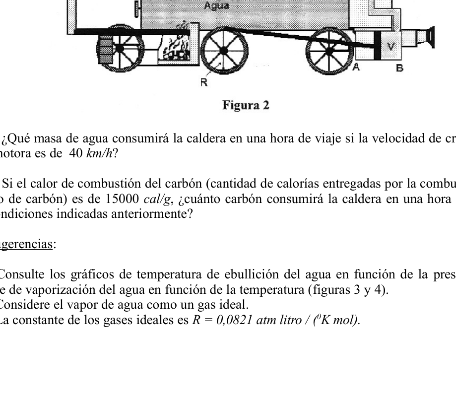
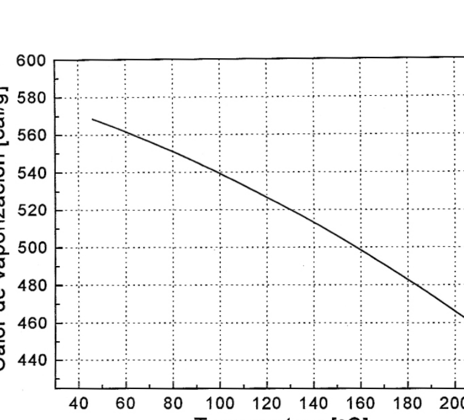
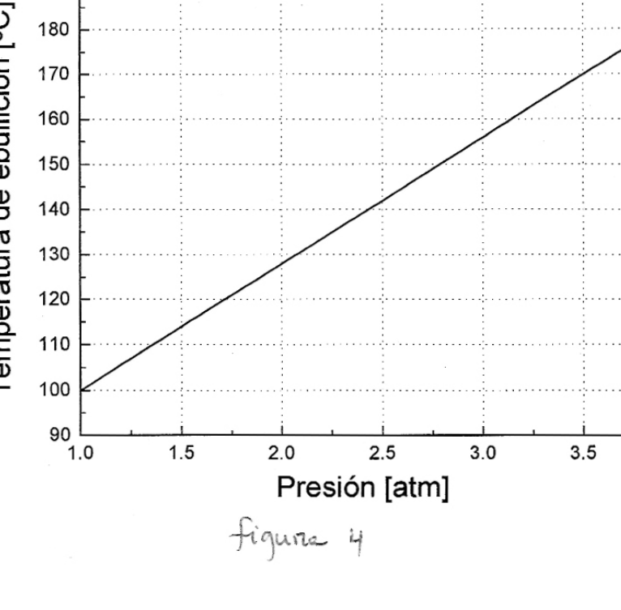
Topic: Thermodynamics Metodi: Ideal Gas Law, First Law of Thermodynamics Competenze: Physical Reasoning Objects: Piston, Cylinder, Gas, Wheel Fonte: Testo (PDF) — p.2
Il problema 2 Una locomotiva a vapore utilizza per la sua propulsione il dispositivo meccanico mostrato nella figura 2. Il vapore generato dalla caldaia, che lavora a una pressione costante di 3,5 atm, entra nel cilindro di volume V= 100 litri, dove il pistone si muove effettuando un movimento di vagabondaggio. Tale pistone è collegato alle ruote di trazione della locomotiva, che hanno un raggio R = 50 cm. Ogni volta che il pistone completa un ciclo (cioè si muove da B a A e torna in posizione) In B) le ruote di trazione della locomotiva fanno un giro completo e il cilindro si svuota tutto il vapore che era entrato dentro di lei. Inoltre, non si possono mai usare le ruote di trazione. scivolano sulla pista. a) Che massa d’acqua consumerà la caldaia in un’ora di viaggio se la velocità di crociera della La locomotiva è a 40 km/h? b) Se il calore di combustione del carbone (quantità di calorie consegnate dalla combustione di un Il calcio di carbone (g) è di 15000 cal/g, quanta carbone consumerà la caldaia in un’ora di viaggio in le condizioni sopra indicate? Suggerimenti:
- Consulta i grafici di temperatura di ebollizione dell’acqua in base alla pressione e al calore La temperatura di acqua è variabile a seconda del livello di temperatura (figure 3 e 4).
- Considerate il vapore idoneo come gas ideale.
- La costante dei gas ideali è R = 0,0821 atm litro / (0K mol).
Topic: Thermodynamics Metodi: Ideal Gas Law, First Law of Thermodynamics Competenze: Physical Reasoning Objects: Piston, Cylinder, Gas, Wheel Fonte: Testo (PDF) — p.2
Problem two. A steam locomotive uses the mechanical device shown in the figure for its propulsion. 2. The steam generated in the boiler, which works at a constant pressure of 3.5 atm, enters the cylinder volume V = 100 litres, where the piston is moved by a swing motion. Such piston is connected to the locomotive’s traction wheels, which have a radius of R = 50 cm. Each time the piston completes a cycle (i.e. it moves from B to A and returns to its position In B), the locomotive ‘s traction wheels complete a full turn and the cylinder is completely emptied the steam that had entered inside. Also, at no time the traction wheels They slip on the track. (a) What mass of water will the boiler consume in an hour’s journey if the cruise speed of the The locomotive is 40 km/h? (b) If the heat from the combustion of coal (the amount of calories delivered by the combustion of a The amount of coal used by the boiler in an hour of travel is 15000 cal/g. the conditions set out above? Suggestions:
- See the boiling temperature charts of the water based on pressure and heat The water vaporization latent depending on temperature (Figures 3 and 4).
- Consider water vapor as an ideal gas.
- The ideal gas constant is R = 0.0821 atm litre / (0K mol).
Topic: Thermodynamics Metodi: Ideal Gas Law, First Law of Thermodynamics Competenze: Physical Reasoning Objects: Piston, Cylinder, Gas, Wheel Fonte: Testo (PDF) — p.2
PROBLEMA 3. En los laboratorios de la empresa VIDRIEX, dedicada a la fabricación de vidrios y acrílicos, se ha descubierto un nuevo material cuyas propiedades ópticas, térmicas y mecánicas son extraordinarias y con insospechadas aplicaciones tecnológicas. Con el propósito de evitar el espionaje industrial en sus laboratorios se ha dejado una única muestra de ese material, la cual ha sido tallada en forma de lente convergente equiconvexa (lentes con caras de igual radio de curvatura). La misma está guardada en una valija portalentes junto con otras tres lentes de igual geometría pero construidas con diferentes materiales. Un espía que logra acceder a uno de los archivos en la computadora central de la empresa se entera de la forma en que el material ha sido ocultado y que su índice de refracción es igual a 1,7748. Esta información es vendida a la competencia, quienes envían a un ladrón especializado a robar dicha lente. Con ese fin ingresa una noche a los laboratorios de la empresa VIDRIEX provisto de un sistema que le permite determinar las distancias focales de las lentes en aire y agua. El ladrón, colocando un objeto a 1 m de cada una de las lentes, obtiene los siguientes valores de las distancias imágenes. Dist. Imagen en aire (cm) Dist. imagen en agua (cm) Lente 1 21.47 134.10 Lente 2 18.38 74.98 Lente 3 14.82 43.21 Lente 4 12.80 32.11 a) Sabiendo que el índice de refracción del aire es 1.000 y el del agua es 1.333, determine la distancia focal de cada una de las lentes en aire y en agua. b) Con los datos de las distancias focales obtenidas en el punto anterior, ¿podría Ud. determinar cual de las lentes debería llevarse el ladrón? Sugerencia: Puede serle útil recordar la fórmula: n f n n R m l m
− ⋅ ( ) 2 donde : nl: índice de refracción de la lente nm: índice de refracción del medio que rodea la lente R : radio de curvatura de las caras de la lente f m : distancia focal de la lente (en el medio en que se encuentra sumergida) El ladrón, con la lente en su poder, se enfrenta ahora con el problema de sacarla del país sin ser detectado por los controles policiales que ya han sido alertados del robo. Con el propósito de ocultarla construye un cubo macizo de 20 cm de lado, de un material transparente de índice de refracción igual a 1,5. La lente es colocada en el centro del cubo. Para que ella no sea visible desde el exterior del cubo y lograr que pase inadvertida, es necesario tapar partes de las distintas caras del cubo. c)¿Que ubicación, forma y dimensiones mínimas deben tener los parches, que se colocarán sobre las caras del cubo, para que la lente robada no sea visible desde el exterior ? d)¿Es posible utilizar cualquier material transparente (es decir, con cualquier índice de refracción) para construir el cubo, de manera tal que se siga cumpliendo la condición de invisibilidad de la lente sin tener que cubrir las caras del cubo completamente?
Topic: Geometric Optics Metodi: Thin Lens & Mirror Equation, Snell’s Law Competenze: Physical Reasoning Objects: Lens Fonte: Testo (PDF) — p.2
Il problema 3. I laboratori della società VIDRIEX, che produce vetri e acrili, sono ha scoperto un nuovo materiale le cui proprietà ottiche, termiche e meccaniche sono: La Commissione ha adottato una decisione che non è stata adottata. Per evitare il La Commissione ha adottato una proposta di direttiva che prevede che le misure di vigilanza e di vigilanza siano state adottate in modo da consentire la messa a disposizione di tali misure. è stato scolpito in forma di lente convergente equiconvexa (lenti con facce uguali di radius di curvatura). La stessa è conservata in una valigia portante insieme ad altri tre obiettivi simili. geometria, ma costruite con materiali diversi. Un’intelligenza che riesce ad accedere a uno dei… i file sul computer centrale dell’azienda si apprendono come il materiale è stato che il suo indice di refraczione è pari a 1.7748. Questa informazione viene venduta alla La concorrenza, che mandano un ladro specializzato a rubare quel lente. Per questo entra una La notizia è stata trasmessa ai laboratori di VIDRIEX con un sistema che permette di determinare le distanze focali dei lenti in aria e acqua. Il ladro, ponendo un oggetto a 1 m da ciascuna delle lenti, ottiene i seguenti valori di le immagini distanti. Dist. Immagine aerea (cm) Dist. immagine in acqua (cm) Lenti 1 21.47 134.10 Lenti 2 18.38 74.98 Lenti 3 14.82 43.21 Lenti 4 12.80 32.11 a) Sapendo che l’indice di refraczione dell’aria è di 1.000 e dell’acqua di 1.333, si determina la Distanza focale di ciascuna lente in aria e acqua. b) Con i dati delle distanze focali ottenuti nel punto precedente, potresti determinare Quale di queste occhiali dovrebbe portare il ladro? Suggerimento: Potrebbe essere utile ricordare la formula: n f n n R m l m
− ⋅ ( ) 2 dove: nl: indice di refraczione della lente nm: indice di refrazione del mezzo che circonda la lente R: radius di curvatura delle facce della lente f m: distanza focale della lente (nel mezzo in cui è immersa) Il ladro, con la lente in mano, si trova ora di fronte al problema di portarla fuori dal paese senza essere.
- E’ stato rilevato dai controlli della polizia che hanno già fatto notare il furto. Per il fine di La copertura è di circa 20 cm, con un cubo di 20 cm di lato, di un materiale trasparente di indice di rifrazione pari a 1,5. La lente è collocata al centro del cubo. Per non essere visibile da allora. Il corpo deve essere ricoperto di una parte del cubo, e il corpo deve essere ricoperto di parti del cubo.
- Un cubo. c) Quali sono le posizioni, le forme e le dimensioni minime che devono essere le patch che verranno inserite su Le facce del cubo, così che la lente rubata non sia visibile dall’esterno? d) È possibile utilizzare qualsiasi materiale trasparente (cioè con qualsiasi indice di La rifrazione è stata effettuata in modo che il costruttore di un’unità di lavoro non abbia invisibilità della lente senza dover coprire completamente i volti del cubo?
Topic: Geometric Optics Metodi: Thin Lens & Mirror Equation, Snell’s Law Competenze: Physical Reasoning Objects: Lens Fonte: Testo (PDF) — p.2
Problem three. In the laboratories of the VIDRIEX company, which produces glass and acrylics, He has discovered a new material whose optical, thermal and mechanical properties are The Commission has already adopted a number of proposals for a new directive. In order to avoid the The Commission has already taken a number of measures to ensure that the Community’s financial resources are not used to finance the implementation of the Community’s internal market. has been carved into the shape of an equiconvex convergent lens (lenses with faces of equal radius curvature). It ‘s in a portable case with three other lenses . geometry but built with different materials. A spy who manages to access one of the The company’s central computer files find out how the material has been It’s a hidden object and its refractive index is 1,7748. This information is sold to the Competition, who send a specialist thief to steal that lens. That ‘s why we ‘re getting a new one . night to the laboratories of the company VIDRIEX equipped with a system that allows you to determine the focal lengths of the lenses in air and water. The thief, by placing an object 1 m from each lens, obtains the following values of the distance images. Dist. Air image (cm) Dist. water image (cm) Lens 1 21.47 134.10 Lens 2 18.38 74.98 Lens 3 14.82 43.21 Lens 4 12.80 32.11 (a) Knowing that the refractive index of air is 1,000 and that of water is 1,333, determine the the focal length of each lens in air and water. (b) With the focal length data obtained in the previous point, could you determining Which of the lenses should the thief wear? Tip: It may be helpful to remember the formula: n f n n R m l m
− ⋅ ( ) 2 where: nl: refractive index of the lens nm: refractive index of the medium surrounding the lens R: radius of curvature of the lens faces f m: focal length of the lens (in the medium in which it is immersed) The thief, with the lens in his hand, is now faced with the problem of getting her out of the country without being. detected by police controls that have already been alerted to the theft. For the purpose of The resulting layer of material is a solid 20 cm side cube of transparent material with an index of refraction equal to 1.5. The lens is placed in the center of the cube. So she ‘s not visible from the The outer side of the cube and to make it pass unnoticed, it is necessary to cover parts of the different faces of the cube. I’m going to get a cube. (c) What minimum location, shape and dimensions should be given to the patches to be placed on The sides of the cube, so the stolen lens is not visible from the outside? (d) Is it possible to use any transparent material (i.e. any index of The re-braking of the bucket is necessary to construct the bucket in such a way that the condition of the bucket is still fulfilled. The invisibility of the lens without having to cover the faces of the cube completely?
Topic: Geometric Optics Metodi: Thin Lens & Mirror Equation, Snell’s Law Competenze: Physical Reasoning Objects: Lens Fonte: Testo (PDF) — p.2
PRUEBA EXPERIMENTAL. AZUL Y VERDE.
CAMPO ELÉCTRICO, DENSIDAD DE CORRIENTE Y RESISTIVIDAD.
1.- Objetivo:
El objetivo de esta experiencia es la determinación de la resistividad del aluminio haciendo uso
de los conceptos de campo eléctrico y densidad de corriente.
2.- Introducción
En los conductores eléctricos se cumple la relación
E = ρ j, (1)
conocida como ley de Ohm; donde E es el módulo del campo eléctrico en un punto del conductor, j
el módulo del vector densidad de corriente en ese punto y ρ es una característica intrínseca del
material, conocida como su resistividad.
El módulo del vector densidad de corriente está dado por
j = I/A,
donde I es la intensidad de la corriente eléctrica y A el área de la sección transversal del conductor.
Además, en un conductor lineal y homogéneo con sección transversal constante, se verifica que
la resistencia eléctrica R, entre dos puntos separados por una distancia L, es
R = ρ L/A
A su vez, el módulo del campo eléctrico puede expresarse por medio de la expresión:
E = V/L
donde V es la diferencia de potencial entre dos puntos del conductor separados por una distancia L.
A partir de las expresiones previas, es directo verificar que la ecuación (1) es equivalente a la
conocida relación:
V = I R
3.- Lista de Materiales
- Una lámina de aluminio, montada sobre una regla de acrílico, sobre la que se realizarán las mediciones.
- Dos multímetros digitales.
- Una fuente de corriente.
- Dos cables para conexiones.
- Una ficha cocodrilo.
- Una regla milimetrada – Hojas de papel en blanco y milimetrado. 4.- Procedimiento Experimental i) Limpie la lámina metálica con un algodón embebido en alcohol, prestando atención de no romperla.
ii) Arme el circuito mostrado en la figura. Haga circular a través del conductor una corriente mayor a 0,5 A. iii) Mida la diferencia de potencial entre el extremo de la lámina metálica conectada al terminal negativo de la fuente (cable negro) y otros puntos a lo largo de la misma, o sea, mida V en función de la distancia ∆x sobre la lámina. Se requiere: a) Realizar una gráfica de la diferencia de potencial V, en función de la distancia ∆x. b) Determinar los valores de las pendientes de los tramos rector que observará en el gráfico de V en función de ∆x, con sus respectivos errores. c) Analizar las unidades de esas pendientes y explicitar la magnitud eléctrica con la que están directamente relacionadas. d) Sabiendo que el espesor de la hoja metálica es de (25±1) µm (1 µm = 10-6 m), determinar la densidad de corriente en los diferentes tramos de dicha lámina, con sus respectivos errores. e) Hacer un gráfico de E en función de j. A partir de ese gráfico obtener el valor de la resistividad ρ del material de la lamina metálica, con su correspondiente error. Nota: describa detalladamente los criterios utilizados en la determinación de los errores.
- Coloque el Amperímetro en la escala de 10 A de corriente continua.
- Coloque el Voltímetro en la escala de 200 mV de Corriente Continua (DCA). ATENCIÓN: No conecte la fuente a la red (220 V) hasta haber colocado el Voltímetro y Amperímetro en las escalas correspondientes. x Fuente Amperímetro Voltímetro negro rojo
INSTANCIAS LOCALES. PROBLEMAS TEÓRICOS. LUGAR Y CATEGORÍA.
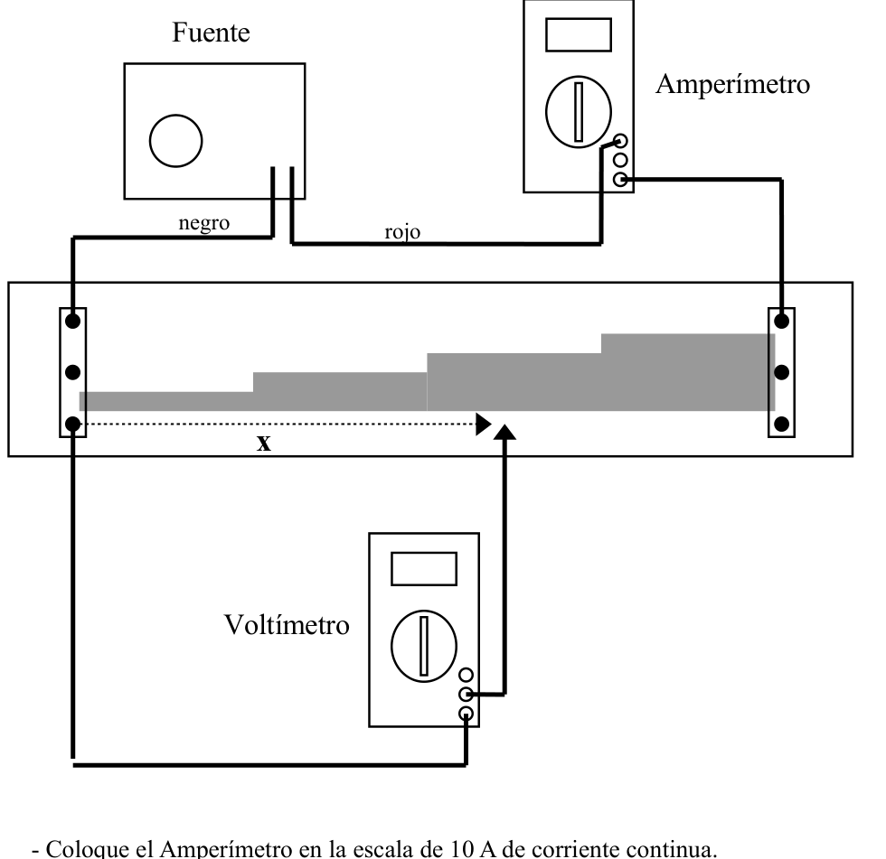
Topic: Circuits Metodi: Experimental Data Analysis, Graph Linearization, Error Propagation Competenze: Physical Reasoning, Experimental Data Analysis Objects: Resistor, Wire Fonte: Testo (PDF) — p.2
Prova sperimentale. Blu e verde. Campo elettrico, densità di corrente e resistenza. 1.- Obiettivo: L’obiettivo di questa esperienza è determinare la resistenza dell’alluminio in uso. di concetti di campo elettrico e densità di corrente. 2.- Introduzione In conducenti elettrici si è rispettato il rapporto E = ρ j, (1) nota come legge di Ohm; dove E è il modulo del campo elettrico in un punto del conduttore, j il modulo del vettore di densità di corrente a quel punto e ρ è una caratteristica intrinseca del materiale, noto come resistenza. Il modulo del vettore di densità di corrente è dato da j = I/A, dove I è l’intensità del corrente elettrica e A l’area della sezione trasversale del conduttore. Inoltre, in un conduttore lineare e omogeneo con sezione trasversale costante, si verifica che la resistenza elettrica R, tra due punti separati da una distanza L, è R = ρ L/A Il modulo del campo elettrico può essere espresso con l’espressione: E = V/L dove V è la differenza di potenziale tra due punti del conduttore separati da una distanza L. Dalle espressioni precedenti, è diretto verificare che l’equazione (1) è equivalente a Relazione nota: V = I R 3.- Lista dei materiali
- una lamina di alluminio montata su una regola di acrilico su cui si effettueranno le misurazioni.
- Due multimetro digitali.
- Una fonte di corrente.
- Due cavi per le connessioni.
- Un’archiva di coccodrillo.
- Una regola di millimetro – Foli di carta bianca e millimetrica. 4.- Procedura sperimentale i) Pulire la lamiera metallica con un cotone imbevuto di alcol, prestando attenzione a non
- La rompere.
(ii) Armati il circuito mostrato nella figura. Fate circolare un flusso attraverso il conducente superiore a 0,5 A. iii) Misura la differenza di potenziale tra l’estremità della lamina metallica collegata al terminale Negativo della fonte (cabo nero) e altri punti lungo la stessa, cioè misura V in funzione di distanza ∆x sulla lamina. È necessario: a) Realizzare un grafico della differenza di potenziale V, in funzione della distanza ∆x. b) Determinare i valori delle pendenti dei tratti rectori che osserverà nel grafico di V in funzione di ∆x, con i rispettivi errori. c) Analizzare le unità di queste pendenti e spiegare la loro grandezza elettrica. direttamente correlati. d) Sapendo che lo spessore della foglia è di (25±1) μm (1 μm = 10-6 m), determinare la densità di corrente nei diversi tratti di tale lamina, con i rispettivi errori. e) Fare un grafico di E in base a j. Da quel grafico si ottiene il valore di resistenza ρ del materiale della lamina metallica, con il relativo errore. Nota: descrive in dettaglio i criteri utilizzati per determinare gli errori.
-
Metti l’Amperimetro sulla scala di 10A di corrente continua.
-
Metti il Voltímetro sulla scala di 200 mV di corrente continua (CDC). ATTENZIONE: non collegare la fonte alla rete (220 V) fino a quando non hai inserito il Voltímetro e Amperimetro sulle scale corrispondenti. x Fonte Perimetro Voltimetro nero rosso
-
Instanze locali. Problemi teorici. LUOGIO E CATEGORIA.
Topic: Circuits Metodi: Experimental Data Analysis, Graph Linearization, Error Propagation Competenze: Physical Reasoning, Experimental Data Analysis Objects: Resistor, Wire Fonte: Testo (PDF) — p.2
This is an experimental test. Blue and green. Electric field, current density and resistance.
-
- Objective: The aim of this experiment is to determine the resistivity of aluminium by use. The concept of electric field and current density.
- Introduction to the proposal In electrical conductors the ratio is fulfilled E = ρ j, (1) known as Ohm’s law; where E is the module of the electric field at a point on the conductor, j the module of the current density vector at that point and ρ is an intrinsic characteristic of material, known as its resistivity. The current density vector module is given by j = I/A, where I is the intensity of the electric current and A is the area of the conductor cross section. In addition, in a linear, homogeneous conductor with a constant cross-section, it is found that The electrical resistance R, between two points separated by a distance L, is R = ρ L/A In turn, the electric field module can be expressed by the expression: E = V/L where V is the potential difference between two conductor points separated by a distance L. From the previous expressions, it is straightforward to verify that equation (1) is equivalent to known relationship: V = I R 3.- List of materials
- An aluminium sheet mounted on an acrylic wheel on which the measurements.
- Two digital multimeters.
- A power source.
- Two wires for connections.
- It’s a crocodile chip.
- A millimeter rule – Sheets of white, millimeter paper. 4.- Experimental procedure (i) Clean the sheet with an alcohol-soaked cotton, paying attention to no break it.
(ii) Arm the circuit shown in the figure. Make a current circulate through the conductor. greater than 0,5 A. (iii) Measure the potential difference between the end of the sheet metal connected to the terminal negative of the source (black cable) and other points along it, i.e. measured V as a function of the distance ∆x over the sheet. It is required: (a) Draw a graph of the potential difference V, based on the distance ∆x. (b) Determine the slope values of the rectangular sections you will observe in the graph of V in relation to ∆x, with their respective errors. (c) Analyze the units of those earrings and explain the electrical magnitude at which they are. directly related. (d) Knowing that the thickness of the sheet is (25±1) μm (1 μm = 10-6 m), determine the current density in the different sections of the sheet, with their respective errors. (e) Draw a graph of E based on j. From that graph you get the value of the Resistivity ρ of the metal sheet material, with its corresponding error. Note: describe in detail the criteria used in the determination of errors.
- Place the perimeter on the 10A DC scale.
- Place the Voltmeter on the 200 mV DC scale. NOTE: Do not connect the source to the network (220 V) until you have placed the Voltmeter and Amperimeter at the corresponding scales. x The following is the source: Other, not further worked than cutting Other instruments black Red
Local instances. Theoretical problems. Location and category.
Topic: Circuits Metodi: Experimental Data Analysis, Graph Linearization, Error Propagation Competenze: Physical Reasoning, Experimental Data Analysis Objects: Resistor, Wire Fonte: Testo (PDF) — p.2
- CIUDAD DE BUENOS AIRES. VERDE. Una esfera de corcho se sumerge en agua a una profundidad de 10 m. Sin considerar la fricción, calcular el tiempo que tarda en llegar a la superficie. densidad del agua 1 kg./dm 3 densidad del corcho 0,2 kg./dm 3
Topic: Fluid Mechanics Metodi: Hydrostatic Equilibrium, Kinematic Equations Competenze: Physical Reasoning Objects: Sphere Fonte: Testo (PDF) — p.2
- Città di Buoni Aerei. - Verdi. Una sfera di cork si immerge in acqua a una profondità di 10 m. Senza considerare la friczione, Calcolare il tempo necessario per raggiungere la superficie. densità dell’acqua 1 kg/dm 3 densità di cork 0,2 kg/dm 3
Topic: Fluid Mechanics Metodi: Hydrostatic Equilibrium, Kinematic Equations Competenze: Physical Reasoning Objects: Sphere Fonte: Testo (PDF) — p.2
- City of Good Airs. Green. A cork sphere is submerged in water at a depth of 10 m. Without considering the friction, calculate the time it takes to reach the surface. water density 1 kg/dm 3 cork density of 0,2 kg/dm 3
Topic: Fluid Mechanics Metodi: Hydrostatic Equilibrium, Kinematic Equations Competenze: Physical Reasoning Objects: Sphere Fonte: Testo (PDF) — p.2
- CIUDAD DE BUENOS AIRES. VERDE. Una fuente luminosa se halla situada en el fondo de una pileta de agua de 100 cm de profundidad, emitiendo rayos en todas las direcciones. Los rayos que se refractan forman en la superficie del agua un círculo luminoso. a) esquematizar la situación y fundamentar el fenómeno b) determinar el diámetro del círculo. Indice de refracción del agua respecto del aires 1,33
Topic: Geometric Optics Metodi: Snell’s Law Competenze: Physical Reasoning Objects: — Fonte: Testo (PDF) — p.2
- Città di Buoni Aerei. - Verdi. Una fonte luminosa si trova sul fondo di un bacino d’acqua di 100 cm di altezza. profondità, emettendo fulmini in tutte le direzioni. I raggi che si refraggono si formano nella la superficie dell’acqua un cerchio luminoso. a) schematizzare la situazione e fondare il fenomeno b) determinare il diametro del cerchio. Indice di refraczione dell’acqua rispetto all’aria 1,33
Topic: Geometric Optics Metodi: Snell’s Law Competenze: Physical Reasoning Objects: — Fonte: Testo (PDF) — p.2
- City of Good Airs. Green. A light source is located at the bottom of a 100 cm water pool. depth, emitting rays in all directions. The refracted rays form in the surface of the water a bright circle. (a) outline the situation and explain the phenomenon (b) determine the diameter of the circle. Water refractive index with respect to air 1,33
Topic: Geometric Optics Metodi: Snell’s Law Competenze: Physical Reasoning Objects: — Fonte: Testo (PDF) — p.2
- CIUDAD DE BUENOS AIRES. VERDE. Un calentador eléctrico, cuya resistencia es de 30 ohm esta´ conectado a la red de 220 volt. a) calcular el tiempo que dicho calentador debe estar sumergido en un recipiente completamente lleno con 250 g de agua para que la temperatura aumente de 10 *C a 70 *C, suponiendo que no hay pe´rdidas. b) si se trata de un recipiente cilíndrico de hierro de 2,821 cm de radio y 10 cm de altura, calcular la cantidad de agua que se derramara´. Calor especifico del agua 1 cal/g *C Coeficiente de dilatación lineal del Fe 11 . 10 -6 l/*C Coeficiente de dilatación volumétrica del agua 4,57 . 10 -4 l/*C
Topic: Thermodynamics, Circuits Metodi: First Law of Thermodynamics Competenze: Physical Reasoning Objects: Resistor, Container Fonte: Testo (PDF) — p.2
- Città di Buoni Aerei. - Verdi. Un riscaldatore elettrico, con una resistenza di 30 ohm, è collegato alla rete di 220 volt. a) calcolare il tempo che il riscaldatore deve essere completamente immerso in un recipiente riempito di 250 g di acqua per aumentare la temperatura da 10 *C a 70 *C, supponendo che non vi sia
- Perdi. b) se si tratta di un recipiente cilindrico di ferro di 2,821 cm di radio e 10 cm di altezza, Calcolare la quantità di acqua che verrà versata. Calore specifico dell’acqua 1 cal/g *C Coefficiente di dilatazione lineare della Fea 11 . 10 -6 l/*C Coefficiente di dilatazione volumetrica dell’ acqua 4,57 . 10 -4 l/*C
Topic: Thermodynamics, Circuits Metodi: First Law of Thermodynamics Competenze: Physical Reasoning Objects: Resistor, Container Fonte: Testo (PDF) — p.2
- City of Good Airs. Green. An electric heater, with a resistance of 30 ohms, is connected to the 220-volt grid. (a) calculate the time for the heater to be fully immersed in a container filled with 250 g of water to increase the temperature from 10 *C to 70 *C, assuming there is no I’m sorry about that. (b) if it is a cylindrical iron container with a radius of 2,821 cm and a height of 10 cm, Calculate the amount of water that will be spilled. Specific water heat 1 cal/g *C Linear dilation coefficient of Fe 11 . 10 -6 l/*C The volume dilation coefficient of the water is 4.57 . 10 -4 l/*C
Topic: Thermodynamics, Circuits Metodi: First Law of Thermodynamics Competenze: Physical Reasoning Objects: Resistor, Container Fonte: Testo (PDF) — p.2
- CIUDAD DE BUENOS AIRES. VERDE. Un automóvil A de 1600 kgr de peso se dirige hacia el este por una avenida de doble mano a una velocidad constante de 72 km/h. Otro automóvil B que pesa 1000 kg., se dirige hacia el noroeste con velocidad constante por una calla diagonal a 45° de mano única.
Como ninguno de los conductores frena al llegar a la bocacalle, se produce un choque entre ellos. Como consecuencia del mismo, los autos quedan trabados, deslizándose sobre el pavimento y siguiendo una trayectoria que forma un ángulo de 30° hacia el norte del este con respecto a la dirección original del primero. Considerando a los vehículos como masas puntuales, determinar: a) La velocidad del automóvil B antes del choque y la del conjunto inmediatamente después del mismo. b) La velocidad relativa del automóvil A con respecto al automóvil B antes del choque. c) La cantidad de movimiento del sistema compuesto por ambos automóviles. d) La energía cinética del automóvil A antes del choque y la del sistema inmediatamente después del mismo. e) El calor disipado en el choque. f) Si el sistema chocará con el paredón ubicado a 9 m de la dirección original del automóvil A o si se detendrá antes y, en este último caso, a que distancia del paredón lo hará sasbiendo que el coeficiente de rozamiento dinámico entre los neumáticos y el pavimento es de 0,3. g) El calor disipado durante el desplazamiento. Considerar g = 9,8 m/s2.
Topic: Conservation of Momentum Metodi: Conservation of Momentum, Vector Decomposition, Conservation of Energy Competenze: Physical Reasoning Objects: — Fonte: Testo (PDF) — p.2
- Città di Buoni Aerei. - Verdi. Una macchina A di 1.600 kg si dirige verso est su un’avvenuta a due mani a una. velocità costante di 72 km/h. Un’altra auto B, che pesa 1000 kg, si dirige a nord-ovest con velocità costante per un’artigliatura diagonale a 45° di una sola mano.
Poiché nessuno dei conducenti frenerebbe quando arriverebbe alla porta, si verifica un colpo tra i due conducenti.
- E’ loro. Come conseguenza, le auto si bloccano, scivolano sul pavimento e seguendo un percorso che forma un angolo di 30° verso nord-est rispetto alla indirizzo originale del primo. Considerando i veicoli come masse puntate, determinare: a) La velocità della vettura B prima della collisione e quella dell’insieme immediatamente dopo la collisione.
- Proprio così. b) La velocità relativa della vettura A rispetto alla vettura B prima della collisione. c) La quantità di movimento del sistema composto da entrambe le auto. d) L’energia cinetica della vettura A prima dell’impatto e quella del sistema immediatamente dopo di quello stesso. e) Il calore dissipato nel colpo. (f) Se il sistema si schianta con il parete situato a 9 m dalla direzione originale della vettura A o se si fermerà prima e, in questo caso, a che distanza dal muro lo farà sapendo che il il coefficiente di rottura dinamica tra le gomme e il pavimento è di 0,3. g) Il calore dissipato durante il spostamento. Considerare g = 9,8 m/s2.
Topic: Conservation of Momentum Metodi: Conservation of Momentum, Vector Decomposition, Conservation of Energy Competenze: Physical Reasoning Objects: — Fonte: Testo (PDF) — p.2
- City of Good Airs. Green. A 1,600-kilogram A car is heading east on a double-handed one-way street. a constant speed of 72 km/h. Another B car weighing 1,000 kg, heading northwest. with a steady speed by a single-handed diagonal clamp to 45°.
As no driver brakes when they reach the mouth of the street, a collision occurs between the two They’re not. As a result, cars get stuck, sliding over the pavement and following a trajectory forming an angle of 30° to the northeast with respect to the The original address of the first. Considering vehicles as point masses, determine: (a) The speed of the car B before the collision and that of the vehicle immediately after the collision. I’m not. (b) The relative speed of car A with respect to car B before the collision. (c) The amount of movement of the system composed of both cars. (d) The kinetic energy of car A before the impact and that of the system immediately afterwards of the same. (e) The heat dissipated in the shock. (f) If the system will collide with the wall located 9 m from the original direction of the car A or If it will stop before and in the latter case, at what distance from the wall it will do so by means of the The dynamic friction coefficient between the tyres and the pavement is 0,3. (g) The heat dissipated during displacement. Consider g = 9.8 m/s2.
Topic: Conservation of Momentum Metodi: Conservation of Momentum, Vector Decomposition, Conservation of Energy Competenze: Physical Reasoning Objects: — Fonte: Testo (PDF) — p.2
- CIUDAD DE BUENOS AIRES. VERDE. Un ión 58Ni de carga +e = 1,6. 10-19 C y masa 9,62. 10-26kg, se acelera desde el reposo a través de una zona del espacio con una diferencia de potencial V, y a continuación entra en una zona donde únicamente existe un campo magnético uniforme de 0,12 T con una velocidad de 9,99. 104 m/s. a) Calcula la diferencia de potencial V capaz de acelerar al ión 58Ni en las condiciones establecidas. b) Si el campo magnético es perpendicular al plano de la trayectoria del ión 58Ni: b.1) Determina el radio de curvatura de la trayectoria del ión 58Ni en la zona del campo magnético. b.2) Calcula el período del movimiento del ión. b.3) Si ingresa ahora un ión 60Ni (60/58 es la relación masas de 60Ni con 58Ni), acelerado con la misma V ¿Cuál sería la diferencia entre los radios de la trayectoria de cada ión? c) Si el campo magnético formara un ángulo de 30° con el vector velocidad del ión 58Ni en el momento de ingresar en la zona del campo magnético: c.1) ¿Qué tipo de trayectoria seguiría? c.2) Determine el radio de curvatura de la trayectoria del ión 58Ni en la zona del campo magnético.
Topic: Magnetism Metodi: Lorentz Force Analysis Competenze: Physical Reasoning Objects: Point Charge Fonte: Testo (PDF) — p.2
- Città di Buoni Aerei. - Verdi. Un ione 58Ni di carico +e = 1,6. 10-19 C e massa 9,62. 10-26 kg, si accelera dal riposo attraverso una zona dello spazio con una differenza di potenziale V, e poi entra in una zona dove solo esiste un campo magnetico uniforme di 0,12 T con velocità di 9,99. 104 m/s. a) Calcola la differenza di potenziale V capace di accelerare l’ion 58Ni in condizioni
- Esistenti. b) Se il campo magnetico è perpendicolare al piano del percorso dell’ion 58Ni: b.1) Determina il raggio di curvatura del percorso dell’ion 58Ni nell’area del campo Magnetico. b.2) Calcola il periodo di movimento dell’ion. b.3) Se entra ora un ione 60Ni (60/58 è il rapporto di massa di 60Ni con 58Ni), accelerato con La stessa V. Qual sarebbe la differenza tra i raggi del percorso di ogni ione? c) Se il campo magnetico formasse un angolo di 30° con il vettore di velocità dell’ion 58Ni nel momento di ingresso nella zona del campo magnetico: c.1) Che tipo di percorso seguirebbe? c.2) Determina il raggio di curvatura del percorso dell’ion 58Ni nell’area del campo Magnetico.
Topic: Magnetism Metodi: Lorentz Force Analysis Competenze: Physical Reasoning Objects: Point Charge Fonte: Testo (PDF) — p.2
- City of Good Airs. Green. A 58Ni charge ion + e = 1.6. 10-19 C and mass 9.62. 10-26kg, accelerated from rest through a zone of space with a potential difference of V, and then you enter a zone where only a uniform magnetic field of 0,12 T with a speed of 9,99 exists. 104 m/s. (a) Calculate the V potential difference capable of accelerating ion 58Ni under conditions established. (b) If the magnetic field is perpendicular to the plane of the trajectory of ion 58Ni: (b.1) Determines the radius of curvature of the path of ion 58Ni in the field area magnetic. (b.2) Calculate the period of ion movement. If a 60Ni ion (60/58 is the mass ratio of 60Ni to 58Ni) is now entered, accelerated by The same V. What would be the difference between the radii of each ion’s trajectory? (c) If the magnetic field formed an angle of 30° with the velocity vector of the ion 58Ni at the time of entry into the magnetic field zone: (c.1) What kind of trajectory would it follow? (c.2) Determine the radius of curvature of the trajectory of ion 58Ni in the field area magnetic.
Topic: Magnetism Metodi: Lorentz Force Analysis Competenze: Physical Reasoning Objects: Point Charge Fonte: Testo (PDF) — p.2
- CIUDAD DE BUENOS AIRES. VERDE. Un cilindro aislado termicamente; provisto de un pistón de las mismas características el cual se puede deslizar sin rozamiento y de área 100 cm2, contiene una masa de aire a una presión de 11 at y a una temperatura de 303°K y ocupando un volumen de 2l. La atmósfera del lugar en que se encuentra el dispositivo esta a 20 °C y a una presión de 1 at. Para lograr el equilibrio del aire contenido en el cilindro fue necesario suspender de una cuerda (de peso despreciable) un cuerpo de peso W, como se indica en la figura:
Se desea que dicho dispositivo sea capaz de elevar el cuerpo W una altura h1 = 10 cm. Para ello se sumerge en el aire tres resistencias (R1= 20Ω, R2 = , R3 = 14Ω)alimentadas por una fuente de 50 Volts durante 40 seg. Logrando que el aire al expandirse alcance un nuevo estado de equilibrio. Considerando el comportamiento del aire como ideal (R 29,27 kgrm/kg°K; cv-0,17 kcal/kg°K) a) Determine el peso del cuerpo. b) Calcule el trabajo realizado por el aire. c) Calcule el calor que absorbe el aire. d) Determinar como se deben agrupar las resistencias sumergidas en el aire para lograr el efecto deseado. Considerar: 1 at = 10000 kgr/m2 1kcal = 4187 Joule = 427 kgrm.
Topic: Thermodynamics Metodi: First Law of Thermodynamics, Ideal Gas Law Competenze: Physical Reasoning Objects: Cylinder, Piston, Gas, Resistor Fonte: Testo (PDF) — p.2
- Città di Buoni Aerei. - Verdi. Un cilindro isolato termicamente; dotato di un pistone delle stesse caratteristiche che si può scivolare senza ruggine e di superficie di 100 cm2, contiene una massa di aria a una pressione di 11 at e a una temperatura di 303°K e occupando un volume di 2 l. L’atmosfera del luogo in cui si trova si trova il dispositivo a 20 °C e a una pressione di 1 at. Per raggiungere il equilibrio dell’aria contenuto nel cilindro è stato necessario sospendere da una corda (di peso dispregiato) un corpo di peso W, come indicato nella figura:
Si desidera che tale dispositivo sia in grado di alzare il corpo W ad una altezza h1 = 10 cm. Per questo. 3 resistenze (R1=20Ω, R2= , R3=14Ω) alimentate da una fonte di 50 Volts per 40 secondi. Riuscendo ad espandere l’aria fino a raggiungere un nuovo stato di equilibrio. Considerando il comportamento dell’aria come ideale (R 29,27 kgrm/kg°K; cv-0,17 kcal/kg°K) a) Determina il peso corporeo. b) Calcolare il lavoro effettuato dall’aria. c) Calcolare il calore che assorbe l’aria. d) Determinare come aggregarsi le resistenze immerse nell’aria per ottenere l’effetto Desiderato. Considerare: 1 at = 10000 kgr/m2 1 kcal = 4187 Joule = 427 kgrm.
Topic: Thermodynamics Metodi: First Law of Thermodynamics, Ideal Gas Law Competenze: Physical Reasoning Objects: Cylinder, Piston, Gas, Resistor Fonte: Testo (PDF) — p.2
- City of Good Airs. Green. A cylinder insulated from heat; provided with a piston of the same characteristics as the piston It can slide without friction and has an area of 100 cm2, contains an air mass at a pressure of 11 at and at a temperature of 303°K and occupying a volume of 2 l. The atmosphere of the place where you are Find the device at 20 °C and at a pressure of 1 at. To achieve air balance The cylinder contained in the cylinder had to be suspended from a rope (of negligible weight) a body of Weight W, as shown in Figure:
It is desirable that such a device be capable of lifting the body W to a height of h1 = 10 cm. For that . Three resistors (R1=20Ω, R2= , R3=14Ω) are immersed in the air, fed by a source of 50 Volts for 40 seconds. By achieving that air as it expands reaches a new state of equilibrium. Considering the air behaviour as ideal (R 29,27 kgrm/kg°K; cv-0,17 kcal/kg°K) (a) Determine body weight. (b) Calculate the work performed by the air. (c) Calculate the heat absorbed by the air. (d) Determine how the resistance submerged in air must be grouped to achieve the effect I want to. Consider: 1 at = 10000 kgr/m2 1 kcal = 4187 Joule = 427 kgrm.
Topic: Thermodynamics Metodi: First Law of Thermodynamics, Ideal Gas Law Competenze: Physical Reasoning Objects: Cylinder, Piston, Gas, Resistor Fonte: Testo (PDF) — p.2
- CIUDAD DE BUENOS AIRES. VERDE. Un bloque de acero, fijo a tierra, presenta una cavidad cilíndrica y tiene alojado en su interior un pistón de plomo, de masa m1 = 25kg. A la temperatura de 18°C, por efecto de la dilatación de ambos materiales, el pistón ejerce una presión sobre las paredes de la cavidad cilíndrica de 500 Pa. El aire encerrado en la cavidad por el pistón es evacuado a través de un conducto al exterior. El pistón se encuentra vinculado por medio de una cuerda al bloque de masa m2 = 90kg, ubicado sobre un plano inclinado, con rozamiento. (Se desprecia el rozamiento en la polea). Calcular: a) La aceleración del sistema y la tensión en la cuerda. b) Entre qué valores podría variar la masa m2 para que el sistema permanezca en reposo. c) Suponiendo que la cuerda se rompe estando el sistema en reposo, con el pistón ubicado a una distancia d = 25cm del fondo de la cavidad, ¿con qué velocidad llega el pistón al fondo? Datos: Dimensiones del pistón a 18°C: altura = 14,37cm; radio = 7cm Coeficientes de rozamiento acero-plomo: µestático = 0,95 µdinámico = 0,85 Coeficientes de rozamiento bloque-plano inc.: µestático = 0,15 µdinámico = 0,1 Aceleración de la gravedad: g = 10m/s2
Topic: Newtonian Mechanics Metodi: Free-Body Diagram, Vector Decomposition Competenze: Physical Reasoning Objects: Piston, Block, Inclined Plane, Pulley, String Fonte: Testo (PDF) — p.2
- Città di Buoni Aerei. - Verdi. Un blocco di acciaio, fissato a terra, presenta una cavità cilindrica e ha alloggiato all’interno un Piston di piombo, di massa m1 = 25 kg. A 18°C, per effetto della dilatazione di Entrambi i materiali, il pistone esercita una pressione sui muri della cavità cilindrica di 500 Pa. L’aria chiusa nella cavità dal pistone viene evacuata attraverso un condotto all’esterno. El il pistone è collegato con una corda al blocco di massa m2 = 90 kg, situato sopra un piano inclinato, con un’arriccio. (Si disprezza il ruggine sulla pollea). Calcolo: a) Accelerazione del sistema e tensione della corda. b) Tra quali valori potrebbe variare la massa m2 per mantenere il sistema a riposo. c) Supponendo che la corda si rompa mentre il sistema è a riposo, con il pistone posizionato a una Distanza d = 25 cm dal fondo della cavità, a che velocità il pistone arriva al fondo? Dati: Dimensioni del pistone a 18°C: altezza = 14,37cm; raggio = 7cm Coefficienti di rottura in acciaio e piombo: μstatico = 0,95 μdinamico = 0,85 Coefficienti di rottura blocco-piano inc.: di cui sopra: μdinamico = 0,1 Accelerazione della gravità: g = 10m/s2
Topic: Newtonian Mechanics Metodi: Free-Body Diagram, Vector Decomposition Competenze: Physical Reasoning Objects: Piston, Block, Inclined Plane, Pulley, String Fonte: Testo (PDF) — p.2
- City of Good Airs. Green. A steel block, grounded, has a cylindrical cavity and has a housing inside it. a lead piston, of a mass of m1 = 25 kg. At 18°C, by dilation effect of Both materials, the piston exerts a pressure on the walls of the cylindrical cavity of 500 Pa. The air locked in the cavity by the piston is evacuated through a conduit to the outside. El piston is connected by a rope to the mass block m2 = 90kg, located on a flat, sloping plane with a scratch. (The grating on the pulley is despised). Calculation of the (a) The acceleration of the system and the tension on the rope. (b) What values could vary the mass m2 to keep the system at rest? (c) Assuming that the rope breaks while the system is at rest, with the piston located at a distance d = 25 cm from the bottom of the cavity, how fast does the piston reach the bottom? The data: Piston dimensions to 18°C: height = 14,37cm; radius = 7cm Lead-steel friction coefficients: μstatic = 0,95 The following is the list of the following: The following components are used: The following is the list of the following: The following is the list of the following: The acceleration of gravity: g = 10m/s2
Topic: Newtonian Mechanics Metodi: Free-Body Diagram, Vector Decomposition Competenze: Physical Reasoning Objects: Piston, Block, Inclined Plane, Pulley, String Fonte: Testo (PDF) — p.2
- CIUDAD DE BUENOS AIRES. VERDE. Un cañón K emite un haz laser en dirección vertical. El rayo incide sobre un medio cilindro, n = 1,5 (fig. 1) en un punto B que se encuentra en la 1/3 parte de la longitud del arco CA. El cañón se encuentra a 1m sobre la vertical del punto B. Sobre la base de medio cilindro se encuentra un espejo E con un eje perpendicular. El eje se encuentra ubicado en el punto de incidencia del rayo sobre la base CA. Calcular: a) El ángulo que debe girarse el espejo para que el rayo pase por el punto A luego de reflejarse. b) La distancia que recorre el rayo dentro del medio cilindro. c) El tiempo que tarda el rayo desde que sale del cañón K hasta que llega al punto A. d) Suponiendo que en el punto A hay un segundo espejo (fig. 2) que hace que el rayo se refleje y llegue al punto D, indique el camino que sigue el rayo luego de incidir sobre D (realizar todos los cálculos necesarios para justificar). Dato: C0 = 300.000 km/seg
Topic: Geometric Optics Metodi: Snell’s Law, Ray Tracing Competenze: Physical Reasoning Objects: Cylinder, Mirror Fonte: Testo (PDF) — p.2
- Città di Buoni Aerei. - Verdi. Un cannone K emette un laser in direzione verticale. Il raggio incide su un mezzo cilindro, N = 1,5 (fig. 1) in un punto B situato a 1/3 della lunghezza dell’arco CA. Il cannone . si trova a 1 m sul punto B. Sulla base di mezzo cilindro si trova un specchio E con un asse perpendicolare. L’asse è situato al punto di incidenza del raggio sulla base CA. Calcolo: a) L’angolo da girare per far passare il raggio dal punto A dopo la riflessione. b) La distanza tra il fulmine e la metà del cilindro. c) Il tempo che il raggio trascorre dal momento in cui esce dal cannone K fino al punto A. d) Supponendo che nel punto A ci sia un secondo specchio (fig. 2) che fa riflettere il raggio e Arrivo al punto D, indicare il percorso che il raggio segue dopo aver inciso su D (rilevare tutti i (cfr. paragrafo 1 del regolamento) Data: C0 = 300.000 km/sec
Topic: Geometric Optics Metodi: Snell’s Law, Ray Tracing Competenze: Physical Reasoning Objects: Cylinder, Mirror Fonte: Testo (PDF) — p.2
- City of Good Airs. Green. A K gun emits a laser beam in a vertical direction. The lightning hits a half-cylinder, The following table shows the results of the calculation: 1) at a point B located 1/3 of the length of the CA arc. The cannon . is 1 m above the vertical of point B. On the base of the half-cylinder is a E mirror with a perpendicular axis. The axis is located at the point of impact of the beam. on the CA basis. Calculation of the (a) The angle at which the mirror must be rotated so that the beam passes through point A after reflection. (b) The distance travelled by the beam within the half-cylinder. (c) The time it takes for the beam to reach point A from the exit of the K cannon. (d) Assuming that there is a second mirror in point A (fig. 2) which causes the lightning to reflect and reaching point D, indicate the path the beam follows after impacting on D (realize all the The Commission shall adopt implementing acts in accordance with Article 21 of Regulation (EC) No 1272/2009. Date: C0 = 300,000 km/second
Topic: Geometric Optics Metodi: Snell’s Law, Ray Tracing Competenze: Physical Reasoning Objects: Cylinder, Mirror Fonte: Testo (PDF) — p.2
- CIUDAD DE BUENOS AIRES. VERDE. El circuito de la figura es alimentado por una batería de 12 volt y 30 amper-hora, con una resistencia interna de 0,2Ω. Todas las resistencias son de 6Ω, a la temperatura de 20°C, funcionando todo el circuito a esa temperatura. Calcular: a) Todas las intensidades, estando las 2 llaves cerradas. b) El tiempo de duración de la batería. c) Si la potencia máxima que pueden disipar las resistencias R1 y R6 es 2,7 watt, verificar si todas las resistencias pueden quedar conectadas, de lo contrario, indique, justificando, cuál llave debe quedar abierta para que la intensidad en R1 y R6 sea la máxima posible. d) Suponiendo que VAB no puede superar 3,2V, y reemplazando a R1 por otra de 6Ω a 20°C, pero que dispone de un baño de aceite que permite elevar la temperatura de funcionamiento, calcular a qué temperatura debe trabajar R1 para que R6 no supere su potencia máxima.
Datos: Variación de la resistencia con la temperatura R = R0(1 + α (tf - t0)) α = Coeficiente de temperatura = 4 x 10-4°C-1
Topic: Circuits Metodi: Kirchhoff’s Laws, Equivalent Circuit Reduction Competenze: Physical Reasoning Objects: Battery, Resistor, Switch Fonte: Testo (PDF) — p.2
- Città di Buoni Aerei. - Verdi. Il circuito della figura è alimentato da una batteria di 12 volt e 30 amper-ora, con resistenza interna de 0,2Ω. Tutte le resistenze sono di 6Ω, a temperatura 20°C, funzionando l’intero circuito a quella temperatura. Calcolo: a) Tutte le intensità, essendo le 2 chiavi chiusi. b) La durata della batteria. c) Se la massima potenza che possono dissipare le resistenze R1 e R6 è di 2,7 watt, verificare se tutte le resistenze possono essere collegate, altrimenti, Indicare, giustificando, quale chiave deve restare aperta per che l’intensità di R1 e R6 sia la massima possibile. d) Supponendo che il VAB non possa superare 3,2 V, e sostituendo R1 con un’altra di 6Ω a 20°C, ma che dispone di un bagno di olio che permette di elevare la temperatura di funzionamento, calcolare a che La temperatura deve funzionare R1 per non superare R6
- Potenza massima.
Dati: Variazione della resistenza a temperatura R = R0(1 + α (tf - t0)) α = Coefficiente di temperatura = 4 x 10-4°C-1
Topic: Circuits Metodi: Kirchhoff’s Laws, Equivalent Circuit Reduction Competenze: Physical Reasoning Objects: Battery, Resistor, Switch Fonte: Testo (PDF) — p.2
- City of Good Airs. Green. The circuit in the figure is powered by a battery. 12 volt and 30 amp-hours, with internal resistance de 0,2Ω. All resistors are from 6Ω, to the temperature of 20°C, running the entire circuit at that The temperature. Calculation of the (a) All intensities, with the two keys
- It’s closed. (b) The battery life. (c) If the maximum power they can dissipate is R1 and R6 resistors are 2.7 watts, check if all Resistances can be connected otherwise, indicate, justifying, which key must be kept open for the intensity in R1 and R6 is the maximum possible. (d) Assuming that VAB cannot exceed 3,2 V, and replacing R1 with another 6Ω at 20°C, but that It has an oil bath which allows you to raise the operating temperature, calculate at what The temperature must work R1 so that R6 does not exceed its maximum power.
The data: The following conditions shall apply: The temperature of the product shall be measured at the following temperature:
Topic: Circuits Metodi: Kirchhoff’s Laws, Equivalent Circuit Reduction Competenze: Physical Reasoning Objects: Battery, Resistor, Switch Fonte: Testo (PDF) — p.2
- CIUDAD DE BUENOS AIRES. VERDE. Un cuerpo M1 de 200 N de peso, está en reposo en el punto A de un plano inclinado de 30°, una cuerda K1 que pasa por la polea fija lo une al cuerpo M2, que mediante la cuerda vertical K2 se lo une al piso. En un instante dado, la tijera X2 corta la cuerda K2, permitiendo que el cuerpo M1 resbale 2 m por el plano inclinado hasta el punto B, momento en el cual actúa la tijera X1 cortando la cuerda K1, permitiendo que M1 recorra en 5 seg. el resto del plano hasta C. El plano CD es horizontal y de 10 m de longitud. Todo el recorrido AD tiene coeficiente de rozamiento µo = µk = 0,2. En el punto D un observador, cuyo oído está a la altura del plano horizontal, ve pasar a M1 con destino al punto F de la superficie del agua de un tanque, ubicada 5 m más abajo del plano CD y 1,05 seg. después oye el ruido del choque del cuerpo contra el agua. Si la velocidad del sonido en el aire en esas condiciones es Vs = 335,26 m/seg., g = 10 m/seg.2 y 4180 J = 1 Kcal. Calcular: 1°) La distancia EF (redondear al n° entero más cercano). 2°) La velocidad de M1 en el punto D (redondear al n° entero más cercano). 3°) La energía cinética en F (tomar como plano de referencia EF). 4°) La velocidad en B. 5°) El calor generado por rozamiento desde A hasta D. 6°) La energía potencial en B (tomar como plano de referencia CD). 7°) La aceleración en el tramo AB del cuerpo M1. 8°) La masa de M2. 9°) La tensión inicial de la cuerda K2. 10°) El tiempo que tarda M2 en volver a pasar por su posición inicial (cayendo) desde el momento en que se cortó K1.
Topic: Newtonian Mechanics, Conservation of Energy Metodi: Free-Body Diagram, Conservation of Energy, Kinematic Equations Competenze: Physical Reasoning Objects: Inclined Plane, Pulley, String, Block Fonte: Testo (PDF) — p.2
- Città di Buoni Aerei. - Verdi. Un corpo M1 di 200 N di peso, riposa al punto A di un piano inclinato di 30°, un la corda K1 che passa attraverso la polea fissa la lega al corpo M2, che attraverso la corda verticale K2 lo lega
- Unisce al pavimento. In un istante dato, la forbice X2 taglia la corda K2, permettendo al corpo M1 di scivolare 2 m per il piano inclinato fino al punto B, momento in cui la forbice X1 agisce tagliando la corda K1, Permettere all’M1 di percorrere per 5 secondi. il resto del piano fino a C. Il piano CD è orizzontale e lungo 10 m. L’intero percorso AD ha un coefficiente di rottura μo = μk = 0,2. Al punto D un osservatore, la cui orecchio è all’altezza del piano orizzontale, vede passare M1 con destinazione al punto F della superficie dell’acqua di un serbatoio, situato 5 m al di sotto del piano CD e 1,05 secondi. Poi sente il rumore del colpo del corpo contro l’acqua. Se la velocità del suono in aria in queste condizioni è Vs = 335,26 m/sec., g = 10 m/sec.2 e 4180 J = 1 Kcal. Calcolo: 1°) Distanza EF (rondare l’intero n° più vicino). 2°) La velocità di M1 al punto D (rondare l’intero n° più vicino). 3°) Energia cinetica in F (prendere come piano di riferimento EF). 4°) La velocità in B. 5°) Il calore generato dal bricio da A a D. 6°) Energia potenziale in B (prendere come piano di riferimento CD). 7°) L’accelerazione nel tratto AB del corpo M1. 8°) La massa di M2. 9°) La tensione iniziale della corda K2. 10°) Il tempo impiegato da M2 per tornare dalla sua posizione iniziale (cadendo) dal Il momento in cui si è tagliato K1.
Topic: Newtonian Mechanics, Conservation of Energy Metodi: Free-Body Diagram, Conservation of Energy, Kinematic Equations Competenze: Physical Reasoning Objects: Inclined Plane, Pulley, String, Block Fonte: Testo (PDF) — p.2
- City of Good Airs. Green. An M1 body of 200 N weight, resting at point A of an inclined plane of 30°, a K1 string passing through the fixed pole joins it to the M2 body, which by the vertical K2 string joins it. It’s attached to the floor. At a given moment, the X2 scissor cuts the K2 rope, allowing the M1 body to slip 2 m. by the plane tilted to point B, at which point the X1 scissor acts by cutting the K1 string. Allowing M1 to run for 5 seconds. The rest of the plane to C. The CD plane is horizontal and 10 m long. The whole route AD has a coefficient of friction μo = μk = 0,2. At point D an observer, whose ear is at the height of the horizontal plane, sees M1 passing through with destination to the F point of a tank’s water surface, located 5 m below the CD plane and One and a half seconds. Then you hear the sound of the body hitting the water. If the speed of sound in the air under these conditions is Vs = 335.26 m/s., g = 10 m/s.2 and 4180 J is 1 Kcal. Calculation of the 1°) The EF distance (round the nearest integer n°). 2°) The speed of M1 at point D (rounding the nearest integer n°). The kinetic energy in F (take EF as the reference plane). 4°) The speed in B. 5°) The heat generated by friction from A to D. The potential energy in B (take as reference plane CD). 7°) Acceleration in the AB section of the body M1. The mass of M2 9°) The initial voltage of the K2 string. 10°) The time it takes M2 to recover from its initial position (falling) from the The moment K1 was cut off.
Topic: Newtonian Mechanics, Conservation of Energy Metodi: Free-Body Diagram, Conservation of Energy, Kinematic Equations Competenze: Physical Reasoning Objects: Inclined Plane, Pulley, String, Block Fonte: Testo (PDF) — p.2
- CIUDAD DE BUENOS AIRES. VERDE. A un resorte de longitud suficientemente extensa se lo suspende de un soporte elevado y se le cuelga en su otro extremo una sirena de masa M = 0,2 kg., sonando. Debido a esta carga el resorte se estira 2 m alcanzando la posición de equilibrio A. Mediante una fuerza vertical hacia abajo el resorte es estirado 2 m más y luego dejado en libertad oscilando sin rozamiento dentro de su rango eslástico. La posición A coincide con un punto del eje principal de un espejo convexo, de radio de curvatura R = 1 m (considerarlo aplanético), ubicado a 10 m del vértice del mismo, en el cual se reflejan las oscilaciones de la sirena. En el punto A el oído de un observador escucha el sonido de la sirena cuya frecuencia es µ s = 15000 Hz. cuando la misma estaba quieta. Usando g = 10 m/seg.2 y tomando la velocidad del sonido en el aire en esas condiciones Vs = 330 m/seg.. Calcular: 1°) La k del resorte. 2°) La energía cinética máxima de la masa oscilando. 3°) La frecuencia de oscilación. 4°) La energía cinética a los 0,25 seg. de haber pasado la sirena por A en sentido ascendente. 5°) Altura de la imagen en la amplitud de la oscilación. 6°) Velocidad máxima de la imagen. 7°) Aceleración máxima de la imagen. 8°) Período de oscilación de la imagen. 9°) Frecuencia sonora aparente para el observador cuando la sirena está a 1,5 m alejándose de la posición A. 10°) Idem anterior pero acercándose.
Topic: Oscillations & Waves, Geometric Optics Metodi: Simple Harmonic Motion Analysis, Hooke’s Law, Thin Lens & Mirror Equation Competenze: Physical Reasoning Objects: Spring, Mirror Fonte: Testo (PDF) — p.2
- Città di Buoni Aerei. - Verdi. Una stagione di lunghezza sufficientemente lunga viene sospesa da un supporto elevato e viene appesa all’altra estremità una sirena di massa M = 0,2 kg., suonando. A causa di questo carico la molla si estende 2 m raggiungendo la posizione di equilibrio A. Con una forza verticale verso il basso la primavera viene estesa 2 m di più e poi lasciata in libertà oscillante senza rottura all’interno del suo rango elastico. La posizione A corrisponde a un punto dell’asse principale di uno specchio convexo, di radio di R = 1 m (consideralo aplanetico), situato a 10 m dalla sua vertica, in cui si riflettono le oscillazioni della sirena. Al punto A l’orecchio di un osservatore sente il suono della sirena la cui frequenza è μ s = 15000 Hz. quando era quieta. Usando g = 10 m/sec.2 e prendendo la velocità del suono in aria in queste condizioni Vs = 330 m/sec. Calcolo: 1°) La k della primavera. 2°) L’energia cinetica massima della massa oscillante. 3°) Frequenza di oscillazione. 4°) Energia cinetica a 0,25 seg. di aver passato la sirena per A in senso ascendente. 5°) Altitudine dell’immagine nell’ampiezza di oscillazione. 6°) Velocità massima dell’immagine. 7°) Accelerazione massima dell’immagine. 8°) Periodo di oscillazione dell’immagine. 9°) Frequenza sonora apparente all’osservatore quando la sirena è a 1,5 m dal suono posizione A. (MSK0/>) Antico, ma avvicinandosi.
Topic: Oscillations & Waves, Geometric Optics Metodi: Simple Harmonic Motion Analysis, Hooke’s Law, Thin Lens & Mirror Equation Competenze: Physical Reasoning Objects: Spring, Mirror Fonte: Testo (PDF) — p.2
- City of Good Airs. Green. A spring of sufficient length is suspended from a high support and is A siren of mass M = 0,2 kg. hangs at its other end, sounding. Due to this load the spring is stretched 2 m to reach the equilibrium position A. By a vertical force downwards the spring is stretched 2 m further and then left on freedom swinging without a scratch within its elastic range. Position A corresponds to a point on the main axis of a convex mirror, with a radius of Curvature R = 1 m (consider it aplanetic), located 10 m from its apex, at which it is They reflect the vibrations of the siren. At point A, the ear of an observer hears the sound of the siren whose frequency is μ s = 15000 Hz. when she was still. Using g = 10 m/sec.2 and taking the speed of sound in the air under those conditions The value of the vehicle shall be the same as the value of the vehicle. Calculation of the 1°) The k of the spring. 2°) The maximum kinetic energy of the oscillating mass. The frequency of oscillation. The kinetic energy at 0,25 seconds. I’m sorry, sir, but I’m not sure I’m gonna be able to get the siren through A upwards. 5°) Height of the image in the oscillation width. 6°) Maximum speed of the image. 7°) Maximum image acceleration. The time of the image oscillation. 9°) Sound frequency apparent to the observer when the siren is 1.5 m away from the position A. 10°) Same as before but approaching.
Topic: Oscillations & Waves, Geometric Optics Metodi: Simple Harmonic Motion Analysis, Hooke’s Law, Thin Lens & Mirror Equation Competenze: Physical Reasoning Objects: Spring, Mirror Fonte: Testo (PDF) — p.2
- CIUDAD DE BUENOS AIRES. VERDE. Un calorímetro (su equivalente en agua, sin incluir las resistencias, es de 20 g.), dispone en su interior de dos resistencias eléctricas de cobre, iguales, cada una de ellas está formada por un arrollamiento donde la longitud de cada alambre es de 50 cm y el diámetro es de 0,02 cm.
La conexión es en paralelo como indica la figura al final del enunciado y la alimentación la produce una fuente de f.e.m 1,5 V con ri = 0,05 ohm. En el calorímetro (adiabático) hay 50 g de agua a 16 °R, las resistencias están sumergidas y a la temperatura de líquido. En un instante dado se cierran simultáneamente las llaves L1 y L2 y al cabo de un cierto tiempo T1 la temperatura del sistema llega a 313 °K (suponer que todo el conjunto se calienta homogéneamente). Alcanzada dicha temperatura, se abren simultáneamente ambas llaves y se destapa el calorímetro (durante esta operación se pierde homogéneamente con el exterior el 2% del calor que se había recibido durante el tiempo T1), se agregan 25 g de hilo a -10 °C, se tapa inmediatamente y se conecta solamente L1 durante un tiempo T2 para que la temperatura llegue a 40 °C. En ese momento se interrumpe la corriente, se abre el calorímetro (suponer que en esta operación se pierde el2 % del calor recibido durante T2), se agregan 200 g de hielo a -10 °C y se cierra el calorímetro. Sabiendo que: ρCu = 1,7 x 10-6 ohm.cm. g = 10 m/seg.2 δCu = 8,92 g/cm.3 δH2O = 1 g/cm.3 CeCu = 0,094 Kcal/Kg. °C CeH2O = 4180 J/Kg. °K Cehielo = 0,53 cal/g. °C Cfhielo = 80 cal/g. Nota: la aislación eléctrica de las resistencias es despreciable en su masa, pero reduce la transformación electro-calórica en un 2%, mientras el resto del sistema tiene una potencia útil del 97%. Calcular: 1°) La intensidad I1 en el tiempo T1. 2°) La intensidad I2 en el tiempo T1. 3°) El tiempo T1. 4°) El calor perdido por la apertura del calorímetro antes de agregar los 25 g. de hielo. 5°) La temperatura un instante antes de agregar los 25 g. de hielo. 6°) Potencia motriz en T1. 7°) El tiempo T2 y la potencia motriz en T2. 8°) El calor perdido por la apertura del calorímetro al final de T2. 9°) La temperatura final luego de agregar los 200 g de hielo y dar tiempo suficiente. 10°) Si quedase hielo, qué masa y temperatura tendría?.
Topic: Thermodynamics, Circuits Metodi: First Law of Thermodynamics, Kirchhoff’s Laws Competenze: Physical Reasoning Objects: Calorimeter, Resistor Fonte: Testo (PDF) — p.2
- Città di Buoni Aerei. - Verdi. Un calorimetro (il suo equivalente in acqua, senza includere le resistenze, è di 20 g.), dispone nel suo all’interno di due resistenze elettriche di rame uguali, ciascuna di esse è costituita da un un arrotolamento in cui la lunghezza di ciascun filo è di 50 cm e il diametro di 0,02 cm.
La connessione è in parallelo come indicato dalla figura alla fine della frase e l’alimentazione produce una fonte di f.e.m 1,5 V con ri = 0,05 ohm. Il caloriometro (adiabatic) contiene 50 g di acqua a 16 °R, le resistenze sono immerse e la temperatura di temperatura del liquido. In un momento determinato le chiavi L1 e L2 vengono chiuse simultaneamente e dopo un certo tempo T1 la temperatura del sistema raggiunge 313 °K (supponendo che l’intero insieme si riscalda (semplicemente). Quando si raggiunge tale temperatura, si aprono simultaneamente le due chiavi e si scatta il caloriometro (durante questa operazione viene perso omogeneo con l’esterno il 2% del calore che si è Se si è ottenuti durante il tempo T1), si aggiungono 25 g di filo a -10 °C, si copre immediatamente e si il sistema di controllo è stato modificato per la prima volta per il momento in cui è stato utilizzato il sistema di controllo. A quel punto si interrompe il corrente, si apre il calometro (supponiamo che in questo L’operazione perde il 2% del calore ricevuto durante il T2), si aggiungono 200 g di ghiaccio a -10 °C e si chiudi il calometro. Sapendo che: ρCu = 1,7 x 10-6 ohm.cm. g = 10 m/seg.2 δCu = 8,92 g/cm.3 δH2O = 1 g/cm.3 CeCu = 0,094 Kcal/Kg. °C CeH2O = 4180 J/Kg. °K Il ghiaccio = 0,53 cal/g. °C Cfilo = 80 cal/g. Nota: l’isolamento elettrico delle resistenze è scarsa per la massa, ma riduce la resistenza. La trasformazione elettrocalorico è del 2%, mentre il resto del sistema ha una potenza utile di 97%. Calcolo: 1°) Intensità I1 nel tempo T1. 2°) Intensità I2 nel tempo T1. 3°) Il tempo T1. 4°) Il calore perso dall’apertura del calorimetro prima di aggiungere i 25 g. de
- Il ghiaccio. 5°) La temperatura un istante prima di aggiungere i 25 g. di ghiaccio. 6°) Potenza motrice in T1. 7°) Tempo T2 e potenza motrice in T2. 8°) Il calore perso dall’apertura del caloriometro alla fine di T2. 9°) La temperatura finale dopo aver aggiunto 200 g di ghiaccio e dare abbastanza tempo. Se rimane il ghiaccio, quale massa e temperatura avrà?
Topic: Thermodynamics, Circuits Metodi: First Law of Thermodynamics, Kirchhoff’s Laws Competenze: Physical Reasoning Objects: Calorimeter, Resistor Fonte: Testo (PDF) — p.2
- City of Good Airs. Green. A calorimeter (its water equivalent, not including resistance, is 20 g.) is available in its inside two copper electrical resistors, equal, each of which is formed by a rolling where the length of each wire is 50 cm and the diameter is 0,02 cm.
The connection is in parallel as shown in the figure at the end of the sentence and the feed is It produces a 1,5 V f.e.m. source with ri = 0,05 ohm. In the (diabatic) calorimeter there is 50 g of water at 16 °R, the resistance is submerged and the the temperature of the liquid. At a given moment the L1 and L2 keys are simultaneously closed and after a certain time T1 the system temperature reaches 313 °K (assuming the whole set is heated (in the case of the product concerned) When this temperature is reached, both keys are opened simultaneously and the thermometer is unlocked. (during this operation 2% of the heat used is lost homogeneously with the outside) 25 g of yarn is added to -10 °C, immediately coated and only connect L1 for a time T2 so that the temperature reaches 40 °C. At that point the current is interrupted, the calorimeter is opened (assuming that in this The heat received during T2 is lost, 200 g of ice is added to -10 °C and is Shut down the heat meter. Knowing that: The value of the product shall be the value of the product concerned. The following is the list of the following: The value of the product shall be the value of the product concerned. δH2O = 1 g/cm.3 The value of the product shall be the value of the product concerned. °C The value of the product concerned shall be calculated as follows: °K The amount of the product shall be calculated as follows: °C The amount of the product shall be calculated as follows: Note: the electrical insulation of resistors is negligible in mass, but reduces the The electrical and caloric transformation rate is 2%, while the rest of the system has a useful power of 97%. Calculation of the The intensity I1 at time T1. The intensity of I2 at time T1. The time T1. 4°) The heat lost by opening the calorimeter before adding the 25 g. de I’m going to get ice. 5°) The temperature one instant before add the 25 g. I’m not sure. 6°) Power in the T1 engine. 7°) Time T2 and power in T2. 8°) The heat lost by opening the thermometer at the end of T2. 9°) The final temperature after adding 200 g of ice and giving enough time. If there was ice, what mass and temperature would it have?
Topic: Thermodynamics, Circuits Metodi: First Law of Thermodynamics, Kirchhoff’s Laws Competenze: Physical Reasoning Objects: Calorimeter, Resistor Fonte: Testo (PDF) — p.2
- CIUDAD DE BUENOS AIRES. VERDE. Una bolita de peso 8N ingresa a la parte inferior de un plano inclinado 40° hacia arriba con respecto a la horizontal, de 6m de longitud, con una velocidad de 9,5m/s. A continuación de ese plano sigue un camino horizontal de longitud indefinida. El coeficiente de rozamiento dinámico entre la bolita y el piso es 0,04 tanto en la parte inclinada como en la horizontal. Trazar los diagramas: a) aceleraciones - tiempos. b) velocidades - tiempos.
c) distancias recorridas desde que la bolita pasa por la parte inferior del plano - tiempos. d) energías potenciales - tiempos. e) energías cinéticas - tiempos. f) energías mecánicas - tiempos. (NOTA: todo desde que la bolita ingresa a la parte inferior del plano hasta que se detiene).
Topic: Newtonian Mechanics, Conservation of Energy Metodi: Free-Body Diagram, Conservation of Energy, Kinematic Equations Competenze: Physical Reasoning Objects: Inclined Plane, Ball Fonte: Testo (PDF) — p.2
- Città di Buoni Aerei. - Verdi. Una palla di peso 8N entra nella parte inferiore di un piano inclinato 40° verso l’alto con rispetto alla linea orizzontale, di 6 m di lunghezza, con una velocità di 9,5 m/s. In seguito a questo piano segue un percorso orizzontale di lunghezza indefinita. Il coefficiente di rottura dinamica tra la palla e il pavimento è 0,04 sia nella parte inclinata che nella parte orizzontale. Tracciare i diagrammi: a) accelerati - tempi. b) velocità - tempi.
c) distanze percorse da quando la pallina passa per la parte inferiore del piano - tempi. d) energie potenziali - tempi. e) energie cinetiche - tempi. f) energie meccaniche - tempi. (Nota: tutto da quando la pallina entra nella parte inferiore del piano fino a quando si ferma).
Topic: Newtonian Mechanics, Conservation of Energy Metodi: Free-Body Diagram, Conservation of Energy, Kinematic Equations Competenze: Physical Reasoning Objects: Inclined Plane, Ball Fonte: Testo (PDF) — p.2
- City of Good Airs. Green. A ball weighing 8N enters the bottom of a plane inclined upwards with with respect to the horizontal, 6m long, at a speed of 9,5m/s. Next to that The plane follows a horizontal path of indefinite length. The dynamic coefficient of friction between the ball and the floor is 0,04 both on the slope and the horizontal part. Tracing the The following diagrams: (a) acceleration - time. (b) speeds - times.
(c) distances travelled since the ball passes through the bottom of the plane - times. (d) potential energies - time. (e) kinetic energies - time. (f) mechanical energies - time. (NOTE: everything from the ball entering the bottom of the plane until it stops).
Topic: Newtonian Mechanics, Conservation of Energy Metodi: Free-Body Diagram, Conservation of Energy, Kinematic Equations Competenze: Physical Reasoning Objects: Inclined Plane, Ball Fonte: Testo (PDF) — p.2
- CIUDAD DE BUENOS AIRES. VERDE. El calorímetro de la figura esta hecho de cobre (c = 0,093 cal/g°C) y tiene una masa de 220 g. En su interior hay 150 g de hielo (c = 0,53 cal/g°C), todo a -15 °C. Sabiendo que el calor latente de fusión del hielo es de 80 cal/g, que el calor específico del agua es 1 cal/g°C y que el calor latente de vaporización del agua es 540 cal/g°C. Calcular: a) Durante cuanto tiempo debe circular la corriente para que la masa inicial de hielo se transforme en mitad agua mitad vapor. b) Calcular cual será el estado final del sistema si la corriente circula durante la mitad del tiempo calculado anteriormente.
Topic: Thermodynamics Metodi: First Law of Thermodynamics Competenze: Physical Reasoning Objects: Calorimeter Fonte: Testo (PDF) — p.2
- Città di Buoni Aerei. - Verdi. Il calometro della figura è di rame (c = 0,093 cal/g°C) e ha una massa di 220 g. All’interno di esso ci sono 150 g di ghiaccio (c = 0,53 cal/g°C), tutto a -15 °C. Sapendo che il calore latente di La fusione del ghiaccio è di 80 cal/g, che il calore specifico dell’acqua è di 1 cal/g°C e che il calore latente di la vaporizzazione dell’acqua è di 540 cal/g°C. Calcolo: a) Per quanto tempo deve circolare la corrente per consentire alla massa iniziale di ghiaccio di trasformare in mezzo acqua e mezzo vapore. b) Calcolare quale sarà lo stato finale del sistema se il corrente circola per metà del tempo Calcolato in precedenza.
Topic: Thermodynamics Metodi: First Law of Thermodynamics Competenze: Physical Reasoning Objects: Calorimeter Fonte: Testo (PDF) — p.2
- City of Good Airs. Green. The calorimeter in this figure is made of copper (c = 0,093 cal/g°C) and has a mass of 220 g. Inside it is 150 g of ice (c = 0.53 cal/g°C), all at -15 °C. Knowing that the latent heat of ice melt is 80 cal/g, the specific heat of the water is 1 cal/g°C and the latent heat of The water vaporization is 540 cal/g°C. Calculation of the (a) How long the current must circulate for the initial ice mass to be It turns half water into half steam. (b) Calculate the final state of the system if the current circulates for half the time calculated above.
Topic: Thermodynamics Metodi: First Law of Thermodynamics Competenze: Physical Reasoning Objects: Calorimeter Fonte: Testo (PDF) — p.2
- CIUDAD DE BUENOS AIRES. VERDE. I) Sen el sistema óptico centrado en la figura. La distancia focal de L1 es 32cm. La distancia entre el objeto y L1 es 46cm. Cuál deberá ser la distancia focal de L2 para que la masa final dada por el sistema sea, con respecto al objeto: a) derecha. b) invertida.
c) no exista. II) Repetir el problema si L2 es divergente. III) Repetir el problema si en lugar de L2 se coloca un espejo cóncavo. IV) Repetir el problema si en lugar de L2 se coloca un espejo convexo. (NOTA: en todos los casos verificar los resultados gráficamente).
Topic: Geometric Optics Metodi: Thin Lens & Mirror Equation, Ray Tracing Competenze: Physical Reasoning Objects: Lens, Mirror Fonte: Testo (PDF) — p.2
- Città di Buoni Aerei. - Verdi. I) Senza il sistema ottico centrato sulla figura. La distanza focale di L1 è di 32 cm. La distanza tra l’oggetto e L1 è 46 cm. Qual è la distanza focale di L2 per la massa finale data? per il sistema, sia che, per l’oggetto: a) a destra. b) inversa.
c) non esiste. II) Ripetere il problema se L2 è divergente. III) Ripetere il problema se invece di L2 si colloca uno specchio concave. IV) Ripetere il problema se invece di L2 si colloca uno specchio convexo. (Nota: verificare i risultati graficamente in tutti i casi).
Topic: Geometric Optics Metodi: Thin Lens & Mirror Equation, Ray Tracing Competenze: Physical Reasoning Objects: Lens, Mirror Fonte: Testo (PDF) — p.2
- City of Good Airs. Green. (i) Without the optical system centered on the figure. The focal length of L1 is 32cm. The distance between the object and L1 is 46cm. What is the focal length of L2 for the given final mass? by the system is, with respect to the object: (a) right. (b) reversed.
(c) does not exist. (ii) Repeat the problem if L2 is divergent. (iii) Repeat the problem if a concave mirror is placed instead of L2. IV) Repeat the problem if a convex mirror is placed instead of L2. (NOTE: in all cases, check the results graphically).
Topic: Geometric Optics Metodi: Thin Lens & Mirror Equation, Ray Tracing Competenze: Physical Reasoning Objects: Lens, Mirror Fonte: Testo (PDF) — p.2
- CIUDAD DE BUENOS AIRES. VERDE. a) Se suelta el cuerpo 1 desde el punto A. Calcular la mínima altura que puede tener este punto en función de R, para que el cuerpo pueda dar la vuelta al rulo. b) En el punto B el cuerpo que fue soltado desde h, se encuentra con el cuerpo 2 que estaba en reposo y chocan elásticamente. Calcular la velocidad final de ambos cuerpos. c) El cuerpo 2 cae por el acantilado. Calcular la distancia entre el punto C y la pared del acantilado. d) Suponiendo que el cuerpo 2 no rebota sobre la pista al caer en C. Sabiendo que a partir del punto D hay rozamiento. Decir a que distancia del acantilado se va a detener el cuerpo. e) Cuando el cuerpo cayó sobre la pista actúo sobre él una fuerza neta (Fn) durante 1ms, la cuál logró que el cuerpo se quede sobre la pista sin rebotar y sin deformarla. Calcular la Fn y la fuerza que ejerció la pista sobre el cuerpo (Fp). f) Calcular en cuántos grados aumentó su temperatura el cuerpo 2, si absorbió el 6% de la energía disipada en el choque con la pista. (El cuerpo 2 es de plomo y su Ce = 0.0305 Cal/g °C). Datos: R = 1m m1 = m2 = 1Kg g = 9.8m/s2 µ = 0.25
Topic: Conservation of Energy, Conservation of Momentum Metodi: Conservation of Energy, Conservation of Momentum, Impulse-Momentum Theorem Competenze: Physical Reasoning Objects: Block Fonte: Testo (PDF) — p.2
- Città di Buoni Aerei. - Verdi. a) Sulla base del punto A si scarica il corpo 1. Calcolare la minima altezza che questo punto può avere in funzione di R, in modo che il corpo possa girare il rotolo. b) Al punto B il corpo che è stato rilasciato da h, si trova con il corpo 2 che era in riposano e colpiscono elasticamente. Calcolare la velocità finale di entrambi i corpi. c) Il corpo 2 cade per il crinale. Calcolare la distanza tra il punto C e la parete del roccia. d) Supponendo che il corpo 2 non rimbalzi sulla pista cadendo in C. Sapendo che a partire da punto D, c’è un’arriccio. Dire a che distanza dal crinale si fermerà il corpo. e) Quando il corpo è caduto sulla pista, una forza netta (Fn) agisce su di esso per 1 ms, che riuscì a far rimanere il corpo sulla pista senza rimbalzare e senza deformarla. Calcolare la Fn e la forza che ha esercitato il tracciato sul corpo (Fp). f) Calcolare a quanti gradi ha aumentato la temperatura del corpo 2 se ha assorbito il 6% della temperatura del corpo. energia dissipata nel colpo con la pista. (Il corpo 2 è di piombo e il suo Ce = 0.0305 Cal/g °C). Dati: R = 1m m1 = m2 = 1Kg g = 9.8m/s2 µ = 0.25
Topic: Conservation of Energy, Conservation of Momentum Metodi: Conservation of Energy, Conservation of Momentum, Impulse-Momentum Theorem Competenze: Physical Reasoning Objects: Block Fonte: Testo (PDF) — p.2
- City of Good Airs. Green. (a) Body 1 is released from point A. Calculate the minimum height this point can have. So the body can turn the scroll. (b) At point B the body that was released from h, is found with body 2 that was in rest and crash elastically. Calculate the final velocity of both bodies. (c) Body 2 falls down the cliff. Calculate the distance between the point C and the wall of the The cliff. (d) Assuming body 2 does not bounce over the track when falling on C. Knowing that from the D-spot there is a scratch. Tell me how far from the cliff the body is going to stop. (e) When the body fell on the track, a net force (Fn) was applied to it for 1ms, which He managed to keep the body on the track without bouncing back and deforming it. Calculate the Fn and the force which exercised the track over the body (Fp). (f) Calculate how many degrees your body temperature increased 2 if you absorbed 6% of the body’s energy dissipated in the collision with the track. (Body 2 is lead and its Ce = 0.0305 Cal/g °C). The data: R = 1m m1 = m2 = 1Kg g = 9.8m/s2 µ = 0.25
Topic: Conservation of Energy, Conservation of Momentum Metodi: Conservation of Energy, Conservation of Momentum, Impulse-Momentum Theorem Competenze: Physical Reasoning Objects: Block Fonte: Testo (PDF) — p.2
- CIUDAD DE BUENOS AIRES. VERDE. Un entretenimiento llamado silla voladora consiste en un disco horizontal de radio igual a 5m, de su perímetro cuelgan canastillas dentro de las cuales se ubica una persona. El disco gira con una velocidad angular constante de π/5rad/s. a) Si todos las canastillas forman con la vertical el mismo ángulo Φ, ¿Es razonable inferir que todos los pasajeros tienen igual masa? Justifique. b) Halle Φ.
En determinado momento el disco horizontal comienza a elevarse quedando las canastillas suspendidas por hilos que salen del disco. La longitud de dichos hilos es igual a 3m. c) Suponiendo que Φ no varía, calcule el tiempo que tarda una canastilla en dar una vuelta completa.
Topic: Newtonian Mechanics Metodi: Free-Body Diagram, Vector Decomposition Competenze: Physical Reasoning Objects: Disk, String Fonte: Testo (PDF) — p.2
- Città di Buoni Aerei. - Verdi. Un intrattenimento chiamato “sedia volante” consiste in un disco orizzontale di radio pari a 5 m, Dall’interno del suo perimetro si trovano delle canastigliere all’interno delle quali si trova una persona. Il disco gira con una velocità angolare costante di π/5rad/s. a) Se tutte le vastiglie formano verticalmente l’angolo Φ, è ragionevole dedurre che Tutti i passeggeri hanno la stessa massa? giustifica. b) Halle Φ.
A un certo punto il disco orizzontale inizia a salire lasciando le canstelle. sospese da fili che uscivano dal disco. La lunghezza di tali fili è pari a 3 metri. c) Supponendo che Φ non varia, calcola il tempo necessario per un canastello a girare
- Completamente.
Topic: Newtonian Mechanics Metodi: Free-Body Diagram, Vector Decomposition Competenze: Physical Reasoning Objects: Disk, String Fonte: Testo (PDF) — p.2
- City of Good Airs. Green. A flying chair is a horizontal disc with a radius equal to 5 m. There are canisters hanging from its perimeter, inside which a person is located. The record is a tour with a The speed of the engine shall be measured at the speed of the engine. (a) If all the canisters form the same angle Φ vertically, is it reasonable to infer that All passengers have the same mass? You justify it. (b) Halle Φ.
At a certain point the horizontal disk begins to rise and the canisters remain. suspended by threads coming out of the disc. The length of these wires is equal to 3 m. (c) Assuming Φ does not vary, calculate the time it takes a canister to turn around It’s complete.
Topic: Newtonian Mechanics Metodi: Free-Body Diagram, Vector Decomposition Competenze: Physical Reasoning Objects: Disk, String Fonte: Testo (PDF) — p.2
- CIUDAD DE BUENOS AIRES. VERDE. Un ojo normal forma sobre la retina una imagen de un objeto situado en el infinito cuando está en descanso, y se denomina emétrope. Si la imagen del objeto en el infinito no esta en la retina, el ojo es amétrope. Las dos formas más sencillas de ametropía son la miopía y la hipermetropía, que están representadas en la figura. Los anteojos de Juan están formados por una combinación de 2 lentes, uno convergente de foco igual a 2m y una divergente de foco igual a 40cm y podemos considerar que la distancia entre ellas es nula.
- Demuestre que cuando tengo dos lentes combinadas como en los anteojos de Juan, estas pueden ser reemplazadas por una lente equivalente de distancia focal: 1/fe = 1/fl + 1/f2
- ¿Cuáles son las características del ojo de Juan? Justificar.
- Si Juan quisiera prender fuego a un papel utilizando sus anteojos y los rayos solares, ¿podría hacerlo? ¿Por qué?
- ¿A qué distancia esta puede estar el objeto más lejano que Juan puede ver con claridad sin anteojos?
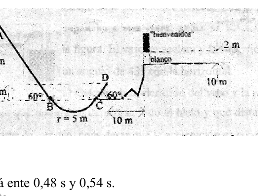
Topic: Geometric Optics Metodi: Thin Lens & Mirror Equation Competenze: Physical Reasoning Objects: Lens Fonte: Testo (PDF) — p.2
- Città di Buoni Aerei. - Verdi. Un occhio normale forma sulla retina un’immagine di un oggetto situato nell’infinito quando è in riposo, e si chiama emetropo. Se l’immagine dell’oggetto nell’infinito non è nella retina, il L’occhio è ametrope. Le due forme più semplici di ametropia sono la miopia e la lontananza, che sono rappresentate nella figura. Gli occhiali di Juan sono formati da una combinazione di 2 lenti, una convergente di fuoco. Un’aria di fuoco divergente pari a 2 metri e un’aria di fuoco divergente pari a 40 centimetri e possiamo considerare che la distanza tra di loro
- Non c’è nulla.
- Dimostra che quando ho due lenti combinate come nei gli occhiali di John, queste sono possono essere sostituiti da un’obiettivo equivalente a distanza focale: 1/fe = 1/fl + 1/f2
- Quali sono le caratteristiche dell’occhio di Giovanni? Giustificare.
- Se John volesse incendiare un foglio usando gli occhiali e i raggi del sole, potrebbe?
- Come? - Perché?
- A che distanza può essere l’oggetto più lontano che Giovanni può vedere chiaramente senza gli occhiali?
Topic: Geometric Optics Metodi: Thin Lens & Mirror Equation Competenze: Physical Reasoning Objects: Lens Fonte: Testo (PDF) — p.2
- City of Good Airs. Green. A normal eye forms an image of an object in the infinite when it is on the retina. It’s called hemetrope. If the image of the object in infinity is not on the retina, the The eye is amethropic. The two simplest forms of amethropy are myopia and far-sightedness, which are They’re represented in the figure. John’s glasses are made up of a combination of 2 lenses, one converging focus. equal to 2m and a divergent focus equal to 40cm and we can consider the distance between them It’s not.
- Show that when I have two lenses combined like in John’s glasses, these are can be replaced by a focal length equivalent lens: 1/fe = 1/fl + 1/f2
- What are the characteristics of John’s eye? Justify it.
- If John wanted to set a paper on fire using his glasses and sunlight, could he? Do you? - Why? - I don’t know.
- How far away can this be the most distant object that John can clearly see without?
- What?
Topic: Geometric Optics Metodi: Thin Lens & Mirror Equation Competenze: Physical Reasoning Objects: Lens Fonte: Testo (PDF) — p.2
- CIUDAD DE BUENOS AIRES. VERDE Y AZUL. Trineo al Blanco. Elena y Ernesto fueron a presenciar el 32° Campeonato Internacional de Trineo al Blanco se realizó en la ciudad de Estambul en una pista como la de la figura formada por dos rampas rectas y un tramo circular, sin rozamiento. El primer concursante, Emiliano, partió desde el punto A, a 20 m de altura con un trineo de 850 g como el de la figura. a) Calcular el tiempo que tardo en llegar hasta B. b) Calcular la velocidad en los puntos B, C y D. c) Mostrar que el tiempo que tarda en recorrer BC está ente 0,48 s y 0,54 s. d) Calcular la máxima fuerza que debe soportar la pista. e) ¿El trineo pasa por el blanco? (No vale estamparse contra el cartel ni pasar por arriba) f) ¿Cuál es el rango de alturas para que el trineo de en el blanco?
El segundo día se salió el recubrimiento antirrozamiento del tramo AB. Emiliano también salió desde A, usando todos los patines de acero. g) Calcular la velocidad en el punto B. En el tercer día se le rompió uno de los patines de atrás, así que utilizo patines de hierro adelante y de aluminio atrás. h) Calcular la velocidad en el punto B. Datos: g = 9,8 m/s2 µ hierro - pista = 0,3 µ aluminio - pista = 0,5 Fe de erratas (aclarados durante la prueba). Entre f) y g): “patines de acero” debe ser “patines de hierro”
Topic: Conservation of Energy, Newtonian Mechanics Metodi: Conservation of Energy, Free-Body Diagram, Kinematic Equations Competenze: Physical Reasoning Objects: Inclined Plane Fonte: Testo (PDF) — p.2
- Città di Buoni Aerei. Verde e Azzurro. Slitta al bianco. Elena ed Ernesto sono andati a vedere il MSK0/> Campionato Internazionale di Scintilla al Bianco Si è svolto a Istanbul in una pista. Come quella della figura formata da due rampate e un tratto circolare senza rottura. Il primo concorrente, Emiliano, è partito. dal punto A, a 20 m di altezza con una griglia di 850 g, come riportato in figura. a) Calcolare il tempo che ci vuole per arrivare a B. b) Calcolare la velocità nei punti B, C e D. c) Mostrare che il tempo necessario per percorrere la BC è compreso tra 0,48 e 0,54 s. d) Calcolare la forza massima che la pista deve sopportare. e) Il scivolo passa per il bersaglio? (Non è bene stampare contro il cartello o passare sopra) f) Qual è la gamma di altezza per il schizzo in bianco?
Il secondo giorno è uscito il rivestimento antirossaggio del tratto AB. Emiliano è uscito anche lui. da A, usando tutte le patine in acciaio. g) Calcolare la velocità al punto B. Il terzo giorno ha rotto uno dei suoi pattini posteriori, quindi uso pattini di ferro in avanti. e di alluminio dietro. h) Calcolare la velocità al punto B. Dati: g = 9,8 m/s2 μ ferro - pista = 0,3 μ alluminio - pista = 0,5 Fede di errori (chiarificati durante la prova). Tra f) e g): “patine in acciaio” sono “patine in ferro”
Topic: Conservation of Energy, Newtonian Mechanics Metodi: Conservation of Energy, Free-Body Diagram, Kinematic Equations Competenze: Physical Reasoning Objects: Inclined Plane Fonte: Testo (PDF) — p.2
- City of Good Airs. Green and Blue. I’m slipping to the White. Elena and Ernesto went to witness the MSK0/> International white-skate championship It was held in Istanbul city on a track. Like the figure with two ramps. straight and rounded, without any rubbing. The first contestant, Emiliano, left. from point A, at 20 m height with a slide 850 g as shown in Figure 1. (a) Calculate the time it takes to reach B. (b) Calculate the speed at points B, C and D. (c) Show that the time taken to travel BC is between 0.48 and 0.54 s. (d) Calculate the maximum strength to be borne by the track. (e) Does the sled pass through the target? (Don’t stamp on the sign or go over it) (f) What is the height range for the target sled?
The second day the anti-irrigation coating of the AB section came out. Emiliano also went out. From A, using all the steel skates. (g) Calculate the speed at point B. On the third day, one of his back skates broke, so I use iron skates forwards. And aluminum in the back. (h) Calculate the speed at point B. The data: g = 9,8 m/s2 μ iron - track = 0,3 The following table shows the following: Faith of the errs (clear during the test). Between f) and g): “steel skates” shall mean “iron skates”
Topic: Conservation of Energy, Newtonian Mechanics Metodi: Conservation of Energy, Free-Body Diagram, Kinematic Equations Competenze: Physical Reasoning Objects: Inclined Plane Fonte: Testo (PDF) — p.2
- CIUDAD DE BUENOS AIRES. VERDE Y AZUL. El Vaso Viajero. En un vaso de vidrio, cuyas paredes laterales están espejadas se coloca una semiesfera de vidrio de 5 cm de radio, y se llena con benceno. La masa total es de 990 gramos. Se coloca sobre una planchita de hielo a 0°C y de 10 gramos de masa. Luego se lo pone sobre la mesa y se lo engancha a otra masa como se ve en la figura. El vaso se acelera y la superficie del agua forma un ángulo de 43° con la horizontal. a) Calcular la aceleración del vaso y la masa de la pesa. b) Calcular el tiempo que tardará en derretirse todo el hielo y qué distancia recorrería en ese tiempo. (El vaso parte del reposo, considerar que la aceleración es constante). c) Después de derretido, ¿qué ángulo formará el agua con la horizontal? En un tramo del trayecto se encuentra una linterna de la que salen rayos verticales. d) Dibujar la trayectoria de los rayos, cuando la linterna está en el centro. Indicando todos los ángulos. e) Lo mismo, cuando la linterna está a 3 cm a la izquierda del centro. f) Lo mismo, cuando la linterna está a 4,5 cm a la izquierda del centro. Datos: g = 9,8 m/s2 µ hielo - mesa = 0,05 µ vidrio - mesa = 0,7 1 cal = 4,18 J Calor latente de fusión del hielo = 540 cal/g Índice de refracción del vidrio = 1,7 Índice de refracción del benceno = 1,5 Índice de refracción del hielo = 1,31 Índice de refracción del aire = 1 Fe de erratas (aclarados durante la prueba). Varias veces: “agua” debe ser “benceno”
Topic: Geometric Optics, Newtonian Mechanics Metodi: Snell’s Law, Free-Body Diagram, First Law of Thermodynamics Competenze: Physical Reasoning Objects: Container Fonte: Testo (PDF) — p.2
- Città di Buoni Aerei. Verde e Azzurro. Il Vaso Viaggiatore. In un vaso di vetro, i cui muri laterali sono specchiati si pone una una semisfera di vetro di 5 cm di raggio, e si riempie di benzene. La massa totale è di 990 grammi. Si colloca su una lastra di ghiaccio 0°C e di 10 grammi di massa. Poi lo mette sul tavolo e lo attacca ad un’altra massa come si vede in la figura. Il vaso si accelera e la superficie dell’acqua forma un angolo di 43° con la linea orizzontale. a) Calcolare l’accelerazione del vaso e la massa del peso. b) Calcolare il tempo necessario per fondere l’intero ghiaccio e la distanza percorsa in quel ghiaccio. tempo. (Il bicchiere parte dal riposo, considerando che l’accelerazione è costante). c) Dopo il fuso, quale angolo formerà l’acqua con la linea orizzontale? In un tratto del percorso si trova una lanterna da cui escono raggi verticali. d) Disegnare il percorso dei raggi quando la lampada è al centro. Indicando tutti i angoli. e) Lo stesso vale quando la lampada è a 3 cm a sinistra del centro. f) Lo stesso vale quando la lampada è a 4,5 cm a sinistra del centro. Dati: g = 9,8 m/s2 μ ghiaccio - tavolo = 0,05 μ vetro - tavolo = 0,7 1 cal = 4,18 J Calore latente di fusione del ghiaccio = 540 cal/g Indice di refraczione del vetro = 1,7 Indice di refraczione del benzeno = 1,5 Indice di refraczione del ghiaccio = 1,31 Indice di refraczione dell’aria = 1 Fede di errori (chiarificati durante la prova). Molte volte: “acqua” deve essere “benzino”
Topic: Geometric Optics, Newtonian Mechanics Metodi: Snell’s Law, Free-Body Diagram, First Law of Thermodynamics Competenze: Physical Reasoning Objects: Container Fonte: Testo (PDF) — p.2
- City of Good Airs. Green and Blue. The Traveling Vessel. In a glass glass whose side walls are mirrored, a glass is placed. glass semisphere with a radius of 5 cm, and is filled with benzene. The total mass is 990 grams. It is placed on an ice sheet of 0°C and 10 grams of Mass. Then you put it on the table and you hook it to another mass like you see in The figure. The glass is accelerated and the surface of the water forms an angle of 43° with the horizontal. (a) Calculate the acceleration of the glass and the mass of the weight. (b) Calculate the time it will take all the ice to melt and how far it would travel in that time. time. (The glass is part of the rest, considering the acceleration is constant.) (c) After melting, what angle will the water form with the horizontal? On one side of the trail is a flashlight with vertical rays. (d) Draw the trajectory of the lightning, when the flashlight is in the centre. Indicating all angles. (e) The same when the flashlight is 3 cm to the left of the centre. (f) The same when the flashlight is 4.5 cm to the left of the centre. The data: g = 9,8 m/s2 μ ice - table = 0,05 μ glass - table = 0,7 1 cal = 4,18 J Latent heat of ice melting = 540 cal/g The glass refractive index = 1,7 The fuel is not used for the production of the fuel. The ice refractive index = 1,31 Air refractive index = 1 Faith of the errs (clear during the test). Several times: “water” must be “benzen”
Topic: Geometric Optics, Newtonian Mechanics Metodi: Snell’s Law, Free-Body Diagram, First Law of Thermodynamics Competenze: Physical Reasoning Objects: Container Fonte: Testo (PDF) — p.2
- CIUDAD DE BUENOS AIRES. VERDE Y AZUL. Globitos Flotadores. Dos globos metalizados, el grande inflado con helio y el chico con neón, ambos a una atmósfera de presión y 20°C, se encuentran conectados como se muestra en la figura. Las masas de los globos llenos son 4,52 g (helio) y 21,08 g (neón) respectivamente. a) Si se sueltan los dos globos desde la misma altura, cuál llegará primero al techo. (Despréciese la resistencia del aire) b) Si la corriente que circula en el circuito que se muestra en la figura por el globo de helio es de 1,47 A, calcular su resistencia y la potencia disipada por cada globo. c) Después de un rato, el radio del globo de neón es de 15,1 cm. Calcular la presión y temperatura en el globo. (Nota: Pint - Pext = k (r - r0), k = 583 hPa/cm). d) Calcular la resistencia del globo, en las condiciones del punto c). Datos: Supesfera = 4 π r2 Volesfera = 4/3 π r3 1 atm = 1013 hPa g = 9,8 m/s2 densidad del aire = 1,3 g/dm3 Fe de erratas (aclarados durante la prueba). Al principio: “el grande inflado con helio y el chico con neón” debe ser “el grande inflado con neón y el chico con helio”
Topic: Fluid Mechanics, Circuits Metodi: Hydrostatic Equilibrium, Ideal Gas Law Competenze: Physical Reasoning Objects: Bubble, Gas Fonte: Testo (PDF) — p.2
- Città di Buoni Aerei. Verde e Azzurro. I globotti galleggianti. Due palloni metallicati, il grande gonfiato con ilio e il ragazzo con il neon, entrambi in un’atmosfera. di pressione e 20°C, sono collegati come mostrato nella figura. Le masse dei globuli i suoi contenuti sono rispettivamente 4,52 g (helio) e 21,08 g (neon). a) Se i due palloni vengono rilasciati dalla stessa altezza, chi raggiungerà il tetto prima. (Sprezzi) resistenza all’aria) b) Se il corrente circolante nel circuito mostrato nella figura da un globo di elio è di 1,47 A, calcolare la resistenza e la potenza dissipata da ogni pallone. c) Dopo un po’ il raggio del pallone di neon è di 15,1 cm. Calcolare la pressione e temperatura nel globo. (Nota: Pint - Pext = k (r - r0), k = 583 hPa/cm). d) Calcolare la resistenza del pallone, alle condizioni di cui al punto c). Dati: Supersfera = 4 π r2 Volosfera = 4/3 π r3 1 atm = 1013 hPa g = 9,8 m/s2 densità dell’aria = 1,3 g/dm3 Fede di errori (chiarificati durante la prova). All’inizio: “il grande gonfiato con elio e il ragazzo con neon” deve essere “il grande gonfiato con Neon e il ragazzo con l’elio”
Topic: Fluid Mechanics, Circuits Metodi: Hydrostatic Equilibrium, Ideal Gas Law Competenze: Physical Reasoning Objects: Bubble, Gas Fonte: Testo (PDF) — p.2
- City of Good Airs. Green and Blue. Floating Globes. Two metal balloons, the big helium inflated and the neon-inflated boy, both in one atmosphere. The pressure and 20°C are connected as shown in Figure 1. The masses of the balloons The total weight of the products is 4,52 g (helium) and 21,08 g (neon) respectively. (a) If the two balloons are released from the same height, the first balloon shall reach the roof. (Despite the fact that air resistance) (b) If the current circulating in the circuit shown in the figure by the helium balloon is of 1,47 A, calculate its resistance and the power dissipated by each balloon. (c) After a while, the radius of the neon balloon is 15.1 cm. Calculate the pressure and temperature in the balloon. (Note: Pint - Pext = k (r - r0), k = 583 hPa/cm). (d) Calculate the resistance of the balloon under the conditions of point (c). The data: The following is the list of the following: The value of the underlying asset is the sum of the underlying assets of the underlying asset. 1 atm = 1013 hPa g = 9,8 m/s2 The following conditions shall apply: Faith of the errs (clear during the test). At first: “the big inflated with helium and the boy with neon” must be “the big inflated with Neon and the boy with helium”.
Topic: Fluid Mechanics, Circuits Metodi: Hydrostatic Equilibrium, Ideal Gas Law Competenze: Physical Reasoning Objects: Bubble, Gas Fonte: Testo (PDF) — p.2
- CIUDAD DE BUENOS AIRES. VERDE. Rescate Submarino. Dentro de un submarino se encuentra un hombre, observando a través de una ventana, el fondo del mar. Los pies del hombre se encuentran a 5 m bajo el nivel del mar y la profundidad del mar en dicha zona es de 40 m. El hombre de 1,9 m de altura está parado a una cierta distancia de la ventana. Un objeto se halla en el fondo del mar cuya posición respecto de A es 48 metros hacia la derecha y 35 metros hacia abajo. a) Determinar la distancia entre el hombre y la ventana si para observar el objeto debía inclinar su mirada un ángulo de 53° hacia abajo respecto de la horizontal, sabiendo que la posición de los ojos del hombre está 10 cm por debajo que la parte superior de su cabeza. Considere despreciable el espesor del vidrio.
Para recoger dicho objeto se lanza, desde el punto A del submarino, un dispositivo especial cuyas dimensiones son 40 cm de largo, 20 cm de ancho y 10 cm de alto y cuya masa es de 9 kg. Dicho dispositivo es lanzado con velocidad horizontal v0. b) Calcular dicha velocidad v0 de manera tal que el dispositivo caiga exactamente sobre el objeto, suponiendo despreciable el rozamiento del agua. Una vez que el dispositivo cae sobre el objeto, cuya masa es de 10 kg y su volumen despreciable, se recoge mediante un sistema electrónico y luego desde el interior del dispositivo sale y se infla un globo (como muestra la figura) de manera tal que comienza a ascender el dispositivo junto con el objeto. Considerar que el dispositivo dentro de la caja contenía el globo cuyo volumen se considera despreciable y gas, es decir todo el volumen interno está ocupado por gas. Nuevamente despreciar el rozamiento del agua. c) Determinar cuál debe ser el volumen del globo, sin incluir el dispositivo, a partir del cual todo el sistema (dispositivo-globo-objeto) comienza a acender. d) Si se infla el globo hasta que éste llega a un volumen final de 0.015 m3, cuál será la aceleración con la que asciende el globo en dicho momento. e) Si la presión del gas contenido en el globo y la caja (en ambos es igual), cuando el globo está inflado 0.015 m3 es de 6 atm indicar cuál era la presión inicial cuando el gas estaba contenido dentro del dispositivo. f) A medida que asciende una válvula de seguridad permite que parte del gas del globo salga, manteniendo el volumen constante. ¿Cuál considera que es el fin de dicha válvula? Datos: δagua = 1 kg/dm3 nagua = 1,33 naire = 1 g = 9,8 m/s2
Topic: Geometric Optics, Fluid Mechanics Metodi: Snell’s Law, Hydrostatic Equilibrium, Kinematic Equations Competenze: Physical Reasoning Objects: Container, Gas Fonte: Testo (PDF) — p.2
- Città di Buoni Aerei. - Verdi. Salvare il Submarino. All’interno di un sottomarino si trova un uomo, guardando attraverso una finestra, il fondo. dal mare. I piedi dell’uomo si trovano a 5 metri sotto il livello del mare e la profondità del mare in la zona è di 40 m. L’uomo di 1,9 metri di altezza si trova a una certa distanza dalla
- La finestra. Un oggetto si trova sul fondo del mare il cui punto di vista rispetto a A è di 48 metri verso la a destra e a 35 metri in basso. a) Determinare la distanza tra l’uomo e la finestra se per osservare l’oggetto dovesse inclinarsi il suo La visione è un’angolazione 53° verso il basso rispetto all’orizzontale, sapendo che la posizione degli occhi L’uomo è 10 cm sotto la parte superiore della testa. Considerate dispregiato il spessore del vetro.
Per la raccolta di tale oggetto viene lanciato, dal punto A del sottomarino, un dispositivo speciale Le cui dimensioni sono di 40 cm di lunghezza, 20 cm di larghezza e 10 cm di altezza e la loro massa è di 9 kg. Tale dispositivo viene lanciato a velocità orizzontale v0. b) Calcolare tale velocità v0 in modo tale che il dispositivo sia accolto esattamente sull’oggetto, Supponiamo che il ruggine dell’acqua sia sconsiderato. Una volta che il dispositivo cade sull’oggetto, il cui peso è di 10 kg e il suo volume sconsiderato, viene raccolto tramite un sistema elettronico e poi dall’interno del dispositivo Il pianeta si gonfia (come mostra la figura) in modo tale che il pianeta si alza. dispositivo insieme all’oggetto. Considerare che il dispositivo all’interno della scatola conteneva il pallone. Il volume del gas è considerato come scarsa e il volume interno è occupato da gas. Ancora disprezzo il ruggine dell’acqua. (c) Determinare quale sia il volume del pallone, senza includere il dispositivo, dal quale l’intero volume del pallone deve essere sistema (dispositivo-globo-oggetto) inizia a accendere. d) Se il pallone si gonfia fino a raggiungere un volume finale di 0,015 m3, quale sarà l’accelerazione con cui il globo si alza in quel momento. e) Se la pressione del gas contenuta nel pallone e nella scatola (in entrambi è uguale), quando il pallone è inflatazione 0,015 m3 è di 6 atm indicare quale era la pressione iniziale quando il gas era contenuto all’interno del dispositivo. f) Mentre si alza una valvola di sicurezza permette di uscire parte del gas dal pallone, mantenendo il volume costante. Qual è la fine di questa valvola? Dati: δacqua = 1 kg/dm3 Naua = 1,33 naire = 1 g = 9,8 m/s2
Topic: Geometric Optics, Fluid Mechanics Metodi: Snell’s Law, Hydrostatic Equilibrium, Kinematic Equations Competenze: Physical Reasoning Objects: Container, Gas Fonte: Testo (PDF) — p.2
- City of Good Airs. Green. Rescue the Submarine. Inside a submarine is a man, looking through a window, the bottom. from the sea. Man’s feet are 5 meters below sea level and the depth of the sea at This area is 40 m. The man is standing at a certain distance from the The window. An object is located at the seabed whose position with respect to A is 48 meters towards the Right and 35 meters down. (a) Determine the distance between the man and the window if the object had to be tilted to observe the window. Look at an angle of 53° downward relative to the horizontal, knowing that the position of the eyes The man’s head is 10 centimeters below the top of his head. Consider the disdainful thickness of the glass.
A special device is launched from the sub’s point A to collect the object. having dimensions of 40 cm long, 20 cm wide and 10 cm high and a mass of 9 kg. Such a device is launched at a horizontal speed of v0. (b) Calculate this velocity v0 so that the device falls exactly on the object, and the water’s rusting is despicable. Once the device falls on the object, its mass is 10 kg and its volume It is collected by an electronic system and then from inside the device. A balloon (as shown in the figure) is inflated so that it begins to rise. device together with the object. Consider that the device inside the box contained the balloon. The volume of the gas is considered to be negligible and the gas, i.e. the whole internal volume is occupied by Gas. Again, despise the water’s gnawing. (c) Determine the volume of the balloon, excluding the device, from which the whole balloon is to be The system (device-glob-object) starts to turn on. (d) If the balloon is inflated until it reaches a final volume of 0.015 m3, what will be the acceleration? with which the globe rises at that moment. (e) If the gas pressure in the balloon and the box (in both cases is equal), when the balloon is Inflated 0.015 m3 is 6 atm indicating what the initial pressure was when the gas was contained inside. the device. (f) As a safety valve rises, it allows some of the gas from the balloon to escape. Keeping the volume constant. What do you think is the end of that valve? The data: δwater = 1 kg/dm3 The following is the list of the following: Naire = 1 g = 9,8 m/s2
Topic: Geometric Optics, Fluid Mechanics Metodi: Snell’s Law, Hydrostatic Equilibrium, Kinematic Equations Competenze: Physical Reasoning Objects: Container, Gas Fonte: Testo (PDF) — p.2
- CIUDAD DE BUENOS AIRES. VERDE. Una aventura en el sur. Un grupo de jóvenes parejas estudiantes de física se establecen en la cercanía de un pequeño pueblo de la Meseta Patagónica construyendo 21 confortables viviendas. Para el abastecimiento de energía eléctrica, importaron de Alemania un generador eólico ENERCON-30 que entrega una potencia que varía según la velocidad del viento (ver gráfico y tabla) en una distribución trifásica de 3x400 V (de valor eficaz de la fem) de C.A. sinusoidal a 50 Hz. Se reparten las fases en estrella de tal forma que la carga sea balanceada (3 cargas iguales), distribuyendo tensión monofásica a cada vivienda (las cuales se encuentran a una determinada distancia, con 3 conductores de cobre (Cu) de 120 mm2, del mismo material que trabaja como neutro ( m mm CU 58 1 2 Ω ⋅ ρ ).
Cada una de las casas tiene instalada 1 heladera de 200W, 1 T.V. de 300W, una video de 50W, 1 lavarropa de 300W, 2 tubos fluorescentes de 40W c/u (con inductancia de 8W de pérdidas adicionales y cos ϕtotal = 0,5) y 3 lámparas de 60W; 1 equipo de música de 200W, 1 ducha eléctrica de 3000W y un caloventilador de 3600 h kcal y 700 h m 3 de 5000W, siendo todos los artefactos para 220 V. Además el pequeño poblado cuenta con una bomba trifásica de 5HP (745W = 1HP) de salida para 380V en estrella para la provisión de agua, la cual se extrae de una capa subterránea, y cuyo rendimiento es de 85% con una cos ϕ = 0,85. Por último, para el alumbrado exterior, están instaladas 12 lámparas a vapor de mercurio HPLN 400W / 220V con un rendimiento luminoso de 50 W lumen y un consumo total de corriente (con balasto de 30W de pérdida y capacitador de 25 µF para corregir el factor de potencia a 0,85) de 2,1 A las cuales están conectadas por otra instalación, junto con la bomba, independiente de las viviendas. a) Hallar la potencia activa eléctrica total instalada, suponiendo que trabaje con la tensión nominal de 220V / 50Hz. b) Si cada tubo fluorescente tiene un capacitor para corregir el factor de potencia a cos ϕ = 0,9. Encontrar el valor de la capacitancia del capacitor en cuestión. c) Considerando que sólo las 21 viviendas tienen los artefactos para 220V de tensión de fase en funcionamiento, ¿cuál es la intensidad de corriente que circula por fase?. Recordar que la carga está balanceada pero considerar que en los artefactos de luz fluorescentes no ha sido corregido el factor de potencia. d) ¿A qué distancia se encuentra la torre generadora si al 80% de la potencia total instalada en las viviendas y sólo con cargas resistivas balanceadas, la tensión es la nominal de 220V? Considerar la resistencia interna del convertidor corriente contínua a corriente alterna es de 5 mΩ por fase y despreciando la resistencia de los conductores en las viviendas. e) Si se pudiera utilizar la energía disipada en el punto anterior por los conductores para convertir la nieve que se acumula en invierno a -5°C en agua a 20°C, ¿qué cantidad de litros por hora se podrían obtener? cf = 80 g cal ; chielo = 0,5 C g cal ° ⋅ ; cagua = 1 C g cal ° ⋅ f) Para poder entregar la potencia requerida en todo momento se dispone de un grupo de baterías de acumuladores que mediante un convertidor de C.C. a C.A. (como indica el circuito) entregan los 3x400 V. Las baterías tienen entre sus bornes una diferencia de potencial de 24V, y poseen una capacidad de 144Ah. ¿Qué cantidad de estas baterías deberían existir para entregar el 70% de la potencia instalada con cos (φ) = 1 en las viviendas durante 10 hs. cuando la velocidad del viento es de sólo 9 m/s, la presión es de 1013 hPa, la temperatura de 15°C y la densidad del aire 1,225 kg/m3 aproximadamente? g) Si las pérdidas de calor en las viviendas a través de ventanas, puertas, paredes, etc., es del 15%, ¿cuánto se tardará en elevar la temperatura desde 5°C a 20°C en el interior de una vivienda de 200m3, si se mantiene constante la presión? ¿que trabajo adicional ejerce el caloventilador para calentar la habitación a presión constante en lugar de hacerlo a volumen constante?. Para el aire: cp = 0,239 cal/g ºC ; cv = 0,17 cal/g ºC Datos Adicionales: ENERCON-30 Para las siguientes condiciones meteorológicas: Presión: 1013 hPa Temperatura: 15°C Densidad del aire: 1,225 kg/m3 Se cumple:
Topic: Circuits, Thermodynamics Metodi: Kirchhoff’s Laws, First Law of Thermodynamics Competenze: Physical Reasoning Objects: Capacitor, Resistor, Battery Fonte: Testo (PDF) — p.2
- Città di Buoni Aerei. - Verdi. Un’avventura nel sud. Un gruppo di giovani coppie studenti di fisica si stabilirono vicino a un piccolo un popolo del Patagono costruendo 21 confortevoli case. Per l’approvvigionamento di La Commissione ha inoltre adottato una proposta di direttiva che prevede l’applicazione di un sistema di controllo delle importazioni di energia elettrica da Germania, che prevede l’importazione di un generatore eolico ENERCON-30 che fornisce una Potenza che varia a seconda della velocità del vento (vedi grafico e tabella) in una distribuzione trifase di 3x400 V (per valore effettivo fem) di CA sinusoidale a 50 Hz. Distribuire le fasi in stella in modo che il carico sia bilanciato (3 cariche uguali), distribuendo tensione monopassiale a ogni abitazione (che si trova ad una determinata Distanza, con 3 conduttori di rame (Cu) di 120 mm2, dello stesso materiale che lavora come neutro ( m mm CU 58 1 2 Ω ⋅ ρ ).
Ogni casa ha installato un frigorifero da 200W, un TV. 300W, un video da 50W, 1 Lavatrice di 300W, due tubi fluorescenti di 40W c/u (con induttanza di 8W di perdite
- un’altra e cos φtotal = 0,5) e 3 lampade da 60W; 1 equipaggiamento musicale da 200W, 1 doccia elettrica di 3000W e un calorificatore di 3600 h kcal e 700 h m 3 di 5000W, essendo tutti gli artefatti per 220 V. Inoltre il piccolo villaggio ha una pompa trifase di 5HP (745W = 1HP) di uscita per 380V in stella per la fornitura di acqua, che viene estratta da un strato sotterraneo, e il cui Il rendimento è dell’85% con un cos φ = 0,85. Infine, per l’illuminazione esterna, sono installate 12 lampade a vapore di mercurio HPLN 400W / 220V con un rendimento luminoso di 50 W L’energia elettrica è stata ridotta in circa un milione di tonnellate di luce. ballast di perdita di 30W e capacitore di 25 μF per correggere il fattore di potenza a 0,85) di 2,1 A cui sono collegate da un’altra struttura, insieme alla pompa, indipendentemente dalle alloggi. a) Indicare la potenza attiva elettrica totale installata, supponendo che lavori con la tensione di 220V / 50Hz. b) Se ogni tubo fluorescente ha un capacitore per correggere il fattore di potenza a cos φ = 0,9. Trovare il valore della capacità del capacitore in questione. c) considerando che solo 21 abitazioni dispongono di impianti per 220 V di tensione di fase in La capacità di funzionamento è di circa un milione di metri. Ricordate che il carico La luce fluorescente non è stata corretta. fattore di potenza. d) A che distanza si trova la torre generatrice se l’80% della potenza totale installata in Le case e solo con cariche resistive bilanciate, la tensione è la volta nominale di 220V? Considerare la resistenza interna del convertitore a corrente continua a corrente alternativa è di 5 mΩ per fase e disprezzando la resistenza dei conducenti nelle abitazioni. (e) Se l’energia dissipata nel punto precedente potesse essere utilizzata dai conducenti per convertire la neve accumulata in inverno in acqua a -5°C a 20°C, quanti litri per Ora potreste ottenere? cf = 80 g cal; chielo = 0,5 C g cal ° ⋅ ; acqua = 1 C g cal ° ⋅ f) Per poter fornire la potenza richiesta in ogni momento, è disponibile un gruppo di batterie di accumulatori che utilizzano un convertitore di C.C. a C.A. (come indica il circuito) 3x400 V. Le batterie hanno tra i loro terminali una differenza di potenziale di 24V, e hanno una capacità di 144 Ah. Quante batterie dovrebbero esistere per fornire il 70% della produzione? potenza installata con cos (φ) = 1 nelle abitazioni per 10 ore. Quando la velocità del vento è di soli 9 m/s, la pressione è di 1013 hPa, la temperatura 15°C e la densità dell’aria 1,225 kg/m3
- Circa? g) Se le perdite di calore nelle abitazioni attraverso finestre, porte, pareti, ecc., sono di 15%, quanto tempo ci vorrà per aumentare la temperatura da 5°C a 20°C all’interno di una casa di 200 metri, se la pressione è costante? che lavoro aggiuntivo fa il calorificatore per il riscaldamento della stanza a pressione costante invece di a volume costante. Per l’aria: cp = 0,239 cal/g oC; cv = 0,17 cal/g oC Informazioni aggiuntive: ENERCON-30 Per le seguenti condizioni meteorologiche: Presione: 1013 hPa Temperatura: 15°C Densità dell’aria: 1,225 kg/m3 Si adempie:
Topic: Circuits, Thermodynamics Metodi: Kirchhoff’s Laws, First Law of Thermodynamics Competenze: Physical Reasoning Objects: Capacitor, Resistor, Battery Fonte: Testo (PDF) — p.2
- City of Good Airs. Green. A Southern adventure. A group of young physics students settle in nearby a small town. village of the Patagonian Plateau building 21 comfortable homes. For the supply of The Commission has already adopted a proposal for a regulation on the Power varies with wind speed (see graph and table) in a three-phase distribution of 3x400 V (efficient value of the fem) of C.A. Sinusoidal at 50 Hz. The star phases are distributed in such a way that the load is balanced (3 equal loads), The main purpose of the project is to provide a single-phase voltage distribution to each household (which is located at a given distance, with 3 copper (Cu) conductors of 120 mm2, of the same material as Neutral ( m mm CU 58 1 2 Ω ⋅ ρ ).
Each of the houses has 1 200W freezer installed, 1 TV. 300W, a 50W video, 1 300W washing machine, 2 fluorescent tubes of 40W c/u (with 8W loss inductance additional and cos φtotal = 0,5) and 3 60W lamps; 1 200W musical equipment, 1 electric shower 3000W and a 3600 heat exchanger h Kcal and 700 h m 3 5000W, all the devices being for 220 V. In addition, the small town has a three-phase pump of 5HP (745W = 1HP) output. for 380V in star water supply, which is extracted from an underground layer, and whose yield is 85% with a body φ = 0.85. Finally, for outdoor lighting, 12 HPLN mercury steam lamps are installed 400W / 220V with a luminous output of 50 W The total electricity consumption (with 30W loss ballast and 25 μF capacitor to correct the power factor to 0,85) of 2,1 The pumps are connected by another installation, together with the pump, independent of the pumps. Housing. (a) Find the total installed electrical active power, assuming that it works with the voltage The nominal power output of the device shall be 220V / 50Hz. (b) If each fluorescent tube has a capacitor to correct the power factor to cos φ = 0,9. Find the capacity value of the capacitor in question. (c) Whereas only 21 households have the devices for 220V phase voltage in operation, what is the current intensity circulating per phase? Remember that the load It is balanced but consider that in fluorescent light devices the power factor. (d) How far is the generating tower if 80% of the total installed power is at And with only resistive loads balanced, the voltage is the rated 220V? Consider the internal resistance of the DC-AC converter is of 5 mΩ per phase and disregarding the resistance of the drivers in the dwellings. (e) If the energy dissipated at the previous point could be used by the drivers for converting snow accumulated in winter to -5°C in water to 20°C, how many litres per What time could you get? cf = 80 g Cal; chili = 0,5 C g Cal ° ⋅ ; water = 1 C g Cal ° ⋅ (f) A battery pack is available to deliver the required power at all times. a power of not more than 15 kW, a C.A. (as the circuit indicates) deliver the 3x400 V. The batteries have a potential difference of 24V between their terminals, and they have a 144Ah capacity. How many of these batteries should be in place to deliver 70% of the energy? installed power with cos (φ) = 1 in the dwellings for 10 h. When the wind speed is At only 9 m/s, the pressure is 1013 hPa, the temperature 15°C and the air density 1,225 kg/m3
- About what? (g) If heat loss in homes through windows, doors, walls, etc., is of the 15%, how long will it take to raise the temperature from 5°C to 20°C inside a dwelling in 200m3, if the pressure stays constant? What additional work does the heat exchanger do for heat the room at constant pressure instead of at constant volume. For air: cp = 0,239 cal/g oC; cv = 0,17 cal/g oC The following data are available: The following information shall be provided: For the following weather conditions: Pressure: 1013 hPa The following conditions shall apply: Air density: 1,225 kg/m3 It is fulfilled:
Topic: Circuits, Thermodynamics Metodi: Kirchhoff’s Laws, First Law of Thermodynamics Competenze: Physical Reasoning Objects: Capacitor, Resistor, Battery Fonte: Testo (PDF) — p.2
- CIUDAD DE BUENOS AIRES. VERDE. Una experiencia en la Cámara de Niebla. Un acelerador de partículas produce haces de protones con energías de 2MeV cada uno. La masa del protón es 1,672 . 10-27 kg y su carga es 1,602 . 10-19 C. a) Hallar la velocidad del protón utilizando la expresión clásica (no relativista) aproximada. b) Justificar que se puede obviar la expresión relativista para el cálculo de la velocidad teniendo en cuenta que el cálculo correcto de la energía cinética se realiza con la fórmula c) La figura indica la ubicación del “cañón” (ángulo de tiro +60°) de partículas y la dirección y sentido de la velocidad del protón , el cual, cuando se encuentra sobre el origen de coordenadas colisiona de forma perfectamente elástica con otro protón “a” que mantenía, hasta ese instante, una trayectoria rectilínea y uniforme hacia valores decrecientes del eje de coordenadas. ¿A qué velocidad viajaba la partícula “a” si se sabe que el protón continúa luego con velocidad horizontal de 15.106 m/s según las x positivas?
d) Hallar el vector velocidad del protón “a” después del choque. e) Como se ve en la figura, el protón que sigue con dirección del eje x entra en un campo eléctrico de E= 5. 105 N/C según el eje positivo de las y . ¿Cuál debería ser la ubicación y la magnitud de la densidad de flujo (inducción magnética) para que el protón no se desvíe? Despreciar la fuerza de atracción gravitacional e indicar por qué podemos hacerlo. f) Si consideramos ahora que sólo actúa el campo eléctrico constante de una longitud d=4m, comenzando en el valor de x=1m. Hallar el vector posición del protón cuando sale de la región donde actúa el campo E e indicar la velocidad del protón en dicho instante. g) Una vez que el protón deja el campo eléctrico se encuentra con un campo magnético perpendicular a la trayectoria descripta de valor B= 0.5 Tesla, justificar el tipo de trayectoria con que continúa el protón y, manteniendo el mismo sistema de referencia utilizado anteriormente, la posición en t2=6,558.10-8 segundos, contando desde que ingresa al campo magnético.
Topic: Magnetism, Conservation of Momentum Metodi: Lorentz Force Analysis, Conservation of Momentum, Conservation of Energy Competenze: Physical Reasoning Objects: Point Charge Fonte: Testo (PDF) — p.2
- Città di Buoni Aerei. - Verdi. Un’esperienza nella Camera di Nebbi. Un acceleratore di particelle produce fasci di protoni con energie di 2MeV ciascuno. La La massa del protone è di 1.672 . 10-27 kg e il suo carico è di 1.602 . 10-19 C. a) Calcolare la velocità del protone utilizzando l’espressione classica (non relativista) approssimativa. b) giustificare che si può obviare all’espressione relativista per il calcolo della velocità avendo considerando che il calcolo corretto dell’energia cinetica è effettuato con la formula c) La figura indica la posizione del cannone (angolo di lancio +60°) di particelle e la direzione e senso della velocità del protone, che, quando si trova sopra la fonte di coordinate Colpisce perfettamente elasticamente con un altro protone che, fino a quel momento, manteneva un traccia rettilinea e uniforme verso valori decrescenti dell’asse delle coordinate. - A cosa? La velocità di un’azione del protone è la velocità di un’azione del protone. di 15.106 m/s secondo le x positive?
d) Trovare il vettore di velocità del protone a dopo l’impatto. e) Come si vede nella figura, il protone che segue in direzione dell’asse x entra in un campo elettrico di E=5. 105 N/C secondo l’ aśo positivo delle e . Qual è la posizione e la data? la densità di flusso (indutzione magnetica) per non deviare il protone? Sprezzare la forza di attrazione gravitazionale e indicare perché possiamo farlo. f) Considerando che ora agisce solo un campo elettrico costante di una lunghezza d=4 m, a partire dal valore di x=1m. Trovare il vettore di posizione del protone quando esce dalla regione dove agisce il campo E e indicare la velocità del protone in quel momento. g) Una volta che il protone lascia il campo elettrico, incontra un campo magnetico perpendicolare al percorso descritto di valore B=0,5 Tesla, giustificare il tipo di percorso con che continua il protone e, mantenendo lo stesso sistema di riferimento usato prima, il La posizione in t2 = 6,558.10-8 secondi, contando da quando entra nel campo magnetico.
Topic: Magnetism, Conservation of Momentum Metodi: Lorentz Force Analysis, Conservation of Momentum, Conservation of Energy Competenze: Physical Reasoning Objects: Point Charge Fonte: Testo (PDF) — p.2
- City of Good Airs. Green. An experience in the fog chamber. A particle accelerator produces proton beams with energies of 2MeV each. La The mass of the proton is 1,672 . 10-27 kg and its load is 1,602 . 10-19 C. (a) Find the proton velocity using the classical (non-relativistic) approximate expression. (b) Justify that the relativistic expression for the calculation of velocity can be omitted by Whereas the correct calculation of kinetic energy is carried out using the formula (c) The figure indicates the location of the canon (shoot angle +60°) of particles and the direction and sense of the proton velocity, which, when it is over the origin of coordinates It collided perfectly elastically with another proton that held, until that moment, a straight and uniform path to decreasing coordinate axis values. What? The speed travelled the particle a if you know that the proton continues then with horizontal speed of 15,106 m/s according to x positive?
(d) Find the proton velocity vector a after the impact. e) As shown in the figure, the proton that follows the direction of the x-axis enters a field electrical E= 5. 105 N/C according to the positive axis of y . What should the location be and the magnitude of the flow density (magnetic induction) so that the proton does not deviate? To disregard gravitational pull and indicate why we can do it. f) If we consider that only the constant electric field of a length d=4m is acting now, starting at the value of x=1m. Find the position vector of the proton when it leaves the region where the field E acts and indicate the proton’s velocity at that instant. (g) Once the proton leaves the electric field it encounters a magnetic field. perpendicular to the described path of B=0.5 Tesla, justify the path type with The proton is continuous and, maintaining the same reference system as previously used, the position at t2=6,558.10-8 seconds, counting from the moment it enters the magnetic field.
Topic: Magnetism, Conservation of Momentum Metodi: Lorentz Force Analysis, Conservation of Momentum, Conservation of Energy Competenze: Physical Reasoning Objects: Point Charge Fonte: Testo (PDF) — p.2
- CASEROS, BUENOS AIRES. AZUL. Las estaciones de Bs.As. y Mendoza distan aproximadamente 1100 Km. De Bs.As. sale un tren que tardará en llegar a Mendoza 11 Hs. De Mendoza sale otro que llegará a Bs.As. en 10 Hs. Calcular gráfica y analíticamente el lugar de encuentro para ambos trenes si el de Mendoza debido a un retraso parte 150’ más tarde que el que sale de Retiro. ¿Qué velocidad deberían llevar para encontrarse a mitad de camino si los dos parten a la misma hora?
Topic: Newtonian Mechanics Metodi: Kinematic Equations Competenze: Physical Reasoning Objects: — Fonte: Testo (PDF) — p.2
-
- Cassero, buoni aer. Blu. Le stazioni di B.S.A. e Mendoza sono distanti circa 1100 Km. De Bs.As. Un treno sta uscendo che ci vorrà tempo per arrivare a Mendoza 11 ore. Da Mendoza uscirà un altro che arriverà a BsAs. en 10 Hs. Calcolare graficamente e analiticamente il luogo di incontro per entrambi i treni se quello di Mendoza a causa di Un ritardo partisce 150 più tardi di quello che parte da Retiro. Che velocità dovrebbero avere per incontrarsi a metà strada se entrambi partono allo stesso modo?
- Ora?
Topic: Newtonian Mechanics Metodi: Kinematic Equations Competenze: Physical Reasoning Objects: — Fonte: Testo (PDF) — p.2
- The air is good. Blue. The BsAs stations. And Mendoza is about 1,100 kilometers away. De Bs.As. A train comes out . It’ll take 11 hours to get to Mendoza. From Mendoza comes another one who will reach BsAs. en 10 Hs. Calculate graphically and analytically the meeting place for both trains if the Mendoza due to a delay starts 150 later than the one leaving Retiro. How fast should they go to meet halfway if they both start at the same speed? What time?
Topic: Newtonian Mechanics Metodi: Kinematic Equations Competenze: Physical Reasoning Objects: — Fonte: Testo (PDF) — p.2
- CASEROS, BUENOS AIRES. AZUL. Un cuerpo se lanza hacia arriba desde la terraza de un edificio de 120 m. de altura a una velocidad de 49 m/seg. Calcular: A) La altura máxima alcanzada (con respecto a la terraza) y el tiempo que tardará en alcanzarla. B) El tiempo que tardará en llegar a la mitad del edificio. C) El tiempo que tardará en llegar a la calle. D) La velocidad que tendrá a los 8 seg. E) La velocidad que tendrá al llegar a la calle. F) El tiempo que tardará en recorrer los últimos 20 m.
Topic: Newtonian Mechanics Metodi: Kinematic Equations Competenze: Physical Reasoning Objects: — Fonte: Testo (PDF) — p.2
-
- Cassero, buoni aer. Blu. Un corpo si lancia in alto dal terrazzo di un edificio alto 120 metri. di altezza a una velocità di 49 m/sec. Calcolo: A) L’altezza massima raggiunta (rispetto al terrazzo) e il tempo necessario per
- Per raggiungerla. B) Il tempo necessario per raggiungere la metà dell’edificio. C) Il tempo necessario per arrivare in strada. D) La velocità che avrà per 8 secondi. E) La velocità che avrà quando arriverà in strada. F) Il tempo necessario per percorrerne gli ultimi 20 m.
Topic: Newtonian Mechanics Metodi: Kinematic Equations Competenze: Physical Reasoning Objects: — Fonte: Testo (PDF) — p.2
- The air is good. Blue. A body is thrown up from the terrace of a 120-meter building. Height to one . speed of 49 m/s. Calculation of the A) The maximum height reached (with respect to the terrace) and the time it will take to I’m going to catch up with her. (b) The time it will take to reach half the building. C) The time it will take to get to the street. D) The speed at which it will be 8 seconds. E) The speed you will have when you get to the street. (f) The time it will take to travel the last 20 m.
Topic: Newtonian Mechanics Metodi: Kinematic Equations Competenze: Physical Reasoning Objects: — Fonte: Testo (PDF) — p.2
- CASEROS, BUENOS AIRES. AZUL. Sobre un cuerpo en reposo de masa igual a 30 Kg. se aplica una fuerza constante de 150 N. Por dicha acción, el cuerpo alcanza en cierto tiempo “t” una velocidad “v”. Calcular: A) ¿Cuánto pesa dicho cuerpo? B) El trabajo realizado por la fuerza a los 7 seg. C) La energía cinética a los 5 seg. D) La velocidad cuando la energía cinética es de 6000 Joule.
Topic: Newtonian Mechanics, Conservation of Energy Metodi: Conservation of Energy, Kinematic Equations Competenze: Physical Reasoning Objects: — Fonte: Testo (PDF) — p.2
-
- Cassero, buoni aer. Blu. Su un corpo a riposo di massa pari a 30 kg. se si applica una forza costante di 150 N. Per In questo modo, il corpo raggiunge una velocità di vv. Calcolo: A) Quanto pesa quel corpo? B) Il lavoro forzato a 7 secondi. C) Energia cinetica a 5 secondi. D) La velocità quando l’energia cinetica è di 6000 Joule.
Topic: Newtonian Mechanics, Conservation of Energy Metodi: Conservation of Energy, Kinematic Equations Competenze: Physical Reasoning Objects: — Fonte: Testo (PDF) — p.2
- The air is good. Blue. On a resting body of mass equal to 30 kg. a constant force of 150 N is applied. By The body at a certain time reaches a velocity of v. Calculation of the (a) How much does that body weigh? (b) Forced work at 7 seconds. C) Kinetic energy at 5 seconds. D) The velocity when the kinetic energy is 6000 Joule.
Topic: Newtonian Mechanics, Conservation of Energy Metodi: Conservation of Energy, Kinematic Equations Competenze: Physical Reasoning Objects: — Fonte: Testo (PDF) — p.2
- CASEROS, BUENOS AIRES. AZUL. Frente a un espejo de 40 cm. de radio se ubica un objeto a 60 cm del mismo formando una imagen virtual y menor. Determinar que tipo de espejo es y por qué. Calcular: A) Distancia focal. B) Posición dela imagen. C) ¿Qué altura tenía el objeto si la de la imagen era de 5 cm.? D) Aumento lateral. Expresar que indica el resultado. E) Graficar.
Topic: Geometric Optics Metodi: Thin Lens & Mirror Equation Competenze: Physical Reasoning Objects: Mirror Fonte: Testo (PDF) — p.2
-
- Cassero, buoni aer. Blu. Di fronte a uno specchio di 40 centimetri. di radio si trova un oggetto a 60 cm di distanza formando un immagine virtuale e minore. Determinare che tipo di specchio è e perché. Calcolo: A) Distanza focale. B) Posizione dell’immagine. C) Qual è la altezza dell’oggetto se quella dell’immagine è di 5 cm? D) Aumento laterale. Esprimere che indica il risultato. E) Grafica.
Topic: Geometric Optics Metodi: Thin Lens & Mirror Equation Competenze: Physical Reasoning Objects: Mirror Fonte: Testo (PDF) — p.2
- The air is good. Blue. In front of a 40-centimeter mirror. The radius of the object is 60 cm away, forming a virtual and minor image. Determine what kind of mirror it is and why. Calculation: A) Focal distance. B) Position of the image. (c) What was the height of the object if the image was 5 cm? D) Side increase. Express that it indicates the result. E) Drawing.
Topic: Geometric Optics Metodi: Thin Lens & Mirror Equation Competenze: Physical Reasoning Objects: Mirror Fonte: Testo (PDF) — p.2
- CASEROS, BUENOS AIRES. AZUL. Raimundo es un niño tan travieso como inteligente. Jugando a manejar el viejo auto del irascible viejo Matías, sin querer sacó el freno de mano con tal mala suerte que el auto rodó barranca abajo por una pendiente hasta quedar detenido contra una piedra. Ahora debe sacar el auto de ese lugar antes de que vuelva Don Matías, para lo cual montó la siguiente combinación de máquinas simples. ¿Podrá moverlo con su peso?
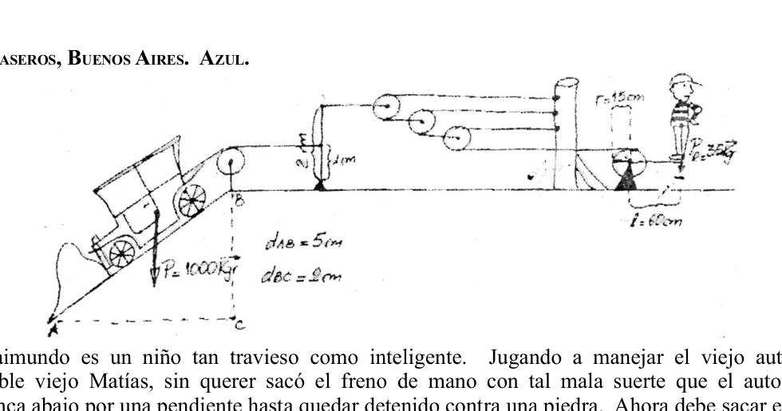
Topic: Rigid Body Statics Metodi: Free-Body Diagram Competenze: Physical Reasoning Objects: Pulley, Lever Fonte: Testo (PDF) — p.2
-
- Cassero, buoni aer. Blu. Raimundo è un bambino tanto cattivo quanto intelligente. Giocando a guidare l’auto vecchia del Mathias, un vecchio irascibile, ha involontariamente tolto il freno con tanta sfortuna che l’auto è andata in giro. Scoprite giù per un pendio fino a quando non sarete bloccati su una pietra. Ora deve uscire dalla macchina. di quel luogo prima che Don Matías ritorni, per cui montò la seguente combinazione di semplici macchine. Potrà muoverlo con il suo peso?
Topic: Rigid Body Statics Metodi: Free-Body Diagram Competenze: Physical Reasoning Objects: Pulley, Lever Fonte: Testo (PDF) — p.2
- The air is good. Blue. Raimundo is a child as mischievous as he is intelligent. Playing the old car in the car . I’m sorry, but I’m not sure. It’s like a rock, you can climb down a slope until you’re stuck against a rock. Now you must get the car out . From there before Don Matías returned, for which he mounted the following combination of simple machines. Can you move it with your weight?
Topic: Rigid Body Statics Metodi: Free-Body Diagram Competenze: Physical Reasoning Objects: Pulley, Lever Fonte: Testo (PDF) — p.2
- SAN NICOLÁS, BUENOS AIRES. VERDE. Se desea bajar un piano desde el techo de un edificio de 6 ( seis ) pisos. El piano pesa 3 ( tres ) quintales y la altura de cada piso es h. Se pide: a) Hallar un método para bajar el piano teniendo en cuenta que hay una sola persona para bajarlo y que el peso máximo que puede levantar es de 60 kgf. Si es necesario, incluya cualquier hipótesis adicional debidamente justificada. b) ¿ Qué trabajo realiza el Señor para bajar el piano ?
c) Durante la bajada se cae una piedrita sobre el piano y hace saltar una tecla. A los seis segundos se escucha el sonido en cierto punto. ¿ A qué distancia se encuentra dicho punto ?
Topic: Rigid Body Statics, Conservation of Energy Metodi: Free-Body Diagram, Conservation of Energy Competenze: Physical Reasoning Objects: Pulley Fonte: Testo (PDF) — p.2
- San Nicola, buoni giorni. - Verdi. Si desidera scendere un pianoforte dal tetto di un edificio di 6 (sei) piani. Il pianoforte pesa 3 (tre) Quartieri e la altezza di ogni piano è h. Si chiede: a) Trovare un metodo per far scendere il piano, considerando che c’è una sola persona che lo fa. e che il peso massimo che può sollevare è di 60 kgf. Se necessario, includere qualsiasi ipotesi ulteriore adeguatamente giustificato. b) Che lavoro fa il Signore per abbassare il pianoforte ?
c) Durante il discesa si cade una piccola pietra sul pianoforte e si fa saltare un tasto. Alle sei . Secondi si sente il suono in un certo punto. A che distanza si trova quel punto ?
Topic: Rigid Body Statics, Conservation of Energy Metodi: Free-Body Diagram, Conservation of Energy Competenze: Physical Reasoning Objects: Pulley Fonte: Testo (PDF) — p.2
- St. Nicholas, good weather. Green. You want to bring down a piano from the roof of a 6 (six) storey building. The piano weighs 3 (three) The height of each floor is h. It asks: (a) Find a method to lower the piano considering that there is only one person to lower it And the maximum weight you can lift is 60 kgf. If necessary, include any hypotheses duly justified additional. (b) What work does the Lord do to lower the piano ?
c) During the descent a small stone falls on the piano and a key is pulled. At six . seconds you hear the sound at a certain point. How far is that point ?
Topic: Rigid Body Statics, Conservation of Energy Metodi: Free-Body Diagram, Conservation of Energy Competenze: Physical Reasoning Objects: Pulley Fonte: Testo (PDF) — p.2
- SAN NICOLÁS, BUENOS AIRES. VERDE. En el centro de la cara superior de un cubo de corcho que flota en el agua, la cual está contenida en una pileta redonda de una mesada, se encuentra una rana cuya masa es de 200 gramos ( ver figura 1 ). Al saltar la rana con una velocidad de 3m/s, el cubo sube 2 cm. Luego se engancha el cubo por la parte superior y se eleva utilizando una barra rígida de 1 m de largo que se apoya en el borde de la pileta (ver figura 2). Determinar: a) Realice un esquema que represente cualitativamente las fuerzas que actúan sobre cada una de las masas. b) el volumen del cubo c) la altura máxima que alcanza la rana y verificar si cae dentro o fuera de la pileta. Además determinar cuál es su energía cinética cuando pasa por el punto A. d) qué fuerza motriz deberá realizarse para levantar el cubo. DATOS ÚTILES Aceleración de la gravedad = 10 m/s2 Ángulo que forma la rana al saltar con la horizontal = 35° Masa del corcho = 0,220 Kg. El centro de la cara superior del cubo de corcho coincide con el centro de la pileta. Radio de la pileta = 0,80 m.
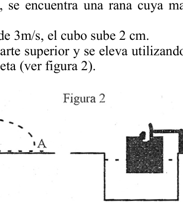
Topic: Conservation of Momentum, Fluid Mechanics Metodi: Conservation of Momentum, Hydrostatic Equilibrium, Kinematic Equations Competenze: Physical Reasoning Objects: Block, Lever Fonte: Testo (PDF) — p.2
- San Nicola, buoni giorni. - Verdi. Nel centro della faccia superiore di un cubo di cork che galleggia nell’acqua, che è contenuta In un piatto rotondo di un mesado si trova una rana di 200 grammi di massa (vedi (Figura 1). Salta la rana a una velocità di 3m/s, il cubo sale 2 cm. Poi il cubo viene attaccato dall’alto e sollevato utilizzando una barra rigida di 1 m di lunghezza appoggiata sul bordo della pila (vedere figura 2). Determinare: a) realizzare un schema che rappresenti qualitativamente le forze che agiscono su ciascuna di le masse. b) volume del cubo c) l’altezza massima raggiunta dalla rana e verificare se cade dentro o fuori della pila. Inoltre determinare la sua energia cinetica quando passa attraverso il punto A. d) quale forza motrice deve essere esercitata per sollevare il cubo. Dati utili Accelerazione della gravità = 10 m/s2 Angolo che la rana forma quando salta con la linea orizzontale = 35° Massa del cork = 0,220 Kg. Il centro della faccia superiore del cubo di cork coincide con il centro della
- Un sacco di cose. Radio della pila = 0,80 m.
Topic: Conservation of Momentum, Fluid Mechanics Metodi: Conservation of Momentum, Hydrostatic Equilibrium, Kinematic Equations Competenze: Physical Reasoning Objects: Block, Lever Fonte: Testo (PDF) — p.2
- St. Nicholas, good weather. Green. In the center of the upper face of a cork bucket floating in water, which is contained In a round pile of a table, you will find a frog weighing 200 grams (see The Commission has not yet adopted a proposal. When the frog jumps at a speed of 3m/s, the cube goes up 2 cm. The cube is then hooked upwards and raised using a rigid 1 m bar of length that rests on the edge of the pile (see figure 2). Determine: (a) Draw up a diagram that qualitatively represents the forces acting on each of the the masses. (b) the volume of the cube (c) the maximum height at which the frog reaches and check whether it falls into or out of the stack. Besides determine its kinetic energy when it passes through point A. (d) what driving force shall be applied to lift the cube. Useful data The acceleration of gravity is equal to 10 m/s2. Angle formed by the frog when jumping horizontally = 35° The cork mass is 0.220 kg. The center of the upper face of the cork cube matches the center of the cork cube. I’m not going to. The radius of the pile is 0.80 m.
Topic: Conservation of Momentum, Fluid Mechanics Metodi: Conservation of Momentum, Hydrostatic Equilibrium, Kinematic Equations Competenze: Physical Reasoning Objects: Block, Lever Fonte: Testo (PDF) — p.2
- SAN NICOLÁS, BUENOS AIRES. VERDE. Calcular el ciclo de la figura, suponiendo los siguientes datos: gas: aire moles: 3/40 volumen de A: 1500 cm3 Temperatura de A: 500 K Volumen de D: = volumen de A Presión de D: 4 ata Volumen de C: 2250 cm3
Advertencia: Calcular un ciclo significa calcular los elementos de cada estado que faltan (en nuestro caso: presión en A, temperatura en D, en C y en B); el calor, trabajo y variación de energía interna en cada transformación del ciclo; el calor, trabajo y variación de energía interna total, y el rendimiento del ciclo. Suponer un ciclo ideal.
Topic: Thermodynamics Metodi: Thermodynamic Cycle Analysis, Ideal Gas Law Competenze: Physical Reasoning Objects: Gas Fonte: Testo (PDF) — p.2
- San Nicola, buoni giorni. - Verdi. Calcolare il ciclo della figura, supponendo i seguenti dati: gas: aria molli: 3/40 volume A: 1500 cm3 Temperatura di A: 500 K Volume D: = volume di A Presione di D: 4 atta Volume C: 2250 cm3
Attenzione: Calcolare un ciclo significa calcolare gli elementi di ogni stato che mancano (nel nostro caso: La pressione in A, la temperatura in D, in C e in B; il calore, il lavoro e la variazione dell’energia interna in La produzione di energia e la produzione di energia interna sono determinati da una variazione del ciclo di lavoro. del ciclo. Suppone un ciclo ideale.
Topic: Thermodynamics Metodi: Thermodynamic Cycle Analysis, Ideal Gas Law Competenze: Physical Reasoning Objects: Gas Fonte: Testo (PDF) — p.2
- St. Nicholas, good weather. Green. Calculate the cycle of the figure, assuming the following data: Gas: Air moles: 3/40 Volume A: 1500 cm3 The temperature of the A: 500 K The following table shows the results of the calculation: = volume of A Pressure of D: 4 annex Volume of C: 2250 cm3
Warning: Calculating a cycle means calculating the missing elements of each state (in this case: pressure in A, temperature in D, in C and in B); heat, work and variation in internal energy in The total energy consumption of the product is the same as the total energy consumption of the product. of the cycle. Suppose an ideal cycle.
Topic: Thermodynamics Metodi: Thermodynamic Cycle Analysis, Ideal Gas Law Competenze: Physical Reasoning Objects: Gas Fonte: Testo (PDF) — p.2
- NAVARRO, BUENOS AIRES. VERDE. Un móvil parte del reposo y recorre cierta distancia con una aceleración d 4 m/s2 en 5 s, luego marcha a velocidad constante durante 10 s, para comenzar a frenar por acción de una fuerza de rozamiento, (la cual sólo actúa en éste último tramo), y detenerse en 8 s. Determinar: a) distancia recorrida por el móvil desde que comienza su movimiento hasta que se detiene. b) módulo de la fuerza de rozamiento dinámico sabiendo que el peso del cuerpo es 1000 N. c) coeficiente de rozamiento dinámico entre el móvil y el pavimento.
Topic: Newtonian Mechanics Metodi: Kinematic Equations, Free-Body Diagram Competenze: Physical Reasoning Objects: — Fonte: Testo (PDF) — p.2
-
- Navarro, buoni aerei. - Verdi. Una parte mobile del riposo e percorre una certa distanza con un’accelerazione d 4 m/s2 in 5 s, quindi La velocità di frenata è costante per 10 s, per iniziare a frenare per azione di una forza di La scarica di un’acqua di calore di 10 g/m2 è un’operazione che si svolge solo in questo ultimo tratto e si ferma in 8 s. Determinare: a) la distanza percorsa dal cellulare dal momento in cui inizia il suo movimento fino a quando si
- Si ferma. b) modulo della forza di rottura dinamica sapendo che il peso del corpo è di 1000 N. c) coefficiente di rottura dinamica tra il mobile e il pavimento.
Topic: Newtonian Mechanics Metodi: Kinematic Equations, Free-Body Diagram Competenze: Physical Reasoning Objects: — Fonte: Testo (PDF) — p.2
-
- Good weather. Green. A moving part of the rest and travels a certain distance with an acceleration of d 4 m/s2 in 5 s, then It runs at a constant speed for 10 s, to start braking by an action of force of The first step is to apply the following formula: Determine: (a) distance travelled by the mobile from the start of its movement until it is It stops. (b) the dynamic friction force module knowing that the body weight is 1000 N. (c) dynamic friction coefficient between the mobile and the pavement.
Topic: Newtonian Mechanics Metodi: Kinematic Equations, Free-Body Diagram Competenze: Physical Reasoning Objects: — Fonte: Testo (PDF) — p.2
- NAVARRO, BUENOS AIRES. VERDE. Un bloque cúbico de madera de 50 cm. de arista, pesa 100 kg→. Determinar: a) Peso específico de la madera (en g→ /cm3) b) Cuanto emerge cuando flota en el agua. c) Que fuerza debe aplicarse para que su cara superior coincida con la superficie del agua.
Topic: Fluid Mechanics Metodi: Hydrostatic Equilibrium Competenze: Physical Reasoning Objects: Block Fonte: Testo (PDF) — p.2
-
- Navarro, buoni aerei. - Verdi. Un blocco di legno cubo di 50 cm. di spina, peso di 100 kg→. Determinare: a) Peso specifico del legno (in g→ /cm3) b) Quanto emerge quando galleggia in acqua. (c) Che forza deve essere applicata per far coincidere la sua faccia superiore con la superficie del acqua.
Topic: Fluid Mechanics Metodi: Hydrostatic Equilibrium Competenze: Physical Reasoning Objects: Block Fonte: Testo (PDF) — p.2
-
- Good weather. Green. A cubic block of wood 50 cm. The weight of the product is 100 kg →. Determine: (a) Specific weight of wood (in g→ /cm3) (b) How much it emerges when floating in water. (c) What force must be applied to make its upper face match the surface of the
- What?
Topic: Fluid Mechanics Metodi: Hydrostatic Equilibrium Competenze: Physical Reasoning Objects: Block Fonte: Testo (PDF) — p.2
- NAVARRO, BUENOS AIRES. VERDE. En el circuito de la figura el interruptor L está abierto, circulando por las resistencias R1 y R2 una corriente de o,5 A . Calcular la corriente que circulará por R3 al cerrar el interruptor. R = 50 Ω R = 100 Ω R = 200 Ω
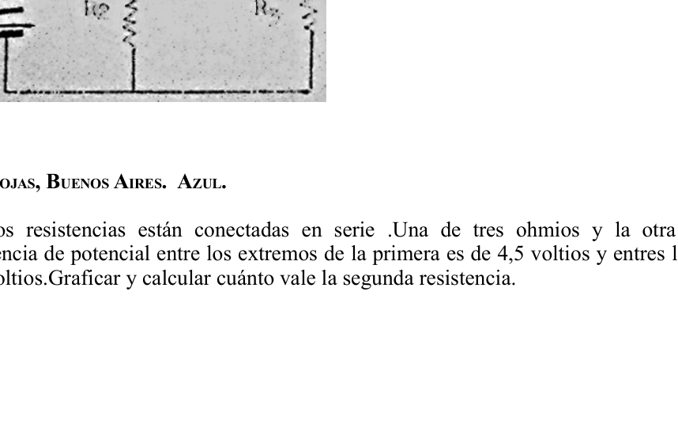
Topic: Circuits Metodi: Kirchhoff’s Laws, Equivalent Circuit Reduction Competenze: Physical Reasoning Objects: Resistor, Switch Fonte: Testo (PDF) — p.2
-
- Navarro, buoni aerei. - Verdi. Nel circuito della figura il interruttore L è aperto, circolando per le resistenze R1 e R2 una corrente di o,5 A . Calcolare il corrente che circolerà per R3 quando si chiude il interruttore. R = 50 Ω R = 100 Ω R = 200 Ω
Topic: Circuits Metodi: Kirchhoff’s Laws, Equivalent Circuit Reduction Competenze: Physical Reasoning Objects: Resistor, Switch Fonte: Testo (PDF) — p.2
-
- Good weather. Green. In the circuit in the figure the switch L is open, circulating through the resistors R1 and R2 a current of o.5 A . Calculate the current to flow through R3 when the switch is closed. R = 50 Ω R = 100 Ω R = 200 Ω
Topic: Circuits Metodi: Kirchhoff’s Laws, Equivalent Circuit Reduction Competenze: Physical Reasoning Objects: Resistor, Switch Fonte: Testo (PDF) — p.2
- ROJAS, BUENOS AIRES. AZUL. Dos resistencias están conectadas en serie .Una de tres ohmios y la otra desconocida.La diferencia de potencial entre los extremos de la primera es de 4,5 voltios y entres los de la segunda 3,6 voltios.Graficar y calcular cuánto vale la segunda resistencia.
Topic: Circuits Metodi: Equivalent Circuit Reduction Competenze: Physical Reasoning Objects: Resistor Fonte: Testo (PDF) — p.2
- ROSSI, buoni aer. Blu. Due resistenze sono collegate in serie. Una di tre ohmi e l’altra sconosciuta. La differenza di potenziale tra le estremità della prima è di 4,5 volt e tra quelle della seconda 3,6 volt. Graficare e calcolare quanto vale la seconda resistenza.
Topic: Circuits Metodi: Equivalent Circuit Reduction Competenze: Physical Reasoning Objects: Resistor Fonte: Testo (PDF) — p.2
- Red, good air. Blue. Two resistors are connected in series. One from three ohms and the other unknown. The potential difference between the ends of the first is 4.5 volts and between those of the second. 3.6 volts. Graph and calculate the value of the second resistance.
Topic: Circuits Metodi: Equivalent Circuit Reduction Competenze: Physical Reasoning Objects: Resistor Fonte: Testo (PDF) — p.2
- ROJAS, BUENOS AIRES. AZUL. UN automóvil entra en una ciudad con una velocidad de 36 Km/h .Se desplaza 1000m,con una velocidad constante.Al aproximarse a un semáforo disminuye su velocidad uniformemente,y en 5seg. se detiene. a)Calcular el tiempo que se mueve con velocidad constante. b)Cuántos metros recorrió desde que varió su velocidad hasta detenerse
Topic: Newtonian Mechanics Metodi: Kinematic Equations Competenze: Physical Reasoning Objects: — Fonte: Testo (PDF) — p.2
- ROSSI, buoni aer. Blu. Una macchina entra in una città a una velocità di 36 Km/h. La velocità di un semaforo diminuisce uniformemente, e in Cinque secondi. Si ferma. a) Calcolare il tempo che si muove a velocità costante. b) Quanti metri ha percorso da quando ha variato la sua velocità fino a quando si è fermato
Topic: Newtonian Mechanics Metodi: Kinematic Equations Competenze: Physical Reasoning Objects: — Fonte: Testo (PDF) — p.2
- Red, good air. Blue. A car enters a city at a speed of 36 km/h. It moves 1000m, with a The speed of the traffic light decreases evenly as it approaches a traffic light. 5 seconds. It stops. (a) Calculate the time that moves at a constant speed. (b) How many metres did he travel from his changing speed to his stopping?
Topic: Newtonian Mechanics Metodi: Kinematic Equations Competenze: Physical Reasoning Objects: — Fonte: Testo (PDF) — p.2
- ROJAS, BUENOS AIRES. AZUL. Una escalera homogénea de 7;31m de largo y que pesa 36,3Kgf descansa contra una pared vertical lisa (no hay rozamiento), formando con ella un ángulo de 30 grados.Un hombre pone su pie contra la base de la escalera para sostenerla y pone sus manos en un escalón ubicado a 1,52m del extremo inferior de la escalera.Calcular la fuerza horizontal que debe aplicar para despegar la escalera de la pared.
Topic: Rigid Body Statics Metodi: Torque & Angular Momentum Analysis, Free-Body Diagram Competenze: Physical Reasoning Objects: Rod Fonte: Testo (PDF) — p.2
- ROSSI, buoni aer. Blu. Una scala omogenea lunga 7 metri e che pesa 36,3 kgf si trova contro un muro Verticale liscia (nessun ruggine), formando con essa un angolo di 30 gradi. contro la base della scala per sostenerla e mette le mani su una scala situata a 1,52 m dal L’escalatore è il punto di partenza più basso della scala. Le scale del muro.
Topic: Rigid Body Statics Metodi: Torque & Angular Momentum Analysis, Free-Body Diagram Competenze: Physical Reasoning Objects: Rod Fonte: Testo (PDF) — p.2
- Red, good air. Blue. A homogeneous ladder 7 feet long and weighing 36.3 pounds rests against a wall A man stands on his foot at a 30 degree angle. against the base of the ladder to hold it and put his hands on a ladder located 1.52m from the The lower end of the ladder. Calculate the horizontal force to be applied to take off the ladder. The stairs to the wall.
Topic: Rigid Body Statics Metodi: Torque & Angular Momentum Analysis, Free-Body Diagram Competenze: Physical Reasoning Objects: Rod Fonte: Testo (PDF) — p.2
- ROJAS, BUENOS AIRES. VERDE. Por un tubo de sección constante fluye continuamente agua de mar,de densidad 1,066g/cm3.,que sale de un depósito elevado .En un punto situado a 135cm. por debajo del nivel del agua en depósito a la presión manométrica de la corriente es 0,076 kg./cm2 A-¿Cuál es la velocidad del agua en ese punto? B-¿Cuál es la presión ,si el tubo alcanza un punto situado 2,7 m. por encima del nivel del agua en el tanque?
Topic: Fluid Mechanics Metodi: Bernoulli’s Equation Competenze: Physical Reasoning Objects: Tube Fonte: Testo (PDF) — p.2
- ROSSI, buoni aer. - Verdi. Per un tubo di sezione costante fluisce continuamente acqua di mare,di densità di 1.066 g/cm3. Scaccia da un deposito elevato. sotto il livello dell’acqua in depósito a pressione manometrica del corrente è 0,076 kg./cm2. A-Qual è la velocità dell’acqua a quel punto? B-Qual è la pressione, se il tubo raggiunge un punto situato a 2,7 m. Al di sopra del livello dell’acqua. nel serbatoio?
Topic: Fluid Mechanics Metodi: Bernoulli’s Equation Competenze: Physical Reasoning Objects: Tube Fonte: Testo (PDF) — p.2
- Red, good air. Green. A continuous seawater flowing through a continuous section pipe, with a density of 1,066 g/cm3. It comes out of a raised tank at a point 135cm away. below the water level in the reservoir at the current pressure is 0,076 kg/cm2 A-What’s the water speed at that point? B-What is the pressure if the tube reaches a point located 2.7 m. above the water level In the tank?
Topic: Fluid Mechanics Metodi: Bernoulli’s Equation Competenze: Physical Reasoning Objects: Tube Fonte: Testo (PDF) — p.2
- ROJAS, BUENOS AIRES. VERDE. Una bomba atómica que contiene 20 kg. de plutonio hace explosión .La masa en reposo de los productos de la explosición es inferior en una diezmilésima la valor de la masa inicial en reposo. A-¿Qué cantidad de energía se libera durante la explosión? B- Si esta tiene lugar en un microsegundo ¿Cuál será la potencia media desarrollada por la bomba? C- ¿Qué volumen de agua podría elevarse hasta la altura de 1 Km. con la energía liberada?
Topic: Nuclear & Particle Physics Metodi: Mass-Energy Equivalence Competenze: Physical Reasoning Objects: — Fonte: Testo (PDF) — p.2
- ROSSI, buoni aer. - Verdi. Una bomba atomica contenente 20 kg. Il plutonio esplode. La massa in riposo dei La produzione di prodotti di esplosione è inferiore di un decimo della massa iniziale a riposo. A-Quanta energia viene rilasciata durante l’esplosione? B- Se questo si svolge in un microsegondo, qual sarà la potenza media sviluppata dalla
- La bomba? C- che volume d’acqua potrebbe salire fino ad un chilometro di altezza. con l’energia liberata?
Topic: Nuclear & Particle Physics Metodi: Mass-Energy Equivalence Competenze: Physical Reasoning Objects: — Fonte: Testo (PDF) — p.2
- Red, good air. Green. An atomic bomb that contains 20 kg. Pluto explodes . The resting mass of the products of the explosion is one tenth less than the value of the initial mass at rest. A-What amount of energy is released during the explosion? B- If this takes place in a microsecond, what will be the mean power developed by the The bomb? C- What volume of water could rise to a height of 1 km? with the energy released?
Topic: Nuclear & Particle Physics Metodi: Mass-Energy Equivalence Competenze: Physical Reasoning Objects: — Fonte: Testo (PDF) — p.2
- ROJAS, BUENOS AIRES. VERDE. A- Cierta casa quema 10 Tm. quema de carbón en una instalación de calefacción . El calor de combustión del carbón es de 6500kcal/Kg. Si las pérdidas totales son de un 15% ¿Cuántas kilocalorías se utilizarán realmente para calentar la casa? B- En algunas localidades se calientan,durante el verano,grandes depósitos de agua mediante la radiación solar y la energía almacenada se utiliza como calefacción de invierno.Calcular las dimensiones del tanque supuestamente de forma cúbica. Para almacenar una energía igual a la anterior ( considerar que el agua calienta a 50°C en el verano y se enfría hasta 25°C en el invierno.
Topic: Thermodynamics Metodi: First Law of Thermodynamics Competenze: Physical Reasoning Objects: Container Fonte: Testo (PDF) — p.2
- ROSSI, buoni aer. - Verdi. A- Una casa brucia 10 Tm. bruciare carbone in un impianto di riscaldamento . Il calore di la combustione del carbone è di 6500 kcal/Kg. Se i perditi totali sono del 15%, quanti? Quattro chilometri di calorie verranno utilizzati per riscaldare la casa? B- In alcune località, durante l’estate, vengono riscaldati grandi depositi d’acqua mediante l’acqueo La radiazione solare e l’energia immagazzinata sono utilizzate come riscaldamento invernale. dimensioni del serbatoio presumibilmente in forma cubica. Per conservare energia uguale a quella precedente (considerare che l’acqua si riscaldasse a 50°C nel in estate e raffreddato fino a 25°C in inverno.
Topic: Thermodynamics Metodi: First Law of Thermodynamics Competenze: Physical Reasoning Objects: Container Fonte: Testo (PDF) — p.2
- Red, good air. Green. A- Some house burns 10 million. burning coal in a heating installation . The heat of The fuel consumption of coal is 6500 kcal/kg. If the total losses are 15% how many? Will kilocalories really be used to heat the house? B- In some localities, large water reservoirs are heated during the summer by The solar radiation and stored energy are used as winter heating. dimensions of the tank supposedly cubic. To store energy equal to the previous one (consider that the water is heated to 50°C in the summer and cool to 25°C in winter.
Topic: Thermodynamics Metodi: First Law of Thermodynamics Competenze: Physical Reasoning Objects: Container Fonte: Testo (PDF) — p.2
- DOLORES, BUENOS AIRES. VERDE. Sobre un cuadrado de 2 m. de lado están aplicadas las fuerzas de 2,6 5, 4,3 y 9 kgf., como se representa en la figura.Hallar la suma de los momentos de dichas fuerzas, con respecto a. a) Al punto A b) Al punto C
Topic: Rigid Body Statics Metodi: Torque & Angular Momentum Analysis, Vector Decomposition Competenze: Physical Reasoning Objects: — Fonte: Testo (PDF) — p.2
- Dolore, aria buona. - Verdi. Su un quadrato di 2 metri. Le forze di 2,65, 4,3 e 9 kgf. sono applicate a lato, come Raccontare la somma dei momenti di tali forze, rispetto a. a) Al punto A b) Al punto C
Topic: Rigid Body Statics Metodi: Torque & Angular Momentum Analysis, Vector Decomposition Competenze: Physical Reasoning Objects: — Fonte: Testo (PDF) — p.2
- Pain, good air. Green. About a square of 2 m. The forces of 2.65, 4.3 and 9 kgf. are applied on the side, as shown in Figure 1. The sum of the moments of these forces, with respect to. (a) In point A (b) In point C
Topic: Rigid Body Statics Metodi: Torque & Angular Momentum Analysis, Vector Decomposition Competenze: Physical Reasoning Objects: — Fonte: Testo (PDF) — p.2
- DOLORES, BUENOS AIRES. VERDE. Un cañón antiaéreo lanza una granada verticalmente con una velocidad de 500 m/seg. Calcular .a) La máxima altura alcanzada. b) El tiempo que tarda en alcanzar dicha altura. c) La velocidad al final de los 40 y 60 seg. d) En que instante alcanzará los 10 km. de altura. e) Realizar las gráficas de velocidad y espacio en función del tiempo.
Topic: Newtonian Mechanics Metodi: Kinematic Equations Competenze: Physical Reasoning Objects: Projectile Fonte: Testo (PDF) — p.2
- Dolore, aria buona. - Verdi. Un cannone antiaereo lancia una granata verticalmente a una velocità di 500 m/sec. Calcolare .a) L’altezza massima raggiunta. b) Il tempo necessario per raggiungere tale altezza. c) La velocità alla fine dei 40 e 60 secondi. d) In che momento raggiungerà i 10 km. di altezza. e) realizzare grafici di velocità e spazio in base al tempo.
Topic: Newtonian Mechanics Metodi: Kinematic Equations Competenze: Physical Reasoning Objects: Projectile Fonte: Testo (PDF) — p.2
- Pain, good air. Green. An anti-aircraft gun throws a grenade vertically at a speed of 500 m/s. Calculate .a) The maximum height reached. (b) The time it takes to reach that height. (c) Speed at the end of 40 and 60 seconds. (d) How soon will it reach 10 km? of height. (e) Time-based speed and space charts.
Topic: Newtonian Mechanics Metodi: Kinematic Equations Competenze: Physical Reasoning Objects: Projectile Fonte: Testo (PDF) — p.2
- DOLORES, BUENOS AIRES. VERDE. Si se aceleran electrones, partiendo del reposo, con una diferencia de potencial de 1500 Volt,determinar su velocidad final. Masa del electrón 9,11 . 10 kg. Carga del electrón – 1,60 . 10 coul.
Topic: Electrostatics Metodi: Electric Potential Method, Conservation of Energy Competenze: Physical Reasoning Objects: Electron Fonte: Testo (PDF) — p.2
- Dolore, aria buona. - Verdi. Se gli elettroni accelerano, partendo dal riposo, con una differenza di potenziale di 1500 Volt, determina la velocità finale. Massaggio dell ’ elettrone 9.11 . 10 kg. Carga dell’ elettrone: 1,60 . 10 coul.
Topic: Electrostatics Metodi: Electric Potential Method, Conservation of Energy Competenze: Physical Reasoning Objects: Electron Fonte: Testo (PDF) — p.2
- Pain, good air. Green. If electrons accelerate, starting from the rest, with a potential difference of 1500 Volt, determine your final speed. The mass of the electron is 9.11 . 10 kg. Electron charge is 1.60 . 10 coul.
Topic: Electrostatics Metodi: Electric Potential Method, Conservation of Energy Competenze: Physical Reasoning Objects: Electron Fonte: Testo (PDF) — p.2
- DOLORES, BUENOS AIRES. VERDE. Un estudiante come una comida de 2000 cal..El quiere hacer la misma cantidad de trabajo levantando pesas de 50 kgf. en el gimnasio.Cuántas veces debe levantar las pesas para gastar esa energía?. Suponga que levanta las pesas a una altura de 2 m. y que no pierde energía al bajarlas al piso.
Topic: Conservation of Energy Metodi: Conservation of Energy Competenze: Physical Reasoning Objects: — Fonte: Testo (PDF) — p.2
- Dolore, aria buona. - Verdi. Un studente mangia un pasto di 2000 cal. Vuole fare lo stesso lavoro. sollevando pesanti di 50 kgf. In palestra. Quante volte deve sollevare i pesi per spendere quella. energia? Supponiamo che lei sollevino i pesi a un’altezza di 2 metri. e non perde energia quando le scende al
- Piano.
Topic: Conservation of Energy Metodi: Conservation of Energy Competenze: Physical Reasoning Objects: — Fonte: Testo (PDF) — p.2
- Pain, good air. Green. A student eats a 2,000 cal meal. He wants to do the same amount of work. lifting weights of 50 kgf. How many times do you have to lift weights to spend that? energy? Suppose you lift the weights to a height of 2 meters. And that doesn ‘t waste energy when you put them down . The floor.
Topic: Conservation of Energy Metodi: Conservation of Energy Competenze: Physical Reasoning Objects: — Fonte: Testo (PDF) — p.2
- DOLORES, BUENOS AIRES. VERDE. La vía del ferrocarril tiene una longitud de 30 m. cuando la temperatura es de 0º C. Cuál es la longitud en un día caluroso cuando la temperatura es de 40º C.?
Topic: Thermodynamics Metodi: First Law of Thermodynamics Competenze: Physical Reasoning Objects: — Fonte: Testo (PDF) — p.2
- Dolore, aria buona. - Verdi. La linea ferroviaria ha una lunghezza di 30 m. quando la temperatura è di 0 °C. Qual è la lunghezza in un giorno caldo quando la temperatura è di 40°C?
Topic: Thermodynamics Metodi: First Law of Thermodynamics Competenze: Physical Reasoning Objects: — Fonte: Testo (PDF) — p.2
- Pain, good air. Green. The railway track is 30 m long. When the temperature is 0°C. What is the length on a hot day when the temperature is 40°C?
Topic: Thermodynamics Metodi: First Law of Thermodynamics Competenze: Physical Reasoning Objects: — Fonte: Testo (PDF) — p.2
- DOLORES, BUENOS AIRES. VERDE. El pistón de un montacargas hidráulico para automóviles tiene 30 cm.de diámetro.Qué presión, en kilogramos por centímetros cuadrados, se requiere para elevar un coche que pesa 1200 kgf.?
Topic: Fluid Mechanics Metodi: Hydrostatic Equilibrium Competenze: Physical Reasoning Objects: Piston Fonte: Testo (PDF) — p.2
- Dolore, aria buona. - Verdi. Il pistone di un’automobile ha un diametro di 30 cm. in chilogrammi per centimetro quadrato, è necessario alzare una macchina che pesa 1200 kgf.?
Topic: Fluid Mechanics Metodi: Hydrostatic Equilibrium Competenze: Physical Reasoning Objects: Piston Fonte: Testo (PDF) — p.2
- Pain, good air. Green. The piston of a hydraulic carrier is 30 cm. in diameter. In kilograms per square centimetre, it is required to lift a car weighing 1200 kgf.?
Topic: Fluid Mechanics Metodi: Hydrostatic Equilibrium Competenze: Physical Reasoning Objects: Piston Fonte: Testo (PDF) — p.2
- DOLORES, BUENOS AIRES. VERDE. Un caballo remolca una barca a lo largo de un canal, la cuerda forma un ángulo de 10º con la trayectoria de la barca. Si la tensión de la cuerda es de 50kgf..Cuántos kilográmetros de trabajo realiza el caballo mientras la barca recorre una distancia de 0,03 km.?
Topic: Conservation of Energy Metodi: Vector Decomposition, Conservation of Energy Competenze: Physical Reasoning Objects: String Fonte: Testo (PDF) — p.2
- Dolore, aria buona. - Verdi. Un cavallo trascina una barca lungo un canale, la corda forma un angolo di 10° con la il percorso della barca. Se la tensione della corda è di 50 kgf…Quanti chili di lavoro? il cavallo mentre la barca percorre una distanza di 0,03 km.?
Topic: Conservation of Energy Metodi: Vector Decomposition, Conservation of Energy Competenze: Physical Reasoning Objects: String Fonte: Testo (PDF) — p.2
- Pain, good air. Green. A horse towed a boat along a canal, the rope formed a 10° angle with the The ship’s trajectory. If the tension on the rope is 50kgf… how many kilograms of work? The horse is carried out while the boat is travelling a distance of 0.03 km.
Topic: Conservation of Energy Metodi: Vector Decomposition, Conservation of Energy Competenze: Physical Reasoning Objects: String Fonte: Testo (PDF) — p.2
- RAUCH, BUENOS AIRES. AZUL. Una bala de plata de 3g que viaja con una rapidez de 300 m/s se detiene en un árbol. Suponga que toda la energía térmica generada durante el impacto permanece en la bala ¿Cuál es el cambio de temperatura en la bala?
Topic: Thermodynamics, Conservation of Energy Metodi: First Law of Thermodynamics, Conservation of Energy Competenze: Physical Reasoning Objects: Projectile Fonte: Testo (PDF) — p.2
- RAUCH, buon aria. Blu. Una pallottola d’argento di 3g che viaggia a velocità di 300 m/s si ferma in un albero. Supponiamo che che tutta l’energia termica generata durante l’impatto rimane nella pallina. Qual è il cambiamento di temperatura sul proiettile?
Topic: Thermodynamics, Conservation of Energy Metodi: First Law of Thermodynamics, Conservation of Energy Competenze: Physical Reasoning Objects: Projectile Fonte: Testo (PDF) — p.2
- RAUCH, good weather. Blue. A 3g silver bullet traveling at a speed of 300 m/s stops in a tree. Suppose All the heat energy generated during the impact remains in the bullet. temperature on the bullet?
Topic: Thermodynamics, Conservation of Energy Metodi: First Law of Thermodynamics, Conservation of Energy Competenze: Physical Reasoning Objects: Projectile Fonte: Testo (PDF) — p.2
- RAUCH, BUENOS AIRES. AZUL. Dos lentes convergentes idénticas de distancias focales f = f‘ = 15 cm están separadas por una distancia de 6cm. Un objeto está situado a una distancia de 10 cm de la primera lente. Encuentre la posición de la imagen final.
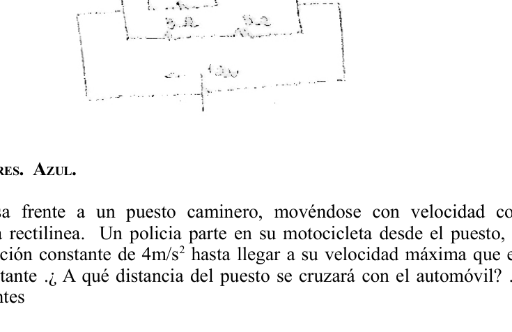
Topic: Geometric Optics Metodi: Thin Lens & Mirror Equation Competenze: Physical Reasoning Objects: Lens Fonte: Testo (PDF) — p.2
- RAUCH, buon aria. Blu. Due identici lenti convergenti a distanza focale f = f = 15 cm sono separati da una Distanza di 6 cm. Un oggetto è situato a 10 cm dalla prima lente. Trova la posizione dell’immagine finale.
Topic: Geometric Optics Metodi: Thin Lens & Mirror Equation Competenze: Physical Reasoning Objects: Lens Fonte: Testo (PDF) — p.2
- RAUCH, good weather. Blue. Two identical converging lenses of focal lengths f = f = 15 cm are separated by a distance of 6 cm. An object is located 10 cm from the first lens. Find the one . position of the final image.
Topic: Geometric Optics Metodi: Thin Lens & Mirror Equation Competenze: Physical Reasoning Objects: Lens Fonte: Testo (PDF) — p.2
- RAUCH, BUENOS AIRES. AZUL. En la figura se muestra un circuito que contiene 5 resistores conectados a una batería de 12V. Halle la caída de potencial en el resistor de 5Ω.
Topic: Circuits Metodi: Kirchhoff’s Laws, Equivalent Circuit Reduction Competenze: Physical Reasoning Objects: Resistor, Battery Fonte: Testo (PDF) — p.2
- RAUCH, buon aria. Blu. La figura mostra un circuito contenente 5 resistori collegati a una batteria da 12 V. Trova il potenziale di caduta nella resistenza di 5Ω.
Topic: Circuits Metodi: Kirchhoff’s Laws, Equivalent Circuit Reduction Competenze: Physical Reasoning Objects: Resistor, Battery Fonte: Testo (PDF) — p.2
- RAUCH, good weather. Blue. The figure shows a circuit containing 5 resistors connected to a 12V battery. Find the potential drop in the 5Ω resistor.
Topic: Circuits Metodi: Kirchhoff’s Laws, Equivalent Circuit Reduction Competenze: Physical Reasoning Objects: Resistor, Battery Fonte: Testo (PDF) — p.2
- RAUCH, BUENOS AIRES. AZUL. Un automóvil pasa frente a un puesto caminero, movéndose con velocidad constante de 108Km/h, en una ruta rectilinea. Un policia parte en su motocicleta desde el puesto, 5 seg. mas tarde, con una aceleración constante de 4m/s2 hasta llegar a su velocidad máxima que es 20 y que luego mantendrá constante .¿ A qué distancia del puesto se cruzará con el automóvil? . Trazar los gráficos correspondientes
Topic: Newtonian Mechanics Metodi: Kinematic Equations Competenze: Physical Reasoning Objects: — Fonte: Testo (PDF) — p.2
- RAUCH, buon aria. Blu. Una macchina passa davanti a un posto di camminaggio, muovendosi a velocità costante di 108 km/h, su una rotta rettilinea. Un poliziotto parte in moto dalla stazione, 5 secondi. Ma tardi, con una costante accelerazione di 4m/s2 fino a raggiungere la sua velocità massima che è 20 e che E poi, continuerà a stare costante. A che distanza si incrocia con la macchina? . Tracciare i grafici corrispondenti
Topic: Newtonian Mechanics Metodi: Kinematic Equations Competenze: Physical Reasoning Objects: — Fonte: Testo (PDF) — p.2
- RAUCH, good weather. Blue. A car passes in front of a pedestrian stand, moving at a constant speed of 108 km/h, on a straight line. A police officer starts on his motorcycle from the station, 5 seconds. But Late, with a constant acceleration of 4m/s2 until it reaches its maximum speed which is 20 and that Then it will remain constant. How far from the post will the car cross? . Tracing the corresponding charts
Topic: Newtonian Mechanics Metodi: Kinematic Equations Competenze: Physical Reasoning Objects: — Fonte: Testo (PDF) — p.2
- CASTELAR, BUENOS AIRES. AZUL. Desde la parte más alta de un plano inclinado 53º, y que mide 4 m. de longitud se suelta un cuerpo de 2 kg. de masa sin velocidad inicial, llegan- do a la base del mismo con una velocidad de 3 m/s. Se pide : a)Efectuar el diagrama de cuerpo libre. b)Calcular el coeficiente de rozamiento dinámico entre el cuerpo y el plano. c)Hallar la velocidad del cuerpo a la mitad del recorrido por el plano inclinado.
Topic: Newtonian Mechanics, Conservation of Energy Metodi: Free-Body Diagram, Conservation of Energy Competenze: Physical Reasoning Objects: Inclined Plane, Block Fonte: Testo (PDF) — p.2
- Casteller, buoni giorni. Blu. Da una parte più alta di un piano inclinato di 53°, e che misura 4 m. di lunghezza si rilascia un corpo di 2 kg. di massa senza velocità iniziale, arrivano- La base di questo è a 3 m/s. Si chiede: a) Effettuare il diagramma del corpo libero. b) Calcolare il coefficiente di rottura dinamica tra il corpo e il piano. c) Meterare la velocità del corpo a metà percorso per il piano inclinato.
Topic: Newtonian Mechanics, Conservation of Energy Metodi: Free-Body Diagram, Conservation of Energy Competenze: Physical Reasoning Objects: Inclined Plane, Block Fonte: Testo (PDF) — p.2
- Castle, good weather. Blue. From the highest part of a 53° slope, and measuring 4 m. length is released a body of 2 kg. mass without initial velocity, they arrive at I’m going to the base of the same at 3 m/s. It asks: (a) To draw up the free body diagram. (b) Calculate the dynamic friction coefficient between the body and the plane. (c) Halve the body speed along the inclined plane.
Topic: Newtonian Mechanics, Conservation of Energy Metodi: Free-Body Diagram, Conservation of Energy Competenze: Physical Reasoning Objects: Inclined Plane, Block Fonte: Testo (PDF) — p.2
- CASTELAR, BUENOS AIRES. AZUL. Un instrumento óptico está formado por dos lentes, una convergente y otra divergente, ambas de 10 cm de distancia focal y separadas entre sí 30 cm. Determina la imagen obtenida de un objeto de 2 cm de altura situado a 20 cm de la lente convergente. Dar las características de la imagen final, aclarando la altura exacta de la misma. Resuelve gráfica y analíticamente.
Topic: Geometric Optics Metodi: Thin Lens & Mirror Equation Competenze: Physical Reasoning Objects: Lens Fonte: Testo (PDF) — p.2
- Casteller, buoni giorni. Blu. Un strumento ottico è costituito da due obiettivi, uno convergente e l’altro divergente, entrambi di 10 cm di distanza focale e 30 cm separati tra loro. Determina l’immagine ottenuta da un oggetto di 2 cm di altezza situato a 20 cm dal lente convergente. Fornire le caratteristiche dell’immagine finale, chiarendo l’eccatta altezza della stessa. Risolve graficamente e analiticamente.
Topic: Geometric Optics Metodi: Thin Lens & Mirror Equation Competenze: Physical Reasoning Objects: Lens Fonte: Testo (PDF) — p.2
- Castle, good weather. Blue. An optical instrument consists of two lenses, one convergent and one divergent, both of which are 10 cm focal length and 30 cm separated. Determine the image obtained from a 2 cm high object located 20 cm from the lens convergent. Give the characteristics of the final image, clarifying the exact height of the same. It solves graphically and analytically.
Topic: Geometric Optics Metodi: Thin Lens & Mirror Equation Competenze: Physical Reasoning Objects: Lens Fonte: Testo (PDF) — p.2
- CASTELAR, BUENOS AIRES. AZUL. Un cuerpo de metal unido a un resorte de constante k=50g→/cm produce un acortamiento de 8 cm. al sumergirse en aceite ( ρ =0,9 g→/cm3). Al sumergirse dicho cuerpo en una solución desconocida produce un acortamiento del resorte de 11 cm. Identifique la solución de acuerdo con la tabla : -GASOLINA : ρ =0,7 g→/cm3 -GLICERINA : ρ =1,24 g→/cm3 -MERCURIO : ρ =13,6 g→/cm3
Topic: Fluid Mechanics Metodi: Hydrostatic Equilibrium, Hooke’s Law Competenze: Physical Reasoning Objects: Spring Fonte: Testo (PDF) — p.2
- Casteller, buoni giorni. Blu. Un corpo di metallo unito a una resorte costante k=50g→/cm produce un abbreviamento di 8 cm. quando immersi in olio ( ρ = 0,9 g→/cm3). Immergendo tale corpo in una soluzione un’espressione sconosciuta produce un ridimensionamento della primavera di 11 cm. Identifica la soluzione secondo la tabella:
- GASOLINA: ρ = 0,7 g→/cm3 -Glicerina: ρ = 1,24 g→/cm3 -Mercurio: ρ = 13,6 g→/cm3
Topic: Fluid Mechanics Metodi: Hydrostatic Equilibrium, Hooke’s Law Competenze: Physical Reasoning Objects: Spring Fonte: Testo (PDF) — p.2
- Castle, good weather. Blue. A metal body attached to a spring of constant k=50g→/cm produces a shortening of 8 cm. when immersed in oil ( ρ = 0,9 g→/cm3). By immersing that body in a solution unknown causes a shortening of the spring by 11 cm. Identify the solution according to the table: -GASOLINE: ρ = 0,7 g→/cm3 -Glycerin: ρ = 1,24 g→/cm3 -MERCURE: ρ = 13.6 g→/cm3
Topic: Fluid Mechanics Metodi: Hydrostatic Equilibrium, Hooke’s Law Competenze: Physical Reasoning Objects: Spring Fonte: Testo (PDF) — p.2
- LA MATANZA, BUENOS AIRES. VERDE. Una esfera de corcho (peso específico = 0,2 kg/dm3) se sumerge en agua a una profundidad de 10 metros. Sin considerar la fricción, calcular el tiempo que tarda en llegar a la superficie.
Topic: Fluid Mechanics Metodi: Hydrostatic Equilibrium, Kinematic Equations Competenze: Physical Reasoning Objects: Sphere Fonte: Testo (PDF) — p.2
- Il mattino, buoni venti. - Verdi. Una sfera di cork (peso specifico = 0,2 kg/dm3) viene immersa in acqua a una profondità di 10 metri. Senza considerare la friczione, calcolare il tempo necessario per raggiungere la superficie.
Topic: Fluid Mechanics Metodi: Hydrostatic Equilibrium, Kinematic Equations Competenze: Physical Reasoning Objects: Sphere Fonte: Testo (PDF) — p.2
- The morning, good weather. Green. A cork sphere (specific weight = 0,2 kg/dm3) is submerged in water at a depth of 10 meters. Without considering friction, calculate the time it takes to reach the surface.
Topic: Fluid Mechanics Metodi: Hydrostatic Equilibrium, Kinematic Equations Competenze: Physical Reasoning Objects: Sphere Fonte: Testo (PDF) — p.2
- LA MATANZA, BUENOS AIRES. VERDE. Una fuente luminosa que se halla situada en el fondo de una pileta de agua (n=1,33) de 100 cm de profundidad, emite rayos en todas las direcciones. Los rayos que se refractan forman en la superficie del agua un círculo luminoso; fuera de él, los rayos se reflejan y retornan al agua. Determinar el diámetro de ese círculo.
Topic: Geometric Optics Metodi: Snell’s Law Competenze: Physical Reasoning Objects: — Fonte: Testo (PDF) — p.2
- Il mattino, buoni venti. - Verdi. Una fonte luminosa situata sul fondo di un bacino d’acqua (n=1,33) di 100 cm di profondità, emette raggi in tutte le direzioni. I raggi che si refraggono si formano nella la superficie dell’acqua è un cerchio luminoso; fuori di esso, i raggi si riflettono e ritornano nell’acqua. Determinare il diametro di quel cerchio.
Topic: Geometric Optics Metodi: Snell’s Law Competenze: Physical Reasoning Objects: — Fonte: Testo (PDF) — p.2
- The morning, good weather. Green. A light source located at the bottom of a 100 cm water stack (n=1.33) Deep, it emits rays in all directions. The refracted rays form in the the surface of the water a bright circle; outside it, the rays are reflected and return to the water. Determine the diameter of that circle.
Topic: Geometric Optics Metodi: Snell’s Law Competenze: Physical Reasoning Objects: — Fonte: Testo (PDF) — p.2
- LA MATANZA, BUENOS AIRES. VERDE. Un calentador eléctrico, cuya resistencia es de 30 Ohm está conectado a la red de 220 Volt. Calcular el tiempo que dicho calentador debe estar sumergido en una cubeta de 250 gramos de agua para que la temperatura aumente 60ºC. ¿Cuál sería el tiempo que tardaría en elevar la temperatura a 80ºC, si la red a la que está conectado se regula por la siguiente función lineal: V=150 volt + 2 volt/seg. x tiempo (seg)
Topic: Thermodynamics, Circuits Metodi: First Law of Thermodynamics Competenze: Physical Reasoning Objects: Resistor Fonte: Testo (PDF) — p.2
- Il mattino, buoni venti. - Verdi. Un riscaldatore elettrico, la cui resistenza è di 30 Ohm è collegato alla rete di 220 Volt. Calcolare il tempo per cui il riscaldatore deve essere immerso in un cubo di 250 grammi di calore. acqua per far salire la temperatura a 60°C. Quanto tempo ci vorrebbe per portare la temperatura a 80°C, se la rete a cui si trova collegato è regolato dalla seguente funzione lineare: V = 150 volt + 2 volt/sec. x tempo (seg)
Topic: Thermodynamics, Circuits Metodi: First Law of Thermodynamics Competenze: Physical Reasoning Objects: Resistor Fonte: Testo (PDF) — p.2
- The morning, good weather. Green. An electric heater, with a resistance of 30 Ohm, is connected to the 220 Volt grid. Calculate the time that the heater must be immersed in a 250 g bucket of water to raise the temperature by 60°C. How long would it take to raise the temperature to 80°C, if the network you’re on connected is regulated by the following linear function: V is 150 volts + 2 volts/second. x time (seg)
Topic: Thermodynamics, Circuits Metodi: First Law of Thermodynamics Competenze: Physical Reasoning Objects: Resistor Fonte: Testo (PDF) — p.2
- LA MATANZA, BUENOS AIRES. VERDE. Dos cuerpos A y B se hallan sobre un plano inclinado C como indica el dibujo. El cuerpo A pesa 100 Kg; el B 200 Kg. El coeficiente de rozamiento entre A y B es 0,6; entre B y C 0,8. Calcular: a) El módulo de la fuerza P, para que ambos cuerpos desciendan sin desplazarse uno respecto del otro. b) El módulo de la fuerza P para que ambos cuerpos permanezcan en reposo. c) El módulo de la fuerza P para que el cuerpo B permanezca en reposo, mientras el cuerpo A se desliza sobre el B hacia arriba.
Topic: Newtonian Mechanics Metodi: Free-Body Diagram, Vector Decomposition Competenze: Physical Reasoning Objects: Block, Inclined Plane Fonte: Testo (PDF) — p.2
- Il mattino, buoni venti. - Verdi. Due corpi A e B si trovano su un piano inclinato C come indica il disegno. Il corpo A pesa. 100 Kg; el B 200 Kg. Il coefficiente di rottura tra A e B è 0,6; tra B e C 0,8. Calcolo: a) Il modulo di forza P, in modo che entrambi i corpi discendano senza spostarsi uno rispetto al Un altro. b) Il modulo di forza P per mantenere entrambi i corpi a riposo. c) Il modulo di forza P per far rimanere il corpo B a riposo, mentre il corpo A si sta rilassando. scivola sopra il B verso l’alto.
Topic: Newtonian Mechanics Metodi: Free-Body Diagram, Vector Decomposition Competenze: Physical Reasoning Objects: Block, Inclined Plane Fonte: Testo (PDF) — p.2
- The morning, good weather. Green. Two bodies A and B are on a plane tilted C as shown in the drawing. Body A weighs . 100 Kg; el B 200 Kg. The coefficient of friction between A and B is 0,6; between B and C 0,8. Calculation of the (a) The force module P, so that both bodies descend without moving one from the other. Another one. (b) The force module P for both bodies to remain at rest. (c) The force module P for body B to remain at rest while body A is at rest. It slides over the B up.
Topic: Newtonian Mechanics Metodi: Free-Body Diagram, Vector Decomposition Competenze: Physical Reasoning Objects: Block, Inclined Plane Fonte: Testo (PDF) — p.2
- RAMALLO, BUENOS AIRES. VERDE. Se efectúa la experiencia de Torricelli en un lugar donde la presión atmosférica es de 951 gr/cm2. El tubo utilizado tiene 1 m de longitud y 0,5 cm2 de sección. Si al invertir el tubo en la cubeta este queda introducido 5 cm en el mercurio ¿ Cuál es el volumen de mercurio que paso a la cubeta ?
Topic: Fluid Mechanics Metodi: Hydrostatic Equilibrium Competenze: Physical Reasoning Objects: Tube Fonte: Testo (PDF) — p.2
- Ramallo, buon aria. - Verdi. L’esperienza di Torricelli si svolge in un luogo dove la pressione atmosferica è di 951 gr/cm2. Il tubo utilizzato ha una lunghezza di 1 m e una sezione di 0,5 cm2. Se invertendo il tubo in Il volume di mercurio che passa alla base di questo contenuto è di 5 cm.
- La cucina ?
Topic: Fluid Mechanics Metodi: Hydrostatic Equilibrium Competenze: Physical Reasoning Objects: Tube Fonte: Testo (PDF) — p.2
-
- Ramalo, good weather. Green. The Torricelli experiment is carried out in a place where the atmospheric pressure is of 951 gr/cm2. The tube used is 1 m long and 0.5 cm2 in section. If by inverting the tube into the The volume of mercury that passes through the
- The bucket ?
Topic: Fluid Mechanics Metodi: Hydrostatic Equilibrium Competenze: Physical Reasoning Objects: Tube Fonte: Testo (PDF) — p.2
- RAMALLO, BUENOS AIRES. VERDE. Un hombre y una piedra están en una balsa que flota en una piscina de 10 m de largo por 7 m de ancho la piedra pesa 35 Kgf y tiene una densidad relativa de 2,5. Si el hombre arroja la piedra fuera de borda ¿ en cuánto se elevará el nivel de agua de la piscina por el cambio que se ha experimentado ?.Se desprecia la superficie de la balsa.
Topic: Fluid Mechanics Metodi: Hydrostatic Equilibrium Competenze: Physical Reasoning Objects: — Fonte: Testo (PDF) — p.2
- Ramallo, buon aria. - Verdi. Un uomo e una pietra sono su una barca che galleggia in una piscina lunga 10 metri per 7 metri di La pietra pesa 35 Kgf e ha una densità relativa di 2,5. Se l’uomo lancia la pietra fuori Il livello dell’acqua della piscina aumenterà di quanto a causa del cambiamento che si è verificato. La superficie della barca è disprezzata.
Topic: Fluid Mechanics Metodi: Hydrostatic Equilibrium Competenze: Physical Reasoning Objects: — Fonte: Testo (PDF) — p.2
-
- Ramalo, good weather. Green. A man and a stone are on a raft floating in a pool 10 meters long by 7 meters wide. The stone weighs 35 Kgf and has a relative density of 2.5. If the man throws the stone out The water level of the pool will rise by how much due to the change that has taken place. The surface of the raft is despised.
Topic: Fluid Mechanics Metodi: Hydrostatic Equilibrium Competenze: Physical Reasoning Objects: — Fonte: Testo (PDF) — p.2
- RAMALLO, BUENOS AIRES. VERDE. Una piedra que pesa 4 Kgf se lanza en dirección horizontal con una velocidad de 2,4 m/seg desde la cornisa de un edificio de 120 m de altura. a) ¿ A qué distancia del pie del edificio chocara la piedra contra el suelo. b) Una piedra idéntica se arroja en las mismas condiciones, pero ésta se rompe en dos trozos antes de chocar contra el suelo. Los dos trozos salen disparados horizontalmente de forma de que ambos llegan al suelo al mismo tiempo. Uno de los trozos pesa 1,5 Kgf y cae al suelo justamente al pie del edificio, en la vertical del pie de lanzamiento. ¿ A qué distancia chocará contra el suelo el otro trozo de peso es de 2,5 Kgf ?
Topic: Newtonian Mechanics, Conservation of Momentum Metodi: Kinematic Equations, Conservation of Momentum Competenze: Physical Reasoning Objects: Projectile Fonte: Testo (PDF) — p.2
- Ramallo, buon aria. - Verdi. Una pietra che pesa 4 Kgf viene lanciata in direzione orizzontale a una velocità di 2,4 m/sec dalla cornice di un edificio alto 120 metri. a) A che distanza dal piede dell’edificio si tratti della pietra colpendo il suolo. b) Una pietra identica viene gettata nelle stesse condizioni, ma si spezza in due pezzi prima di sbattersi contro il pavimento. I due pezzi usciranno sparati orizzontalmente in modo che Entrambi arrivano al suolo contemporaneamente. Uno dei pezzi pesa circa 1,5 kgf e cade a terra proprio al Pieno del palazzo, in verticale del piede di lancio. A che distanza colpirà il terreno l’ altro pezzo di peso è di 2,5 Kgf ?
Topic: Newtonian Mechanics, Conservation of Momentum Metodi: Kinematic Equations, Conservation of Momentum Competenze: Physical Reasoning Objects: Projectile Fonte: Testo (PDF) — p.2
-
- Ramalo, good weather. Green. A stone weighing 4 Kgf is thrown in a horizontal direction at a speed of 2.4 m/s. from the corner of a 120-meter-high building. (a) How far from the foot of the building is the stone from the ground? (b) An identical stone is cast under the same conditions, but it breaks into two pieces. before it hits the ground. The two pieces come out shot horizontally so that Both of them hit the ground at the same time. One of the pieces weighs 1.5 kgf and falls to the ground just at the The foot of the building, in the vertical of the launch foot. How far will the other piece of weight hit the ground ?
Topic: Newtonian Mechanics, Conservation of Momentum Metodi: Kinematic Equations, Conservation of Momentum Competenze: Physical Reasoning Objects: Projectile Fonte: Testo (PDF) — p.2
- RAMALLO, BUENOS AIRES. VERDE. Una escalera, de 6 m de longitud y 4 Kg de peso, se apoya entre un suelo rugoso y una pared pulida formando un ángulo de 60º con el suelo. Sabiendo que el coeficiente de rozamiento entre la escalera y el suelo es igual a 0.3, calcular hasta que punto de la escalera puede ascender un hombre de 70 Kgf sin que la escalera se mueva.
Topic: Rigid Body Statics Metodi: Torque & Angular Momentum Analysis, Free-Body Diagram Competenze: Physical Reasoning Objects: Rod Fonte: Testo (PDF) — p.2
- Ramallo, buon aria. - Verdi. Una scala, lunga 6 m e pesante 4 Kg, si appoggia tra un terreno rugoso e un muro Pulire formando un angolo di 60° con il suolo. Sapendo che il coefficiente di rottura tra la La scala e il terreno è pari a 0,3, calcolare fino a che punto della scala può salire un uomo di 70 kgf senza che la scala si muova.
Topic: Rigid Body Statics Metodi: Torque & Angular Momentum Analysis, Free-Body Diagram Competenze: Physical Reasoning Objects: Rod Fonte: Testo (PDF) — p.2
-
- Ramalo, good weather. Green. A staircase, 6 m long and 4 kg in weight, rests between a rough floor and a wall polished forming a 60° angle with the ground. Knowing that the coefficient of friction between the The ladder and the floor is equal to 0.3, calculate how far up the ladder a man can climb. 70 kgf without the ladder moving.
Topic: Rigid Body Statics Metodi: Torque & Angular Momentum Analysis, Free-Body Diagram Competenze: Physical Reasoning Objects: Rod Fonte: Testo (PDF) — p.2
- RAMALLO, BUENOS AIRES. VERDE. En una olla eléctrica se debe calentar un litro de agua desde 16ºC hasta 100ºC en el tiempo de 12,5 minutos. La tensión de alimentación es de 220 Volt. Calcular : a) La resistencia que debe tener el elemento calefactor, si se supone un rendimiento térmico del 87,5%. b) La intensidad absorvida. c) La potencia disipada. d) La energía eléctrica consumida.
Topic: Circuits, Thermodynamics Metodi: First Law of Thermodynamics Competenze: Physical Reasoning Objects: Resistor Fonte: Testo (PDF) — p.2
- Ramallo, buon aria. - Verdi. In una pentola elettrica si deve riscaldare un litro di acqua da 16oC a 100oC nel tempo di
- 12,5 minuti. La tensione di alimentazione è di 220 volt. Calcolo: a) resistenza che deve avere l’elemento di riscaldamento, se si presume un rendimento termico di 87,5%. b) L’intensità assorbita. c) Potenza dissipata. d) L’energia elettrica consumata.
Topic: Circuits, Thermodynamics Metodi: First Law of Thermodynamics Competenze: Physical Reasoning Objects: Resistor Fonte: Testo (PDF) — p.2
-
- Ramalo, good weather. Green. In an electric pot one liter of water must be heated from 16oC to 100oC in the time of It’s 12.5 minutes. The power supply voltage is 220 volts. Calculation: (a) The resistance to be given to the heating element if the thermal performance of the heating element is assumed. 87,5%. (b) The absorbed intensity. (c) Dispersed power. (d) Electricity consumption.
Topic: Circuits, Thermodynamics Metodi: First Law of Thermodynamics Competenze: Physical Reasoning Objects: Resistor Fonte: Testo (PDF) — p.2
- RAMALLO, BUENOS AIRES. VERDE. El diagrama representa el plano de una instalación eléctrica. La rama A alimenta una estufa de 1 Kw/h de potencia, la rama B el circuito de alimentación de 10 lámparas de 60 w cada una y la rama C alimenta dos lámparas de 100 w cada una. La tensión en la línea general de alimentación es de 220 V. Calcular : a) La corriente total en la línea (lt). b) La potencia total instalada (Pt). c) La resistencia equivalente en cada rama (Ra, Rb, Rc). d) La resistencia total de la instalación (Re) e) El consumo de energía en 1 h de funcionamiento en Kw/h.
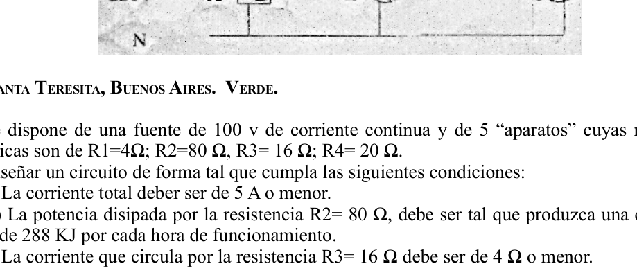
Topic: Circuits Metodi: Kirchhoff’s Laws, Equivalent Circuit Reduction Competenze: Physical Reasoning Objects: Resistor Fonte: Testo (PDF) — p.2
- Ramallo, buon aria. - Verdi. Il diagramma rappresenta il piano di un impianto elettrico. La rampa A alimenta un stufa di 1 Kw/h di potenza, branca B circuito di alimentazione di 10 lampe di 60 w ciascuna e la L’arbre C alimenta due lampade di 100 W ciascuna. La tensione della linea di alimentazione generale è de 220 V. Calcolo: a) Il corrente totale sulla linea (lt). b) Potenza totale installata (Pt). c) resistenza equivalente per ogni ramo (Ra, Rb, Rc). d) Resistenza totale dell’impianto (Re) e) Consumo di energia in 1 ora di funzionamento in Kw/h.
Topic: Circuits Metodi: Kirchhoff’s Laws, Equivalent Circuit Reduction Competenze: Physical Reasoning Objects: Resistor Fonte: Testo (PDF) — p.2
-
- Ramalo, good weather. Green. The diagram represents the plane of an electrical installation. Branch A feeds a stove of 1 Kw/h power, branch B the power supply circuit of 10 lamps of 60 w each and the Branch C powers two 100W lamps each. The voltage in the overall power line is de 220 V. Calculation: (a) Total current on line (lt). (b) Total installed power (Pt). (c) The equivalent strength in each branch (Ra, Rb, Rc). (d) Total resistance of the installation (Re) (e) Energy consumption in 1 operating hour in Kw/h.
Topic: Circuits Metodi: Kirchhoff’s Laws, Equivalent Circuit Reduction Competenze: Physical Reasoning Objects: Resistor Fonte: Testo (PDF) — p.2
- SANTA TERESITA, BUENOS AIRES. VERDE. Se dispone de una fuente de 100 v de corriente continua y de 5 “aparatos” cuyas resistencias eléctricas son de R1=4Ω; R2=80 Ω, R3= 16 Ω; R4= 20 Ω. Diseñar un circuito de forma tal que cumpla las siguientes condiciones: a) La corriente total deber ser de 5 A o menor. b) La potencia disipada por la resistencia R2= 80 Ω, debe ser tal que produzca una cantidad de calor de 288 KJ por cada hora de funcionamiento. c) La corriente que circula por la resistencia R3= 16 Ω debe ser de 4 Ω o menor.
Topic: Circuits Metodi: Equivalent Circuit Reduction, Kirchhoff’s Laws Competenze: Physical Reasoning Objects: Resistor, Battery Fonte: Testo (PDF) — p.2
- Santa Teresa, buon aria. - Verdi. Si dispone di una fonte di corrente continua di 100 v e di 5 apparecchi le cui resistenze Le linee elettriche sono di R1=4Ω; R2=80 Ω, R3=16 Ω; R4=20 Ω. Progettare un circuito in modo tale da soddisfare le seguenti condizioni: a) Il corrente totale deve essere di 5 A o meno. b) La potenza dissipata dalla resistenza R2= 80 Ω deve essere tale da produrre una quantità di calore di 288 KJ per ogni ora di funzionamento. c) Il corrente che circola per la resistenza R3=16 Ω deve essere di 4 Ω o inferiore.
Topic: Circuits Metodi: Equivalent Circuit Reduction, Kirchhoff’s Laws Competenze: Physical Reasoning Objects: Resistor, Battery Fonte: Testo (PDF) — p.2
- St. Teresa, good weather. Green. A 100 v DC power source and 5 appliances with resistance The electrical power is R1=4Ω; R2=80 Ω; R3=16 Ω; R4=20 Ω. Design a circuit in such a way that it meets the following conditions: (a) The total current shall be 5 A or less. (b) The power dissipated by the resistance R2= 80 Ω shall be such that it produces a quantity of heat of 288 KJ per hour of operation. (c) The current circulating through the resistance R3=16 Ω shall be 4 Ω or less.
Topic: Circuits Metodi: Equivalent Circuit Reduction, Kirchhoff’s Laws Competenze: Physical Reasoning Objects: Resistor, Battery Fonte: Testo (PDF) — p.2
- SANTA TERESITA, BUENOS AIRES. VERDE. Una pecera está casi llena de agua en reposo. En el fondo de la misma hay un objeto.
Un niño pretende tocar el objeto en cualquier punto del mismo, con una aguja de tejer; pero dicha aguja debe formar un ángulo de 30º con respecto a la vertical. Las paredes laterales de la pecera son opacas. a) ¿En qué lugar debe introducir la aguja? b) Si se le permitiera agregar sobre el agua una capa de líquido (de menor densidad que el agua) y de 2 cm de espesor ¿Qué índice de refracción debería tener este nuevo líquido para que pueda tocar el objeto, introduciendo la aguja con una inclinación de 30º con respecto a la vertical que está sobre el centro del objeto que es un medallón de 5 cm de diámetro. La altura del agua es de 25 cm. Nh2o= 1,33
Topic: Geometric Optics Metodi: Snell’s Law Competenze: Physical Reasoning Objects: — Fonte: Testo (PDF) — p.2
- Santa Teresa, buon aria. - Verdi. Un pesce è quasi pieno di acqua a riposo. Al fondo di esso c’è un oggetto.
Un bambino vuole toccare l’oggetto in qualsiasi punto del suo, con un ago da tessere; ma il punto di riferimento è il punto di riferimento di cui all’allegato I. I muri laterali della i pesci sono opachi. a) Dove deve essere inserito l’ago? b) Se fosse consentito di aggiungere sopra l’acqua una pietra di liquido (di densità inferiore all’acqua) E di 2 cm di spessore, che tipo di refraczione dovrebbe avere questo nuovo liquido per poterlo toccare l’oggetto, inserendo l’ago con un’inclinazione di 30° rispetto alla verticale che si trova sul centro dell’oggetto che è un medaglione di 5 cm di diametro. L’altezza dell’acqua è di 25 cm. Nh2o= 1,33
Topic: Geometric Optics Metodi: Snell’s Law Competenze: Physical Reasoning Objects: — Fonte: Testo (PDF) — p.2
- St. Teresa, good weather. Green. A fish tank is almost full of water at rest. At the bottom of it is an object.
A child intends to touch the object at any point of it, with a weaving needle; but The needle shall form an angle of 30° with respect to the vertical. The side walls of the The fish are opaque. (a) Where should the needle be inserted? (b) If it were allowed to add a layer of liquid (of lower density than water) over water. And two centimeters thick. What refractive index should this new liquid have so that it can touch the object, inserting the needle with a 30° inclination with respect to the vertical that is on the centre of the object which is a 5 cm diameter medallion. The height of the water is 25 cm. Nh2o= 1,33
Topic: Geometric Optics Metodi: Snell’s Law Competenze: Physical Reasoning Objects: — Fonte: Testo (PDF) — p.2
- SANTA TERESITA, BUENOS AIRES. VERDE. El dispositivo de la figura consiste en un péndulo simple de longitud L, del que cuelga una masa M1, que forma un ángulo con la vertical. Sobre el plano horizontal descansa otro bloque de masa M2 del mismo material que M1. El coeficiente dinámico de rozamiento entre los bloques M1 y M2 y el piso es µ. Al final del tramo de longitud X, se encuentra un resorte, cuya constante de proporcionalidad es k. ¿Cuál es la variación de longitud del resorte, en función de L, , M1, M2, µ, X y k, cuando M1 cae,golpea a M2, se adhiere y (gracias a un clavitoque lleva M1) juntos llegan hasta el resorte. Aclaraciones: a) Puede despreciarse la masa del clavito. b) La superficie con rozamiento llega exactamente hasta el comienzo del resorte.
- Calcular la cantidad de calor disipada por rozamiento en función de los mismos parámetros.
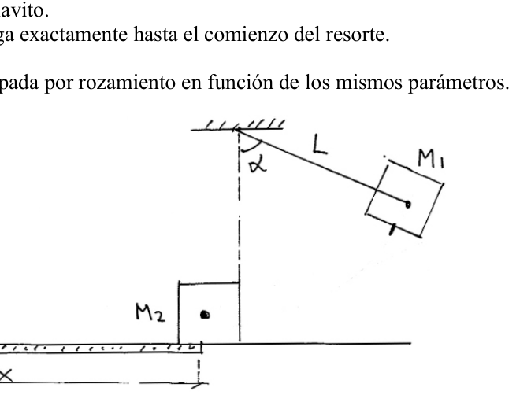
Topic: Conservation of Energy, Conservation of Momentum Metodi: Conservation of Energy, Conservation of Momentum, Hooke’s Law Competenze: Physical Reasoning Objects: Pendulum, Block, Spring Fonte: Testo (PDF) — p.2
- Santa Teresa, buon aria. - Verdi. Il dispositivo della figura consiste in un semplice pendolo di lunghezza L, dal quale si appende una massa M1, che forma un angolo con la verticale. Sul piano orizzontale si trova un altro blocco di massa M2 dello stesso materiale di M1. Il coefficiente dinamico di rottura tra i blocchi M1 e M2 e il pavimento è μ. Alla fine del tratto di lunghezza X si trova una sorgente, la cui costante proporzionalità es k. Qual è la variazione di lunghezza della sorgente, in funzione di L, , M1, M2, μ, X e k, quando M1 Cade, colpisce M2, si attacca e (grazie a un clavico che porta M1) insieme arrivano alla primavera. Clarificazione: a) La massa del chiodo può essere disprezzata. b) La superficie con arrugginimento arriva esattamente fino all’inizio della primavera.
- Calcolare la quantità di calore dissipata da un’acciaio in base agli stessi parametri.
Topic: Conservation of Energy, Conservation of Momentum Metodi: Conservation of Energy, Conservation of Momentum, Hooke’s Law Competenze: Physical Reasoning Objects: Pendulum, Block, Spring Fonte: Testo (PDF) — p.2
- St. Teresa, good weather. Green. The device in the figure consists of a simple pendulum of L length, from which a mass hangs M1, forming an angle with the vertical. On the horizontal plane rests another block of mass M2 of the same material as M1. The dynamic coefficient of friction between M1 and M2 blocks and the floor is μ. At the end of the length X section, a spring is found, the proportionality of which is constant. es k. What is the variation in spring length, based on L, , M1, M2, μ, X and k, when M1 It falls, hits M2, sticks and (thanks to a keystroke carrying M1) together they reach the spring. The Commission shall adopt implementing acts. (a) The mass of the nail may be neglected. (b) The surface with the rubbing reaches exactly to the beginning of spring.
- Calculate the amount of heat dissipated by friction based on the same parameters.
Topic: Conservation of Energy, Conservation of Momentum Metodi: Conservation of Energy, Conservation of Momentum, Hooke’s Law Competenze: Physical Reasoning Objects: Pendulum, Block, Spring Fonte: Testo (PDF) — p.2
- MAR DEL PLATA, BUENOS AIRES. AZUL Y VERDE. Un atleta que practica triatlón se encuentra en una competencia y se dispone a cruzar un río de 500 m de ancho en la primera etapa. Frente a él, en la otra orilla, se encuentra el sector de bicicletas de donde debe retirar la suya. Se lanza al agua y nada con una velocidad de 4 Km/h (respecto del agua) en forma perpendicular a la corriente, que tiene una velocidad de 1,5 Km/h. El deportista, corre cuando llega a la otra orilla hasta alcanzar su bicicleta a una velocidad de 18 Km/h. a ) Determine la trayectoria total del atleta, hasta llegar a su bicicleta. b ) Calcule el tiempo que tarda en realizar todo este recorrido. c ) ¿Cuál es la velocidad del nadador para un observador que se encuentra ubicado en la salida de la competencia?
Topic: Newtonian Mechanics Metodi: Vector Decomposition, Kinematic Equations Competenze: Physical Reasoning Objects: — Fonte: Testo (PDF) — p.2
- Mare del Piatto, buoni aeroni. Blu e verde. Un atleta che pratica il triathlon è in una competizione e si prepara a attraversare un fiume di 500 metri di larghezza nel primo stadio. Di fronte a lui, sull’altra riva, c’è il settore delle biciclette. dove deve ritirare la sua. Si lancia in acqua e si nuota a velocità di 4 Km/h (rispetto al La velocità di un’acqua di 1,5 Km/h è pari a quella di un’acqua di 1,5 Km/h. L’atleta, corre quando arriva all’altra riva fino a raggiungere la sua bicicletta a una velocità di 18 Km/h. a) Determina il percorso totale dell’atleta fino alla sua bicicletta. b) Calcolare il tempo che Ci vuole tempo per fare tutto questo tour. c) Qual è la velocità del nuotatore per un osservatore che è situato all’uscita della concorrenza?
Topic: Newtonian Mechanics Metodi: Vector Decomposition, Kinematic Equations Competenze: Physical Reasoning Objects: — Fonte: Testo (PDF) — p.2
- Sea of the Plate, good air. Blue and green. An athlete who practices triathlon is in a competition and is preparing to cross a river of 500m wide in the first stage. In front of it, on the other bank, is the bicycle sector. Where you should take your own. It is thrown into the water and swims at a speed of 4 Km/h (with respect to the water speed). water) perpendicular to the current, which has a speed of 1.5 Km/h. The athlete, He runs when he reaches the other shore until he reaches his bicycle at a speed of 18 km/h. ) Determine the total path of the athlete, until he reaches his bicycle. (b) Calculate the time that It takes a long time to complete this whole tour. (c) What is the speed of the swimmer for an observer who is is located at the exit of the competition?
Topic: Newtonian Mechanics Metodi: Vector Decomposition, Kinematic Equations Competenze: Physical Reasoning Objects: — Fonte: Testo (PDF) — p.2
- MAR DEL PLATA, BUENOS AIRES. AZUL Y VERDE. Un alumno, en una práctica de laboratorio, monta el siguiente dispositivo para medir el coeficiente de rozamiento cinético entre el bloque y la mesa. La esfera está sujeta a una cuerda tensa, actuando el sistema como un péndulo, se desplaza hasta chocar con la masa. En el experimento se supone que la fuerza de roce se mantiene constante. Cuando impacta la esfera con el bloque se produce un choque perfectamente elástico y el bloque se desplaza, su centro de gravedad, 1,2 m del punto inicial hasta que se detiene. Podemos ayudar en los cálculos a este ingenioso alumno y determinar a ) la velocidad inicial que transfiere la esfera a la masa, b ) la aceleración que actúa sobre el bloque, c ) el coeficiente de rozamiento cinético.
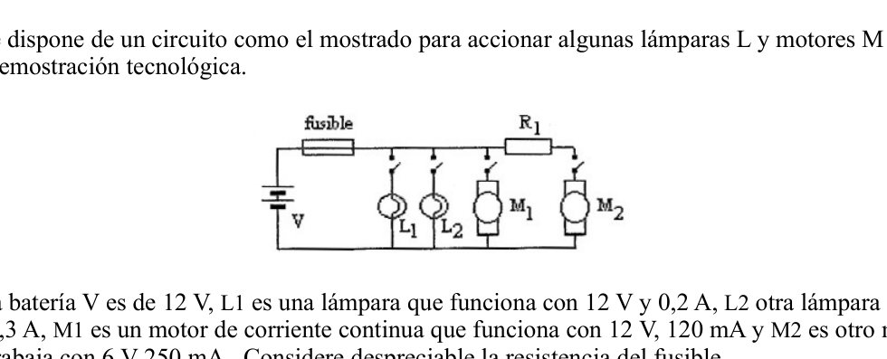
Topic: Conservation of Momentum, Conservation of Energy Metodi: Conservation of Momentum, Conservation of Energy Competenze: Physical Reasoning Objects: Pendulum, Block Fonte: Testo (PDF) — p.2
- Mare del Piatto, buoni aeroni. Blu e verde. Un allievo, in una pratica di laboratorio, monta il seguente dispositivo per misurare il Coefficiente di rottura cinetica tra il blocco e la tavola. La sfera è legata a una corda la tensa, agendo come un pendolo, si sposta fino a colpire la massa. En el L’esperimento suppone che la forza di frattura sia costante. Quando colpisce la sfera con Il blocco si colpisce perfettamente elastico e il blocco si sposta, il suo centro di Gravità, 1,2 m dal punto iniziale fino a quando si ferma. Possiamo aiutare questo esperto allievo a calcolare e determinare la velocità iniziale che (b) l’accelerazione che agisce sul blocco, (c) il coefficiente di rottura cinetica.
Topic: Conservation of Momentum, Conservation of Energy Metodi: Conservation of Momentum, Conservation of Energy Competenze: Physical Reasoning Objects: Pendulum, Block Fonte: Testo (PDF) — p.2
- Sea of the Plate, good air. Blue and green. A student, in a lab practice, assembles the following device to measure the kinetic friction coefficient between the block and the table. The sphere is tied to a rope . The system acts as a pendulum, moving until it collides with the mass. En el The experiment is supposed to keep the friction force constant. When it hits the sphere with The block is a perfectly elastic shock and the block is displaced, its center of Gravity, 1.2 m from the starting point until it stops. We can help this ingenious student with the calculations and determine the initial speed that he ‘s going to get . (b) the acceleration acting on the block, (c) the coefficient of kinetic friction.
Topic: Conservation of Momentum, Conservation of Energy Metodi: Conservation of Momentum, Conservation of Energy Competenze: Physical Reasoning Objects: Pendulum, Block Fonte: Testo (PDF) — p.2
- MAR DEL PLATA, BUENOS AIRES. AZUL Y VERDE. Se dispone de un circuito como el mostrado para accionar algunas lámparas L y motores M para una demostración tecnológica. La batería V es de 12 V, L1 es una lámpara que funciona con 12 V y 0,2 A, L2 otra lámpara de 12 V y 0,3 A, M1 es un motor de corriente continua que funciona con 12 V, 120 mA y M2 es otro motor que trabaja con 6 V 250 mA. Considere despreciable la resistencia del fusible. a ) Determine el valor de la resistencia R1. b ) ¿Cuál es la corriente máxima que circula por el fusible colocado en este circuito? c ) ¿Qué potencia máxima entrega la fuente? d ) ¿Qué modificaciones debe realizar en el circuito, si la batería se reemplaza por otra de 24 V, para que todo funcione normalmente?
Topic: Circuits Metodi: Kirchhoff’s Laws, Equivalent Circuit Reduction Competenze: Physical Reasoning Objects: Battery, Resistor Fonte: Testo (PDF) — p.2
- Mare del Piatto, buoni aeroni. Blu e verde. Si dispone di un circuito come il mostrino per accendere alcune lampade L e motori M per una dimostrazione tecnologica. La batteria V è di 12 V, L1 è una lampada che funziona con 12 V e 0,2 A, L2 un’altra lampada di 12 V e 0,3 A, M1 è un motore a corrente continua che funziona con 12 V, 120 mA e M2 è un altro motore che funziona a 6 V 250 mA. Considera dispregiata la resistenza del fusibile. a) Determina il valore della resistenza R1. b) Qual è il massimo corrente che circola attraverso il fusevole posto in questo circuito? c) Qual è la massima potenza fornita dalla fonte? d) Quali modifiche deve apportare al circuito se la batteria viene sostituita da un’altra di 24 V,
- per far funzionare tutto normalmente?
Topic: Circuits Metodi: Kirchhoff’s Laws, Equivalent Circuit Reduction Competenze: Physical Reasoning Objects: Battery, Resistor Fonte: Testo (PDF) — p.2
- Sea of the Plate, good air. Blue and green. A circuit is provided such as the display to power some L lamps and M motors for A technological demonstration. The V battery is 12 V, L1 is a lamp that runs on 12 V and 0.2 A, L2 another 12 lamp. V and 0.3 A, M1 is a DC motor that runs on 12 V, 120 mA and M2 is another motor It works with 6 V 250 mA. Consider the fuse’s resistance despicable. a) Determine the resistance value R1. (b) What is the maximum current circulating through the fuse placed in this circuit? (c) What is the maximum power output of the source? (d) What changes should be made to the circuit if the battery is replaced by a 24 V battery? So everything works out normally?
Topic: Circuits Metodi: Kirchhoff’s Laws, Equivalent Circuit Reduction Competenze: Physical Reasoning Objects: Battery, Resistor Fonte: Testo (PDF) — p.2
- VILLA SARMIENTO, BUENOS AIRES. AZUL. Una esfera de corcho (peso específico = 0,2 Kg / dm3 ) se sumerge en agua a una profundidad de 10 metros. Sin considerar la fricción, calcular el tiempo que tarda en llegar a la superficie.
Topic: Fluid Mechanics Metodi: Hydrostatic Equilibrium, Kinematic Equations Competenze: Physical Reasoning Objects: Sphere Fonte: Testo (PDF) — p.2
- Villa Sarmiento, buoni giorni. Blu. Una sfera di cork (pezzo specifico = 0,2 Kg / dm3) si immerge in acqua a una profondità di 10 metri. Senza considerare la friczione, calcolare il tempo necessario per raggiungere la superficie.
Topic: Fluid Mechanics Metodi: Hydrostatic Equilibrium, Kinematic Equations Competenze: Physical Reasoning Objects: Sphere Fonte: Testo (PDF) — p.2
- Villa Sarmiento, good weather. Blue. A cork sphere (specific weight = 0.2 Kg / dm3) is submerged in water at a depth of 10 meters. Without considering friction, calculate the time it takes to reach the surface.
Topic: Fluid Mechanics Metodi: Hydrostatic Equilibrium, Kinematic Equations Competenze: Physical Reasoning Objects: Sphere Fonte: Testo (PDF) — p.2
- VILLA SARMIENTO, BUENOS AIRES. AZUL. Una fuente luminosa se halla situada en el fondo de una pileta de agua (n=1,33) de 100 cm de profundidad, emite rayos en todas las direcciones. Los rayos que se refractan forman en la superficie del agua, un círculo luminoso, fuera de ellos los rayos se reflejan y retornan al agua. Determinar el diámetro de ese círculo.
Topic: Geometric Optics Metodi: Snell’s Law Competenze: Physical Reasoning Objects: — Fonte: Testo (PDF) — p.2
- Villa Sarmiento, buoni giorni. Blu. Una fonte luminosa si trova sul fondo di un bacino d’acqua (n=1.33) di 100 cm di diametro. profondità, emette raggi in tutte le direzioni. I raggi che si refraggono si formano nella la superficie dell’acqua, un cerchio luminoso, fuori di essi i raggi si riflettono e ritornano nell’acqua. Determinare il diametro di quel cerchio.
Topic: Geometric Optics Metodi: Snell’s Law Competenze: Physical Reasoning Objects: — Fonte: Testo (PDF) — p.2
- Villa Sarmiento, good weather. Blue. A light source is located at the bottom of a 100 cm water stack (n=1.33) of water. depth, emits rays in all directions. The refracted rays form in the the surface of the water, a bright circle, outside of which the rays are reflected and return to the water. Determine the diameter of that circle.
Topic: Geometric Optics Metodi: Snell’s Law Competenze: Physical Reasoning Objects: — Fonte: Testo (PDF) — p.2
- VILLA SARMIENTO, BUENOS AIRES. AZUL. Un calentador eléctrico, cuya resistencia es de 30 Ohm está conectado a la red de 220 Volt. Calcular el tiempo que dicho calentador debe estar sumergido en una cubeta de 250 gramos de agua, para que la temperatura aumente 60 ºC. ¿Cuál sería el tiempo que tardaría en elevar la temperatura a 60 ºC ,si la red a la que está conectado se regula por la siguiente función lineal: V = 150 volt + (2 volt/ seg) x tiempo (seg)
Topic: Thermodynamics, Circuits Metodi: First Law of Thermodynamics Competenze: Physical Reasoning Objects: Resistor Fonte: Testo (PDF) — p.2
- Villa Sarmiento, buoni giorni. Blu. Un riscaldatore elettrico, la cui resistenza è di 30 Ohm è collegato alla rete di 220 Volt. Calcolare il tempo che il riscaldatore deve essere immerso in un bacino di 250 grammi di acqua, per aumentare la temperatura a 60 oC. Quanto tempo ci vorrebbe per alzare la temperatura a 60°C, se la rete a cui si trova collegato è regolato dalla seguente funzione lineare: V = 150 volt + (2 volt/seg) x tempo (seg)
Topic: Thermodynamics, Circuits Metodi: First Law of Thermodynamics Competenze: Physical Reasoning Objects: Resistor Fonte: Testo (PDF) — p.2
- Villa Sarmiento, good weather. Blue. An electric heater, with a resistance of 30 Ohm, is connected to the 220 Volt grid. Calculate the time that the heater must be immersed in a 250 gram water bucket, to increase the temperature by 60 oC. How long would it take to raise the temperature to 60°C if the network you’re on connected is regulated by the following linear function: V = 150 volts + (2 volts/second) x time (second)
Topic: Thermodynamics, Circuits Metodi: First Law of Thermodynamics Competenze: Physical Reasoning Objects: Resistor Fonte: Testo (PDF) — p.2
- CIUDAD DE CÓRDOBA, CÓRDOBA. AZUL. Un electrón se encuentra en reposo en un punto sobre la superficie de la Tierra, ubicado a 10 cm por encima del punto medio de la distancia que separa a dos cargas iguales Q, como indica la figura. Determina: a) valor y signo de las cargas Q. b) el campo eléctrico existente en el punto donde se ubicó el electrón. q e = 1,6 . 10-19 C , me = 9,1 . 10 –31 kg , g = 10 m/s2 .
Topic: Electrostatics Metodi: Coulomb’s Law, Superposition Principle Competenze: Physical Reasoning Objects: Electron, Point Charge Fonte: Testo (PDF) — p.2
- Cordoba, Cordoba. Blu. Un elettrone è a riposo in un punto sulla superficie terrestre, situato a 10 cm di distanza. sopra il punto medio della distanza che separa due carichi uguali Q, come indicato nella figura. Determina: a) valore e segno delle cariche Q. b) il campo elettrico esistente al punto in cui l’elettrone è stato collocato. q e = 1,6 . 10-19 C , me = 9,1 . 10 –31 kg , g = 10 m/s2 .
Topic: Electrostatics Metodi: Coulomb’s Law, Superposition Principle Competenze: Physical Reasoning Objects: Electron, Point Charge Fonte: Testo (PDF) — p.2
- The Commission has decided to take the necessary measures to ensure that the Commission is able to take all necessary measures to ensure that the Commission is able to take all necessary measures to ensure that the Commission is able to take all necessary measures to ensure that the Commission is able to take all necessary measures to ensure that the Commission is able to take all necessary measures to ensure that the Commission is able to take all necessary measures to ensure that the Commission is able to take all necessary measures to ensure that the Commission is able to fulfil its obligations under this Regulation. Blue. An electron is at rest at a point on the Earth’s surface, located 10 cm away. above the midpoint of the distance separating two equal Q loads, as shown in Figure 1. Determine: (a) value and sign of Q loads. (b) the electric field existing at the point where the electron was located. q e = 1,6 . 10-19 C , me = 9,1 . 10 –31 kg , g = 10 m/s2 .
Topic: Electrostatics Metodi: Coulomb’s Law, Superposition Principle Competenze: Physical Reasoning Objects: Electron, Point Charge Fonte: Testo (PDF) — p.2
- CIUDAD DE CÓRDOBA, CÓRDOBA. AZUL. Un bloque de masa m1 = 44 kg, descansa en un plano sin fricción, inclinado 30º con respecto a la horizontal, y se encuentra unido mediante una cuerda que pasa por una polea pequeña sin rozamiento, a un segundo bloque de masa m2 = 30 kg suspendido verticalmente como indica la figura. a) ¿Cuál es la aceleración de cada cuerpo? b) ¿Cuál es la tensión de la cuerda?
Topic: Newtonian Mechanics Metodi: Free-Body Diagram, Vector Decomposition Competenze: Physical Reasoning Objects: Block, Inclined Plane, Pulley, String Fonte: Testo (PDF) — p.2
- Cordoba, Cordoba. Blu. Un blocco di massa m1 = 44 kg, si trova in un piano senza frizione, inclinato 30° rispetto a La linea di linea è orizzontale, e si trova unita da una corda che passa attraverso una piccola polea senza Raggiustamento, a un secondo blocco di massa m2 = 30 kg sospeso verticalmente come indicato dalla
- Figura. a) Qual è l’accelerazione di ogni corpo? b) Qual è la tensione della corda?
Topic: Newtonian Mechanics Metodi: Free-Body Diagram, Vector Decomposition Competenze: Physical Reasoning Objects: Block, Inclined Plane, Pulley, String Fonte: Testo (PDF) — p.2
- The Commission has decided to take the necessary measures to ensure that the Commission is able to take all necessary measures to ensure that the Commission is able to take all necessary measures to ensure that the Commission is able to take all necessary measures to ensure that the Commission is able to take all necessary measures to ensure that the Commission is able to take all necessary measures to ensure that the Commission is able to take all necessary measures to ensure that the Commission is able to take all necessary measures to ensure that the Commission is able to fulfil its obligations under this Regulation. Blue. A block of m1 mass = 44 kg, rests on a frictionless plane, tilted 30° with respect to The horizontal, and is joined by a rope that passes through a small pole without a second block of mass m2 = 30 kg suspended vertically as indicated by the It’s a figure. (a) What is the acceleration of each body? (b) What is the tension of the rope?
Topic: Newtonian Mechanics Metodi: Free-Body Diagram, Vector Decomposition Competenze: Physical Reasoning Objects: Block, Inclined Plane, Pulley, String Fonte: Testo (PDF) — p.2
- CIUDAD DE CÓRDOBA, CÓRDOBA. AZUL. Un cubo que está flotando en mercurio tiene sumergida la cuarta parte de su volumen. Si se agrega agua suficiente para cubrir el cubo, a) ¿qué fracción de su volumen quedará sumergida en el mercurio? b) ¿cuál sería la respuesta a la pregunta anterior si en vez de un cubo, flotara una esfera en las mismas condiciones? densidad del mercurio = 1,36 . 104 kg/m3 , densidad del agua = 103 kg/m3 .
Topic: Fluid Mechanics Metodi: Hydrostatic Equilibrium Competenze: Physical Reasoning Objects: Sphere Fonte: Testo (PDF) — p.2
- Cordoba, Cordoba. Blu. Un cubo che galleggia in mercurio ha un quarto del suo volume immerso. Si se aggiunge abbastanza acqua per coprire il cubo, a) che frazione del suo volume rimarrà immersa nel mercurio? b) quale sarebbe la risposta alla domanda precedente se invece di un cubo, si trovasse una sfera a galla nelle Le stesse condizioni? densità del mercurio = 1,36 . 104 kg/m3 , densità dell’ acqua = 103 kg/m3 .
Topic: Fluid Mechanics Metodi: Hydrostatic Equilibrium Competenze: Physical Reasoning Objects: Sphere Fonte: Testo (PDF) — p.2
- The Commission has decided to take the necessary measures to ensure that the Commission is able to take all necessary measures to ensure that the Commission is able to take all necessary measures to ensure that the Commission is able to take all necessary measures to ensure that the Commission is able to take all necessary measures to ensure that the Commission is able to take all necessary measures to ensure that the Commission is able to take all necessary measures to ensure that the Commission is able to take all necessary measures to ensure that the Commission is able to fulfil its obligations under this Regulation. Blue. A cube that’s floating in mercury has a quarter of its volume submerged. Si se add enough water to cover the bucket, (a) What fraction of its volume will be submerged in mercury? (b) What would be the answer to the previous question if instead of a cube, a sphere floated in the the same conditions? Mercury density is 1.36 . 104 kg/m3 , water density = 103 kg/m3 .
Topic: Fluid Mechanics Metodi: Hydrostatic Equilibrium Competenze: Physical Reasoning Objects: Sphere Fonte: Testo (PDF) — p.2
- CIUDAD DE CÓRDOBA, CÓRDOBA. AZUL. Una pelota de fútbol americano es pateada con una rapidez de 19,6 m/s y con un ángulo de 45º respecto al piso. Un jugador en la línea de meta, colocado a 54,7 m de distancia en la dirección por donde llega la pelota, corre en ese instante hacia la pelota. Suponiendo que lo hace con velocidad uniforme y despreciando todo tipo de fricción, ¿cuál debe ser la velocidad del jugador para que pueda alcanzar la pelota antes de que ésta toque el suelo?
Topic: Newtonian Mechanics Metodi: Kinematic Equations Competenze: Physical Reasoning Objects: Projectile Fonte: Testo (PDF) — p.2
- Cordoba, Cordoba. Blu. Una palla di calcio americana viene calpestata a una velocità di 19,6 m/s e con un angolo di 45°
- rispetto al pavimento. Un giocatore sulla linea di meta, posto a 54.7 m di distanza in direzione da Quando arriva la palla, corre immediatamente verso la palla. Supponendo che lo faccia a velocità. Uniforme e disprezzando ogni tipo di attrito, quale deve essere la velocità del giocatore per farlo Potrebbe raggiungere la palla prima che essa tocchi il suolo?
Topic: Newtonian Mechanics Metodi: Kinematic Equations Competenze: Physical Reasoning Objects: Projectile Fonte: Testo (PDF) — p.2
- The Commission has decided to take the necessary measures to ensure that the Commission is able to take all necessary measures to ensure that the Commission is able to take all necessary measures to ensure that the Commission is able to take all necessary measures to ensure that the Commission is able to take all necessary measures to ensure that the Commission is able to take all necessary measures to ensure that the Commission is able to take all necessary measures to ensure that the Commission is able to take all necessary measures to ensure that the Commission is able to fulfil its obligations under this Regulation. Blue. An American football is kicked at a speed of 19.6 m/s and at an angle of 45o about the floor. A player on the goal line, placed 54.7 m away in the direction by where the ball comes in, he runs right into the ball. Assuming you do it fast . uniform and disregarding all kinds of friction, what must be the player’s speed for that Can I get the ball before it hits the ground?
Topic: Newtonian Mechanics Metodi: Kinematic Equations Competenze: Physical Reasoning Objects: Projectile Fonte: Testo (PDF) — p.2
- CIUDAD DE CÓRDOBA, CÓRDOBA. AZUL. Un niño, ejerciendo una fuerza F = 30 N, tira de un carrito cuyo peso P = 50 N, a lo largo de una rampa (ilustrada en la figura). Despreciando la fricción entre el carro y la rampa, y considerando el desplazamiento a b =4m. Responde: a) El trabajo realizado por la reacción normal N→ es nula ( V o F ). b) El ángulo formado por una fuerza F→ con el desplazamiento del carrito es de 30º ( V o F ). c) El ángulo formado por la componente PN→ con el desplazamiento del carrito es de . Calcula: a) El trabajo realizado por la componente P→ b) El trabajo total realizado sobre el carrito.
Topic: Conservation of Energy Metodi: Vector Decomposition, Conservation of Energy Competenze: Physical Reasoning Objects: Cart, Inclined Plane Fonte: Testo (PDF) — p.2
- Cordoba, Cordoba. Blu. Un bambino, esercitando una forza F = 30 N, tira da un carrello di peso P = 50 N, lungo un rampa (illustrata nella figura). Scommettere il frattura tra carro e rampa, e considerando il spostamento a b = 4m. Risponde: a) Il lavoro effettuato dalla reazione normale N→ è nullo (V o F). b) L’angolo formato da una forza F→ con lo spostamento del carrello è di 30° (V o F). c) L’angolo formato dalla componente PN→ con lo spostamento del carrello è di . Calcola: a) Il lavoro svolto dal componente P→ b) Il lavoro totale svolto sul carrello.
Topic: Conservation of Energy Metodi: Vector Decomposition, Conservation of Energy Competenze: Physical Reasoning Objects: Cart, Inclined Plane Fonte: Testo (PDF) — p.2
- The Commission has decided to take the necessary measures to ensure that the Commission is able to take all necessary measures to ensure that the Commission is able to take all necessary measures to ensure that the Commission is able to take all necessary measures to ensure that the Commission is able to take all necessary measures to ensure that the Commission is able to take all necessary measures to ensure that the Commission is able to take all necessary measures to ensure that the Commission is able to take all necessary measures to ensure that the Commission is able to fulfil its obligations under this Regulation. Blue. A child, exercising a force F = 30 N, pulls a cart whose weight P = 50 N, along a ramp (shown in figure). Disregarding the friction between the car and the ramp, and considering the displacement at b = 4m. He says: (a) The work performed by the normal reaction N→ is zero (V or F). (b) The angle formed by a force F→ with the displacement of the cart shall be 30° (V or F). (c) The angle formed by the PN→ component with the cart displacement is of . Calculate: (a) The work carried out by the component P→ (b) The total work carried out on the cart.
Topic: Conservation of Energy Metodi: Vector Decomposition, Conservation of Energy Competenze: Physical Reasoning Objects: Cart, Inclined Plane Fonte: Testo (PDF) — p.2
- CIUDAD DE CÓRDOBA, CÓRDOBA. AZUL. Un calorímetro de capacidad térmica despreciable ( C=0 ) contiene 50 g de agua a 20 ºC. En el interior del aparato se coloca un bloque de plomo de 200 g y a una temperatura de 100 ºC.Se observa, después de cierto tiempo, que la temperatura de equilibrio es 30 ºC. Responde: a) Siendo ce el calor específico del plomo, ¿ cómo podemos expresar el calor que perdió? b) ¿ Cuál es el calor absorbido por el calorímetro ?
c) ¿ Qué calor absorbió el agua ? d) Con sus respuestas a las preguntas anteriores. Calcule el calor específico del plomo.
Topic: Thermodynamics Metodi: First Law of Thermodynamics Competenze: Physical Reasoning Objects: Calorimeter, Block Fonte: Testo (PDF) — p.2
- Cordoba, Cordoba. Blu. Un calometro di capacità termico scarsa (C=0) contiene 50 g di acqua a 20 ºC. All’interno dell’apparecchio si colloca un blocco di piombo di 200 g e una La temperatura di 100 oC. equilibrio è di 30 oC. Risponde: a) Essendo il calore specifico del piombo, come possiamo esprimere il calore che
- Ha perso? b) Qual è il calore assorbito dal calorimetro ?
c) Che calore ha assorbito l ’ acqua ? d) Con le risposte alle domande precedenti. Calcola il calore specifico del piombo.
Topic: Thermodynamics Metodi: First Law of Thermodynamics Competenze: Physical Reasoning Objects: Calorimeter, Block Fonte: Testo (PDF) — p.2
- The Commission has decided to take the necessary measures to ensure that the Commission is able to take all necessary measures to ensure that the Commission is able to take all necessary measures to ensure that the Commission is able to take all necessary measures to ensure that the Commission is able to take all necessary measures to ensure that the Commission is able to take all necessary measures to ensure that the Commission is able to take all necessary measures to ensure that the Commission is able to take all necessary measures to ensure that the Commission is able to fulfil its obligations under this Regulation. Blue. A heat meter of negligible thermal capacity (C=0) contains 50 g of water at 20 ºC. Inside the apparatus is a 200 g lead block and a The temperature of the water is 100 oC. The equilibrium is 30 oC. He says: (a) Since the heat is specific to lead, how can we express the heat that leads to lead?
- Did you lose? (b) What is the heat absorbed by the calorimeter ?
c) What heat did the water absorb ? (d) With their answers to the above questions. Calculate the specific heat of the lead.
Topic: Thermodynamics Metodi: First Law of Thermodynamics Competenze: Physical Reasoning Objects: Calorimeter, Block Fonte: Testo (PDF) — p.2
- CIUDAD DE CÓRDOBA, CÓRDOBA. AZUL. Una batería de f.e.m. ε = 12 y resistencia interna r = 0,5 Ω , se conecta en serie con una resistencia R = 4Ω y con un motor eléctrico de f.c. e.m. ε’ = 6 V y cuya resistencia interna es r’ = 1,5Ω . a) Trace un esquema ese circuito. b) ¿ Cuál es el valor de la corriente que pasa por el motor ? c) ¿ Qué potencia disipa por efecto Joule en el motor ? d) ¿ Disipa por efecto Joule potencia la batería y la resistencia R ?
Topic: Circuits Metodi: Kirchhoff’s Laws Competenze: Physical Reasoning Objects: Battery, Resistor Fonte: Testo (PDF) — p.2
- Cordoba, Cordoba. Blu. Una batteria di f.e.m. ε = 12 e resistenza interna r = 0,5 Ω , si collega in serie con una resistenza R = 4Ω e con un motore elettrico a f.c. e.m. ε = 6 V e la cui resistenza interna è r’ = 1,5Ω . a) Disegna un schema per quel circuito. b) Qual è il valore del corrente che passa attraverso il motore ? c) Che potenza si dissipa per effetto Joule nel motore ? d) Dissolve per effetto Joule la batteria e la resistenza R ?
Topic: Circuits Metodi: Kirchhoff’s Laws Competenze: Physical Reasoning Objects: Battery, Resistor Fonte: Testo (PDF) — p.2
- The Commission has decided to take the necessary measures to ensure that the Commission is able to take all necessary measures to ensure that the Commission is able to take all necessary measures to ensure that the Commission is able to take all necessary measures to ensure that the Commission is able to take all necessary measures to ensure that the Commission is able to take all necessary measures to ensure that the Commission is able to take all necessary measures to ensure that the Commission is able to take all necessary measures to ensure that the Commission is able to fulfil its obligations under this Regulation. Blue. A f.e.m. battery. ε = 12 and internal resistance r = 0,5 Ω , it is connected in series with a R = 4Ω and with an electric f.c. motor e.m. ε = 6 V and whose internal resistance is r’ = 1,5Ω . (a) Draw a diagram of that circuit. (b) What is the value of the current passing through the engine ? (c) What power is dissipated by Joule effect on the engine ? d) Does Joule discharge the battery and R resistance ?
Topic: Circuits Metodi: Kirchhoff’s Laws Competenze: Physical Reasoning Objects: Battery, Resistor Fonte: Testo (PDF) — p.2
- CIUDAD DE CÓRDOBA, CÓRDOBA. AZUL. Se tiene una lámina de caras paralelas de 5 cm de espesor, sobre ella incide un rayo a 50 º , el índice de refracción es de la lámina es de 1,5. Calcula: a) La longitud del rayo interior. b) El valor del ángulo de refracción c) La velocidad con que lo hace:
Topic: Geometric Optics Metodi: Snell’s Law Competenze: Physical Reasoning Objects: — Fonte: Testo (PDF) — p.2
- Cordoba, Cordoba. Blu. Si dispone di una lamina di facce parallele di 5 cm di spessore, sopra di essa incide un raggio a 50 o , il Il tasso di refraczione è di 1,5. Calcola: a) La lunghezza del raggio interno. b) Il valore dell’angolo di rifrazione c) La velocità con cui lo fa:
Topic: Geometric Optics Metodi: Snell’s Law Competenze: Physical Reasoning Objects: — Fonte: Testo (PDF) — p.2
- The Commission has decided to take the necessary measures to ensure that the Commission is able to take all necessary measures to ensure that the Commission is able to take all necessary measures to ensure that the Commission is able to take all necessary measures to ensure that the Commission is able to take all necessary measures to ensure that the Commission is able to take all necessary measures to ensure that the Commission is able to take all necessary measures to ensure that the Commission is able to take all necessary measures to ensure that the Commission is able to fulfil its obligations under this Regulation. Blue. It has a parallel sheet of 5 cm thick, over which a ray of 50 o. The refractive index of the sheet is 1.5. Calculate: (a) The length of the inner beam. (b) The value of the angle of refraction (c) The speed at which it does so:
Topic: Geometric Optics Metodi: Snell’s Law Competenze: Physical Reasoning Objects: — Fonte: Testo (PDF) — p.2
- CIUDAD DE CORRIENTES, CORRIENTES. AZUL. Despreciando las fuerzas de rozamiento, calcular desde que altura deberá caer un trineo, a partir del reposo para alcanzar una energía cinética equivalente a la que posee cuando su velocidad es de 72 Km/h.
Topic: Conservation of Energy Metodi: Conservation of Energy Competenze: Physical Reasoning Objects: — Fonte: Testo (PDF) — p.2
- Città dei Correnti, Correnti. Blu. Sotto il risparmio delle forze di ruggine, calcolare da che altezza deve cadere un scivolo, a partire da La velocità di un’energia cinetica è pari a quella che ha quando la sua velocità è di 72 Km/h.
Topic: Conservation of Energy Metodi: Conservation of Energy Competenze: Physical Reasoning Objects: — Fonte: Testo (PDF) — p.2
- City of currents, currents. Blue. Depreciating the friction forces, calculate from what height a sled should fall, starting from The resting energy is the kinetic energy equivalent to that which it possesses when its speed is 72 Km/h.
Topic: Conservation of Energy Metodi: Conservation of Energy Competenze: Physical Reasoning Objects: — Fonte: Testo (PDF) — p.2
- CIUDAD DE CORRIENTES, CORRIENTES. AZUL. Un tren interurbano parte del reposo y acelera durante 10 segundos con una aceleración constante de 1,2 m/s2 . Después marcha con velocidad constante durante 30 segundos y luego desacelera a razón de 2,4 m/s2 hasta que se detiene en la siguiente estación . a) Calcular la distancia total del recorrido . b) Graficar v f( t ) .
Topic: Newtonian Mechanics Metodi: Kinematic Equations Competenze: Physical Reasoning Objects: — Fonte: Testo (PDF) — p.2
- Città dei Correnti, Correnti. Blu. Un treno interurbano parte dal riposo e accelera per 10 secondi con un’accelerazione. costante di 1,2 m/s2 . Poi si muove a velocità costante per 30 secondi e poi si rallenta a velocità di 2,4 m/s2 fino a quando non si ferma alla stazione successiva . a) Calcolare la distanza totale del percorso . b) Grafico v f t .
Topic: Newtonian Mechanics Metodi: Kinematic Equations Competenze: Physical Reasoning Objects: — Fonte: Testo (PDF) — p.2
- City of currents, currents. Blue. An interurban train leaves the rest and accelerates for 10 seconds with a single acceleration. constant of 1.2 m/s2 . Then it goes at a steady speed for 30 seconds and then slows down at a rate of 2.4 m/s2 until you stop at the next station . (a) Calculate the total distance of the route . (b) Graph v f t .
Topic: Newtonian Mechanics Metodi: Kinematic Equations Competenze: Physical Reasoning Objects: — Fonte: Testo (PDF) — p.2
- CIUDAD DE CORRIENTES, CORRIENTES. AZUL. La figura muestra 2 resistores conectados en serie, uno de 1 Ohm y el otro de 2 Ohm . La fuente es una batería de 6 Voltios. a) Cuál es la intensidad de corriente que circula al cerrar el circuito?.
b) Qué indican los voltímetros en ambos resistores ?. c) Cuál es el valor de la resistencia equivalente en el circuito ?.
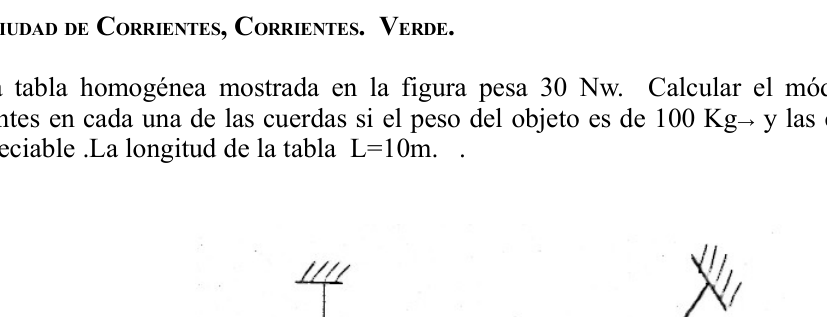
Topic: Circuits Metodi: Equivalent Circuit Reduction, Kirchhoff’s Laws Competenze: Physical Reasoning Objects: Resistor, Battery Fonte: Testo (PDF) — p.2
- Città dei Correnti, Correnti. Blu. La figura mostra due resistori collegati in serie, uno di 1 Ohm e l’altro di 2 Ohm. La fonte È una batteria a 6 volt. a) Qual è l’intensità di corrente che circola quando si chiude il circuito?
b) Che cosa indicano i voltometri su entrambi i resistori? c) Qual è il valore della resistenza equivalente nel circuito ?.
Topic: Circuits Metodi: Equivalent Circuit Reduction, Kirchhoff’s Laws Competenze: Physical Reasoning Objects: Resistor, Battery Fonte: Testo (PDF) — p.2
- City of currents, currents. Blue. The figure shows 2 resistors connected in series, one of 1 Ohm and the other of 2 Ohm. The source It’s a six-volt battery. (a) What is the current intensity of the circuit that is flowing when the circuit is closed?
(b) What do the voltmeters on both resistors indicate? (c) What is the value of the equivalent resistance in the circuit ?.
Topic: Circuits Metodi: Equivalent Circuit Reduction, Kirchhoff’s Laws Competenze: Physical Reasoning Objects: Resistor, Battery Fonte: Testo (PDF) — p.2
- CIUDAD DE CORRIENTES, CORRIENTES. VERDE. Una pelota abandona el bate formando un ángulo de 30º con la horizontal y la recibe el jugador a 120 metros. a) Cuál es la velocidad inicial de la pelota? . b) A qué altura se elevó ? . c) Cuánto tiempo estuvo en el aire ? . d) Determinar las ecuaciones horarias del movimiento .
Topic: Newtonian Mechanics Metodi: Kinematic Equations Competenze: Physical Reasoning Objects: Projectile Fonte: Testo (PDF) — p.2
- Città dei Correnti, Correnti. - Verdi. Una palla lascia il batto formando un angolo di 30° con la orizzontale e viene ricevuta dal giocatore a 120 metri. a) Qual è la velocità iniziale della palla? . b) A che altezza è salito ? . c) Quanto tempo è stato in onda ? . d) Determinare le equazioni orarie del movimento .
Topic: Newtonian Mechanics Metodi: Kinematic Equations Competenze: Physical Reasoning Objects: Projectile Fonte: Testo (PDF) — p.2
- City of currents, currents. Green. A ball leaves the bat forming a 30° angle with the horizontal and is received by the player at 120 feet. (a) What is the initial speed of the ball? . (b) How high did he rise ? . c) How long was it on the air ? . (d) Determine the time equations of the motion .
Topic: Newtonian Mechanics Metodi: Kinematic Equations Competenze: Physical Reasoning Objects: Projectile Fonte: Testo (PDF) — p.2
- CIUDAD DE CORRIENTES, CORRIENTES. VERDE. La tabla homogénea mostrada en la figura pesa 30 Nw. Calcular el módulo de las fuerzas actuantes en cada una de las cuerdas si el peso del objeto es de 100 Kg→ y las cuerdas tienen peso despreciable .La longitud de la tabla L=10m. .
Topic: Rigid Body Statics Metodi: Torque & Angular Momentum Analysis, Free-Body Diagram Competenze: Physical Reasoning Objects: Beam, String Fonte: Testo (PDF) — p.2
- Città dei Correnti, Correnti. - Verdi. La tabella omogenea mostrata nella figura pesa 30 NW. Calcolare il modulo delle forze azionanti su ciascuna corda se il peso dell’oggetto è di 100 Kg→ e le corde hanno peso La lunghezza della tabella L=10m. .
Topic: Rigid Body Statics Metodi: Torque & Angular Momentum Analysis, Free-Body Diagram Competenze: Physical Reasoning Objects: Beam, String Fonte: Testo (PDF) — p.2
- City of currents, currents. Green. The homogeneous table shown in the figure weighs 30 Nw. Calculate the force module acting on each of the strings if the weight of the object is 100 Kg→ and the strings have a weight The length of the table L=10m. .
Topic: Rigid Body Statics Metodi: Torque & Angular Momentum Analysis, Free-Body Diagram Competenze: Physical Reasoning Objects: Beam, String Fonte: Testo (PDF) — p.2
- CIUDAD DE CORRIENTES, CORRIENTES. VERDE. El circuito de la figura representa una tetera eléctrica (B) conectada a una batería de 120 Voltios a través de la resistencia R2 de 10 Ohm, sabiendo que el amperímetro marca 2 Ampere . Cuánto tiempo tarda en hervir 0,5 litros de agua en la tetera hallándose a la temperatura inicial de 4ºC ? . El rendimiento del hornillo de la tetera es del 76% y se desprecian las resistencias de la batería y del amperímetro.
1cal= 4,186 Joule
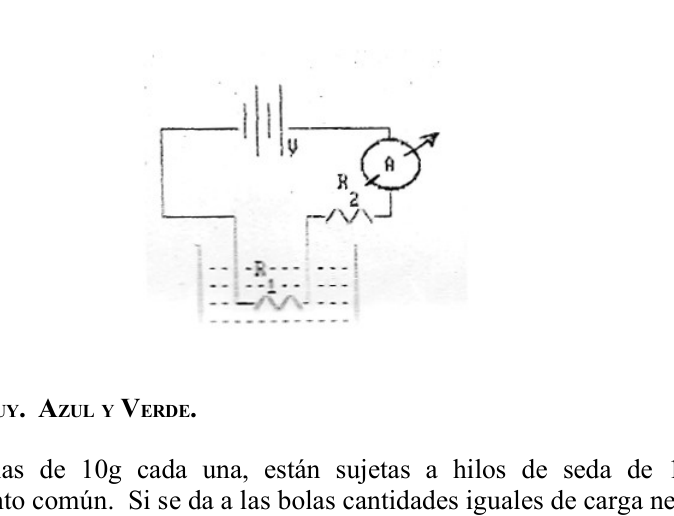
Topic: Circuits, Thermodynamics Metodi: First Law of Thermodynamics, Kirchhoff’s Laws Competenze: Physical Reasoning Objects: Resistor, Battery Fonte: Testo (PDF) — p.2
- Città dei Correnti, Correnti. - Verdi. Il circuito della figura rappresenta un tetter elettrico (B) collegato a una batteria di 120 Volt. attraverso la resistenza R2 di 10 Ohm, sapendo che l’ampielitore marca 2 Ampere. Quanto tempo ci vuole per fervere 0,5 litri di acqua in teater alla temperatura iniziale de 4ºC ? . Il rendimento del forno della teater è del 76% e le resistenze della batteria sono sconsiderate. dell’ampimetro.
1 cal = 4.186 Joule
Topic: Circuits, Thermodynamics Metodi: First Law of Thermodynamics, Kirchhoff’s Laws Competenze: Physical Reasoning Objects: Resistor, Battery Fonte: Testo (PDF) — p.2
- City of currents, currents. Green. The circuit in the figure represents an electric kettle (B) connected to a 120-volt battery. through the R2 resistance of 10 Ohm, knowing that the ampere marks 2 Ampere. How long does it take to boil 0.5 liters of water in the teapot at the initial temperature de 4ºC ? . The efficiency of the teapot oven is 76% and the resistance of the battery is neglected and the ampere.
1 cal = 4,186 Joule
Topic: Circuits, Thermodynamics Metodi: First Law of Thermodynamics, Kirchhoff’s Laws Competenze: Physical Reasoning Objects: Resistor, Battery Fonte: Testo (PDF) — p.2
- SAN SALVADOR, JUJUY. AZUL Y VERDE. Dos pequeñas bolas de 10g cada una, están sujetas a hilos de seda de 1m de longitud, suspendidos de un punto común. Si se da a las bolas cantidades iguales de carga negativa, cada hilo forma un ángulo de 4º con la vertical. a) Dibuje un diagrama que muestre todas lasfuerzas ejercidas sobre cada bola. b) Halle el valor de la carga de cada una.
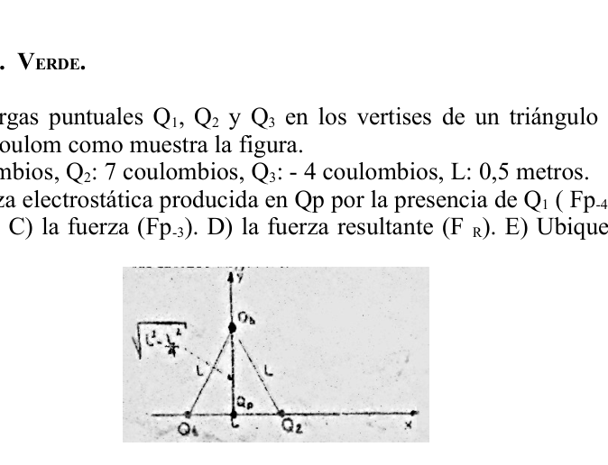
Topic: Electrostatics Metodi: Coulomb’s Law, Free-Body Diagram Competenze: Physical Reasoning Objects: Pendulum Fonte: Testo (PDF) — p.2
- San Salvatore, Giudeo. Blu e verde. Due piccole palle di 10g ciascuna, sono attaccate a fili di seta di 1m di lunghezza, sospese da un punto comune. Se le palle vengono fornite uguali quantità di carico negativo, ogni filo forma un angolo di 4° con la verticale. a) Disegnare un diagramma che mostri tutte le forze esercitate. su ogni palla. b) Calcolare il valore del carico di ciascuna.
Topic: Electrostatics Metodi: Coulomb’s Law, Free-Body Diagram Competenze: Physical Reasoning Objects: Pendulum Fonte: Testo (PDF) — p.2
- Saint Saviour, the Jew. Blue and green. Two small balls of 10g each, are attached to 1m long silk threads, suspended from a common point. If you give the balls the same amount of negative charge, each thread It forms a 4° angle with the vertical. (a) Draw a diagram showing all the forces exerted. on every ball. (b) Find the value of each load.
Topic: Electrostatics Metodi: Coulomb’s Law, Free-Body Diagram Competenze: Physical Reasoning Objects: Pendulum Fonte: Testo (PDF) — p.2
- SAN SALVADOR, JUJUY. AZUL Y VERDE. Un estudiante decidido a comprobar por sí mismo las leyes de la gravedad se arroja, cronómetro enmano, desde un rascacielo de 124,32 m de altura e inicia su caída libre (velocidad inicial nula). Cinco segundos más tarde aparece en escena un superhombre y se lanza desde el tejado del rascacielo para salvar al estudiante. a) cuál ha de ser la velocidad inicial del superhombre para que agarre al estudiante justamente antes que llegue al suelo? .b) Cuál debe ser la altura del rascacielos para que ni aún el superhombre pueda salvarlo? (se supone que la aceleración de la caída libre del superhombre es la de un cuerpo que cae libremente)
Topic: Newtonian Mechanics Metodi: Kinematic Equations Competenze: Physical Reasoning Objects: — Fonte: Testo (PDF) — p.2
- San Salvatore, Giudeo. Blu e verde. Un studente deciso a verificare da solo le leggi della gravità si lancia, cronometro in mano, da un edificio di 124,32 m di altezza e inizia la sua caduta libera (velocità iniziale zero). Cinque secondi dopo un superuomo si presenta sul palco e si lancia dal tetto del palazzo.
- Un’elevatazione per salvare lo studente. (a) quale deve essere la velocità iniziale del superuomo per
- Si prende lo studente appena prima di arrivare al pavimento? .b) Qual è la altezza del palazzo? Che non lo possa nemmeno salvare il superuomo? (si suppone che l’accelerazione della caduta libera del Superuomo è quello di un corpo che cade liberamente)
Topic: Newtonian Mechanics Metodi: Kinematic Equations Competenze: Physical Reasoning Objects: — Fonte: Testo (PDF) — p.2
- Saint Saviour, the Jew. Blue and green. A student determined to test the laws of gravity for himself throws himself, chronometer It starts to fall freely from a 124,32 m high skyscraper (zero initial speed). Five seconds later , a superman appears on the scene and jumps off the roof of the building . The skyscraper to save the student. (a) what the superman ‘s initial speed must be to make it Grab the student just before he gets to the floor? .b) What should be the height of the skyscraper So even the superman can’t save him? (the acceleration of the free fall of the (Superman is the body that falls freely)
Topic: Newtonian Mechanics Metodi: Kinematic Equations Competenze: Physical Reasoning Objects: — Fonte: Testo (PDF) — p.2
- SAN SALVADOR, JUJUY. AZUL Y VERDE. Un bloque cúbico de madera de 10cm de arista y de peso específico 0,5 g→/cm3 flota en un recipiente con agua. Se vierte en el recipiente aceite de peso específico 0,8 g→/cm3 hasta que la superficie superior de la capa de aceite se encuentre 4 cm por debajo de la cara superior del bloque . a) Qué espesor tiene la capa de aceite? b) Cuál es la presión en la cara inferior del bloque?
Topic: Fluid Mechanics Metodi: Hydrostatic Equilibrium Competenze: Physical Reasoning Objects: Block Fonte: Testo (PDF) — p.2
- San Salvatore, Giudeo. Blu e verde. Un blocco di legno cubo di 10 cm di bordo e di peso specifico di 0,5 g→/cm3 flotta in un contenitore di acqua. Versi in recipiente olio di specifico peso 0,8 g→/cm3 fino a che la la superficie superiore del strato di olio si trova 4 cm sotto la parte superiore del blocco . a) Qual è lo spessore dell’olio? b) Qual è la pressione sul lato inferiore del blocco?
Topic: Fluid Mechanics Metodi: Hydrostatic Equilibrium Competenze: Physical Reasoning Objects: Block Fonte: Testo (PDF) — p.2
- Saint Saviour, the Jew. Blue and green. A cubic block of wood 10 cm wide and a specific weight of 0,5 g →/cm3 floats on a container with water. The oil of a specific weight of 0.8 g→/cm3 is poured into the container until the The upper surface of the oil layer lies 4 cm below the upper face of the block . (a) What is the thickness of the oil layer? (b) What is the pressure on the lower side of the block?
Topic: Fluid Mechanics Metodi: Hydrostatic Equilibrium Competenze: Physical Reasoning Objects: Block Fonte: Testo (PDF) — p.2
- GENERAL ACHA, LA PAMPA. AZUL Y VERDE. Se deja caer un objeto desde una cierta altura y dos segundos más tarde se lanza otro con una velocidad vertical hacia abajo de 28m/seg. Determinar la posición, tiempo y velocidades de ambos móviles en el encuentro. Calcular el tiempo y la velocidad de llegada de ambos móviles al suelo, que dista 800m. Representar gráficamente y verificar los resultados.
Topic: Newtonian Mechanics Metodi: Kinematic Equations Competenze: Physical Reasoning Objects: — Fonte: Testo (PDF) — p.2
- Generale Accha, la PAMPA. Blu e verde. Si fa cadere un oggetto da una certa altezza e due secondi dopo si lancia un altro con un’altra. velocità verticale verso il basso di 28 m/sec. Determinare la posizione, il tempo e le velocità di entrambi mobile all’incontro. Calcolare il tempo e la velocità di arrivo di entrambi i cellulari al suolo, che è a 800 metri. Rappresentare graficamente e verificare i risultati.
Topic: Newtonian Mechanics Metodi: Kinematic Equations Competenze: Physical Reasoning Objects: — Fonte: Testo (PDF) — p.2
- General Acha, the father. Blue and green. You drop an object from a certain height and two seconds later you throw another object with a vertical speed downwards of 28 m/s. Determine the position, time and speed of both mobile at the meeting. Calculate the time and speed of both phones to the ground. It’s 800 meters away. Graphically present and verify the results.
Topic: Newtonian Mechanics Metodi: Kinematic Equations Competenze: Physical Reasoning Objects: — Fonte: Testo (PDF) — p.2
- GENERAL ACHA, LA PAMPA. AZUL Y VERDE. Según los datos de la figura calcular a) la aceleración del sistema b) la tensión en la soga que une las dos masas
Coeficiente cimétrico de razonamiento es de 0,1 α=30º M1 =20k g M2 =18 kg Calcular a)Aceleración del sistema b) Tensión de la cuerda
Topic: Newtonian Mechanics Metodi: Free-Body Diagram, Vector Decomposition Competenze: Physical Reasoning Objects: Block, Inclined Plane, String Fonte: Testo (PDF) — p.2
- Generale Accha, la PAMPA. Blu e verde. Sulla base dei dati della figura calcolare a) l’accelerazione del sistema b) la tensione nella corda che unisce le due masse
Il coefficiente di ragionamento simetrico è di 0,1 α=30º M1 =20k g M2 =18 kg Calcolo a) Accelerazione del sistema b) Tensione della corda
Topic: Newtonian Mechanics Metodi: Free-Body Diagram, Vector Decomposition Competenze: Physical Reasoning Objects: Block, Inclined Plane, String Fonte: Testo (PDF) — p.2
- General Acha, the father. Blue and green. Based on the figures, calculate (a) the acceleration of the system (b) the tension in the rope connecting the two masses
The symmetrical coefficient of reasoning is 0.1 α=30º M1 =20k g M2 =18 kg Calculation (a) Acceleration of the system (b) String tension
Topic: Newtonian Mechanics Metodi: Free-Body Diagram, Vector Decomposition Competenze: Physical Reasoning Objects: Block, Inclined Plane, String Fonte: Testo (PDF) — p.2
- GENERAL ACHA, LA PAMPA. AZUL Y VERDE. Un taco de madera de 8Kg se lanza verticalmente hacia arriba a una velocidad de 10m/s. Considerando que el movimiento se produce en el vacio Calcular: a )¿ A qué distancia del plano de lanzamiento se encuentra cuando su velocidad vale 4m/s? b ) Máxima energía (potencia) que el cuerpo adquiere.
Topic: Conservation of Energy Metodi: Conservation of Energy, Kinematic Equations Competenze: Physical Reasoning Objects: — Fonte: Testo (PDF) — p.2
- Generale Accha, la PAMPA. Blu e verde. Un palo di legno da 8 kg viene lanciato verticalmente verso l’alto a una velocità di 10 m/s. Considerando che il movimento si verifica nel vuoto Calcolo: a) A che distanza si trova dal piano di lancio quando la sua velocità è di 4m/s? b) Massima energia (potenza) acquisita dal corpo.
Topic: Conservation of Energy Metodi: Conservation of Energy, Kinematic Equations Competenze: Physical Reasoning Objects: — Fonte: Testo (PDF) — p.2
- General Acha, the father. Blue and green. An 8kg wooden stick is thrown vertically upwards at a speed of 10m/s. Whereas the motion occurs in the vacuum Calculation of the a) What distance from the launch plane is it when its speed is 4m/s? (b) Maximum energy (power) acquired by the body.
Topic: Conservation of Energy Metodi: Conservation of Energy, Kinematic Equations Competenze: Physical Reasoning Objects: — Fonte: Testo (PDF) — p.2
- RANCUL, LA PAMPA. VERDE. Un automóvil parte de la ciudad de Santa Rosa con una aceleración constante de 5 m/s2 alcanza su velocidad máxima a los 10 min.de partida y la mantiene hasta un puesto policial, en el instante que aplica los frenos habían transcurrido 30 minutos y se detiene completamente 5 minutos después de aplicar los frenos. Calcule: A) la velocidad alcanzada a los 10 minutos de la partida. B) la aceleración negativa. C) la dixtancia total recorrida en Km. D) grafique velocidad en función del tiempo.
Topic: Newtonian Mechanics Metodi: Kinematic Equations Competenze: Physical Reasoning Objects: — Fonte: Testo (PDF) — p.2
- RANCUL, la PAMPA. - Verdi. Una macchina partendo dalla città di Santa Rosa con una costante accelerazione di 5 m/s2 raggiunge La velocità massima è di 10 minuti di partenza e la mantiene fino a un posto di polizia, immediatamente. che applica i freni erano trascorsi 30 minuti e si ferma completamente 5 minuti dopo di applicare i freni. Calcola: A) la velocità raggiunta a 10 minuti dalla partenza. B) l’accelerazione negativa. C) la decentanza totale percorsa in Km. D) graficare la velocità in funzione del tempo.
Topic: Newtonian Mechanics Metodi: Kinematic Equations Competenze: Physical Reasoning Objects: — Fonte: Testo (PDF) — p.2
- RANCUL, the father. Green. A car leaving the city of Santa Rosa at a constant acceleration of 5 m/s2 reaches It will be able to reach its maximum speed within 10 minutes of departure and hold it to a police station instantly. The brakes had been applied 30 minutes and stopped completely 5 minutes later The brakes are not applied. Calculate: (a) the speed reached 10 minutes after departure. (b) the negative acceleration. (c) the total distance travelled in Km. (d) chart speed according to time.
Topic: Newtonian Mechanics Metodi: Kinematic Equations Competenze: Physical Reasoning Objects: — Fonte: Testo (PDF) — p.2
- RANCUL, LA PAMPA. VERDE. Se colocan tres cargas puntuales Q1, Q2 y Q3 en los vertises de un triángulo equilátero y una carga prueba Qp: - 1 coulom como muestra la figura. Datos: Q1: 2 coulombios, Q2: 7 coulombios, Q3: - 4 coulombios, L: 0,5 metros. Calcule: A) la fuerza electrostática producida en Qp por la presencia de Q1 ( Fp-4). B) la fuerza (Fp-2). C) la fuerza (Fp-3). D) la fuerza resultante (F R). E) Ubique cada una de las fuerzas en el gráfico.
Topic: Electrostatics Metodi: Coulomb’s Law, Superposition Principle, Vector Decomposition Competenze: Physical Reasoning Objects: Point Charge Fonte: Testo (PDF) — p.2
- RANCUL, la PAMPA. - Verdi. Tre cariche puntate Q1, Q2 e Q3 sono collocate sulle vertici di un triangolo equilaterale e una
- 1 columno come mostra la figura. Dati: Q1: 2 coulombi, Q2: 7 coulombi, Q3: - 4 coulombi, L: 0,5 metri. Calcolare: A) la forza elettrostatica prodotta in Qp dalla presenza di Q1 (Fp-4). B) forza (Fp-2). C) la forza (Fp-3). D) la forza risultante (FR). E) Localisci ciascuna delle le forze sul grafico.
Topic: Electrostatics Metodi: Coulomb’s Law, Superposition Principle, Vector Decomposition Competenze: Physical Reasoning Objects: Point Charge Fonte: Testo (PDF) — p.2
- RANCUL, the father. Green. Three point loads Q1, Q2 and Q3 are placed on the vertices of an equilateral triangle and a Qp test load: - 1 column as shown in Figure 1. The data are: Q1: 2 coulombs, Q2: 7 coulombs, Q3: - 4 coulombs, L: 0,5 metres. Calculate: A) the electrostatic force produced in Qp by the presence of Q1 (Fp-4). (b) force (Fp-2). C) force (Fp-3). (D) the resulting force (FR). (e) Locate each of the forces on the graph.
Topic: Electrostatics Metodi: Coulomb’s Law, Superposition Principle, Vector Decomposition Competenze: Physical Reasoning Objects: Point Charge Fonte: Testo (PDF) — p.2
- RANCUL, LA PAMPA. VERDE. Calcule: a) la resistencia total del siguiente circuito. B) la intensidad entre los puntos a y b del circuito siendo V: 110 volts
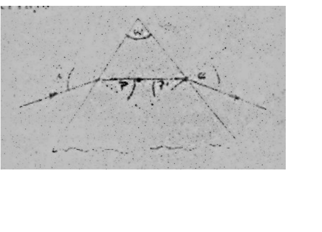
Topic: Circuits Metodi: Equivalent Circuit Reduction Competenze: Physical Reasoning Objects: Resistor Fonte: Testo (PDF) — p.2
- RANCUL, la PAMPA. - Verdi. Calcolare: a) la resistenza totale del circuito successivo. B) l’intensità tra i punti a e b del circuito V: 110 volts
Topic: Circuits Metodi: Equivalent Circuit Reduction Competenze: Physical Reasoning Objects: Resistor Fonte: Testo (PDF) — p.2
- RANCUL, the father. Green. Calculate: (a) the total resistance of the next circuit. (b) the intensity between points a and b of the circuit being V: 110 volts
Topic: Circuits Metodi: Equivalent Circuit Reduction Competenze: Physical Reasoning Objects: Resistor Fonte: Testo (PDF) — p.2
- RANCUL, LA PAMPA. VERDE. Un haz angosto de luz amarilla de sodio se propaga en el aire e incide sobre una superficie lisa de agua tal que la refracción no sea difusa con un ángulo de35º con la normal a la superficie. Determine el ángulo de refracción. Dato: el indice de refracción del agua es de 1.33.
Topic: Geometric Optics Metodi: Snell’s Law Competenze: Physical Reasoning Objects: — Fonte: Testo (PDF) — p.2
- RANCUL, la PAMPA. - Verdi. Un raggio di luce gialla di sodio si diffonde nell’aria e colpisce una superficie liscia. di acqua in modo tale che la refraczione non sia diffusa ad un angolo di 35° rispetto alla normale superficie. Determina l’angolo di rifrazione. Data: l’indice di refraczione dell’acqua è di 1,33.
Topic: Geometric Optics Metodi: Snell’s Law Competenze: Physical Reasoning Objects: — Fonte: Testo (PDF) — p.2
- RANCUL, the father. Green. A narrow beam of sodium yellow light spreads through the air and hits a smooth surface. of water such that the refraction is not diffuse at a 35° angle to the normal surface. Determine the angle of refraction. Date: the refractive index of water is 1.33.
Topic: Geometric Optics Metodi: Snell’s Law Competenze: Physical Reasoning Objects: — Fonte: Testo (PDF) — p.2
- REALICÓ, LA PAMPA. AZUL Y VERDE. Un proyectil se lanza verticalmente hacia arriba con una velocidad inicial de 80m/seg.Calcular: a) La altura máxima b) El tiempo necesario para alcanzarla c) La velocidad que alcanza a los 30 y 40 seg d) En que momento su altura será de 9000m? e) Si su masa es de 3 kg ¿Cuál es su energía potencial? f) ¿Cuál es su tiempo de vuelo? g) Realice un gráfico cualitativo de la trayectoria del móvil h) ¿Cuál es la energía cinética desarrollada cuando vuelve a su posición inicial?
Topic: Newtonian Mechanics, Conservation of Energy Metodi: Kinematic Equations, Conservation of Energy Competenze: Physical Reasoning Objects: Projectile Fonte: Testo (PDF) — p.2
- È vero, la mamma. Blu e verde. Un proiettile viene lanciato verticalmente verso l’alto con una velocità iniziale di 80m/sec.Calcolare: a) Altezza massima b) Il tempo necessario per raggiungerla (c) velocità di 30 e 40 secondi d) A che punto la sua altezza sarà di 9000 metri? e) Se il suo peso è di 3 kg, qual è la sua energia potenziale? f) Qual è il suo tempo di volo? g) Realizzare un grafico qualitativo del percorso del cellulare h) Qual è l’energia cinetica sviluppata quando ritorna alla sua posizione iniziale?
Topic: Newtonian Mechanics, Conservation of Energy Metodi: Kinematic Equations, Conservation of Energy Competenze: Physical Reasoning Objects: Projectile Fonte: Testo (PDF) — p.2
- It’s true, the father. Blue and green. A projectile is launched vertically upwards at an initial speed of 80m/sec. (a) The maximum height (b) The time required to achieve it (c) Speed up to 30 and 40 seconds (d) When will its height be 9000 m? (e) If its mass is 3 kg, what is its potential energy? (f) What is your flight time? (g) Make a qualitative chart of the mobile’s trajectory (h) What is the kinetic energy developed when it returns to its initial position?
Topic: Newtonian Mechanics, Conservation of Energy Metodi: Kinematic Equations, Conservation of Energy Competenze: Physical Reasoning Objects: Projectile Fonte: Testo (PDF) — p.2
- REALICÓ, LA PAMPA. AZUL Y VERDE. Un rayo luminoso atraviesa un prisma de índice de refracción 1,5 y ángulo de refringencia de 45º.Dicho rayo incide en un ángulo de 30º.Calcular el ángulo de desviación del rayo.
Topic: Geometric Optics Metodi: Snell’s Law Competenze: Physical Reasoning Objects: Prism Fonte: Testo (PDF) — p.2
- È vero, la mamma. Blu e verde. Un raggio luminoso attraversa un prisma di indice di refraczione 1,5 e un angolo di refraczione di 45°.Questo raggio incide su un angolo di 30°.Calcolare l’angolo di deviazione del raggio.
Topic: Geometric Optics Metodi: Snell’s Law Competenze: Physical Reasoning Objects: Prism Fonte: Testo (PDF) — p.2
- It’s true, the father. Blue and green. A light beam passes through a prism with a refractive index of 1.5 and a refractive angle of 45°. This beam is at an angle of 30°. Calculate the angle of deflection of the beam.
Topic: Geometric Optics Metodi: Snell’s Law Competenze: Physical Reasoning Objects: Prism Fonte: Testo (PDF) — p.2
- REALICÓ, LA PAMPA. AZUL Y VERDE. Una batería de 24Vde f.e.m. y 0,7Ω de resistencia interna se conecta a 3 bobinas de 15Ωde resistencia, en paralelo, y a una resistencia de 0,3Ω,en serie con el conjunto anterior.Calcular: a) La intensidad de la corriente en el circuito ;b) La intensidad en cada una de las ramas en paralelo; c) La diferencia de potencial en los bornes de la asociación en paralelo;y en los bornes de la resistencia de 0,3Ω;d)La tensión en los bornes de la batería mientras entrega corriente
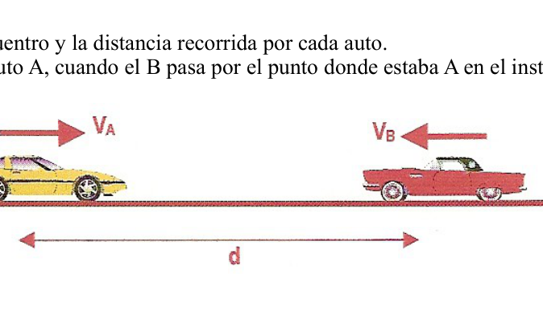
Topic: Circuits Metodi: Kirchhoff’s Laws, Equivalent Circuit Reduction Competenze: Physical Reasoning Objects: Battery, Coil, Resistor Fonte: Testo (PDF) — p.2
- È vero, la mamma. Blu e verde. Una batteria 24V di f.e.m. e 0,7Ω di resistenza interna si collega a 3 bobine di 15Ωde resistenza, in parallelo, e a una resistenza di 0,3Ω, in serie con l’insieme precedente. a) L’intensità del corrente nel circuito; b) L’intensità in ciascuna delle rami in c) la differenza di potenziale nei bordi della partnership in parallelo; e (d) La tensione nei bordi della batteria durante la consegna corrente
Topic: Circuits Metodi: Kirchhoff’s Laws, Equivalent Circuit Reduction Competenze: Physical Reasoning Objects: Battery, Coil, Resistor Fonte: Testo (PDF) — p.2
- It’s true, the father. Blue and green. A 24V battery of f.e.m. and 0,7Ω of internal resistance is connected to 3 coils of 15Ωde The resistance, in parallel, and at a resistance of 0,3Ω, in series with the above set. a) The current intensity in the circuit; b) The intensity in each of the branches in (c) the potential difference in the margins of the parallel partnership; and (d) The voltage at the battery terminals during delivery current
Topic: Circuits Metodi: Kirchhoff’s Laws, Equivalent Circuit Reduction Competenze: Physical Reasoning Objects: Battery, Coil, Resistor Fonte: Testo (PDF) — p.2
- GENERAL PICO, LA PAMPA. VERDE. Dos autos (que indentificamos como A y B) se desplazan por una carretera con velocidades de 60 Km/h y 40 Km/h en sentidos contrarios, como vemos en la figura. En un determinado instante (instante inicial) están separados una distancia de 60 Km. Determinar:
- El tiempo de encuentro y la distancia recorrida por cada auto.
- La posición del auto A, cuando el B pasa por el punto donde estaba A en el instante inicial.
Topic: Newtonian Mechanics Metodi: Kinematic Equations Competenze: Physical Reasoning Objects: — Fonte: Testo (PDF) — p.2
- Generale Picco, la PAMPA. - Verdi. Due auto (identificate come A e B) si muovono su una strada a velocità di 60 km/h e 40 km/h in direzioni opposte, come si vede nella figura. In un certo istante. (in istante iniziale) sono separati a 60 km. Determinare:
- Il tempo di incontro e la distanza percorsa da ogni auto.
- La posizione della macchina A, quando la B passa dal punto in cui A era all’istante iniziale.
Topic: Newtonian Mechanics Metodi: Kinematic Equations Competenze: Physical Reasoning Objects: — Fonte: Testo (PDF) — p.2
- General Pico, the father. Green. Two cars (which we identify as A and B) are moving along a road with speeds of 60 km/h and 40 km/h in opposite directions, as shown in the figure. In a certain instant . (initial instant) are separated by a distance of 60 km. Determine:
- Meeting time and distance traveled by each car.
- The position of car A, when B passes through the point where A was at the initial instant.
Topic: Newtonian Mechanics Metodi: Kinematic Equations Competenze: Physical Reasoning Objects: — Fonte: Testo (PDF) — p.2
- GENERAL PICO, LA PAMPA. VERDE. En un calorímetro de Cobre de 700 gr. encontramos 2 lts de agua, todo a 70ºC. Se introducen 50 gr de hielo a-7ºC. Determinar:
- Sustancias que pierden y ganan calor.
- Cantidades de calor que ganan y pierden y el tipo de calor (sensible o latente).
- Ecuación de equilibrio del calorímetro.
- Temperatura final de la mezcla Datos: Cehielo = 0,5 Kcal/Kg.ºC Lfagua = 80 Kcal/Kg. Ceagua = 1 Kcal/Kg.ºC Cecobre = 0,09 Kcal/kg.ºC
Hacer una tabla del tipo: Sustancias Tipo de Calor Cantidad de calor Ganan Pierden
Topic: Thermodynamics Metodi: First Law of Thermodynamics Competenze: Physical Reasoning Objects: Calorimeter Fonte: Testo (PDF) — p.2
- Generale Picco, la PAMPA. - Verdi. In un calometro di rame di 700 gr. Abbiamo trovato 2 litri di acqua, tutto a 70°C. Sono introdotti 50 grammi di ghiaccio a 7°C. Determinare:
- Sostanze che perdono e guadagnano calore.
- quante calore guadagnano e perdono e il tipo di calore (sensibile o latente).
- Equatoria di equilibrio del calometro.
- Temperatura finale della miscela Dati: Il calore di calore di calore di calore di calore di calore di calore di calore di calore di calore di calore di calore di calore di calore di calore di calore di calore di calore di calore di calore di calore di calore di calore di calore di calore di calore di calore di calore di calore di calore di calore di calore di calore di calore di calore di calore di calore di calore di calore di calore di calore di calore di calore di calore di calore di calore di calore di calore di calore di calore di calore di calore di calore di calore di calore di calore di calore di calore di calore di calore di calore di calore di calore di calore di calore di calore di calore di calore di calore di calore di calore di calore di calore di calore di calore di calore di calore di calore di calore di calore di calore di calore di calore di calore di calore di calore di calore di calore di calore di calore di calore di calore di calore di calore di calore di calore di calore di calore di calore di calore di calore di calore di calore di calore di calore di calore di calore di calore di calore di calore di calore di calore di calore di calore di calore di calore di calore di calore di calore di calore di calore di calore di calore di calore di calore di calore di calore di calore di calore di calore di calore di calore di calore di calore di calore di calore di calore di calore di calore di calore di calore di calore di calore di calore di calore di calore di calore di calore di calore di calore di calore di calore di calore di calore di calore di calore di calore di calore di calore di calore di calore di calore di calore di calore di calore di calore di calore di calore di calore di calore di L’acqua è di 80 Kcal/kg. Ceaagua = 1 Kcal/Kg.oC Cuccio = 0,09 Kcal/kg.oC
Fare una tabella del tipo: Sostanze Tipo di calore Quantità di calore Guadagnano Perdere
Topic: Thermodynamics Metodi: First Law of Thermodynamics Competenze: Physical Reasoning Objects: Calorimeter Fonte: Testo (PDF) — p.2
- General Pico, the father. Green. In a 700 gr. copper thermometer. We found 2 liters of water, all at 70 degrees. They ‘re coming in . 50 grams of ice at 7°C. Determine:
- Substances that lose and gain heat.
- Amounts of heat gained and lost and type of heat (sensitive or latent).
- Calorometer equilibrium equation.
- Final temperature of the mixture The data: The following table shows the following: Lfagua is 80 Kcal/kg. The following is the list of the products listed in Annex I to Regulation (EC) No 1907/2006: The following table shows the total value of the product:
Make a table like this: Substances Type of heat Amount of heat They win They lose.
Topic: Thermodynamics Metodi: First Law of Thermodynamics Competenze: Physical Reasoning Objects: Calorimeter Fonte: Testo (PDF) — p.2
- GENERAL PICO, LA PAMPA. VERDE. Un cubo de hierro con peso específico (ρ = 7,8 gr/cm3) de 5 cm de lado, se introduce en agua salada, cuyo peso específico es (ρ = 1,1 gr/cm3): Determinar:
- Volumen del cuerpo.
- Peso del cuerpo
- Empuje de Arquímedes.
- Fuerza de ascenso o descenso.
Topic: Fluid Mechanics Metodi: Hydrostatic Equilibrium Competenze: Physical Reasoning Objects: Block Fonte: Testo (PDF) — p.2
- Generale Picco, la PAMPA. - Verdi. Un cubo di ferro di peso specifico (ρ = 7,8 gr/cm3) di 5 cm di lato, viene inserito in acqua salate, il cui peso specifico è (ρ = 1,1 gr/cm3): Determinare:
- Il volume del corpo.
- Peso corporeo
- Spinta di Archimede.
- Forza di ascesa o di discesa.
Topic: Fluid Mechanics Metodi: Hydrostatic Equilibrium Competenze: Physical Reasoning Objects: Block Fonte: Testo (PDF) — p.2
- General Pico, the father. Green. A 5 cm iron cube with a specific weight (ρ = 7,8 gr/cm3) on the side is introduced into water salt, the specific weight of which is (ρ = 1,1 gr/cm3): Determine:
- Body volume. - What is it?
- Body weight
- Push by Archimedes.
- Force of ascent or descent.
Topic: Fluid Mechanics Metodi: Hydrostatic Equilibrium Competenze: Physical Reasoning Objects: Block Fonte: Testo (PDF) — p.2
- GENERAL PICO, LA PAMPA. AZUL. Desde lo alto de un edificio de 80 m de altura, se deja caer un cuerpo,y simultáneamente se lanza uno hacia arriba. a) Despreciando la fricción,cuál debe ser la velocidad de lanzamiento del segundo cuerpo para que ambos lleguen juntos al piso? b) Que distancia los separa a los 1,5 seg. del lanzamiento?
Topic: Newtonian Mechanics Metodi: Kinematic Equations Competenze: Physical Reasoning Objects: — Fonte: Testo (PDF) — p.2
- Generale Picco, la PAMPA. Blu. Da un edificio alto 80 metri, si fa cadere un corpo e si lancia simultaneamente. Uno verso l’alto. a) Sotto l’apprezzamento della friczione, quale deve essere la velocità di lancio del secondo corpo per che arrivassero tutti e due al pavimento? b) Che distanza li separa a 1,5 seg. - Il lancio?
Topic: Newtonian Mechanics Metodi: Kinematic Equations Competenze: Physical Reasoning Objects: — Fonte: Testo (PDF) — p.2
- General Pico, the father. Blue. From the top of a 50-foot building, a body is dropped, and simultaneously thrown. One up. (a) Disregarding friction, what should be the second body’s launch speed for You two get to the floor together? (b) What distance separates them at 1.5 seconds? The launch?
Topic: Newtonian Mechanics Metodi: Kinematic Equations Competenze: Physical Reasoning Objects: — Fonte: Testo (PDF) — p.2
- GENERAL PICO, LA PAMPA. AZUL. En el dibujo se observan dos cuerpos de masas m1 y m2 unidos por una cuerda inextensible, que pasa por una polea sin rozamiento. Sabiendo que el sistema se mueve en sentido horario y con una aceleración a=2,26 m/s2 , calcular: 1) el coeficiente de rozamiento entre el plano y el cuerpo 1.
- la tensión en la cuerda.
- Hacer un esquema de las interacciones en cada cuerpo.
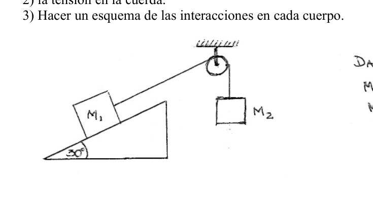
Topic: Newtonian Mechanics Metodi: Free-Body Diagram, Vector Decomposition Competenze: Physical Reasoning Objects: Block, Pulley, String, Inclined Plane Fonte: Testo (PDF) — p.2
- Generale Picco, la PAMPA. Blu. Nel disegno si vedono due corpi di massa m1 e m2 uniti da una corda inespandibile, che passa attraverso un pollo senza rotture. Sapendo che il sistema si muove in senso orario e con un’accelerazione a=2,26 m/s2, Calcolare: 1) il coefficiente di rottura tra piano e corpo 1.
- la tensione della corda.
- Sviluppare un schema delle interazioni in ogni corpo.
Topic: Newtonian Mechanics Metodi: Free-Body Diagram, Vector Decomposition Competenze: Physical Reasoning Objects: Block, Pulley, String, Inclined Plane Fonte: Testo (PDF) — p.2
- General Pico, the father. Blue. In the drawing two bodies of mass m1 and m2 are seen joined by an unextensible rope, which It goes through a pulley without a scratch. Knowing that the system moves clockwise and with an acceleration of a=2.26 m/s2, calculate: 1) the coefficient of friction between the plane and the body 1.
- the tension on the rope.
- Draw a diagram of the interactions in each body.
Topic: Newtonian Mechanics Metodi: Free-Body Diagram, Vector Decomposition Competenze: Physical Reasoning Objects: Block, Pulley, String, Inclined Plane Fonte: Testo (PDF) — p.2
- GENERAL PICO, LA PAMPA. AZUL. Un estudiante desea construir un calentador eléctrico que pueda elevar la temperatura de 1 litro de agua, inicialmente a 10ºC, hasta su ebullición, en sólo 10 minutos. a) Cuál debe ser la potencia de este hervidor? b) Si se diseña para conectarlo a 110 V ,Cuál debe ser el valor de su resistencia?
Topic: Circuits, Thermodynamics Metodi: First Law of Thermodynamics Competenze: Physical Reasoning Objects: Resistor Fonte: Testo (PDF) — p.2
- Generale Picco, la PAMPA. Blu. Uno studente vuole costruire un riscaldatore elettrico che possa sollevare la temperatura di un litro. all’acqua, inizialmente a 10°C, fino a far bollire in soli 10 minuti. a) Qual è la potenza di questo fervente? b) Se è progettato per collegarlo a 110 V, qual è il valore della sua resistenza?
Topic: Circuits, Thermodynamics Metodi: First Law of Thermodynamics Competenze: Physical Reasoning Objects: Resistor Fonte: Testo (PDF) — p.2
- General Pico, the father. Blue. A student wants to build an electric heater that can raise the temperature by 1 liter. water, initially at 10 degrees Celsius, until boiling in just 10 minutes. (a) What should be the potency of this boiler? (b) If it is designed to be connected to 110 V, what should be the value of its resistance?
Topic: Circuits, Thermodynamics Metodi: First Law of Thermodynamics Competenze: Physical Reasoning Objects: Resistor Fonte: Testo (PDF) — p.2
- GENERAL PICO, LA PAMPA. AZUL. Desde la terraza de un edificio de 40 mts. de altura, se deja caer un cuerpo en el mismo instante en que desde la base del edificio se lanza verticalmenteun segundo cuerpo hacia arriba. a) Determinar que velocidad deberíamos dar a este segundo cuerpo si deseamos que lleguen simultaneamente a tierra b) Determinar la posición del primer cuerpo en el instante en que el segundo alcanza su altura máxima así como la distancia entre ambos en el mencionado instante. c) Determinar la velocidad con que los cuerpos llegan a la base del edificio.
Topic: Newtonian Mechanics Metodi: Kinematic Equations Competenze: Physical Reasoning Objects: — Fonte: Testo (PDF) — p.2
- Generale Picco, la PAMPA. Blu. Dal terrazzo di un edificio di 40 metri. Alti, si lascia cadere un corpo in un istante. La base del palazzo è stata lanciata verticalmente da un secondo corpo verso l’alto. a) Determinare la velocità che dovremmo dare a questo secondo corpo se vogliamo che arrivi. Simultaneamente a terra b) Determinare la posizione del primo corpo nel momento in cui il secondo raggiunge la sua altezza Il numero di persone che hanno raggiunto il massimo della distanza è il numero di persone che hanno raggiunto il massimo della distanza. c) Determinare la velocità con cui i corpi raggiungono la base del edificio.
Topic: Newtonian Mechanics Metodi: Kinematic Equations Competenze: Physical Reasoning Objects: — Fonte: Testo (PDF) — p.2
- General Pico, the father. Blue. From the terrace of a 40-metre building. Height, you drop a body at the same instant. In the second body, a vertical projection is made from the base of the building. a) Determine how fast we should give this second body if we want it to arrive. simultaneously to land (b) Determine the position of the first body as soon as the second body reaches its height. maximum as well as the distance between the two at the said instant. (c) Determine the speed at which bodies reach the base of the building.
Topic: Newtonian Mechanics Metodi: Kinematic Equations Competenze: Physical Reasoning Objects: — Fonte: Testo (PDF) — p.2
- GENERAL PICO, LA PAMPA. AZUL. Dos bloques están unidos por una cuerda que pasa por una pequeña polea y descansan sobre planos sin rozamiento, como indica la figura: a) En que sentido se moverá el sistema? b) Cual es la aceleración de los bloques? c) Cual es la tensión de la cuerda?
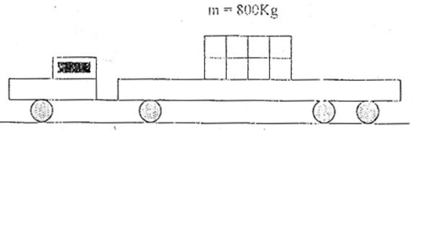
Topic: Newtonian Mechanics Metodi: Free-Body Diagram, Vector Decomposition Competenze: Physical Reasoning Objects: Block, Inclined Plane, Pulley, String Fonte: Testo (PDF) — p.2
- Generale Picco, la PAMPA. Blu. Due blocchi sono legati da una corda che passa attraverso un piccolo pole e si riposano su piastrelle senza macchia, come indicato nella figura: a) In che senso il sistema si muoverà? b) Qual è l’accelerazione dei blocchi? c) Qual è la tensione della corda?
Topic: Newtonian Mechanics Metodi: Free-Body Diagram, Vector Decomposition Competenze: Physical Reasoning Objects: Block, Inclined Plane, Pulley, String Fonte: Testo (PDF) — p.2
- General Pico, the father. Blue. Two blocks are connected by a rope that passes through a small pole and rests on it . unwrought flat, as shown in figure: (a) In what sense will the system move? (b) What is the acceleration of the blocks? (c) What is the tension of the rope?
Topic: Newtonian Mechanics Metodi: Free-Body Diagram, Vector Decomposition Competenze: Physical Reasoning Objects: Block, Inclined Plane, Pulley, String Fonte: Testo (PDF) — p.2
- GENERAL PICO, LA PAMPA. AZUL. El remolque de la figura debe viajar a una velocidad de 90 km/hora, si el coeficiente de rozamiento estático (µ) entre el remolque y la caja es de 0.15; determinar: a)La distancia mas corta en que puede acelerar para evitar que la caja se corra b)Si el camión necesita acelerar para alcanzar esa velocidad en 120 metros y se sujeta para ello la caja al camión con una cuerda, cual es la tensión de esta.
Topic: Newtonian Mechanics Metodi: Free-Body Diagram, Kinematic Equations Competenze: Physical Reasoning Objects: Block, String Fonte: Testo (PDF) — p.2
- Generale Picco, la PAMPA. Blu. Il rimorchio della figura deve viaggiare a una velocità di 90 km/h, se il coefficiente di il rottura statica (μ) tra il rimorchio e la scatola è di 0,15; determinare: a) La distanza più breve in cui si può accelerare per evitare che la cassa corra b) Se il camion deve accelerare per raggiungere tale velocità a 120 metri e si è tenuto a farlo la cassetta al camion con una corda, che è la tensione di questa.
Topic: Newtonian Mechanics Metodi: Free-Body Diagram, Kinematic Equations Competenze: Physical Reasoning Objects: Block, String Fonte: Testo (PDF) — p.2
- General Pico, the father. Blue. The figure trailer shall travel at a speed of 90 km/h if the coefficient of The static friction (μ) between the trailer and the box is 0,15; determine: (a) The shortest distance you can accelerate to prevent the box from running (b) If the truck needs to accelerate to reach that speed at 120 metres and is bound for it the box to the truck with a rope, which is the voltage of this one.
Topic: Newtonian Mechanics Metodi: Free-Body Diagram, Kinematic Equations Competenze: Physical Reasoning Objects: Block, String Fonte: Testo (PDF) — p.2
- VALLE DE UCO, MENDOZA. VERDE. Un estudiante come una comida de 2000 calorías ( dietéticas ). Él quiere hacer la misma cantidad de trabajo levantando pesas de 50 kg. En el gimnasio. ¿ Cuántas veces debe levantar las pesas para gastar esa energía?. Suponga que levanta las pesas a una distancia de 2 m. y que no se pierde energía al bajarlas al piso. 1 cal dietética = 10 3cal. ¿Cuánto tiempo le insumirá gastar esa energía?
Topic: Conservation of Energy Metodi: Conservation of Energy Competenze: Physical Reasoning Objects: — Fonte: Testo (PDF) — p.2
- Vallo di Uco, Menzogna. - Verdi. Uno studente mangia un pasto di 2000 calorie (diete). Lui vuole fare lo stesso. quantità di lavoro da svolgere alzando 50 kg. - In palestra. Quante volte deve alzare le mani ?
- E’ un peso per spendere quell’energia? Supponiamo che lei sollevino i pesi a 2 metri di distanza. e che non si perde energia quando le scende al pavimento. 1 cal calore dietetico = 10 3 calori. Quanto tempo ci vuole per spendere quell’energia?
Topic: Conservation of Energy Metodi: Conservation of Energy Competenze: Physical Reasoning Objects: — Fonte: Testo (PDF) — p.2
- Valley of the UCO, MENDOS. Green. A student eats a 2,000-calorie meal (dietary). He wants to do the same. amount of work by lifting weights of 50 kg. In the gym. How many times do you have to lift your hands ? Weighs to spend that energy? Suppose you lift weights at a distance of 2 meters. And that I don ‘t know . It loses energy when you put them on the floor. 1 dietary cal = 10 3 calories. How long will it take you to spend that energy?
Topic: Conservation of Energy Metodi: Conservation of Energy Competenze: Physical Reasoning Objects: — Fonte: Testo (PDF) — p.2
- VALLE DE UCO, MENDOZA. VERDE. El mecanismo de lanzamiento de una escopeta de juguete consta de un resorte cuya constante de fuerza no se conoce, al comprimir el resorte una distancia de 0,12 m., el fusil es capaz de lanzar un proyectil de 20 gr. a una altura máxima de 20 m. cuando se dispara verticalmente desde el reposo. Despreciando todas las fuerzas de resistencia: A) Determine el valor de la constante del resorte. B) Calcúlese la rapidez del proyectil cuando éste pasa a través de la posición de equilibrio del resorte (en donde x=0)
Topic: Conservation of Energy Metodi: Conservation of Energy, Hooke’s Law Competenze: Physical Reasoning Objects: Spring, Projectile Fonte: Testo (PDF) — p.2
- Vallo di Uco, Menzogna. - Verdi. Il meccanismo di lancio di una fucile da giocattoli consiste in una spruzza la cui costante velocità di lancio è di circa Non si sa la forza, comprimendo la sprint a una distanza di 0,12 m, il fucile è in grado di lanciare un proiettore di 20 gr. ad un’altezza massima di 20 m. quando si spara verticalmente dal riposo. Scommetto tutte le forze di resistenza: A) Determina il valore della costante di primavera. B) Calcolare la velocità del proiettile quando passa attraverso la posizione di equilibrio di primavera (dove x=0)
Topic: Conservation of Energy Metodi: Conservation of Energy, Hooke’s Law Competenze: Physical Reasoning Objects: Spring, Projectile Fonte: Testo (PDF) — p.2
- Valley of the UCO, MENDOS. Green. The mechanism of a toy rifle launch consists of a spring whose constant of Force unknown, when compressing the spring a distance of 0.12 m., the rifle is capable of launching a 20 gr projectile. at a maximum height of 20 m. When you shoot vertically from rest. Disregarding all the forces of resistance: (a) Determine the value of the spring constant. B) Calculate the velocity of the projectile as it passes through the equilibrium position of the spring (where x=0)
Topic: Conservation of Energy Metodi: Conservation of Energy, Hooke’s Law Competenze: Physical Reasoning Objects: Spring, Projectile Fonte: Testo (PDF) — p.2
- VALLE DE UCO, MENDOZA. VERDE. El circuito de una malla contiene dos resistencias y dos fuentes de fem . Las resistencias internas de las baterías se han despreciado. A) Determínese la corriente del circuito. B) ¿Cuál es la potencia perdida en cada resistencia?
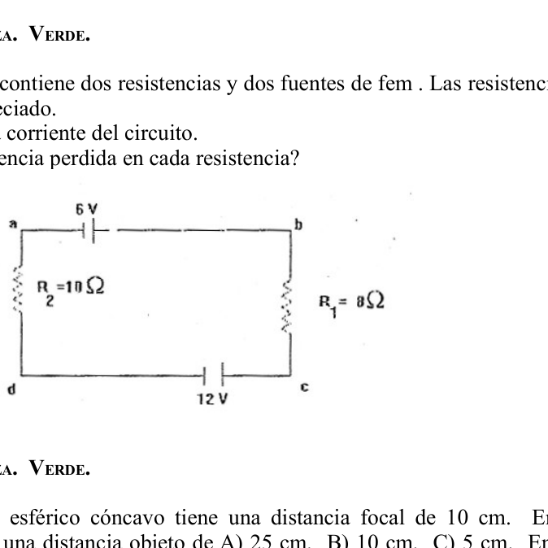
Topic: Circuits Metodi: Kirchhoff’s Laws Competenze: Physical Reasoning Objects: Resistor, Battery Fonte: Testo (PDF) — p.2
- Vallo di Uco, Menzogna. - Verdi. Il circuito di una rete contiene due resistenze e due fonti di fem . Le resistenze interne Le batterie sono state disprezzate. A) Determina il corrente del circuito. B) Qual è la potenza persa in ogni resistenza?
Topic: Circuits Metodi: Kirchhoff’s Laws Competenze: Physical Reasoning Objects: Resistor, Battery Fonte: Testo (PDF) — p.2
- Valley of the UCO, MENDOS. Green. The circuit of a mesh contains two resistors and two sources of fem . Internal resistance The batteries have been scorned. (A) Determine the current of the circuit. B) What is the power lost in each resistance?
Topic: Circuits Metodi: Kirchhoff’s Laws Competenze: Physical Reasoning Objects: Resistor, Battery Fonte: Testo (PDF) — p.2
- VALLE DE UCO, MENDOZA. VERDE. Suponga que un espejo esférico cóncavo tiene una distancia focal de 10 cm. Encuentre la posición de la imagen para una distancia objeto de A) 25 cm. B) 10 cm. C) 5 cm. En cada caso describa la imagen.
Topic: Geometric Optics Metodi: Thin Lens & Mirror Equation Competenze: Physical Reasoning Objects: Mirror Fonte: Testo (PDF) — p.2
- Vallo di Uco, Menzogna. - Verdi. Supponiamo che uno specchio sfero concave abbia una distanza focale di 10 cm. Trova la posizione dell’immagine per una distanza oggetto di A) 25 cm. B) 10 cm. C) 5 cm. In ogni caso descrive l’immagine.
Topic: Geometric Optics Metodi: Thin Lens & Mirror Equation Competenze: Physical Reasoning Objects: Mirror Fonte: Testo (PDF) — p.2
- Valley of the UCO, MENDOS. Green. Suppose a concave spherical mirror has a focal length of 10 cm. Find the one . position of the image for an object distance of A) 25 cm. B) 10 cm. C) 5 cm. In each case . describe the image.
Topic: Geometric Optics Metodi: Thin Lens & Mirror Equation Competenze: Physical Reasoning Objects: Mirror Fonte: Testo (PDF) — p.2
- CIUDAD DE MENDOZA, MENDOZA. AZUL. Marcelo pensaba si la Tierra fuese perfectamente esférica ¿cuál debería ser el valor de la densidad de la Tierra, para que en el Ecuador los cuerpos estuvieran sometidos solamente a la acción de la fuerza peso.
Constantes físicas
- g = 9,8 m / s
- CeH20 = 1 cal / g. ºC
- 1 cal = 4,186 J
- R = 8,31441 l . at / ºK . mol
- G = 6,672 . 10-11 N . m2 / kg2
Topic: Gravitation Metodi: Newton’s Law of Gravitation, Free-Body Diagram Competenze: Physical Reasoning Objects: Planet Fonte: Testo (PDF) — p.2
- Città di Menzogna, Menzogna. Blu. Marcelo pensava che se la Terra fosse perfettamente sferica, qual sarebbe il valore della Terra? La densità della Terra, così che nell’Ecuatore i corpi fossero sottoposti solo alla azione della forza del peso.
Costanti fisiche
- g = 9,8 m / s
- CeH20 = 1 cal / g. ºC
- 1 cal = 4.186 J
- R = 8,31441 l . at / ºK . Mol
- G = 6,672 . 10-11 N . m2 / kg2
Topic: Gravitation Metodi: Newton’s Law of Gravitation, Free-Body Diagram Competenze: Physical Reasoning Objects: Planet Fonte: Testo (PDF) — p.2
- The city of mendoza, mendoza. Blue. Marcelo thought if the Earth were perfectly spherical, what should the value of the Earth be? The first is that the Earth’s density is so high that in the equator bodies are subject only to the the action of the force of gravity.
The following is the list of the following:
- g = 9,8 m / s
- CeH20 = 1 cal / g. ºC
- 1 cal = 4,186 J
- R = 8,31441 l . at / ºK . Other
- G = 6,672 . 10-11 N . m2 / kg2
Topic: Gravitation Metodi: Newton’s Law of Gravitation, Free-Body Diagram Competenze: Physical Reasoning Objects: Planet Fonte: Testo (PDF) — p.2
- CIUDAD DE MENDOZA, MENDOZA. AZUL. En un hornillo eléctrico las resistencias son iguales y están conectadas según la combinación representada en la figura. Esta combinación se conecta a la red en los puntos 1 y 2 haciendo hervir después de cierto tiempo 500 g de agua. ¿Qué cantidad de agua se puede hervir durante el mismo tiempo, si la combinación de las resistencias del hornillo eléctrico se conecta a la red en los puntos 1 y 3? La temperatura inicial del agua es la misma en ambos casos. Se desprecian las pérdidas térmicas. Constantes físicas
- g = 9,8 m / s
- CeH20 = 1 cal / g. ºC
- 1 cal = 4,186 J
- R = 8,31441 l . at / ºK . mol
- G = 6,672 . 10-11 N . m2 / kg2
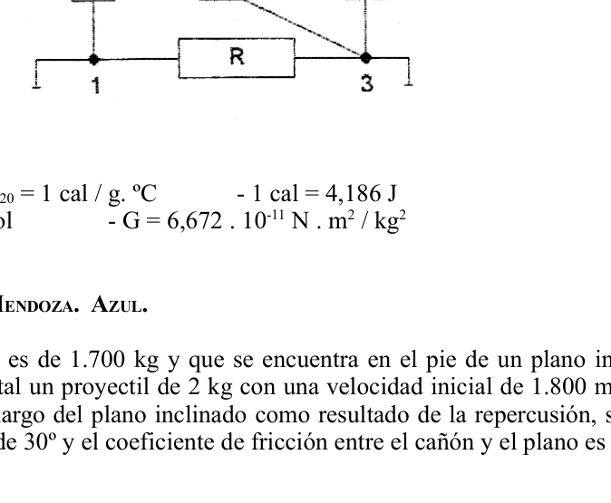
Topic: Circuits, Thermodynamics Metodi: Equivalent Circuit Reduction, First Law of Thermodynamics Competenze: Physical Reasoning Objects: Resistor Fonte: Testo (PDF) — p.2
- Città di Menzogna, Menzogna. Blu. In un forno elettrico le resistenze sono uguali e sono collegate a seconda della combinazione rappresentata nella figura. Questa combinazione si collega alla rete ai punti 1 e 2 facendo bollire dopo un certo periodo di tempo 500 g di acqua. Quanta acqua può essere bollita durante la stessa giornata? tempo, se la combinazione delle resistenze del forno elettrico si collega alla rete nei punti 1 y 3? La temperatura iniziale dell’acqua è la stessa in entrambi i casi. I perditi sono disprezzati.
- Termici. Costanti fisiche
- g = 9,8 m / s
- CeH20 = 1 cal / g. ºC
- 1 cal = 4.186 J
- R = 8,31441 l . at / ºK . Mol
- G = 6,672 . 10-11 N . m2 / kg2
Topic: Circuits, Thermodynamics Metodi: Equivalent Circuit Reduction, First Law of Thermodynamics Competenze: Physical Reasoning Objects: Resistor Fonte: Testo (PDF) — p.2
- The city of mendoza, mendoza. Blue. In an electric furnace the resistance is equal and is connected according to the combination represented in the figure. This combination is connected to the grid at points 1 and 2 by boiling After a while 500 g of water. How much water can be boiled during the same time? time, if the combination of the electrical furnace resistance is connected to the grid at the points 1 y 3? The initial temperature of the water is the same in both cases. Losses are despised . heat. The following is the list of the following:
- g = 9,8 m / s
- CeH20 = 1 cal / g. ºC
- 1 cal = 4,186 J
- R = 8,31441 l . at / ºK . Other
- G = 6,672 . 10-11 N . m2 / kg2
Topic: Circuits, Thermodynamics Metodi: Equivalent Circuit Reduction, First Law of Thermodynamics Competenze: Physical Reasoning Objects: Resistor Fonte: Testo (PDF) — p.2
- CIUDAD DE MENDOZA, MENDOZA. AZUL. De un cañón cuya masa es de 1.700 kg y que se encuentra en el pie de un plano inclinado, se dispara en dircción horizontal un proyectil de 2 kg con una velocidad inicial de 1.800 m/s. ¿A qué altura subirá el cañón a lo largo del plano inclinado como resultado de la repercusión, si el ángulo de inclinación del plano es de 30º y el coeficiente de fricción entre el cañón y el plano es de 0,2. Constantes físicas
- g = 9,8 m / s
- CeH20 = 1 cal / g. ºC
- 1 cal = 4,186 J
- R = 8,31441 l . at / ºK . mol
- G = 6,672 . 10-11 N . m2 / kg2
Topic: Conservation of Momentum, Conservation of Energy Metodi: Conservation of Momentum, Conservation of Energy, Free-Body Diagram Competenze: Physical Reasoning Objects: Inclined Plane, Projectile Fonte: Testo (PDF) — p.2
- Città di Menzogna, Menzogna. Blu. Un cannone di 1.700 kg di massa, situato al piede di un piano inclinato, è lancia in direzione orizzontale un proiettile da 2 kg con una velocità iniziale di 1.800 m/s. - A cosa? L’altezza aumenterà il cannone lungo il piano inclinato come risultato della ripercussione, se l’angolo di inclinamento del piano è di 30° e il coefficiente di attrito tra cannone e piano è di 0,2. Costanti fisiche
- g = 9,8 m / s
- CeH20 = 1 cal / g. ºC
- 1 cal = 4.186 J
- R = 8,31441 l . at / ºK . Mol
- G = 6,672 . 10-11 N . m2 / kg2
Topic: Conservation of Momentum, Conservation of Energy Metodi: Conservation of Momentum, Conservation of Energy, Free-Body Diagram Competenze: Physical Reasoning Objects: Inclined Plane, Projectile Fonte: Testo (PDF) — p.2
- The city of mendoza, mendoza. Blue. From a cannon of 1,700 kg and lying at the foot of an inclined plane, it is firing a 2 kg projectile in a horizontal direction with an initial speed of 1,800 m/s. What? height will raise the barrel along the inclined plane as a result of impact, if angle The slope of the plane is 30° and the coefficient of friction between the barrel and the plane is 0.2. The following is the list of the following:
- g = 9,8 m / s
- CeH20 = 1 cal / g. ºC
- 1 cal = 4,186 J
- R = 8,31441 l . at / ºK . Other
- G = 6,672 . 10-11 N . m2 / kg2
Topic: Conservation of Momentum, Conservation of Energy Metodi: Conservation of Momentum, Conservation of Energy, Free-Body Diagram Competenze: Physical Reasoning Objects: Inclined Plane, Projectile Fonte: Testo (PDF) — p.2
- JUNÍN, MENDOZA. VERDE. Pesando un pescado en un elevador. Una persona pesa un pescado con una balanza de resorte sujeta al techo de un elevador, como se muestra en la figura.
Si el peso verdadero del pescado es de 40 N, calcular: a) el peso aparente del pescado cuando el elevador se acelera hacia arriba con una aceleración a = 2 m/s2. b) el peso aparente del pescado cuando el elevador se acelera hacia abajo con una aceleración a = 2 m/s2.
Topic: Newtonian Mechanics Metodi: Free-Body Diagram Competenze: Physical Reasoning Objects: Spring Fonte: Testo (PDF) — p.2
- Giunini, menzogna. - Verdi. Pesando un pesce in un ascensore. Una persona pesa un pesce con una bilancia di primavera attaccata al soffitto di un ascensore, come se mostra nella figura.
Se il pesce è pesato in 40 N, calcolare: a) il peso apparente del pesce quando l’ascensore si accelera verso l’alto con un’accelerazione a = 2 m/s2. b) il peso apparente del pesce quando l’ascensore si accelera verso il basso con un’accelerazione a = 2 m/s2.
Topic: Newtonian Mechanics Metodi: Free-Body Diagram Competenze: Physical Reasoning Objects: Spring Fonte: Testo (PDF) — p.2
- June, the moon. Green. Weighing a fish in an elevator. A person weighs a fish with a spring scale attached to the ceiling of an elevator, as they are It’s shown in the figure.
If the true weight of the fish is 40 N, calculate: (a) the apparent weight of the fish when the elevator is accelerated upwards with an acceleration a = 2 m/s2. (b) the apparent weight of the fish when the elevator is accelerated downwards with an acceleration a = 2 m/s2.
Topic: Newtonian Mechanics Metodi: Free-Body Diagram Competenze: Physical Reasoning Objects: Spring Fonte: Testo (PDF) — p.2
- JUNÍN, MENDOZA. VERDE. Aplicando las reglas de Kirchoff. Determínense las corrientes I1, I2, e I3 en el circuito de la figura:
Topic: Circuits Metodi: Kirchhoff’s Laws Competenze: Physical Reasoning Objects: Resistor, Battery Fonte: Testo (PDF) — p.2
- Giunini, menzogna. - Verdi. Applicando le regole di Kirchoff. Determina i correnti I1, I2 e I3 nel circuito della figura:
Topic: Circuits Metodi: Kirchhoff’s Laws Competenze: Physical Reasoning Objects: Resistor, Battery Fonte: Testo (PDF) — p.2
- June, the moon. Green. Applying Kirchoff’s rules. Determine the currents I1, I2 and I3 in the circuit in the figure:
Topic: Circuits Metodi: Kirchhoff’s Laws Competenze: Physical Reasoning Objects: Resistor, Battery Fonte: Testo (PDF) — p.2
- JUNÍN, MENDOZA. VERDE. La refracción de la luz. Dado un juego de vidrio, cuyo índice de refracción es de 1,5 y de agua, cuyo índice de refracción es 1,3; rodeados de aire, como lo indica la figura. Calcular el ángulo con que debe incidir el rayo en la cara AB para que emerja rasante a la cara superior CD.
Topic: Geometric Optics Metodi: Snell’s Law Competenze: Physical Reasoning Objects: — Fonte: Testo (PDF) — p.2
- Giunini, menzogna. - Verdi. La refraczione della luce. Dato un gioco di vetro, il cui indice di refraczione è di 1,5 e di acqua, il cui indice di refraczione 1,3; circondati da aria, come indicato nella figura. Calcolare l’angolo con cui il raggio deve incidere sul viso AB per far emergere rasante sul viso superiore CD.
Topic: Geometric Optics Metodi: Snell’s Law Competenze: Physical Reasoning Objects: — Fonte: Testo (PDF) — p.2
- June, the moon. Green. The refraction of light. Given a glass set, whose refractive index is 1.5 and water, whose refractive index is 1.3; surrounded by air, as shown in the figure. Calculate the angle at which the beam must strike the face AB so that it emerges flat on the face The top CD.
Topic: Geometric Optics Metodi: Snell’s Law Competenze: Physical Reasoning Objects: — Fonte: Testo (PDF) — p.2
- CUTRAL-CÓ Y PLAZA HUINCUL, NEUQUÉN. VERDE. Un percutor a gas… Se diseña un percutor como muestra el esquema formado básicamente por un cilindro hueco y un émbolo de metal sólido colocado en la cavidad del cilindro (dichas medidas son a 26 º C). Para su funcionamiento se llena con 2,03 gramos de anhídrido carbónico. El émbolo tiene un mecanismo de control de tal forma que sujeta perfectamente y se libera a la presión que se desee. Aunque tenemos algunas dudas que nos interesaría que nos responda: a) ¿Qué presión soportaría el émbolo internamente si después del llenado se incrementa la temperatura a 27 º C? (Considere el comportamiento del gas como ideal). b) Si el émbolo sufre una variación de su volumen debido a la temperatura (y despreciando cualquier otra consideración con respecto a las demás piezas) presionando las paredes del mismo, con un valor que se puede calcular mediante la siguiente relación: donde K es una constante y ∆r es el incremento de radio. Ahora, usted libera el mecanismo de control (que se traba ni bien llega al final del percutor) ¿a qué altura se elevará la masa del péndulo que se encuentra enfrente del percutor para realizar pruebas? c) Si se le proporciona un mecanismo para elevar la temperatura del contenido del cilindro con una eficiencia del 75% ¿qué cantidad de calor se requerirá para lograr que el péndulo se eleve a 60 cm sobre el suelo? d) ¿Cuál es ahora la presión del gas si la temperatura paso a 29 ºC? Algunos datos que pueden resultar útiles: Masa del Péndulo 200 gramos Peso molecular del CO2 44 gramos (relativos) Coeficiente de dilatación lineal para el material del émbolo 2 . 10-6 (º C) -1 K para el material del émbolo 1,5 .102 N / mm2 Calor especifico a volumen constante del CO2 0,156 Cal . (g. º C)-1 Coeficiente de rozamiento del émbolo con el cilindro. (Dinámico) µk = 0,31
Presión atmosférica Pa = 1 Atmosférica Aceleración de la gravedad 9,8 m/seg2
Topic: Thermodynamics Metodi: Ideal Gas Law, First Law of Thermodynamics, Conservation of Energy Competenze: Physical Reasoning Objects: Cylinder, Piston, Gas, Pendulum Fonte: Testo (PDF) — p.2
- CUTRAL-CO E PLAZA HUINCUL, NY. - Verdi. Un percutore a gas… Un percutore viene progettato come mostra lo schema formato fondamentalmente da un cilindro vuoto e un emblema di metallo solido inserito nella cavità del cilindro (di queste misure sono a 26 o C). Per il suo funzionamento è riempito di 2,03 grammi di anidride carbonica. L’imbolo ha un meccanismo di controllo in modo che si attacca perfettamente e si libera dalla la pressione desiderata. Anche se abbiamo qualche dubbio che ci sarebbe interessante che ci risponda: a) Che pressione il bacino sopporterebbe internamente se dopo il riempimento si aumentasse la pressione di Temperatura a 27 o C? (Considera il comportamento del gas come ideale). b) Se l’imbolo subisce una variazione del volume a causa della temperatura (e il disprezzo) (c) pressare i muri del di cui sopra: dove K è una costante e ∆r è l’aumento di radio. Ora, rilasciate il meccanismo di controllo (che non funziona né arriva fino alla fine del percutore) a che altezza si alzerà la massa del pendolo che si trova di fronte al percutore per eseguire prove? c) Se viene fornito un meccanismo per elevare la temperatura del contenuto del cilindro con Un’efficienza del 75%: quanto calore è necessario per far salire il pendolo? 60 cm sopra il pavimento? d) Qual è ora la pressione del gas se la temperatura passa a 29 oC? Alcuni dati che possono essere utili: Massa del pendolo 200 grammi Peso molecolare del CO2 44 grammo (relativi) Coefficiente di dilatazione lineare per il materiale dell’embolo 2 . 10-6 (º C) -1 K per il materiale dell’imbolo 1,5 .102 N / mm2 Calore specifico a volume costante di CO2 0,156 cal . (g. º C)-1 Coefficiente di rasatura dell’imbolo con il cilindro. (Dinamica) µk = 0,31
Pressione atmosferica Pa = 1 Atmosfera Accelerazione della gravità 9,8 m/sec2
Topic: Thermodynamics Metodi: Ideal Gas Law, First Law of Thermodynamics, Conservation of Energy Competenze: Physical Reasoning Objects: Cylinder, Piston, Gas, Pendulum Fonte: Testo (PDF) — p.2
- CUTRAL-CÓ and HUNCUL Square, NY. Green. A gas performer… A percutor is designed as shown in the diagram consisting basically of a hollow cylinder and a solid metal embolism placed in the cylinder cavity (these measurements are at 26 or C). For Its operation is filled with 2,03 grams of carbon dioxide. The embolus has a control mechanism such that it holds perfectly and is released to the pressure as desired. Although we have some doubts that we would be interested in you answering: (a) What pressure would the container withstand internally if the pressure after filling increases? temperature at 27 or C? (Consider the behavior of the gas as ideal). (b) If the embolus is subject to a change in its volume due to temperature (and neglect) (i) pressing the walls of the building. itself, with a value that can be calculated by the following ratio: where K is a constant and ∆r is the radius increase. Now, you release the control mechanism (which works even well reaching the end of the performer) to how high the pendulum mass in front of the performer will be raised to perform
- What? (c) If a mechanism is provided to raise the temperature of the cylinder contents by an efficiency of 75%, how much heat will be required to get the pendulum to rise to 60 cm above the ground? (d) What is the pressure of the gas now if the temperature goes up to 29 oC? Some data that may be useful: Mass of the pendulum 200 grams Molecular weight of CO2 44 grams (relative) Linear dilation coefficient for the the material of the embossing 2 . 10-6 (º C) -1 K for the material of the embossing 1,5 .102 N / mm2 Specific heat at constant volume of CO2 It ‘s 0.156 cal . (g. º C)-1 The coefficient of friction of the embolus with the cylinder. (Dynamic) µk = 0,31
Air pressure Pa = 1 atmospheric Acceleration of gravity 9,8 m/s2
Topic: Thermodynamics Metodi: Ideal Gas Law, First Law of Thermodynamics, Conservation of Energy Competenze: Physical Reasoning Objects: Cylinder, Piston, Gas, Pendulum Fonte: Testo (PDF) — p.2
- CUTRAL-CÓ Y PLAZA HUINCUL, NEUQUÉN. VERDE. Una de espías… James es el segundo mejor agente secreto del centro de inteligencia contra el crimen, lamentablemente el primer agente murió en la misión de desactivar la bomba nuclear con la que el malvado doctor “S” pretende destruir la ciudad. Antes de morir el agente envió los siguientes datos: La bomba se encuentra en su cuartel subterráneo (lógicamente ya abandonado por el doctor y con un dispositivo de activación temporal en marcha), cualquier detección de intrusos detonara el artefacto. a) Al entrar en la primera sala hay un sensor que detecta la emisión del cuerpo humano. James tiene un traje con el cual puede regular la temperatura que tiene su piel y ,además, saber que radiación emite. (El mecanismo de control del traje funciona marcándole cuantos grados centígrados bajar o subir). Si el control del traje le indica que esta emitiendo 125 J por segundo ¿Qué deberá hacer para evitar ser detectado? (Ver ecuación de emisividad en cuadro aparte ) b) Logra así pasar a la segunda sala, en la cual se encuentra el mecanismo de control del sensor con una batería inamovible dispuesta en la habitación de la siguiente forma: Pero para abrir la segunda puerta, el agente X dejó expresas instrucciones donde indica que “se deber lograr que una corriente de 0,375 ampares llegue al contacto que controla la cerradura electrónica”, esto desactivara inmediatamente la bomba. Nuestro héroe solo cuenta con dos rollos de alambre de 6 m (uno de carbón y otro de alumnio) y otro de aleación cuya resistividad es despreciable y de longitud de 12 m. Lógicamente al manipular los cables con el traje en pleno proceso de desactivación la temperatura de los mismos cambiará. ¿Qué deberá hacer para resolver la situación si el incremento de temperatura no debe afectar los cálculos? Algunos datos que pueden resultar útiles: Ecuación de Emisividad suponiendo un superficie negra ( A= área) ∆Q / ∆t = e .σ . A .(T4 – T04) Constantes para la ecuación σ = 5,67 . 10-8 W / (m2 . K4) e = 0,85 Temperatura de la piel en el cuerpo humano (Aprox.) 37 º C
Superficie del cuerpo 1,4 m2 Coeficiente térmico de la resistencia de los materiales de los alambres αAl = 3 , 9.10-3 (º C)-1 αC = -0 , 5.10-3 (º C)-1 Resistividad específica de los materiales sin importancia de temperatura (). ρAl = 0,49 .10-4 Ω m ρC = 5.10-4 Ω.m Diámetro de sección de los alambres 10 mm () Valores alterados para la resolución del problema.
Topic: Thermodynamics, Circuits Metodi: First Law of Thermodynamics, Kirchhoff’s Laws Competenze: Physical Reasoning Objects: Wire Fonte: Testo (PDF) — p.2
- CUTRAL-CO E PLAZA HUINCUL, NY. - Verdi. Una delle spie James è il secondo miglior agente segreto del Centro di Intelligence contro il crimine. Purtroppo il primo agente è morto nella missione di disattivare la bomba nucleare con cui il Il malvagio dottore vuole distruggere la città. Prima di morire l’agente ha inviato i seguenti dati: La bomba si trova nel suo quartier generale sotterraneo (logicamente già abbandonato dal medico e con un dispositivo di attivazione temporanea in funzione), qualsiasi rilevamento di intrusi detonerà il
- Un artefatto. a) Entrando nella prima sala c’è un sensore che rileva l’emissione del corpo umano. James. ha un vestito con cui può regolare la temperatura della sua pelle e, inoltre, sapere che emette radiazioni. (Il meccanismo di controllo del vestito funziona segnando quanti gradi) a circa 2 °C (sotto o su). Se il controllo del vestito indica che sta emettendo 125 J al secondo Cosa deve fare per evitare di essere scoperto? (Vedere l’equazione di emissività in tabella separata) b) Si può quindi passare alla seconda sala, in cui si trova il meccanismo di controllo del sensore con una batteria immutabile disposta nella stanza come segue: Ma per aprire la seconda porta, l’agente X ha lasciato istruzioni espresse in cui dice che
- che un flusso di 0,375 ampere sia raggiunto al contatto che controlla la serratura.
- E’ un’elettronica. - Questo spegnerà immediatamente la bomba. Il nostro eroe ha solo due volumi . di 6 m di filo (uno di carbone e un altro di aluminio) e di un’altra di alluminio la cui resistività è scarsa e lunga 12 m. Logicamente , manovra i cavi con il completo vestito . processo di disattivazione la temperatura di questi cambierà. Cosa dovrà fare per risolvere la situazione se l’aumento della temperatura non deve influenzare i calcoli? Alcuni dati che possono essere utili: Equazione di emissione supponendo un superficie nera (A= area) ∆Q / ∆t = e .σ . A .(T4 – T04) Costanti per l’equazione σ = 5,67 . 10-8 W / (m2 . K4) e = 0,85 Temperatura della pelle in corpo (Approx.) 37 º C
Superficie del corpo 1,4 m2 Coefficiente termico della resistenza dei materiali per fili αAl = 3 , 9.10-3 (o C)-1 αC = -0 , 5.10-3 (º C)-1 Resistenza specifica dei materiali non è importante per la temperatura (). R = 0,49 .10-4 Ω m ρC = 5.10-4 Ω.m Diametro di sezione dei fili 10 mm () Valori alterati per risolvere il problema.
Topic: Thermodynamics, Circuits Metodi: First Law of Thermodynamics, Kirchhoff’s Laws Competenze: Physical Reasoning Objects: Wire Fonte: Testo (PDF) — p.2
- CUTRAL-CÓ and HUNCUL Square, NY. Green. One of the spies. James is the second best-known secret agent in the crime-control intelligence center. Unfortunately, the first agent was killed on the mission to deactivate the nuclear bomb that the The evil doctor is intent on destroying the city. Before he died, the agent sent the following data: The bomb is in his underground barracks (logically already abandoned by the doctor and With a temporary activation device in place , any detection of intruders would detonate the device . The artifact. (a) When entering the first room there is a sensor that detects the emission from the human body. James . You have a suit that you can use to regulate the temperature of your skin and, furthermore, know that It emits radiation. (The suit control mechanism works by marking you how many degrees) (Centigrade down or up). If the suit control tells you that you ‘re emitting 125 J per second What should you do to avoid detection? (See emissivity equation in separate table) (b) It is thus possible to move to the second room, where the sensor control mechanism is located. with a stationary battery arranged in the room as follows: But to open the second door, Agent X left explicit instructions indicating that You must get a current of 0.375 ampere to the lock control contact. electronics, this would immediately deactivate the pump. Our hero only has two rolls . Of a width of 6 m (one of coal and one of aluminium) and of an alloy with a resistance of of a length of 12 m. Logically , by manipulating the wires with the suit in full . The temperature of the cells will change. What should you do to resolve this? the situation if the temperature rise should not affect the calculations? Some data that may be useful: Emissions equation assuming a black surface (A= area) ∆Q / ∆t = e .σ . A .(T4 – T04) Constants for the equation σ = 5,67 . 10-8 W / (m2 . K4) e = 0,85 Skin temperature in the body Human (approx.) 37 º C
Body surface 1,4 m2 Thermal coefficient of resistance of the Wire materials αAl = 3 , 9.10-3 (or C) - 1 αC = -0 , 5.10-3 (º C)-1 Specific resistance of materials without temperature difference (). The following table shows the results of the calculations: ρC = 5.10-4 Ω.m The diameter of the section of the wire 10 mm () Changed values for problem solving.
Topic: Thermodynamics, Circuits Metodi: First Law of Thermodynamics, Kirchhoff’s Laws Competenze: Physical Reasoning Objects: Wire Fonte: Testo (PDF) — p.2
- CUTRAL-CÓ Y PLAZA HUINCUL, NEUQUÉN. VERDE. Otra esfera y un cilindro (pero con un poco de liquido…) Dado el siguiente sistema hidráulico, que consta de un recipiente cilíndrico (otra vez…!!!) en el cual se coloca una esfera no maciza, y que se le ha practicado un orificio en la parte inferior (del recipiente) para que pueda luego fluir el agua. Se pide: a) Determinar la relación: e i r r R = para que la esfera hueca construida de un cierto material de peso específico 1,8 g / cm3, flote, según su plano medio siendo el fluido en el cual flota, agua. (ri es el radio interno de la esfera y re el externo). b) Ahora calcule las dimensiones internas, espesor y el peso sabiendo que el diámetro externo de la esfera es de 15 mm. c) Calcular la velocidad en la salida del orificio de diámetro 1,5 mm, determinado el caudal. Gráfique el mismo en función del tiempo, ¿A qué conclusión llega, teniendo en cuenta la hipótesis simplificativa que suele realizarse para el cálculo de la velocidad? d) Nosotros no estabamos contentos con el simple cálculo, así es que decidimos realizar la experiencia empíricamente obteniendo una tabla de valores de la variación de la altura con respecto al tiempo, expresada de la siguiente manera: H [mm] T [Seg.] 150 0 140 28 130 56 120 87 110 119 100 151 90 187 80 224 70 263 60 308
50 357 40 413 30 477 20 575 10 763 Si la ley de variación de la altura en función del tiempo creemos que responde a una ecuación cuadrática a la cual se llega por medio de un procedimiento matemático en donde se resuelve el siguiente sistema de ecuaciones: 3 2 2 1 0 2 3 2 2 1 0 2 2 1 0 T b T b T b HT T b T b T b HT T b T b N b H ∑ ∑ ∑ ∑ ∑ ∑ ∑ ∑ ∑ ∑ ∑ + ⋅ + ⋅
⋅ + ⋅
⋅ + ⋅
de donde se pueden obtener los coeficientes para generar la siguiente función de la altura con la relación al tiempo, (N es la cantidad de mediciones): 2 2 1 0 ) ( T b T b b T H ⋅ + ⋅ +
de que manera se modifica lo calculado en el inciso c). Recalcular y gráficar lo solicitado anteriormente en dicho inciso. Sugerencia: para realizar el sistema de ecuaciones mediante la metodología antes mencionada conviene realizar una tabla con las potencias pedidas para luego calcular sus totales y de esta manera se ahorran tiempos y se pueden evitar errores. Tabla con algunos datos que pueden resultar útiles: Densidad del agua 1 g / cm3 Presión atmosférica Pa = 1 Atmosférica Aceleración de la gravedad 9,8 m/seg2
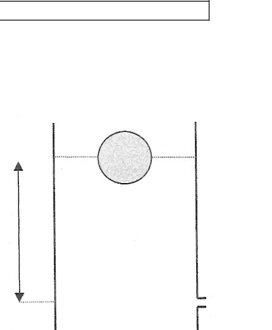
Topic: Fluid Mechanics Metodi: Hydrostatic Equilibrium, Bernoulli’s Equation, Curve Fitting Competenze: Physical Reasoning, Experimental Data Analysis Objects: Sphere, Cylinder, Container Fonte: Testo (PDF) — p.2
- CUTRAL-CO E PLAZA HUINCUL, NY. - Verdi. Un’altra sfera e un cilindro (ma con un po’ di liquido…) Dato il seguente sistema idraulico, che consiste di un contenitore cilindrico (di nuovo …!!!) in cui si mette una sfera non massica, e che è stato praticato un un orizzonte nella parte inferiore (del recipiente) per poi l’acqua può fluire. Si chiede: a) Determinare il rapporto: e i r r R = Per far sì che la sfera vuota sia costruita con un certo materiale. di peso specifico di 1,8 g/cm3, flotta, secondo il suo piano mezzo, essendo il fluido in cui fluttuano, acqua. (ri è il raggio interno della sfera e re l’esterno). b) Calcola ora le dimensioni interne, lo spessore e il peso sapendo che il diametro esterno di la sfera è di 15 mm. c) Calcolare la velocità di uscita del foro di diametro 1,5 mm, determinando il flusso. Grafica il tempo, che conclusione arriva, tenendo conto della ipotesi La velocità è una delle caratteristiche più semplificate del sistema di velocità. d) Non eravamo contenti del semplice calcolo, quindi abbiamo deciso di effettuare il esperienza empiricamente ottenendo una tabella di valori della variazione di altezza rispetto a a tempo stesso, espressa come segue: H [mm] T [Seg.] 150 0 140 28 130 56 120 87 110 119 100 151 90 187 80 224 70 263 60 308
50 357 40 413 30 477 20 575 10 763 Se la legge della variazione dell’altezza in funzione del tempo pensiamo che risponde ad un’equazione La quadratazione è raggiunta mediante un procedimento matematico in cui viene risolto il problema. il seguente sistema di equazioni: 3 2 2 1 0 2 3 2 2 1 0 2 2 1 0 T b T b T b HT T b T b T b HT T b T b N b H ∑ ∑ ∑ ∑ ∑ ∑ ∑ ∑ ∑ ∑ ∑ + ⋅ + ⋅
⋅ + ⋅
⋅ + ⋅
da cui si possono ottenere i coefficienti per generare la seguente funzione di altezza con Relazione tempo, (N è la quantità di misurazioni): 2 2 1 0 ) ( T b T b b T H ⋅ + ⋅ +
in che modo si modifica il calcolo di cui al punto (c). Calcolare e graficare il richiesto La Commissione ha adottato una decisione del Consiglio. Suggerimento: per realizzare il sistema di equazioni con la metodologia di cui sopra È meglio fare una tabella con le potenze richieste per poi calcolare i loro totali e di questa In questo modo si risparmia tempo e si possono evitare errori. Un quadro con alcuni dati che possono essere utili: Densità dell’acqua 1 g / cm3 Pressione atmosferica Pa = 1 Atmosfera Accelerazione della gravità 9,8 m/sec2
Topic: Fluid Mechanics Metodi: Hydrostatic Equilibrium, Bernoulli’s Equation, Curve Fitting Competenze: Physical Reasoning, Experimental Data Analysis Objects: Sphere, Cylinder, Container Fonte: Testo (PDF) — p.2
- CUTRAL-CÓ and HUNCUL Square, NY. Green. Another sphere and a cylinder (but with a little bit of The following table shows the following: Given the following hydraulic system, which consists of a cylindrical container (again…!!!) in which It’s a non-massive sphere, and it’s been practiced a The bottom hole (of the container) so that Then the water can flow. It asks: (a) Determine the relationship between: e i r r R = So that the hollow sphere is built from a certain material of a specific weight of 1,8 g/cm3, floating, according to its plane medium being the fluid in which it floats, water. (ri is the radius inside the sphere and re the radius outside). (b) Now calculate the internal dimensions, thickness and weight knowing that the external diameter of the The sphere is 15 mm. (c) Calculate the velocity at the output of the 1.5 mm diameter hole, determining the flow rate. Graph the same as the time, what conclusion does it reach, taking into account the hypothesis The simplification that is usually done for the calculation of speed? (d) We were not satisfied with the simple calculation, so we decided to do the experience empirically obtaining a table of values of the height variation with respect to at the same time, expressed as follows: H [mm] T [Sec.] 150 0 140 28 130 56 120 87 110 119 100 151 90 187 80 224 70 263 60 308
50 357 40 413 30 477 20 575 10 763 If the law of variation of height with respect to time we think it answers an equation The method of calculating the value of the value of the underlying equation is a quadratic method which is achieved by a mathematical procedure in which the the following system of equations: 3 2 2 1 0 2 3 2 2 1 0 2 2 1 0 T b T b T b HT T b T b T b HT T b T b N b H ∑ ∑ ∑ ∑ ∑ ∑ ∑ ∑ ∑ ∑ ∑ + ⋅ + ⋅
⋅ + ⋅
⋅ + ⋅
where the coefficients can be obtained to generate the following height function with the time-related, (N is the number of measurements): 2 2 1 0 ) ( T b T b b T H ⋅ + ⋅ +
the manner in which the calculation in subparagraph (c) is amended. Recalculate and chart what is requested the previous paragraph. Suggestion: to perform the system of equations using the above methodology It is best to draw up a table with the powers requested and then calculate their totals and this one The Commission has already adopted a number of proposals for a new directive. Table with some data that may be useful: Density of water 1 g / cm3 Air pressure Pa = 1 atmospheric Acceleration of gravity 9,8 m/s2
Topic: Fluid Mechanics Metodi: Hydrostatic Equilibrium, Bernoulli’s Equation, Curve Fitting Competenze: Physical Reasoning, Experimental Data Analysis Objects: Sphere, Cylinder, Container Fonte: Testo (PDF) — p.2
- SAN CARLOS DE BARILOCHE, RÍO NEGRO. AZUL Y VERDE. Un viaje accidentado… Un convoy de tres aviones-tanques sobrevuela el Ártico para abastecer de combustible una base experimental. Los aviones vuelan en fila india distanciados 200 m uno del vecino a una velocidad de crucero de 700 Km/h y una altitud de 5000 m. En un momento determinado, el avión central accidentalmente sufre una explosión. Calcular: a) ¿Qué avión recibe primero la onda expansiva? La onda de choque producida por la explosión viaja a 400 m/seg respecto de tierra y en todas direcciones. b) ¿En cuánto tiempo llega a cada uno de los restantes aviones? c) Ahora supongamos que la onda expansiva sólo dura 0.5 seg., pasados los cuales disminuye considerablemente su potencia (considerarla nula después de ese tiempo). ¿Alguno de los otros dos aviones logra evitar la onda? d) el primer avión que recibe la onda de choque sufre un desperfecto y se detienen sus motores, cayendo en picada. Por suerte la tripulación logra saltar en paracaídas. Supongamos que caen con
una aceleración vertical de 20% de la gravedad normal (9.8 m/seg2) durante 10 s y luego continúan descendiendo con velocidad constante. ¿Cuánto tiempo están en el aire antes de llegar al suelo? (Considerar que la tripulación salta en el instante en que el avión recibe la onda.) e) Si la velocidad horizontal de los paracaidistas no se altera durante la caída (al saltar tienen la misma velocidad del avión) ¿qué distancia, medida en la dirección de vuelo, recorren hasta llegar al piso, desde el instante en que saltan del avión? f) Cuando llegan al piso ¿a qué distancia está el otro avión (medida horizontalmente)? g) Uno de los paracaidistas cuando llegó a tierra firme sufre un accidente y se fractura una pierna. Como los elementos para atenderlo están en el otro avión, 10 min después de que llegaron al piso se manda una señal de SOS por radio. El avión se toma 10 min para virar 180º, al cabo de los cuales el avión se encuentra nuevamente en el punto donde recibió la señal, con la misma velocidad que traía, pero esta vez en la dirección de los accidentados. En ese momento el capitán del avión decide acelerarlo a razón de 5 m/seg2 durante 10 seg, pasado los cuales continúa con velocidad constante. En estas nuevas condiciones, ¿cuánto tarda en llegar? (Tomar como distancia solo la horizontal y considerar a las ondas de radio como instantáneas)
Topic: Newtonian Mechanics Metodi: Kinematic Equations, Vector Decomposition Competenze: Physical Reasoning Objects: Projectile Fonte: Testo (PDF) — p.2
- San Carlos de Bariloche, Rio Negro. Blu e verde. Un viaggio accidentato Un convoglio di tre aerei-cisterna vola sull’Artico per rifornirsi di carburante a una base.
- Esperienziale. Gli aerei volano in fila indiana a 200 metri di distanza uno dal vicino a una velocità di navigazione a 700 Km/h e un’altitudine di 5000 m. A un certo punto, l’aereo centrale ha accidentalmente subito un’esplosione. Calcolo: a) Quale aereo riceve prima l’onda di espansione? L’onda di shock prodotta dall’esplosione viaggia a 400 m/s rispetto alla terra e in tutte le direzioni. b) Quanto tempo ci vuole per arrivare a ciascun altro aereo? c) Supponiamo che l’onda di espansione dura solo 0,5 secondi, dopo i quali diminuisce. La Commissione ha inoltre adottato una decisione che prevede che il regime di controllo dei dati di cui all’articolo 6 del regolamento (UE) n. Qualche altro dei due? Gli aerei riusciranno a sfuggire alla onda? (d) il primo aereo che riceve la onda di colpo subisce un guasto e i suoi motori si interrompono, cadendo a picchiare. Per fortuna, l’equipaggio riesce a saltare in paracadute. Supponiamo che cadano con
un’accelerazione verticale del 20% della gravità normale (9,8 m/sec2) per 10 s e poi continuano scendendo a velocità costante. Quanto tempo sono in aria prima di arrivare al suolo? (Considere che l’equipaggio salti nel momento in cui l’aereo riceve l’onda.) e) Se la velocità orizzontale dei paracadutisti non è alterata durante il cadere (il salto ha la velocità di La velocità dell’aereo è uguale a quella dell’aereo) che distanza, misurata nella direzione di volo, percorrono fino a raggiungere il
- Da quando salta l’aereo? f) Quando arrivano al pavimento, a che distanza si trova l’altro aereo (misurato orizzontalmente)? g) Uno dei paracadutisti, quando è arrivato a terra ferma, ha subito un incidente e si è fratturato una.
- La gamba. Come gli elementi per prenderlo sono sull’altro aereo, 10 minuti dopo che sono arrivati al Al piano di sotto viene inviato un segnale di SOS per radio. L’aereo ha bisogno di 10 minuti per girare 180°, dopo i che l’aereo si trova di nuovo al punto in cui ha ricevuto il segnale, con la stessa velocità che portava, ma questa volta in direzione degli incidenti. In quel momento il capitano dell’ aereo decide di accelerarlo a 5 m/sec2 per 10 secondi, dopo i quali continua a velocità costante. In queste nuove condizioni, quanto tempo ci vuole per arrivare? (Prendendo come distanza solo la (Ricerca di informazioni su un’onda radio)
Topic: Newtonian Mechanics Metodi: Kinematic Equations, Vector Decomposition Competenze: Physical Reasoning Objects: Projectile Fonte: Testo (PDF) — p.2
- I’m not going to be able to do this. Blue and green. A trip that was accidental A convoy of three tank planes flying over the Arctic to fuel a base. It’s experimental. The planes are flying in Indian queue 200 meters apart from the neighbor at a speed of one . cruise speed of 700 Km/h and altitude of 5000 m. At a certain point, the central plane accidentally suffered an explosion. Calculation of the (a) Which aircraft receives the first wave of expansion? The shock wave produced by the explosion . It travels at 400 m/s from the ground and in all directions. (b) How long does it take to reach each of the other aircraft? c) Now let’s say the expansion wave lasts only 0.5 seconds, after which it decreases. The Commission considers that the Commission has not yet adopted a proposal for a regulation on the use of the new technology. Any of the other two? Do you think planes can avoid the wave? (d) the first aircraft to receive the shock wave is damaged and its engines are stopped, falling into a trap. Luckily the crew managed to parachute. Let ‘s say they fall with
a vertical acceleration of 20% of normal gravity (9.8 m/s2) for 10 s and then continue descending at a steady rate. How long are they in the air before they hit the ground? (Consider that the crew jumps the moment the plane receives the wave.) (e) If the parachutists’ horizontal speed is not altered during the fall (the jump has the (the same speed as the aircraft) what distance, measured in the flight direction, they travel to reach the floor, from the moment you jump off the plane? (f) When you reach the floor, how far away is the other aircraft (measured horizontally)? g) One of the parachutists when he arrived on land is in an accident and fractures a .
- The leg. As the items to attend to him are on the other plane, 10 minutes after they arrived at the The floor is being sent an SOS signal by radio. The plane takes 10 minutes to turn 180o, after the which the plane is again at the point where it received the signal, at the same speed. I was bringing it, but this time in the direction of the injured. At that moment the captain of the plane decides to accelerate at a rate of 5 m/s2 for 10 seconds, after which it continues at speed It’s constant. Under these new conditions, how long does it take to get there? (Take as distance only the (i.e. the radio waves are considered instantaneous)
Topic: Newtonian Mechanics Metodi: Kinematic Equations, Vector Decomposition Competenze: Physical Reasoning Objects: Projectile Fonte: Testo (PDF) — p.2
- SAN CARLOS DE BARILOCHE, RÍO NEGRO. AZUL Y VERDE. Un problema nuclear En el núcleo de un reactor nuclear que usa uranio como “combustible” se producen 3,12 . 1019 fisiones por segundo. En cada fisión se libera una energía de aproximadamente 200 MeV (Mega electrón volts, 1 J = 6,2415 1012 MeV). a) ¿ Cuál es la potencia que produce el reactor ? b) El núcleo del reactor se refrigera con un caudal de agua a alta presión, que entra al núcleo a una temperatura de 250 ºC y sale del núcleo a 320 ºC. Supongamos que toda la energía de las fisiones se convierte en energía térmica, y que a su vez toda esta energía se entrega al agua. ¿Cuál es el caudal de agua, en kg/s que circula por el núcleo para que las temperaturas de entrada y salida se mantengan constantes en el tiempo? Dato: el calor específico del agua es c = 4186 J/(kg ºC). c) En el uranio natural, los únicos átomos que pueden producir fisión son los del isótopo 235. La abundancia de este isótopo en el uranio natural es del 0.7 %, es decir que hay sólo 1,7711 1022 átomos del isótopo 235 por cada kilogramo de uranio natural. Los argentinos necesitamos durante el año una potencia eléctrica promedio de 10000 MW. Si pudiéramos hacer fisionar todos los átomos de uranio 235 y usar esa energía para producir electricidad, ¿ cuántos kilos de uranio se necesitarían para producir la energía que consumimos por año ?
Topic: Nuclear & Particle Physics, Thermodynamics Metodi: Mass-Energy Equivalence, First Law of Thermodynamics Competenze: Physical Reasoning Objects: Nucleus Fonte: Testo (PDF) — p.2
- San Carlos de Bariloche, Rio Negro. Blu e verde. Un problema nucleare Nel nucleo di un reattore nucleare che utilizza uranio come combustibile si producono 3,12 . 1019 Fissioni al secondo. In ogni fissione viene rilasciata circa 200 MeV (Mega 1 J = 6,2415 1012 MeV). a) Qual è la potenza prodotta dal reattore ? b) Il nucleo del reattore è raffreddato con un flusso di acqua ad alta pressione che entra nel nucleo a. una temperatura di 250 oC e uscita dal nucleo a 320 oC. Supponiamo che l’energia totale delle La fusione si trasforma in energia termica, e tutta questa energia viene consegnata all’acqua. - Che cosa? è il flusso d’acqua, in kg/s, che circola attraverso il nucleo per far sì che le temperature di entrata ed uscita sono costanti nel tempo? Data: il calore specifico dell’acqua è c = 4186 J/(kg oC). c) Nell’uranio naturale, gli unici atomi che possono produrre fissione sono quelli dell’isotopo 235. La L’isotopo di questo isotopo nell’uranio naturale è di 0,7%, cioè solo 1.7711 1022 235 atomi dell’isotopo per ogni chilo di uranio naturale. Gli argentini hanno bisogno di un’altra un’elettricità media di 10000 MW. Se potessimo fissionare tutti gli atomi E se si usasse quell’energia per produrre elettricità, quanti chili di uranio ci sarebbero stati necessari? per produrre l’ energia che consumiamo all’ anno ?
Topic: Nuclear & Particle Physics, Thermodynamics Metodi: Mass-Energy Equivalence, First Law of Thermodynamics Competenze: Physical Reasoning Objects: Nucleus Fonte: Testo (PDF) — p.2
- I’m not going to be able to do this. Blue and green. A nuclear problem In the core of a nuclear reactor that uses uranium as fuel, 3.12 is produced. 1019 The split per second. In each fission, energy of approximately 200 MeV (Mega) is released. The electron volts, 1 J = 6,2415 1012 MeV). (a) What is the power output of the reactor ? (b) The reactor core is cooled with a high pressure water flow, which enters the core at a temperature of 250 oC and exits the core at 320 oC. Suppose that all the energy of the The energy from the fusion is converted into heat energy, and all of this energy is then delivered to water. What? is the flow of water, in kg/s, circulating through the core so that the input and output temperatures Do they stay consistent over time? Date: the specific heat of the water is c = 4186 J/(kg oC). (c) In natural uranium, the only atoms that can produce fission are those of isotope 235. La The abundance of this isotope in natural uranium is 0.7%, which means there are only 1,7711 1022 isotope 235 atoms for every kilogram of natural uranium. The Argentines need during the The average electricity output per year is 10000 MW. If we could just fission all the atoms . And then we can use that energy to produce electricity, how many kilos of uranium would be needed? To produce the energy we consume per year ?
Topic: Nuclear & Particle Physics, Thermodynamics Metodi: Mass-Energy Equivalence, First Law of Thermodynamics Competenze: Physical Reasoning Objects: Nucleus Fonte: Testo (PDF) — p.2
- SAN CARLOS DE BARILOCHE, RÍO NEGRO. AZUL Y VERDE. Un problema de gravitación. Una nave se lanza desde la Tierra, con la intención de llegar hasta la luna. Lo curioso es que el método para lanzarla al espacio consiste de una catapulta que se encargará de entregarle a la nave la velocidad necesaria para vencer la atracción del campo gravitatorio terrestre y llegar a la Luna
(como en la novela de Julio Verne “De la Tierra a la Luna” ). Nota: en caso de ser necesario, usar como expresión de la energía potencial gravitatoria la que se da al final del problema. a) ¿Cuál es la velocidad mínima inicial que tendría que impartírsele a la nave para poder escapar del campo gravitatorio terrestre? Considerar sólo el efecto de la gravedad terrestre. b) Supongamos ahora que la nave se encuentra viajando hacia la Luna siguiendo la trayectoria rectilínea que une los centros de la Tierra y la Luna. ¿Existe algún punto en esta trayectoria donde la fuerza (neta) que ejercen la Luna y la Tierra sobre la nave sea nula? ¿ Cuál es ? ( En caso de existir ) c) Durante el viaje a la Luna, los astronautas deben deshacerse de un recipiente con residuos. El sistema que se usa para tirar los residuos consiste de un brazo que lentamente saca de la nave el recipiente con los residuos hasta una cierta distancia de la nave y luego lo suelte en el espacio sin ejercer ninguna fuerza sobre él . ¿ Qué verán los astronautas, que el recipiente se queda atrás de la nave, que el recipiente los pasa o que el recipiente se mantiene al lado de la nave? Justifique su respuesta. d) ¿Cómo sería tu respuesta al punto c) si la operación de sacar el recipiente con residuos se hubiera tenido que hacer en un punto del espacio donde la atracción gravitatoria de cualquier astro es despreciable y por lo tanto la aceleración que siente la nave es nula? Te recordamos la Ley de Newton de la gravitación: 2 2 1. . d m m G F = donde F es la fuerza de atracción gravitatoria entre dos cuerpos cuyas masas son respectivamente m1 y m2, d es la distancia entre los centros de masa de los cuerpos y G es la constante de gravitación universal. La energía potencial gravitatoria de un cuerpo de masa m a una distancia d del centro de la tierra es: d m m G U g 2 1. −
Datos: Constante de gravitación universal, G = 6,673 . 10-11 N m2 kg—2 Masa de la Tierra: 5,975 . 1024 kg. Radio medio de la Tierra: 6,371 . 106 m (considerar la tierra y la luna como dos esferas) Distancia media de la Tierra a la Luna: 3,84 .108 m Masa de la Luna: 7,354 . 1022 kg. Masa de la Tierra: 5,975 . 1024 kg.
Topic: Gravitation Metodi: Newton’s Law of Gravitation, Conservation of Energy Competenze: Physical Reasoning Objects: Planet, Satellite Fonte: Testo (PDF) — p.2
- San Carlos de Bariloche, Rio Negro. Blu e verde. Un problema di gravità. Una nave viene lanciata dalla Terra, con l’intenzione di raggiungere la luna. La cosa strana è che il Il metodo per lanciarla nello spazio consiste in una catapulta che si occuperà di consegnare alla nave la La velocità necessaria per superare l’attrazione del campo gravitazionale terrestre e raggiungere la Luna
(come nel romanzo di Julio Verne “Dalla Terra alla Luna”). Nota: se necessario, utilizzare come espressione dell’energia potenziale gravitazionale che si dà alla fine del problema. a) Qual è la velocità minima iniziale che la nave dovrebbe essere impartita per poter sfuggire? Il campo gravitazionale terrestre? Considerare solo l’effetto della gravità terrestre. b) Supponiamo ora che la nave si trovi a viaggiare verso la Luna seguendo il suo percorso. una rettilinea che unisce i centri della Terra e della Luna. C’è un punto in questo percorso dove la la forza che la Luna e la Terra esercitano sulla nave è nulla? - Che cosa è ? (Se esiste) c) Durante il viaggio sulla Luna, gli astronauti devono sbarazzarsi di un contenitore di rifiuti. El Il sistema usato per gettare i rifiuti consiste in un braccio che ritardano lentamente la scarica della nave. Contenitore con i rifiuti fino a una certa distanza dalla nave e poi rilasciarlo nello spazio senza non esercitare alcuna forza su di lui . Gli astronauti vedranno che il recipiente rimane dietro la nave. la nave, che il recipiente li passi o che il recipiente si stia accanto alla nave? Giustifica il suo
- Risposta. (d) Che risposta potresti dare al punto (c) se l’operazione di estrazione del contenitore di rifiuti fosse stata effettuata Avrebbe dovuto fare in un punto dello spazio dove l’attrazione gravitazionale di qualsiasi astro E’ disprezzabile e quindi l’accelerazione che la nave sente è nulla? Vi ricordiamo la legge di Newton sulla gravità: 2 2
. d m m G F = dove F è la forza di attrazione gravitazionale tra due corpi la cui massa è rispettivamente m1 e m2, d è la distanza tra i centri di massa dei corpi e G è la costante di gravità Universale. L’energia gravitazionale potenziale di un corpo di massa m a una distanza d dal centro della terra es: d m m G U g 2 1. −
Dati: Costante di gravità universale, G = 6.673. 10-11 N m2 kg—2 Massa della Terra: 5.975 . 1024 kg. Radiometraggio medio della Terra: 6.371 . 106 m (considerare la terra e la luna come due sfere) Distanza media dalla Terra alla Luna: 3,84 ,108 m Massa della Luna: 7.354 . 1022 kg. Massa della Terra: 5.975 . 1024 kg.
Topic: Gravitation Metodi: Newton’s Law of Gravitation, Conservation of Energy Competenze: Physical Reasoning Objects: Planet, Satellite Fonte: Testo (PDF) — p.2
- I’m not going to be able to do this. Blue and green. It’s a problem with gravity. A ship launches from Earth, intending to reach the moon. The funny thing is, he’s… The method of launching it into space consists of a catapult which will be responsible for delivering the spacecraft to the spacecraft. The speed needed to overcome the gravitational pull of the Earth’s gravitational field and reach the Moon.
(as in the novel by Jules Verne From the Earth to the Moon). Note: if necessary, use As an expression of the gravitational potential energy that is given at the end of the problem. (a) What is the minimum initial speed that the ship would have to be given to escape? The gravitational field of the Earth? Consider only the effect of Earth’s gravity. (b) Now suppose the ship is travelling towards the Moon following its trajectory. A straight line connecting the centers of the Earth and the Moon. Is there any point in this trajectory where the The force of the moon and earth on the ship is zero? What ‘s it ? (If any) (c) During the journey to the Moon, astronauts must dispose of a container of waste. El The system used to dispose of waste consists of an arm that slowly removes the waste from the ship. container with the waste up to a certain distance from the ship and then release it into space without I ‘m not going to force him . What will the astronauts see, that the vessel is left behind the ship, that the vessel passes them or that the vessel remains next to the ship? Justify your . The answer. (d) What would be your answer to point (c) if the operation of removing the waste container were to be carried out? I would have had to do at a point in space where the gravitational pull of any star is despicable and therefore the acceleration the ship feels is zero? We remind you of Newton ‘s law of gravitation: 2 2 1. . d m m G F = where F is the gravitational pull force between two bodies whose masses are respectively m1 and m2, d is the distance between the mass centers of the bodies and G is the gravitational constant The Commission is not responsible for the implementation of this Directive. The gravitational potential energy of a mass body m at a distance d from the center of the earth es: d m m G U g 2 1. −
The data: Universal gravity constant, G is 6.673. 10-11 N m2 kg—2 The mass of the Earth: 5,975 . 1024 kg. Earth ‘s mean radius is 6,371 . 106 m (To consider the earth and the moon as two spheres) Average distance from the Earth to the Moon: 3.84 .108 m Mass of the Moon: 7,354 . 1022 kg. The mass of the Earth: 5,975 . 1024 kg.
Topic: Gravitation Metodi: Newton’s Law of Gravitation, Conservation of Energy Competenze: Physical Reasoning Objects: Planet, Satellite Fonte: Testo (PDF) — p.2
- ROSARIO, SANTA FE. AZUL Y VERDE. Para una escena de una película un doble conduce una camioneta con una longitud de 4,25 m alrededor de una curva circular con un radio de curvatura de 0,333 km. La camioneta debe salir del camino en la curva, salta a través de un zanjón y aterrizar del otro lado, 2,96 m abajo y a 10 m de distancia. a) ¿ Cuál es la aceleración centrípeta mínima que debe tener la camioneta para salvar el zanjón y aterrizar del otro lado ¿
b) ¿ Cuál es el coeficiente de rozamiento entre el terreno y las cubiertas de la camioneta ¿
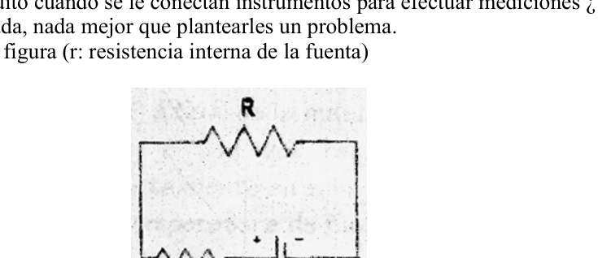
Topic: Newtonian Mechanics Metodi: Kinematic Equations, Free-Body Diagram Competenze: Physical Reasoning Objects: — Fonte: Testo (PDF) — p.2
- Rosario, Santa Fede. Blu e verde. Per una scena di un film un doppio guida un furgone di lunghezza di 4,25 metri. Circa una curva circolare con un raggio di curvatura di 0,333 km. Il furgone deve uscire dal posto. camminando in curva, salta attraverso un pozzo e atterri dall’altra parte, a 2,96 m di discesa e a 10 m di distanza Distanza. a) Qual è l’accelerazione centripede minima che deve avere il camion per salvare il mucchio e
- Atterrare dall’altra parte ?
b) Qual è il coefficiente di rottura tra terra e coperture del camion?
Topic: Newtonian Mechanics Metodi: Kinematic Equations, Free-Body Diagram Competenze: Physical Reasoning Objects: — Fonte: Testo (PDF) — p.2
- Rosary, Holy Faith. Blue and green. For a movie scene a double-driver drives a truck with a length of 4.25 meters. A circular curve with a radius of curvature of 0,333 km. The truck must leave the room . Walk into the curve, jump through a ditch and land on the other side, 2.96 m down and 10 m from distance. (a) What is the minimum centrifugal acceleration the van must have to save the pit and Landing on the other side ?
(b) What is the friction coefficient between the ground and the decks of the van?
Topic: Newtonian Mechanics Metodi: Kinematic Equations, Free-Body Diagram Competenze: Physical Reasoning Objects: — Fonte: Testo (PDF) — p.2
- ROSARIO, SANTA FE. AZUL Y VERDE. Entre los estudiantes de los cursos de física eléctrica se plantea habitualmente un interrogante. ¿ Qué ocurre en un circuito cuando se le conectan instrumentos para efectuar mediciones ¿ Para quitarles la duda, nada mejor que plantearles un problema. En el circuito de la figura (r: resistencia interna de la fuenta) ε = 12 V ; r = 0,1 Ω se quiere determinar experimentalmente el valor de la resistencia R. Para esto disponemos de un voltímetro V de resistencia interna rv = 5000 Ω y de un amperímetro A de resistencia interna rA = 0,15 Ω Podemos efectuar las siguientes conexiones
a) ¿ Cuál de estas dos conexiones nos permite calcular un valor de R más próximo a su valor teórico? Rteórico = 1 Ω b) ¿ En qué porcentaje varía la corriente sobre la resistencia R por la presencia de los instrumentos en la conexión elegida ¿ ¿ En qué porcentaje varía la caída de potencial en la resistencia R por la presencia de los instrumentos en la conexión elegida ¿ c) Explica por qué la resistencia interna del voltímetro y la del amperímetro tienen valores tan dispares.
Topic: Circuits Metodi: Kirchhoff’s Laws, Equivalent Circuit Reduction Competenze: Physical Reasoning Objects: Resistor, Galvanometer, Battery Fonte: Testo (PDF) — p.2
- Rosario, Santa Fede. Blu e verde. I corsi di fisica elettrica sono spesso frequenti. ¿ Cosa succede in un circuito quando gli vengono collegati strumenti per effettuare le misurazioni? Per eliminare il dubbio, non c’è niente di meglio che mettere in discussione un problema. In circuito della figura (r: resistenza interna della sorgente) ε = 12 V ; r = 0,1 Ω La resistenza R è stata determinata sperimentalmente. Per questo abbiamo un voltometro V di resistenza interna rv = 5000 Ω e un ampere A di resistenza interna rA = 0,15 Ω Possiamo effettuare le seguenti connessioni:
a) Quale di queste due connessioni ci permette di calcolare un valore di R più vicino al suo valore
- Teorico? Ritorico = 1 Ω b) Per quale percentuale varia la corrente sulla resistenza R per la presenza di strumenti nella connessione scelta; Per quale percentuale varia la caduta di potenziale nella resistenza R per la presenza di strumenti nella connessione scelta; c) Spiega perché la resistenza interna del voltímetro e quella dell’ampielitro hanno valori così
- Spari.
Topic: Circuits Metodi: Kirchhoff’s Laws, Equivalent Circuit Reduction Competenze: Physical Reasoning Objects: Resistor, Galvanometer, Battery Fonte: Testo (PDF) — p.2
- Rosary, Holy Faith. Blue and green. Students of electrical physics courses are often asked a question. ¿ What happens in a circuit when measuring instruments are connected to it? To remove doubt, nothing better than to raise a problem. In the circuit of the figure (r: internal resistance of the source) ε = 12 V ; r = 0,1 Ω The test results of the test are given in the following table: For this we have a V voltmeter of internal resistance rv = 5000 Ω and an ampere A with internal resistance rA = 0,15 Ω We can make the following connections:
(a) Which of these two connections allows us to calculate a value of R that is closer to its value Theoretical? Theoretical = 1 Ω (b) How much of the current varies over the resistance R due to the presence of the instruments in the chosen connection How much of the potential drop in resistance R varies by the presence of the instruments in the chosen connection (c) Explains why the internal resistance of the voltmeter and that of the amperemeter have such values I’m going to shoot.
Topic: Circuits Metodi: Kirchhoff’s Laws, Equivalent Circuit Reduction Competenze: Physical Reasoning Objects: Resistor, Galvanometer, Battery Fonte: Testo (PDF) — p.2
- ROSARIO, SANTA FE. AZUL Y VERDE. Una bala de plomo de 15 g que viaja a 500 m/s choca con una placa fija metálica y delgada. Al atravesar la placa parte de la bala se funde y queda adherida en ella. El resto sale de la placa con una velocidad de 250 m/s. Suponiendo que absorbe el 50% del calor generado y que la temperatura ambiente es de 20 ºC. a) ¿ Cuál es la masa fundida? b) ¿ Con qué rapidez mínima debería haber viajado para fundirse totalmente en el impacto ¿ temperatura de fusión del plomo: 327 ºC capacidad calorífica específica del plomo: 130 J/kgºC calor latente de fusión del plomo: 0,25.105 J/kg
Topic: Thermodynamics, Conservation of Energy Metodi: First Law of Thermodynamics, Conservation of Energy Competenze: Physical Reasoning Objects: Projectile Fonte: Testo (PDF) — p.2
- Rosario, Santa Fede. Blu e verde. Una pallottola di piombo di 15 g che viaggia a 500 m/s colpisce una piastra fissa metallica e sottile. Al attraversando la placca parte della pallottola si fonde e si attacca a essa. Il resto viene fuori dalla targa con una . velocità di 250 m/s. Supponiamo che assorba il 50% del calore generato e che la temperatura l’ambiente è di 20 oC. a) Qual è la massa fonduta? b) A che velocità minima avrebbe dovuto viaggiare per fondere completamente nell’impatto? temperatura di fusione del piombo: 327 oC Capacità calorifica specifica del piombo: 130 J/kgoC Calore latente di fusione del piombo: 0,25,105 J/kg
Topic: Thermodynamics, Conservation of Energy Metodi: First Law of Thermodynamics, Conservation of Energy Competenze: Physical Reasoning Objects: Projectile Fonte: Testo (PDF) — p.2
- Rosary, Holy Faith. Blue and green. A 15 g lead bullet traveling at 500 m/s collides with a thin, metallic, fixed plate. Al If you go through the plate, part of the bullet melts and sticks to it. The rest comes off the board with a speed of 250 m/s. Assuming it absorbs 50% of the heat generated and that the temperature is The temperature is 20 degrees Celsius. (a) What is the molten mass? (b) How fast should it have travelled to fully melt into the impact? Lead melting temperature: 327 oC specific heat capacity of lead: 130 J/kgoC The lead melting latent heat: 0,25.105 J/kg
Topic: Thermodynamics, Conservation of Energy Metodi: First Law of Thermodynamics, Conservation of Energy Competenze: Physical Reasoning Objects: Projectile Fonte: Testo (PDF) — p.2
- AGUILARES, TUCUMÁN. VERDE. En el Antiguo Oeste En un antiguo pueblo del oeste de Estados Unidos, en el siglo pasado, se produjo uno de tantos duelos que se llevaban a cabo entre el Comisario y el típico bandido. El fugitivo era famoso por su revolver y balas de plata. Cada bala pesaba 3 (tres) gramos y tenían una velocidad inicial de salida de 240m/s. Pero Silver Jones (así se llamaba el delincuente), era famoso también por su mala puntería. Al disparar su plateado revolver dio sobre un cartel colgante de madera de 1 (uno) kilogramo de una taberna, que se encontraba detrás del Comisario. a) Calcule el cambio de temperatura que experimenta la bala. b) Calcule la velocidad final de la bala. c) Determine la energía que se pierde durante la colisión. d) ¿Qué altura alcanza el cartel con el impacto?
Topic: Conservation of Momentum, Thermodynamics Metodi: Conservation of Momentum, First Law of Thermodynamics, Conservation of Energy Competenze: Physical Reasoning Objects: Projectile Fonte: Testo (PDF) — p.2
- Aguilares, TUCUMAN. - Verdi. Nell’antico occidente In un antico villaggio dell’Ovest degli Stati Uniti, nel secolo scorso, si è verificato uno di questi. Il Consiglio ha adottato una decisione che non può essere adottata. Il fuggitivo era famoso per il suo revolver e le sue pallottole d’argento. Ogni pallottola pesava 3 (tre) grammi e… avevano una velocità di uscita iniziale di 240 m/s. Ma Silver Jones (come si chiamava il criminale), Era famoso anche per il suo scorcio scorretto. Scattando il suo revolver argentato ha colpito un cartello di legno di 1 (uno) chilogrammo di Un bar, che si trovava dietro il Commissario. a) Calcola il cambiamento di temperatura che la pallottola prova. b) Calcola la velocità finale della pallottola. c) Determina l’energia persa durante la collisione. d) A che altezza si raggiunge il cartello con l’impatto?
Topic: Conservation of Momentum, Thermodynamics Metodi: Conservation of Momentum, First Law of Thermodynamics, Conservation of Energy Competenze: Physical Reasoning Objects: Projectile Fonte: Testo (PDF) — p.2
- I’m not going to be able to help you. Green. In the Ancient West In an ancient town in the western United States, in the last century, one of many occurred. The Commissioner and the typical bandit were fighting. The fugitive was famous for his revolver and silver bullets. Each bullet weighed three grams and … They had an initial output speed of 240m/s. But Silver Jones (that was the name of the criminal), He was also famous for his poor punching. When he fired his silver revolver he hit a wooden sign of 1 (one) kilogram of A tavern, which was behind the Commissioner. (a) Calculate the temperature change experienced by the bullet. (b) Calculate the final speed of the bullet. (c) Determine the energy lost during the collision. (d) How high does the impact sign reach?
Topic: Conservation of Momentum, Thermodynamics Metodi: Conservation of Momentum, First Law of Thermodynamics, Conservation of Energy Competenze: Physical Reasoning Objects: Projectile Fonte: Testo (PDF) — p.2
- AGUILARES, TUCUMÁN. VERDE. Complicadas vacaciones Cuando salimos de vacaciones, la última temporada, fuimos hacia las montañas en un automóvil pequeño de unos 800 Kg. Como nos quedaba poco combustible para subir una cuesta de 1000 metros de altura con una inclinación de 30º, tuvimos que hacer unos cálculos físico-matemáticos para saber si llegábamos o no a la cima y poder cargar combustible, alcanzando una velocidad máxima de 100 Km/h, partiendo del reposo. a) Con un 100% de rendimiento por cada 3 (tres) litros de combustible la energía consumida es de 1,3 . 108 Joule. si el rendimiento de nuestro automóvil es sólo del 14%. ¿Cuánto combustible consume al acelerar el automóvil? b) ¿Qué tiempo tarda el automóvil en llegar a la estación de servicio?
Topic: Conservation of Energy Metodi: Conservation of Energy, Kinematic Equations Competenze: Physical Reasoning Objects: — Fonte: Testo (PDF) — p.2
- Aguilares, TUCUMAN. - Verdi. Vacanze complicate Quando siamo usciti in vacanza, l’ultima stagione, siamo andati in montagna in un’auto. piccolo di circa 800 kg. Come non avevamo abbastanza combustibile per salire una salita di 1000 Alti metri con un’inclinazione di 30 gradi, abbiamo dovuto fare calcoli fisici-mathematici. per sapere se siamo arrivati o meno in cima e poter caricare il carburante, raggiungendo una velocità. massimo di 100 Km/h, partendo dal riposo. a) Con un rendimento del 100% per ogni 3 (tre) litri di combustibile l’energia consumata è de 1,3 . 108 Joule. se la rendimento della nostra auto è solo del 14%. Quanto carburante? consuma all’accelerazione della macchina? b) Quanto tempo ci vuole per arrivare alla stazione di servizio?
Topic: Conservation of Energy Metodi: Conservation of Energy, Kinematic Equations Competenze: Physical Reasoning Objects: — Fonte: Testo (PDF) — p.2
- I’m not going to be able to help you. Green. Complicated holidays When we went on vacation last season, we went up to the mountains in a car. small, about 800 kg. We had no fuel left to climb a 1000 . We had to do some mathematical-physical calculations. To see if we were going to get to the top or not and to be able to charge fuel, reaching a speed. maximum speed of 100 Km/h, starting from rest. (a) With 100% efficiency for every 3 (three) litres of fuel, the energy consumed is de 1,3 . 108 Joule. If the efficiency of our car is only 14%. How much fuel? consumes while speeding up the car? (b) How long does it take the car to reach the service station?
Topic: Conservation of Energy Metodi: Conservation of Energy, Kinematic Equations Competenze: Physical Reasoning Objects: — Fonte: Testo (PDF) — p.2
- AGUILARES, TUCUMÁN. VERDE. Tablero eléctrico En un Trabajo Práctico de Electricidad, un estudiante debe armar un circuito con cuatro resistencias R1, R2, R3 y R4 y dos pilas e1 y e2 de 45 V cada una. Cuenta, además de las resistencias, con tres interruptores: S1, S2 y S3 y amperímetros y voltímetros. Con esos elementos arma el circuito como se muestra en la figura. a) Manteniendo abiertos los interruptores S1 y S2, y cerrado S3, encuentra que el amperímetro A2 indica 0,5 A. Si la resistencia R2 vale 1 Ω, ¿cuánto vale R1 ? b) Decide cambiar R2 por otra resistencia R3 de valor desconocido y encuentra que cerrando ahora S1 y S2 y manteniendo abierta S3, el voltímetro V, indica que la diferencia de potencial es cero. ¿Cuánto vale R5 ? c) ¿Cuánto marcará A1 cuando las tres llaves están cerradas? R3 = 5 Ω R4 = 1 Ω
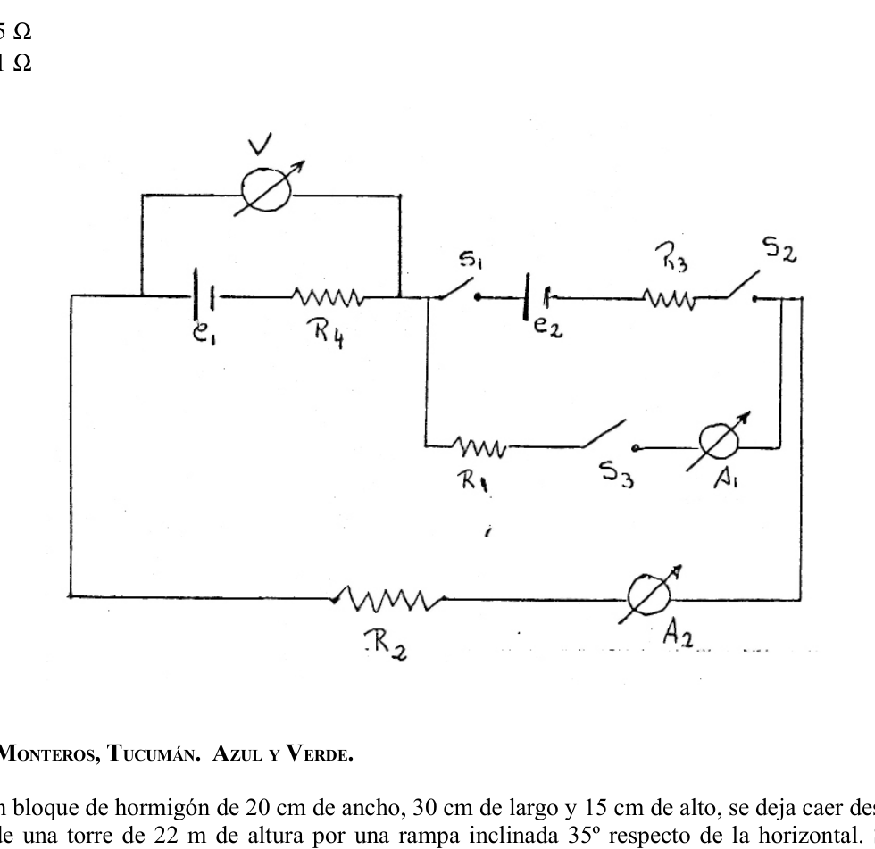
Topic: Circuits Metodi: Kirchhoff’s Laws, Equivalent Circuit Reduction Competenze: Physical Reasoning Objects: Resistor, Battery, Switch Fonte: Testo (PDF) — p.2
- Aguilares, TUCUMAN. - Verdi. Dispositivo elettrico In un lavoro pratico di elettricità, uno studente deve mettere insieme un circuito con quattro resistenze R1, R2, R3 e R4 e due batterie e1 e e2 di 45 V ciascuna. Conti, oltre alle resistenze, con tre interruttori: S1, S2 e S3 e ampliometri e voltometri. Con questi elementi il circuito si armammo. come viene mostrato nella figura. a) Tenendo aperti gli interruttori S1 e S2, e chiuso S3, si trova che l’ampiecatore A2 indica 0,5 A. Se la resistenza R2 vale 1 Ω, quanto vale R1? b) Decide di scambiare R2 per un’altra resistenza R3 di valore sconosciuto e trova che chiudendo S1 e S2 e mantenendo aperto S3, il voltometro V, indica che la differenza di potenziale è zero. Quanto vale R5? c) Quanto segnarebbe A1 quando le tre chiavi sono chiuse? R3 = 5 Ω R4 = 1 Ω
Topic: Circuits Metodi: Kirchhoff’s Laws, Equivalent Circuit Reduction Competenze: Physical Reasoning Objects: Resistor, Battery, Switch Fonte: Testo (PDF) — p.2
- I’m not going to be able to help you. Green. Electrical panel In a practical electrical job, a student must assemble a circuit with four R1, R2, R3 and R4 resistors and two 45 V batteries e1 and e2. He counts, in addition to the resistance, with three switches: S1, S2 and S3 and ampere and voltmeter. With these elements , the circuit is armed . As shown in the figure. (a) Keeping the S1 and S2 switches open and closed S3, finds that the A2 amp indicates 0.5 A. If the resistance R2 is 1 Ω, how much is R1? (b) Decides to swap R2 for another resistance R3 of unknown value and finds that closing Now S1 and S2 and keeping S3 open, the V voltmeter, indicates that the potential difference is zero. How much is R5 worth? (c) How much will A1 score when all three keys are closed? R3 = 5 Ω R4 = 1 Ω
Topic: Circuits Metodi: Kirchhoff’s Laws, Equivalent Circuit Reduction Competenze: Physical Reasoning Objects: Resistor, Battery, Switch Fonte: Testo (PDF) — p.2
- MONTEROS, TUCUMÁN. AZUL Y VERDE. Un bloque de hormigón de 20 cm de ancho, 30 cm de largo y 15 cm de alto, se deja caer desde lo alto de una torre de 22 m de altura por una rampa inclinada 35º respecto de la horizontal. Se ha medido el tiempo de descenso con un cronómetro digital, registrándose 4,33 s. La rampa construida con una chapa de acero de 1,5 cm de espesor y 40 cm de ancho, empalma en su extremo inferior con un plano horizontal, sin rozamiento, de 10 m de longitud en cuyo extremo se ha montado un resorte amortiguador de 60 cm de largo. Considerar que el empalme es suave, sin quiebres que provoquen saltos del bloque. Determinar: a) Peso del bloque, teniendo en cuenta que el hormigón posee una densidad ρ = 2 Kg/dm3. b) Aceleración en el descenso.
c) Fuerza de roce en el descenso. d) Coeficiente de roce entre el hormigón y la rampa. e) Energía cinética del bloque al llegar al plano horizontal. f) Retraso producido en el descenso debido al rozamiento. g) Calor Total absorbido por la chapa y el bloque, despreciando la disipación al medio ambiente. h) Temperatura alcanzada por los cuerpos que rozan, considerando que estos no intercambian calor con el medio ambiente. Calor específico del acero Ca = 0,115 cal/Kg ºC, calor específico del hormigón Ch = 0,27 cal/Kg ºC; densidad del acero ρ = 7,5 Kg/dm3. i) Cuánto se comprime el resorte al chocar el bloque contra él, si la constante de elasticidad del mismo es k = 300 N/cm. j) Cuánto tiempo el bloque se desplazó con velocidad constante.
Topic: Newtonian Mechanics, Conservation of Energy Metodi: Free-Body Diagram, Conservation of Energy, Hooke’s Law Competenze: Physical Reasoning Objects: Block, Inclined Plane, Spring Fonte: Testo (PDF) — p.2
- Monteros, TUCUMAN. Blu e verde. Un blocco di cemento di 20 cm di larghezza, 30 cm di lunghezza e 15 cm di altezza, viene lasciato cadere dal altezza di una torre di 22 m di altezza per una rampa inclinata 35° rispetto al orizzontale. Se ha Il tempo di discesa è stato misurato con un cronometro digitale, registrandosi a 4,33 secondi. La rampa costruita con una lastra di acciaio di 1,5 cm di spessore e 40 cm di larghezza, con impugnatura alla sua estremità inferiore con un piano orizzontale, senza rottura, di 10 m di lunghezza, sulla cui estremità è montata una una molla amortizzante di 60 cm di lunghezza. Considerare che l’impalcatura è morbida, senza fratture che causano salti dal blocco. Determinare: a) Peso del blocco, considerando che il calcestruzzo ha una densità ρ = 2 Kg/dm3. b) Accelerazione di discesa.
c) Forza di rottura in discesa. d) Coefficiente di rottura tra il calcestruzzo e la rampa. e) Energia cinetica del blocco quando raggiunge il piano orizzontale. f) Ritardo nella discesa a causa del ruggine. g) Calore totale assorbito dalla lamiera e dal blocco, disprezzando la dissipazione al medio ambiente. h) Temperatura raggiunta dai corpi che si rasano, considerando che questi non si scambiano calore con l’ambiente. Calore specifico dello staccolo Ca = 0,115 cal/Kg oC, calore specifico dello Cementro Ch = 0,27 cal/Kg oC; densità dell’acciaio ρ = 7,5 Kg/dm3. i) Quanto si comprime la resorsione colpendo il blocco contro di esso, se la costante di elasticità di questo è k = 300 N/cm. j) Quanto tempo il blocco è stato spostato a velocità costante.
Topic: Newtonian Mechanics, Conservation of Energy Metodi: Free-Body Diagram, Conservation of Energy, Hooke’s Law Competenze: Physical Reasoning Objects: Block, Inclined Plane, Spring Fonte: Testo (PDF) — p.2
- Monteros, you know. Blue and green. A 20 cm wide, 30 cm long and 15 cm high block of concrete is dropped from the floor. height of a 22 m high tower by a ramp tilted 35° from the horizontal. Se ha The time of descent was measured with a digital timepiece, recording 4.33 seconds. The built ramp . with a steel plate of 1,5 cm thickness and 40 cm width, with a bottom end of staple with a horizontal plane, without a scratch, of 10 m in length, at the end of which a a cushioning spring of 60 cm in length. Consider the splicing to be soft, without fractures that cause jumps from the block. Determine: (a) Block weight, taking into account that concrete has a density ρ = 2 Kg/dm3. (b) Acceleration in descent.
(c) Brushing force on descent. (d) Brushing coefficient between concrete and ramp. (e) Kinetic energy of the block when reaching the horizontal plane. (f) Delay in descent due to friction. (g) Total heat absorbed by the sheet and block, neglecting the dissipation to the medium The environment. (h) Temperature achieved by the bodies that grind, considering that they do not exchange. heat with the environment. The specific heat of the steel Ca = 0,115 cal/Kg oC, specific heat of the The following conditions are met: (i) How much is the spring compressed when the block is hit against it, if the elasticity constant of the same is k = 300 N/cm. (j) How long the block moved at a constant speed.
Topic: Newtonian Mechanics, Conservation of Energy Metodi: Free-Body Diagram, Conservation of Energy, Hooke’s Law Competenze: Physical Reasoning Objects: Block, Inclined Plane, Spring Fonte: Testo (PDF) — p.2
- MONTEROS, TUCUMÁN. VERDE. En el circuito de la figura se han conectado las resistencias R1 = 30 ohms, R2 = 50 ohms, R3 = 100 ohms, R4 = 80 ohms y R5 = 60 ohms. El circuito está alimentado por un grupo de 4 pilas de 1,5 voltios cada una. Calcular: a) La resistencia equivalente. Despreciar la resistencia interna de las pilas y del amperímetro. b) Cuál es la lectura del amperímetro. c) Qué cantidad de calor disipa la resistencia R3 en 10 segundos.
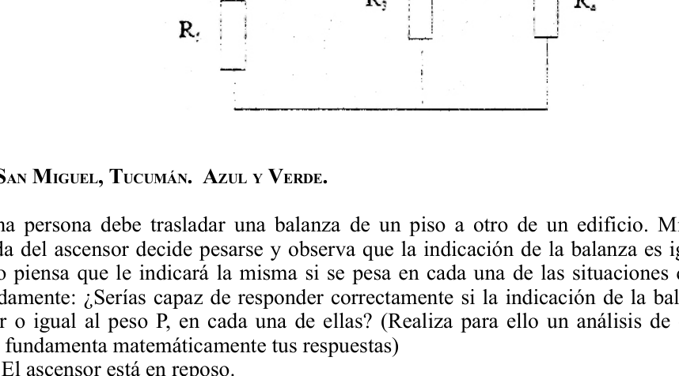
Topic: Circuits Metodi: Equivalent Circuit Reduction, Kirchhoff’s Laws Competenze: Physical Reasoning Objects: Resistor, Battery Fonte: Testo (PDF) — p.2
- Monteros, TUCUMAN. - Verdi. Nel circuito della figura sono state collegate le resistenze R1 = 30 ohms, R2 = 50 ohms, R3 = 100 ohms, R4 = 80 ohms e R5 = 60 ohms. Il circuito è alimentato da un gruppo di 4 batterie di 1,5
- Ciascuno di voi. Calcolo: a) resistenza equivalente. Sminuire la resistenza interna delle batterie e del
- Amperimetro. b) Qual è la lettura dell’ampielitore. c) Quanta calore dissipa la resistenza R3 in 10 secondi.
Topic: Circuits Metodi: Equivalent Circuit Reduction, Kirchhoff’s Laws Competenze: Physical Reasoning Objects: Resistor, Battery Fonte: Testo (PDF) — p.2
- Monteros, you know. Green. In the circuit of the figure the resistors R1 = 30 ohms, R2 = 50 ohms, R3 = have been connected. 100 ohms, R4 is 80 ohms and R5 is 60 ohms. The circuit is powered by a group of 4 1.5 battery Turn around each. Calculation of the (a) The equivalent strength. Disregard the internal resistance of the batteries and the The ampere is a. (b) What is the reading of the ampere? (c) How much heat dissipates resistance R3 in 10 seconds.
Topic: Circuits Metodi: Equivalent Circuit Reduction, Kirchhoff’s Laws Competenze: Physical Reasoning Objects: Resistor, Battery Fonte: Testo (PDF) — p.2
- SAN MIGUEL, TUCUMÁN. AZUL Y VERDE. Una persona debe trasladar una balanza de un piso a otro de un edificio. Mientras espera la llegada del ascensor decide pesarse y observa que la indicación de la balanza es igual a su peso P. Luego piensa que le indicará la misma si se pesa en cada una de las situaciones que se presentan seguidamente: ¿Serías capaz de responder correctamente si la indicación de la balanza será mayor menor o igual al peso P, en cada una de ellas? (Realiza para ello un análisis de cada situación y luego fundamenta matemáticamente tus respuestas) a) El ascensor está en reposo. b) El ascensor sube con una velocidad constante muy grande. c) el ascensor baja con una velocidad constante muy pequeña. d) El ascensor sube con una aceleración grande.
e) El ascensor baja con la aceleración de la gravedad.
Topic: Newtonian Mechanics Metodi: Free-Body Diagram Competenze: Physical Reasoning Objects: — Fonte: Testo (PDF) — p.2
- San Miguel, TUCUMAN. Blu e verde. Una persona deve spostare una bilancia da un piano a un altro di un edificio. Mentre aspetta la Arrivo dell’ascensore decide di pesare e osserva che l’indicazione della bilancia è pari al suo peso P. Poi pensa che glielo dirà se si pesano in ogni situazione che si presenta In seguito: saresti in grado di rispondere correttamente se l’indicazione della bilancia sarà maggiore P, inferiore o uguale al peso di ciascuna di esse? (Per questo, esegue un’analisi di ciascuna situazione e poi matematicamente basate le vostre risposte) a) L’ascensore è a riposo. b) L’ascensore sale a velocità costante molto elevata. c) l’ascensore scende a velocità costante molto bassa. d) L’ascensore sale con grande accelerazione.
e) L’ascensore scende con l’accelerazione della gravità.
Topic: Newtonian Mechanics Metodi: Free-Body Diagram Competenze: Physical Reasoning Objects: — Fonte: Testo (PDF) — p.2
- I’m not going to be here. Blue and green. A person must move a scale from one floor to another of a building. While you wait for the The elevator’s arrival decides to weigh itself and observes that the indicator of the scale is equal to its weight P. Then you think it will tell you the same thing if you weigh in on each of the situations that come up. Next: Would you be able to answer correctly if the indicator on the scale is higher less than or equal to the weight of P in each of them? (He shall analyse each situation and Then mathematically base your answers. (a) The lift is at rest. (b) The elevator goes up at a very high constant speed. (c) the elevator is lowered at a very small constant speed. (d) The elevator is going up with great acceleration.
(e) The elevator is lowered with gravity acceleration.
Topic: Newtonian Mechanics Metodi: Free-Body Diagram Competenze: Physical Reasoning Objects: — Fonte: Testo (PDF) — p.2
- SAN MIGUEL, TUCUMÁN. AZUL Y VERDE. Un niño lanza en forma oblicua una bolilla que posee una masa de 100 [g] con una velocidad inicial v0. La misma describe una trayectoria parabólica como indica la siguiente figura: Considerando que no existe rozamiento con el aire, y que el valor de la altura h es igual a 1 m. a) Indica las fuerzas que actúan sobre la bolilla en los puntos A, B y C. b) ¿En cuál de ellos es mayor la energía mecánica?. ¿Por qué? c) Determina el valor del trabajo mecánico necesario para trasladar la bolilla desde el punto A hasta el punto C? Fundamenta tu respuesta. d) Calcular el valor de la velocidad inicial, v0, con que es lanzada la bolilla.
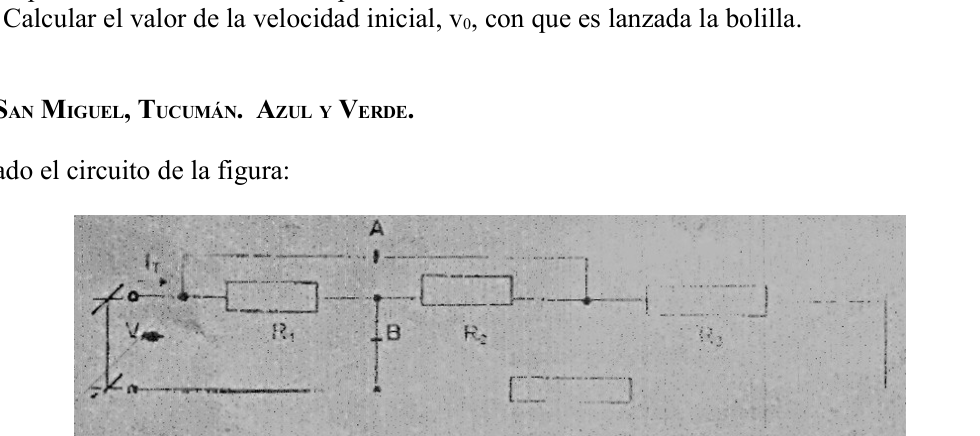
Topic: Newtonian Mechanics, Conservation of Energy Metodi: Kinematic Equations, Conservation of Energy, Free-Body Diagram Competenze: Physical Reasoning Objects: Projectile Fonte: Testo (PDF) — p.2
- San Miguel, TUCUMAN. Blu e verde. Un bambino lancia in forma obbiqua una boccetta che possiede una massa di 100 [g] a velocità iniziale v0. La stessa descrive un percorso parabolico come indica la figura seguente: Considerando che non vi è alcun ruggine con l’aria e che il valore dell’altezza h è pari a 1 m. a) Indica le forze che agiscono sul bollo nei punti A, B e C. b) In quale di esse è maggiore l’energia meccanica? - Perché? c) Determina il valore del lavoro meccanico necessario per spostare la scatola dal punto A. fino al punto C? Fondamenta la tua risposta. d) Calcolare il valore della velocità iniziale, v0, con cui viene lanciata la bozza.
Topic: Newtonian Mechanics, Conservation of Energy Metodi: Kinematic Equations, Conservation of Energy, Free-Body Diagram Competenze: Physical Reasoning Objects: Projectile Fonte: Testo (PDF) — p.2
- I’m not going to be here. Blue and green. A child throws an oblique bowl that has a mass of 100 [g] at a speed the initial value of the product is v0. It describes a parabolic path as shown in the following figure: Whereas there is no air friction and the value of the height h is equal to 1 m. (a) Indicate the forces acting on the bowl in points A, B and C. (b) Which of these has the highest mechanical energy? - Why? - I don’t know. (c) Determines the value of the mechanical work required to move the bowl from point A. to point C? Fundamentate your answer. (d) Calculate the value of the initial speed, v0, at which the bowl is launched.
Topic: Newtonian Mechanics, Conservation of Energy Metodi: Kinematic Equations, Conservation of Energy, Free-Body Diagram Competenze: Physical Reasoning Objects: Projectile Fonte: Testo (PDF) — p.2
- SAN MIGUEL, TUCUMÁN. AZUL Y VERDE. Dado el circuito de la figura: debes determinar: a) Si la intensidad de corriente IT es mayor al abrirse el circuito en el punto A o en el punto B. Demuestra tu afirmación. b) Si se conecta un amperímetro en el conductor que pasa por el punto A y simultáneamente se conecta un voltímetro en el conductor que pasa por el punto B, ¿qué valor de intensidad de corriente y de diferencia de potencial indicarán en sus respectivas escalas?
Topic: Circuits Metodi: Kirchhoff’s Laws, Equivalent Circuit Reduction Competenze: Physical Reasoning Objects: Resistor, Galvanometer Fonte: Testo (PDF) — p.2
- San Miguel, TUCUMAN. Blu e verde. Dato il circuito della figura: dovete determinare: a) Se l’intensità di corrente IT è maggiore quando il circuito è aperto al punto A o al punto B. Dimostra la tua affermazione. b) Se un amperimetro è collegato al conducente che passa dal punto A e si collegando un voltometro al conducente che passa attraverso il punto B, che valore di intensità di corrente e di differenze di potenziale indicheranno sulle rispettive scale?
Topic: Circuits Metodi: Kirchhoff’s Laws, Equivalent Circuit Reduction Competenze: Physical Reasoning Objects: Resistor, Galvanometer Fonte: Testo (PDF) — p.2
- I’m not going to be able to do this. Blue and green. Given the circuit of the figure: you must determine: (a) If the current intensity of the IT is higher when the circuit is opened at point A or point B. Prove your claim. (b) If an ampere is connected to the driver passing through point A and is simultaneously connects a voltmeter to the conductor passing through point B, what is the current intensity value and potential difference will they indicate on their respective scales?
Topic: Circuits Metodi: Kirchhoff’s Laws, Equivalent Circuit Reduction Competenze: Physical Reasoning Objects: Resistor, Galvanometer Fonte: Testo (PDF) — p.2
- SAN MIGUEL, TUCUMÁN. AZUL Y VERDE. Se dispone de dos estufas eléctricas que consumen 1500 [w] y 1000 [w], respectivamente, cuando se conectan a una fuente de tensión de 220 [v]. Se te pide determinar cuál será el consumo total de ambas estufas si se las conecta en serie a la red domiciliaria de 220 [v].
INSTANCIAS LOCALES. PROBLEMAS EXPERIMENTALES. LUGAR Y CATEGORÍA.
Topic: Circuits Metodi: Equivalent Circuit Reduction Competenze: Physical Reasoning Objects: Resistor Fonte: Testo (PDF) — p.2
- San Miguel, TUCUMAN. Blu e verde. Sono disponibili due stufe elettriche che consumano 1500 [w] e 1000 [w], rispettivamente, quando sono collegati a una fonte di tensione di 220 [v]. Ti viene chiesto di determinare il consumo. totale di entrambi i stufe se sono collegati in serie alla rete domestica di 220 [v].
- Instanze locali. Problemi sperimentali. LUOGIO E CATEGORIA.
Topic: Circuits Metodi: Equivalent Circuit Reduction Competenze: Physical Reasoning Objects: Resistor Fonte: Testo (PDF) — p.2
- I’m not going to be able to do this. Blue and green. Two electric stoves are available, which consume 1500 [w] and 1000 [w], respectively, when connected to a 220 [v] voltage source. You ‘re asked to determine what consumption will be . total of both stoves if they are connected in series to the 220 home network [v].
Local instances. The problem is experimental. Location and category.
Topic: Circuits Metodi: Equivalent Circuit Reduction Competenze: Physical Reasoning Objects: Resistor Fonte: Testo (PDF) — p.2
- CIUDAD DE BUENOS AIRES. VERDE. Se dispone de
un plano inclinado que forma un ángulo de 30° con la mesa con una plataforma de lanzamiento
con un cierto ángulo β
una bolita de acero
papel carbónico
papel liso blanco
Suponiendo que no hay rozamiento:
- Trazar el eje vertical con la bolita
- Determinar β con su incerteza. Explicitar el método usado
- Verificar las leyes de movimiento a partir de los valores de X y Y medidos por la traza, sabiendo que ) tg X Y ( 2 sen . g cos x V0 β − α β =
- A partir de las mediciones determinar la incerteza en v0
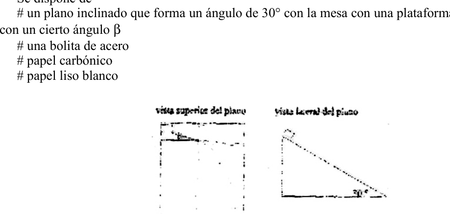
Topic: Newtonian Mechanics Metodi: Experimental Data Analysis, Kinematic Equations, Error Propagation Competenze: Physical Reasoning, Experimental Data Analysis Objects: Inclined Plane, Ball Fonte: Testo (PDF) — p.2
- Città di Buoni Aerei. - Verdi. È disponibile
un piano inclinato che forma un angolo di 30° con la tavola con piattaforma di lancio
con un certo angolo β
una palla di acciaio
carta carbonica
carta bianca liscia
Supponendo che non ci sia un’arricchimento:
- Tracciare l’asse verticale con la palla
- Determinare β con la sua incertezza. Especificare il metodo utilizzato
- Verificare le leggi del movimento a partire dai valori di X e Y misurati dalla traccia, sapendo che ) tg X Y ( 2 sen . g cos x V0 β − α β =
- Dalle misurazioni determinare l’incertezza in v0
Topic: Newtonian Mechanics Metodi: Experimental Data Analysis, Kinematic Equations, Error Propagation Competenze: Physical Reasoning, Experimental Data Analysis Objects: Inclined Plane, Ball Fonte: Testo (PDF) — p.2
- City of Good Airs. Green. It is available
a sloping plane forming an angle of 30° with the table with a launching platform
with a certain angle β
a ball of steel
Carbon paper
White plain paper
Assuming there is no bruising:
- Draw the vertical axis with the ball
- Determine β with its uncertainty. Explain the method used
- Check the laws of motion from the values of X and Y measured by the trace, Knowing that ) tg X Y ( 2 Other . g body x V0 β − α β =
- From measurements determine uncertainty in v0
Topic: Newtonian Mechanics Metodi: Experimental Data Analysis, Kinematic Equations, Error Propagation Competenze: Physical Reasoning, Experimental Data Analysis Objects: Inclined Plane, Ball Fonte: Testo (PDF) — p.2
- CIUDAD DE BUENOS AIRES. VERDE. Objetivos:
- Determinar el volumen del sólido, más denso que el agua, utilizando tres métodos diferentes.
- Determinar el peso específico del sólido menos denso que el agua. Material a utilizar: Sólidos-problema.-agua.-cuerda.-regla graduada.-probeta graduada.-vaso de precipitados.- dinamómetro.-varilla de soporte.-pinzas de bureta.
Topic: Fluid Mechanics Metodi: Experimental Data Analysis, Hydrostatic Equilibrium Competenze: Physical Reasoning, Experimental Data Analysis Objects: — Fonte: Testo (PDF) — p.2
- Città di Buoni Aerei. - Verdi. Obiettivi:
- Determinare il volume del solido, più denso dell’acqua, utilizzando tre metodi diversi.
- Determinare il peso specifico del solido meno denso dell’acqua. Materiale da utilizzare: Solidità-problema. Acqua. Torni. Regola graduata. Proba graduata. Vaso di precipitazioni.
- dinamometro. - Stringere. - Pince di buretta.
Topic: Fluid Mechanics Metodi: Experimental Data Analysis, Hydrostatic Equilibrium Competenze: Physical Reasoning, Experimental Data Analysis Objects: — Fonte: Testo (PDF) — p.2
- City of Good Airs. Green. Objectives:
- Determine the volume of the solid, denser than water, using three different methods.
- Determine the specific weight of the less dense solid than water. Material to be used: Solids-problem. Water-tord. Graduated rule. Graduated probe. Dynamometer. - The support rod. - The spindle pin.
Topic: Fluid Mechanics Metodi: Experimental Data Analysis, Hydrostatic Equilibrium Competenze: Physical Reasoning, Experimental Data Analysis Objects: — Fonte: Testo (PDF) — p.2
- CIUDAD DE BUENOS AIRES. VERDE. Objetivo: Determinar la densidad de un líquido, indicando las posibles fuentes de error. Dar el resultado de la medición con su incerteza.
Elementos Utilizados: 2 probetas de 1000 cm3 1 tubo de diámetro = 2,4 cm y altura = 30 cm Papel cuadriculado Regla milimetrada Agua (densidad = 1,004 g/cm3) Acetona (densidad = 0.797 g/cm3) Municiones de vidrio
Topic: Fluid Mechanics Metodi: Experimental Data Analysis, Hydrostatic Equilibrium, Error Propagation Competenze: Physical Reasoning, Experimental Data Analysis Objects: — Fonte: Testo (PDF) — p.2
- Città di Buoni Aerei. - Verdi. Obiettivo: determinare la densità di un liquido, indicando le possibili fonti di errore. - Dare il Il risultato della misurazione con la sua incertezza.
Elementi utilizzati: 2 proiettili di 1000 cm3 1 tubo di diametro = 2,4 cm e altezza = 30 cm Carta quadricolata Regola di millimetro Acqua (densità = 1,004 g/cm3) Aceto (densità = 0,797 g/cm3) munizioni di vetro
Topic: Fluid Mechanics Metodi: Experimental Data Analysis, Hydrostatic Equilibrium, Error Propagation Competenze: Physical Reasoning, Experimental Data Analysis Objects: — Fonte: Testo (PDF) — p.2
- City of Good Airs. Green. Objective: Determine the density of a liquid, indicating the possible sources of error. Give the The measurement result with its uncertainty.
Elements used: 2 samples of 1000 cm3 1 tube of diameter = 2,4 cm and height = 30 cm Paper notated Millimeter rule Water (density = 1,004 g/cm3) Acetone (density = 0,797 g/cm3) Glass ammunition
Topic: Fluid Mechanics Metodi: Experimental Data Analysis, Hydrostatic Equilibrium, Error Propagation Competenze: Physical Reasoning, Experimental Data Analysis Objects: — Fonte: Testo (PDF) — p.2
- CIUDAD DE BUENOS AIRES. VERDE. A) Diseñar un método para determinar la densidad del líquido contenido en el recipiente que se entrega como muestra, teniendo en cuenta que: a) Deben utilizarse los materiales e instrumentos disponibles que están sobre la mesada del laboratorio. b) Si se requiriesen otros materiales, éstos deben ser sencillos, económicos y disponibles en el laboratorio. c) Si se necesitara construir algún instrumento, a partir de los materiales del ítem anterior, la calibración estará a cargo del concursante. d) Debe confeccionarse una guía de experimentación que contenga como mínimo:
- Fundamentos teóricos.
- Listado de materiales.
- Algorítmo del proceso.
- Esquemas.
- Cuadros de valores de las respectivas mediciones, cálculos y cotas de error.
- Si es factible y de utilidad, graficar valores.
- Conclusiones. B) Ensayo del método diseñado por aplicación estricta del mismo, presentando la guía confeccionada, esquemas, cuadros de valores y cálculos completos, además de las conclusiones y comentarios.
Topic: Fluid Mechanics Metodi: Experimental Data Analysis, Hydrostatic Equilibrium Competenze: Physical Reasoning, Experimental Data Analysis Objects: — Fonte: Testo (PDF) — p.2
- Città di Buoni Aerei. - Verdi. A) Progettare un metodo per determinare la densità del liquido contenuto nel recipiente che viene consegna come campione, tenendo conto che: a) I materiali e gli strumenti disponibili che si trovano sul piano del laboratorio. b) Se altri materiali sono necessari, essi devono essere semplici, economici e disponibili in Il laboratorio. (c) Se fosse necessario costruire un’instrumento, a partire dai materiali di cui al punto precedente, la il calibrazione sarà a carico del concorrente. d) Deve essere redatto un test guide contenente almeno:
- Fondamenti teorici.
- Lista dei materiali.
- Algorithm del processo.
- Schemi.
- Quadro di valori delle rispettive misurazioni, calcoli e quote di errore.
- Se è possibile e utile, graficare i valori.
- Conclusioni. B) Prova del metodo progettato per la sua rigorosa applicazione, presentando la guida
- il sistema di valutazione dei risultati, commenti.
Topic: Fluid Mechanics Metodi: Experimental Data Analysis, Hydrostatic Equilibrium Competenze: Physical Reasoning, Experimental Data Analysis Objects: — Fonte: Testo (PDF) — p.2
- City of Good Airs. Green. A) Design a method for determining the density of the liquid contained in the container to be delivery as a sample, taking into account that: (a) The materials and instruments available on the table of the table of contents of the table of contents of the table of contents of the table of contents of the table of contents of the table of contents of the table of contents of the table of contents of the table of contents of the table of contents of contents of the table of contents of the table of contents of the table of contents of contents of the table of contents of contents of the table of contents of the table of contents of the table of contents of contents of the table of contents of the table of contents of the table of contents of the table of contents of contents of the table of contents of the table of contents of the table of contents of contents of the table of contents of the table of contents of the table of contents of the table of contents of the table of contents of the table of contents of the table of contents of the table of contents of the table of contents of the table of contents of the table of contents of the table of contents of the table of contents of the table of contents of the table of contents of the table of the table of contents of the table of contents of the table of the table of the table of contents of the table of the table of contents of the table of the table of the table of contents of the table of the table of contents of the table of the table of the table of the table of the table of the table of contents of the table of the table of the table of the table of the table of the table of the table of contents of the table of the table of the table of the table of contents of the table of the table of the table of the table of the table of the table shall be used by by by by by by by by by The lab. (b) If other materials are required, they must be simple, economical and available in the market. the lab. (c) If any instrument is to be constructed from the materials of the preceding item, the The calibration shall be carried out by the competitor. (d) An experimental guide containing at least:
- Theoretical foundations.
- List of materials.
- Algorithm of the process.
- Schematics.
- Figures of values of the respective measurements, calculations and error rates.
- If it is feasible and useful, chart values.
- I’m going to draw conclusions. (b) Testing the method designed by strict application of the same, presenting the guide The Commission’s proposal for a regulation on the approximation of the laws of the Member States on the approximation of the laws of the Member States relating to the protection of the environment, including the protection of the environment, is based on the principle of proportionality. comments.
Topic: Fluid Mechanics Metodi: Experimental Data Analysis, Hydrostatic Equilibrium Competenze: Physical Reasoning, Experimental Data Analysis Objects: — Fonte: Testo (PDF) — p.2
- CIUDAD DE BUENOS AIRES. VERDE. Determinar el índice de refracción del material del que está hecha una lámina de caras paralelas.
Topic: Geometric Optics Metodi: Experimental Data Analysis, Snell’s Law Competenze: Physical Reasoning, Experimental Data Analysis Objects: — Fonte: Testo (PDF) — p.2
- Città di Buoni Aerei. - Verdi. Determinare l’indice di refraczione del materiale di cui è fatta una lamina a facce parallele.
Topic: Geometric Optics Metodi: Experimental Data Analysis, Snell’s Law Competenze: Physical Reasoning, Experimental Data Analysis Objects: — Fonte: Testo (PDF) — p.2
- City of Good Airs. Green. Determine the refractive index of the material from which a sheet of parallel faces is made.
Topic: Geometric Optics Metodi: Experimental Data Analysis, Snell’s Law Competenze: Physical Reasoning, Experimental Data Analysis Objects: — Fonte: Testo (PDF) — p.2
- CIUDAD DE BUENOS AIRES. VERDE. Objetivo: Determinar que tipo de componentes hay dentro de la caja y las conexiones relativas a los terminales rojo, celeste y negro. Actividad: Se tiene una caja negra de la cual asoman 3 terminales rojo, celeste y negro con la siguiente configuración: En su interior hay un sistema formado por 4 elementos, los cuales pueden ser: Baterías, resistencias, (>5 KΩ), capacitadores (>50 µF) y diodos semiconductores.
a) Decir qué elementos están dentro de la caja. Para esto detallar los circuitos utilizados y las mediciones realizadas. b) Hacer el circuito que forman dichos elementos. c) Dar las características específicas de cada elemento presente en el interior de la caja. Materiales: 1 caja negra con tres terminales: rojo, celeste y negro. 1 fuente de corriente continua 2 multímetros cables para conexiones 1 resistencia de 115 KΩ 1 resistencia de 10 KΩ 1 resistencia de 1 MΩ 1 capacitador 47 µF 1 diodo NOTA: Recuerda que las especificaciones recién se piden en el punto c).
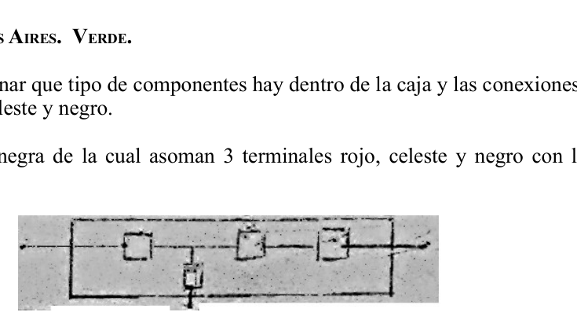
Topic: Circuits Metodi: Experimental Data Analysis, Kirchhoff’s Laws Competenze: Physical Reasoning, Experimental Data Analysis Objects: Resistor, Capacitor, Battery Fonte: Testo (PDF) — p.2
- Città di Buoni Aerei. - Verdi. Obiettivo: Determinare che tipo di componenti sono all’interno della scatola e i collegamenti relativi a i terminali rosso, celeste e nero. Attività: Si ha una scatola nera da cui assomigliano 3 terminali rosso, celeste e nero con la seguente configurazione: All’interno di esso c’è un sistema formato da 4 elementi, che possono essere: resistenze (> 5 KΩ), capacitori (> 50 μF) e diodi semiconduttori.
a) Indicare quali elementi sono all’interno della scatola. Per questo, dettagliare i circuiti utilizzati e i misurazioni effettuate. b) Fate il circuito che costituisce tali elementi. c) Indicare le caratteristiche specifiche di ogni elemento presente all’interno della scatola. Materiali: 1 scatola nera con tre terminali: rosso, celeste e nero. 1 fonte di corrente continua 2 multimetro Cable per collegamenti 1 resistenza di 115 KΩ 1 resistenza di 10 KΩ 1 resistenza di 1 MΩ 1 condensatore 47 μF 1 diodo NOTA: ricorda che le specifiche sono richieste solo al punto c).
Topic: Circuits Metodi: Experimental Data Analysis, Kirchhoff’s Laws Competenze: Physical Reasoning, Experimental Data Analysis Objects: Resistor, Capacitor, Battery Fonte: Testo (PDF) — p.2
- City of Good Airs. Green. Objective: Determine what type of components are contained in the box and the connections relating to The red, blue and black terminals. Activity: You have a black box from which three red, blue and black terminals resemble the following The following configuration: Inside it is a system made up of 4 elements, which can be: The following conditions shall apply:
(a) Declare what items are inside the box. For this purpose, detail the circuits used and the measurements made. (b) Make the circuit that forms those elements. (c) Give the specific characteristics of each element present inside the box. Other materials: 1 black box with three terminals: red, blue and black. 1 source of direct current 2 multi-meters Other, of a kind used for the manufacture of goods of heading 8106 1 resistance of 115 KΩ 1 resistance of 10 KΩ 1 resistance of 1 MΩ 1 capacitor 47 μF 1 diode NOTE: Please note that the specifications are only requested in point (c).
Topic: Circuits Metodi: Experimental Data Analysis, Kirchhoff’s Laws Competenze: Physical Reasoning, Experimental Data Analysis Objects: Resistor, Capacitor, Battery Fonte: Testo (PDF) — p.2
- CIUDAD DE BUENOS AIRES. VERDE Y AZUL. Un Cafecito Calentito. Introducción: En ciertas condiciones, cuando un sistema intercambia calor con el medio, su temperatura se puede aproximar por una curva de la forma T = K · e-At + T0, donde t es el tiempo y A es una constante que depende de los materiales utilizados, de las formas y de otros factores. Lista de Materiales:
- 2 vasitos de plástico con tapa
- 1 termómetro
- Agua caliente y a temperatura ambiente También se podrán utilizar reloj, regla, escuadra, etc. Objetivo: Se analizarán 4 casos:
- un vaso lleno de agua caliente con termómetro pero sin tapa
- un vaso lleno de agua caliente con tapa y termómetro
- dos vasos (uno adentro del otro) llenos de agua caliente con termómetro pero sin tapa
- un vaso lleno hasta la mitad de agua caliente con termómetro pero sin tapa En cada uno de ellos indique si la aproximación es buena, en que rango y la constante A correspondiente. Informe: Presente un informe con:
- La descripción y esquema de los métodos de medición utilizados.
- Todos los valores experimentales obtenidos en las mediciones directas, con sus respectivos errores.
- El tratamiento de los valores medidos, el cálculo de errores y gráficos utilizados.
- Los resultados finales obtenidos con sus respectivos errores.
- Explique cualitativamente los resultados obtenidos.
Fe de erratas (aclarados durante la prueba). Elementos entregados en la prueba experimental: el vaso de telgopor, de aproximadamente 125 cm3 y la tapa es de plástico finito (similares a los vasitos de café de MacDonald’s).
Topic: Thermodynamics Metodi: Experimental Data Analysis, Curve Fitting, Graph Linearization Competenze: Physical Reasoning, Experimental Data Analysis Objects: Container Fonte: Testo (PDF) — p.2
- Città di Buoni Aerei. Verde e Azzurro. Un caffè caldo. Introduzione: In alcune condizioni, quando un sistema scambia calore con il suo ambiente, la sua temperatura si riduce. può avvicinarsi per una curva della forma T = K · e-At + T0, dove t è il tempo e A è un La costante variazione è determinata dai materiali utilizzati, dalle forme e da altri fattori. Lista dei materiali:
- 2 vasi di plastica con copertura
- 1 termometro
- Acqua calda e a temperatura ambiente Potranno essere utilizzati anche orologi, regole, squadre, ecc. Obiettivo: Vi saranno analizzati 4 casi:
- un bicchiere pieno di acqua calda con termometro ma senza copertura
- un bicchiere pieno di acqua calda con copertura e termometro
- due vascelli (uno all’interno dell’altro) pieni di acqua calda con termometro ma senza coperta
- un bicchiere pieno fino a metà di acqua calda con termometro ma senza copertura In ciascuna di esse indicare se l’approccio è buono, in che range e costante A corrispondente. Rapporto: Presenta un rapporto con:
- Descrizione e schema dei metodi di misurazione utilizzati.
- Tutti i valori sperimentali ottenuti nelle misurazioni dirette, con i rispettivi valori errori.
- Trattamento dei valori misurati, calcolo degli errori e grafici utilizzati.
- I risultati definitivi ottenuti con i rispettivi errori.
- Esprimi qualitativamente i risultati ottenuti.
Fede di errori (semplificati durante la prova). Elementi consegnati nella prova sperimentale: il bicchiere di telgopor, di circa 125 cm3 e la copertura è di plastica finita (simile ai vasi di caffè di MacDonald’s).
Topic: Thermodynamics Metodi: Experimental Data Analysis, Curve Fitting, Graph Linearization Competenze: Physical Reasoning, Experimental Data Analysis Objects: Container Fonte: Testo (PDF) — p.2
- City of Good Airs. Green and Blue. A little hot coffee. The following is the list of the countries of the European Union: Under certain conditions, when a system exchanges heat with the environment, its temperature is can approximate by a curve of the form T = K · e-At + T0, where t is time and A is a The Commission has already adopted a number of proposals for the amendment. List of materials:
- 2 plastic vessels with lid
- One thermometer
- Hot water and room temperature The time, the rule, the squad, etc. can also be used. The objective: Four cases will be analysed:
- a glass filled with hot water with thermometer but without lid
- a glass filled with hot water with a cap and thermometer
- two cups (one inside the other) filled with hot water with thermometer but without lid
- a glass filled with up to half a cup of hot water with thermometer but without cap In each of them indicate whether the approximation is good, in which range and the constant A the corresponding. Report to the Commission: Report with:
- description and scheme of the measurement methods used.
- All experimental values obtained in direct measurements, with their respective values I’m not sure.
- the processing of measured values, calculation of errors and charts used.
- The final results obtained by their respective errors.
- Explain qualitatively the results obtained.
Faith of the errs (clear during the test). Elements delivered in the experimental test: the telgopor glass, approximately 125 The lid is made of finite plastic (similar to MacDonald’s coffee pots).
Topic: Thermodynamics Metodi: Experimental Data Analysis, Curve Fitting, Graph Linearization Competenze: Physical Reasoning, Experimental Data Analysis Objects: Container Fonte: Testo (PDF) — p.2
- CIUDAD DE BUENOS AIRES. VERDE. Se dispone de un tubo de vidrio cerrado en uno de sus extremos y lleno de agua. Se cuenta, además, de una cinta métrica, de un reloj cronómetro y de una pequeña esfera de acero. Luego de colocar la esferilla en el interior el tubo, obstruirlo con el tapón de goma de tal manera que quede en su interior una pequeña burbuja de aire. Inclinar el tubo de forma tal que la esfera se dirija hacia el extremo con el tapón y la burbuja hacia el extremo cerrado. Cuando se tiene los dos móviles en posición, inclinar el tubo rápidamente (30° con la horizontal) para que los móviles comiencen a desplazarse hacia los extremos opuestos. Se pide: a) Hallar experimentalmente la ley de variación de la posición (posición en función del tiempo) de la esfera desplazándose por el interior del tubo lleno de agua (despreciar los primeros centímetros, cuando comienza el movimiento). b) Hallar la ley de variación de la posición (posición en función del tiempo) de una pequeña burbuja de aire dejada, a propósito, dentro del tubo. c) Realizar los cálculos necesarios para predecir el lugar y el instante de encuentro. d) Representar en un mismo gráfico la posición de ambos móviles en función del tiempo, indicando lugar e instante de encuentro. e) Medir el lugar y el tiempo de encuentro. f) Realizar un informe describiendo el desarrollo completo de la práctica (conteniendo todos los items anteriores), haciendo un apropiado estudio de los errores cometidos y discutiendo los resultados obtenidos.
Topic: Fluid Mechanics, Newtonian Mechanics Metodi: Experimental Data Analysis, Kinematic Equations, Curve Fitting Competenze: Physical Reasoning, Experimental Data Analysis Objects: Sphere, Bubble, Tube Fonte: Testo (PDF) — p.2
- Città di Buoni Aerei. - Verdi. Si dispone di un tubo di vetro chiuso ad una delle sue estremità e pieno di acqua. Si tratta inoltre di un nastro metrico, di un orologio cronometro e di una piccola sfera di
- l’acciaio. Dopo aver posto la sfera all’interno del tubo, ostruirla con la tappa di gomma in questo modo. che rimanga dentro una piccola bolla d’aria. Inclinare il tubo in modo tale che la sfera si rivolga verso l’estremità con il tappo e la bolla verso l’estremità chiusa. Quando si hanno i due mobili in posizione, inclinare rapidamente il tubo (30° con la orizzontale) per far sì che i cellulari iniziino a spostarsi verso le estremità opposte. Si chiede: a) Trovare sperimentalmente la legge di variazione della posizione (posizione a seconda del tempo) di la sfera spostandosi all’interno del tubo pieno di acqua (sottopregando i primi centimetri, quando inizia il movimento). b) Trovare la legge di variazione della posizione (posizione a seconda del tempo) di una piccola una bolla d’aria lasciata, a proposito, dentro il tubo. c) effettuare i calcoli necessari per prevedere il luogo e l’istante dell’incontro. d) Presentare in un unico grafico la posizione di entrambi i telefoni mobili in funzione del tempo, indicando il luogo e l’istante dell’incontro. e) Misurare il luogo e il tempo di incontro. f) Rendere conto dell’insieme dello sviluppo della pratica (contiene tutti i risultati). (cfr. precedenti), facendo un’appropriata ricerca degli errori commessi e discutendo i problemi risultati ottenuti.
Topic: Fluid Mechanics, Newtonian Mechanics Metodi: Experimental Data Analysis, Kinematic Equations, Curve Fitting Competenze: Physical Reasoning, Experimental Data Analysis Objects: Sphere, Bubble, Tube Fonte: Testo (PDF) — p.2
- City of Good Airs. Green. It has a glass tube closed at one end and filled with water. It also has a metric tape, a chronometer clock and a small sphere of steel. After placing the ball inside the tube, clog it with the rubber stopper in such a way. Let there be a little air bubble inside. Bend the tube in such a way that the sphere is pointed towards the end with the cap and bubble To the closed end. When both mobiles are in position, tilt the tube rapidly (30° horizontally) So the mobile phones start moving to the opposite ends. It asks: (a) To experimentally find the law of variation of position (time-dependent position) of the sphere moving through the inside of the water-filled tube (depreciate the first centimetres, when the movement starts). (b) Find the law of variation of position (time-dependent position) of a small air bubble left, by the way, inside the tube. (c) Perform the calculations necessary to predict the meeting place and time. (d) To represent the position of both mobiles in a single graph in terms of time, Indicating the place and time of meeting. (e) Measure the meeting place and time. (f) To produce a report describing the full development of the practice (containing all the relevant information) (b) the Commission has made a detailed assessment of the errors made and discussed the the results obtained.
Topic: Fluid Mechanics, Newtonian Mechanics Metodi: Experimental Data Analysis, Kinematic Equations, Curve Fitting Competenze: Physical Reasoning, Experimental Data Analysis Objects: Sphere, Bubble, Tube Fonte: Testo (PDF) — p.2
- CASEROS, BUENOS AIRES. AZUL. Materiales provistos: -Regla milimetrada perforada. -2 frascos cilíndricos iguales (P=11gr) -Cuerpo desconocido. -Líquido desconocido. -2 ganchos pequeños -1 clip -Frasco grande _Vaso c/agua Utilizando los materiales provistos, calculadora, lápiz y papel obtén por el método que creas más conveniente el valor numérico de las magnitudes que se indican a continuación:
- Volúmen interno de los frascos plásticos.
- Peso específico de un líquido desconocido.
- Peso específico del cuerpo desconocido. Te recordamos que en cada caso además del resultado deberás indicar los materiales utilizados, explicar el procedimiento y realizar un dibujo o esquema aclaratorio.
Topic: Fluid Mechanics Metodi: Experimental Data Analysis, Hydrostatic Equilibrium Competenze: Physical Reasoning, Experimental Data Analysis Objects: Container Fonte: Testo (PDF) — p.2
-
- Cassero, buoni aer. Blu. Materiali forniti:
- Regola di millimetro perforata. -2 bottiglie cilindriche uguali (P=11gr)
- Corpo sconosciuto.
- Liquido sconosciuto. -2 piccoli ganci -1 clip
- Un vassoio grande.
- Vaso d’acqua Usando i materiali forniti, calcolatore, penna e carta ottieni per il metodo che crei più preferibile il valore numerico delle magnitudini indicate di seguito:
- Volumi interni dei vaschi di plastica.
- Peso specifico di un liquido sconosciuto.
- Peso specifico del corpo sconosciuto. Ricordiamo che in ogni caso, oltre al risultato, dovrai indicare i materiali utilizzati, spiegare la procedura e realizzare un disegno o schema chiaritorio.
Topic: Fluid Mechanics Metodi: Experimental Data Analysis, Hydrostatic Equilibrium Competenze: Physical Reasoning, Experimental Data Analysis Objects: Container Fonte: Testo (PDF) — p.2
- The air is good. Blue. Materials provided:
- It’s a punched millimeter rule.
- 2 equal cylindrical flasks (P=11gr)
- Unknown body.
- Unknown liquid.
- 2 small hooks
- 1 clip
- Big bottle
- Water glass Using the materials provided, calculator, pencil and paper get by the method you create more the numerical value of the following magnitudes is appropriate:
- The internal volume of the plastic bottles.
- Specific weight of unknown liquid.
- Specific weight of unknown body. We remind you that in each case you must indicate the materials used, explain the procedure and draw a clear drawing or scheme.
Topic: Fluid Mechanics Metodi: Experimental Data Analysis, Hydrostatic Equilibrium Competenze: Physical Reasoning, Experimental Data Analysis Objects: Container Fonte: Testo (PDF) — p.2
- SAN NICOLÁS, BUENOS AIRES. VERDE. Se pide determinar la aceleración de la gravedad con un péndulo. Al concluir la tarea el concursante deberá entregar un breve informe sobre lo realizado y los resultados obtenidos. Elementos provistos al concursante:
- Cuerpo o masa pequeña
- Hilo
- Soporte
- Pie universal
- Nuez doble
- Regla
- Cronómetro Sugerencias: 1.- Enuncie o indique las leyes del péndulo que considere aplicables al problema. 2.- Si puede proponer más de un método para medir la aceleración de la gravedad, descríbalos a todos. Use por lo menos uno para realizar las mediciones. 3.- Mencione posibles causas de errores experimentales. 4.- Dé una estimación del error experimental de la medición realizada. 5.- Anote todas las observaciones mientras trabaja y redacte prolijamente un breve informe aunque no llegue a concretar una medición.
Topic: Oscillations & Waves Metodi: Experimental Data Analysis, Simple Harmonic Motion Analysis, Error Propagation Competenze: Physical Reasoning, Experimental Data Analysis Objects: Pendulum Fonte: Testo (PDF) — p.2
- San Nicola, buoni giorni. - Verdi. Si chiede di determinare l’accelerazione della gravità con un pendolo. Al termine del compito il partecipante deve fornire un breve rapporto su quanto è stato compiuto e su quali risultati ottenuti. Elementi forniti al concorrente:
- Corpo o piccola massa
- Il filo
- Supporto
- Piede universale
- Nove doppi
- Regola
- Cronometro Suggerimenti: 1.- Indicare o annunciare le leggi del pendolo che ritiene applicabili al problema. 2.- Se si può proporre più di un metodo per misurare l’accelerazione della gravità, descriverli a Tutti. Usa almeno uno per effettuare le misure. 3.- Indicare le possibili cause di errori sperimentali. 4.- Date un’estimazione dell’errore sperimentale della misurazione effettuata. 5.- Prendere nota di tutte le osservazioni mentre lavori e redigere con facilità un breve rapporto sebbene non riesca a realizzare una misurazione.
Topic: Oscillations & Waves Metodi: Experimental Data Analysis, Simple Harmonic Motion Analysis, Error Propagation Competenze: Physical Reasoning, Experimental Data Analysis Objects: Pendulum Fonte: Testo (PDF) — p.2
- St. Nicholas, good weather. Green. The acceleration of gravity is determined by a pendulum. At the end of the task the candidate must provide a brief report on the work done and the results of the work. the results obtained. Elements provided to the contestant:
- Body or small mass
- The hole.
- Support
- Universal foot
- Nine double
- The rule .
- The time-meter Suggestions: 1.- State or indicate the laws of the pendulum which you consider applicable to the problem. 2.- If you can propose more than one method for measuring the acceleration of gravity, describe them to All of them. Use at least one to make the measurements. 3.- Name possible causes of experimental errors. 4.- Give an estimate of the experimental error of the measurement performed. 5.- Write down all the observations as you work and produce a brief report prolifically Even if I can’t get a measurement to work.
Topic: Oscillations & Waves Metodi: Experimental Data Analysis, Simple Harmonic Motion Analysis, Error Propagation Competenze: Physical Reasoning, Experimental Data Analysis Objects: Pendulum Fonte: Testo (PDF) — p.2
- NAVARRO, BUENOS AIRES. VERDE. Objetivo: Calcular el peso específico de la miel. Materiales: - 2 recipientes sin graduar
- dinamómetro
- agua
- líquido con peso específico desconocido (miel)
- objeto (piedra)
- hilo de seda
Topic: Fluid Mechanics Metodi: Experimental Data Analysis, Hydrostatic Equilibrium Competenze: Physical Reasoning, Experimental Data Analysis Objects: — Fonte: Testo (PDF) — p.2
-
- Navarro, buoni aerei. - Verdi. Obiettivo: Calcolare il peso specifico del miele. Materiali: - 2 recipienti non graduati
- dinamometro
- acqua
- liquido di peso specifico sconosciuto (miel)
- oggetto (pietra)
- filo di seta
Topic: Fluid Mechanics Metodi: Experimental Data Analysis, Hydrostatic Equilibrium Competenze: Physical Reasoning, Experimental Data Analysis Objects: — Fonte: Testo (PDF) — p.2
-
- Good weather. Green. Objective: Calculate the specific weight of honey.
- 2 ungraded containers
- Dynamometer
- water
- liquid with unknown specific weight (honey)
- object (stone)
- Silk thread
Topic: Fluid Mechanics Metodi: Experimental Data Analysis, Hydrostatic Equilibrium Competenze: Physical Reasoning, Experimental Data Analysis Objects: — Fonte: Testo (PDF) — p.2
- ROJAS, BUENOS AIRES. AZUL. Galvanoplastia Objetivo: Observar el cobreado de un objeto y sacar conclusiones de ello. Elementos: 3 pilas de 1,5 V. cables chapita de cobre Llave, moneda o cucharita Sulfato de cobre Agua Recipiente Varilla Requerimiento: Se deberá anotar el desarrollo y conclusiones de la experiencia.
Topic: Circuits Metodi: Experimental Data Analysis, Kirchhoff’s Laws Competenze: Physical Reasoning, Experimental Data Analysis Objects: Battery Fonte: Testo (PDF) — p.2
- ROSSI, buoni aer. Blu. Galvanoplastica Obiettivo: Osservare il copramento di un oggetto e trarre conclusioni da esso. Elementi: 3 batterie a 1,5 V. Cable di cui al punto 1.6.1 Chiudici, monete o cucchiaio Sulfato di rame Acqua Raccogliente Scalza Richiesta: L’evoluzione e le conclusioni dell’esperienza devono essere annotate.
Topic: Circuits Metodi: Experimental Data Analysis, Kirchhoff’s Laws Competenze: Physical Reasoning, Experimental Data Analysis Objects: Battery Fonte: Testo (PDF) — p.2
- Red, good air. Blue. Other, of a kind used for the manufacture of goods The objective: Observe the copper content of an object and draw conclusions from it. The following elements: 3 1.5 V batteries Other, of a kind used for the manufacture of goods Other, of a kind used for the manufacture of goods of heading 8106 Key, coin or spoon Other, of a kind used for the manufacture of textile materials Water Other Other Requirement: The development and conclusions of the experience should be noted.
Topic: Circuits Metodi: Experimental Data Analysis, Kirchhoff’s Laws Competenze: Physical Reasoning, Experimental Data Analysis Objects: Battery Fonte: Testo (PDF) — p.2
- ROJAS, BUENOS AIRES. VERDE. Objetivo: Verificar experimentalmente la conservación de la masa de la masa en una transformación física. Materiales: Tinta-Agua-Dos frascos de plástico de distinto tamaño-balanza
Topic: Chemistry Metodi: Experimental Data Analysis, Conservation Laws Competenze: Physical Reasoning, Experimental Data Analysis Objects: — Fonte: Testo (PDF) — p.2
- ROSSI, buoni aer. - Verdi. Obiettivo: Verificare sperimentalmente la conservazione della massa di massa in una trasformazione fisica. Materiali: Tinta-Acqua-Due bottiglie di plastica di diversa dimensione-equilibrio
Topic: Chemistry Metodi: Experimental Data Analysis, Conservation Laws Competenze: Physical Reasoning, Experimental Data Analysis Objects: — Fonte: Testo (PDF) — p.2
- Red, good air. Green. Objective: Experimentally verify the conservation of mass of mass in a The physical transformation. Material: Ink-water-Two plastic bottles of different size and weight
Topic: Chemistry Metodi: Experimental Data Analysis, Conservation Laws Competenze: Physical Reasoning, Experimental Data Analysis Objects: — Fonte: Testo (PDF) — p.2
- DOLORES BUENOS AIRES. VERDE. 1.-) Micrómetro, alabre de distintos diámetros, trozo de papel, cabello Efectue por lo menos tres mediciones de cada elemento y establezca un promedio de cada elemento controlado. 2.-) Recipientes, probetas graduada, cuchillo, trozo de papa. Determine por la fomra que imagine el volúmen de un trozo de papa que usted corte, realice el cálculo del volúmen en seco. Establezca diferencia porcentual entre ambas comprobaciones. 3.-) Calibre, esfera, regla trozos de madera con ayuda de los trozos de madera para hacer de tope y regla establezca el diámetro de la esfera, luego usando el calibre. Promedio varias mediciones y establezca la diferencia porcentual de ambas mediciones. 4.-) Pila, foco de linterna, trozos de cable, fusibles (cartucho) Describa como realizaría una forma de verificar cuales de los fusibles está en buenas condiciones y realice croquis -
Topic: Mathematics Metodi: Experimental Data Analysis, Error Propagation Competenze: Physical Reasoning, Experimental Data Analysis Objects: — Fonte: Testo (PDF) — p.2
- Dolore, aria buona. - Verdi. 1.-) Micrometro, aula di diversi diametri, pezzo di carta, capelli Fate almeno tre misure di ogni elemento e determinate una media di ogni elemento. elemento controllato. 2.-) Tossetti, probe graduate, coltello, pezzo di patata. Determina per la forma che immagina il volume di un pezzo di patate che tagli, eseguire il Calcolo del volume in secco. Stabilire una differenza percentuale tra i due controlli. 3.-) Calibro, sfera, regola pezzi di legno con i pezzi di legno per fare la copertura e la regola stabilisce il diametro della sfera, Poi usando il calibro. Avergiate diverse misurazioni e stabilite la differenza percentuale di entrambe le misurazioni. 4.-) pietra, foco di lanterna, pezzi di cavo, fusibili (cartuccio) Descrivi come farebbe un modo per verificare quali dei fusibili sono in buona forma. condizioni e fare croci -
Topic: Mathematics Metodi: Experimental Data Analysis, Error Propagation Competenze: Physical Reasoning, Experimental Data Analysis Objects: — Fonte: Testo (PDF) — p.2
- Good air pain. Green. 1.-) Micrometer, wire of different diameters, piece of paper, hair Make at least three measurements of each element and average each controlled element. 2.-) Receivers, graduated probes, knife, piece of potato. Determine by the shape you imagine the volume of a piece of potato you cut, make the calculation of dry volume. Establish a percentage difference between the two checks. 3.-) Caliber, sphere, rule pieces of wood Using the wood pieces to make the top and bottom, establish the diameter of the sphere. Then using the caliber. Average several measurements and establish the percentage difference between the two measurements. 4.-) Battery, flashlight, parts of cable, fuses (cartridge) Describe how you would perform a way of checking which fuses are in good condition. conditions and make sketches -
Topic: Mathematics Metodi: Experimental Data Analysis, Error Propagation Competenze: Physical Reasoning, Experimental Data Analysis Objects: — Fonte: Testo (PDF) — p.2
- RAUCH, BUENOS AIRES. AZUL. Materiales: 1 bloque de madera. 1 rampa – 1 regla . Calcular el coeficiente de rozamiento estático entre el bloque y la rampa . Indicar todas las mediciones efectuadas . Calcular errores.
Topic: Newtonian Mechanics Metodi: Experimental Data Analysis, Free-Body Diagram, Error Propagation Competenze: Physical Reasoning, Experimental Data Analysis Objects: Block, Inclined Plane Fonte: Testo (PDF) — p.2
- RAUCH, buon aria. Blu. Materiali: 1 blocco di legno. 1 rampa 1 regola . Calcolare il coefficiente di rottura statica tra il blocco e la rampa . Indicare tutte le misurazioni effettuate . Calcolare errori.
Topic: Newtonian Mechanics Metodi: Experimental Data Analysis, Free-Body Diagram, Error Propagation Competenze: Physical Reasoning, Experimental Data Analysis Objects: Block, Inclined Plane Fonte: Testo (PDF) — p.2
- RAUCH, good weather. Blue. The following table shows the number of units of the vehicle: One ramp one rule . Calculate the static friction coefficient between the block and the ramp . Indicate all measurements made . Calculate errors.
Topic: Newtonian Mechanics Metodi: Experimental Data Analysis, Free-Body Diagram, Error Propagation Competenze: Physical Reasoning, Experimental Data Analysis Objects: Block, Inclined Plane Fonte: Testo (PDF) — p.2
- CASTELAR, BUENOS AIRES. AZUL. Determinar, utilizando una tabla de madera y un taco, el coeficiente de rozamiento estático entre ambos materiales. Explicar analíticamente el método experimental elegido. Elementos disponibles: taco de madera, tabla de madera, papel milimetrado.
Topic: Newtonian Mechanics Metodi: Experimental Data Analysis, Free-Body Diagram Competenze: Physical Reasoning, Experimental Data Analysis Objects: Block, Inclined Plane Fonte: Testo (PDF) — p.2
- Casteller, buoni giorni. Blu. Determinare, utilizzando una tavola di legno e un palo, il coefficiente di rasatura statico tra entrambe le materie. Esprimi analiticamente il metodo sperimentale scelto. Elementi disponibili: tacco di legno, tavola di legno, carta millimetrica.
Topic: Newtonian Mechanics Metodi: Experimental Data Analysis, Free-Body Diagram Competenze: Physical Reasoning, Experimental Data Analysis Objects: Block, Inclined Plane Fonte: Testo (PDF) — p.2
- Castle, good weather. Blue. Determine, using a wooden table and a stick, the static friction coefficient between both materials. Analytically explain the chosen experimental method. Available items: wooden stick, wooden board, millimeter paper.
Topic: Newtonian Mechanics Metodi: Experimental Data Analysis, Free-Body Diagram Competenze: Physical Reasoning, Experimental Data Analysis Objects: Block, Inclined Plane Fonte: Testo (PDF) — p.2
- LA MATANZA, BUENOS AIRES. VERDE. Objetivo: a) Determinación de la constante de un dinamómetro. b) Representar gráficamente la constante de dicho resorte. c) Presentar el correspondiente informe técnico del trabajo práctico. Nota: solicitar los elementos que crean necesarios.
Topic: Elasticity & Materials Metodi: Experimental Data Analysis, Hooke’s Law, Graph Linearization Competenze: Physical Reasoning, Experimental Data Analysis Objects: Spring Fonte: Testo (PDF) — p.2
- Il mattino, buoni venti. - Verdi. Obiettivo: a) Determinazione della costante di un dinamometro. b) Rappresentare graficamente la costante di tale resorso. c) Presentare il relativo rapporto tecnico sul lavoro pratico. Nota: richiedere gli elementi che ritengono necessari.
Topic: Elasticity & Materials Metodi: Experimental Data Analysis, Hooke’s Law, Graph Linearization Competenze: Physical Reasoning, Experimental Data Analysis Objects: Spring Fonte: Testo (PDF) — p.2
- The morning, good weather. Green. The objective: (a) Determination of the constant of a dynamometer. (b) Graphically represent the constant of that spring. (c) Present the relevant technical report on practical work. Please note: request the items you believe necessary.
Topic: Elasticity & Materials Metodi: Experimental Data Analysis, Hooke’s Law, Graph Linearization Competenze: Physical Reasoning, Experimental Data Analysis Objects: Spring Fonte: Testo (PDF) — p.2
- RAMALLO, BUENOS AIRES. VERDE. Objetivos : Determinar la constante de un calorímetro. Materiales : Calorimetro, agitador metálico, 2 termómetros de 0ºC a 100ºC, probeta de 100 cm3, mechero, tela metálica, trípode, vaso de precipitado. Requerimientos : Sólo podrá utilizar los elementos ofrecidos, papel, lápiz y calculadora. Al finalizar la experiencia deberá entregar un informe donde conteste:
- Planteo analítico del problema.
- Métodos experimentales utilizado.
- Valores obtenidos en las mediciones realizadas.
- Fuente de error y análisis de como influyen en el resultado final.
- Resultado experimental de lo solicitado.
Topic: Thermodynamics Metodi: Experimental Data Analysis, First Law of Thermodynamics, Error Propagation Competenze: Physical Reasoning, Experimental Data Analysis Objects: Calorimeter Fonte: Testo (PDF) — p.2
- Ramallo, buon aria. - Verdi. Obiettivi: Determinare la costante di un calometro. Materiali: Calorimetro, agitatore metallico, 2 termometri da 0oC a 100oC, prova da 100 cm3, macchiaio, tessuto metallico, tripod, vaso di precipitazione. Requisiti: potrai utilizzare solo gli elementi offerti, carta, penna e calcolatore. Al al termine dell’esperienza deve presentare un rapporto che risponde:
- Sulla base di un’analisi del problema.
- Metodi sperimentali utilizzati.
- Valori ottenuti dalle misurazioni effettuate.
- Fonte di errore e analisi di come influenzano il risultato finale.
- Risultato sperimentale della richiesta.
Topic: Thermodynamics Metodi: Experimental Data Analysis, First Law of Thermodynamics, Error Propagation Competenze: Physical Reasoning, Experimental Data Analysis Objects: Calorimeter Fonte: Testo (PDF) — p.2
-
- Ramalo, good weather. Green. Objectives: Determine the constant of a calorimeter. Materials: Calorimeter, metal agitator, 2 thermometers from 0oC to 100oC, test of 100 cm3, The following is the list of the products used: Requirements: You can only use the items offered, paper, pen and calculator. Al The training shall be completed by the end of the year and shall include a report on:
- Analytical approach to the problem.
- Experimental methods used.
- Values obtained from the measurements made.
- Source of error and analysis of how they influence the final result.
- Experimental result of the requested.
Topic: Thermodynamics Metodi: Experimental Data Analysis, First Law of Thermodynamics, Error Propagation Competenze: Physical Reasoning, Experimental Data Analysis Objects: Calorimeter Fonte: Testo (PDF) — p.2
- SANTA TERESITA, BUENOS AIRES. VERDE. Se dispone de los siguientes elementos: a) Una probeta graduada de 200 ml. b) Una balanza. c) Dos esferas de acero de distinto diámetro. d) Dos esferas de vidrio de distinto diámetro. e) Dos líquidos: shampoo y aceite lubricante. Se pide:
-
Analizar la velocidad conque cada esfera se mueve en los diferentes líquidos, tratando de determinar si caen más rápido “las más grandes” o “las más pequeñas”; “las más pesadas” o “las más livianas”.
-
Analizar y calcular las fuerzas que actúan sobre las esferas durante su desplazamiento.
-
Graficar dichas fuerzas en función de: a) Diámetro de las esferas. b) Superficie de las esferas (que se opone al desplazamiento). c) Volumen de las esferas. d) Peso específico de las esferas. e) Peso específico de los líquidos.
-
Conclusiones.
Topic: Fluid Mechanics Metodi: Experimental Data Analysis, Hydrostatic Equilibrium, Free-Body Diagram Competenze: Physical Reasoning, Experimental Data Analysis Objects: Sphere Fonte: Testo (PDF) — p.2
- Santa Teresa, buon aria. - Verdi. Sono disponibili i seguenti elementi: a) Una prova graduata di 200 ml. b) Una bilancia. c) Due sfere di acciaio di diametro diverso. d) Due sfere di vetro di diametro diverso. e) Due liquidi: shampoo e olio lubrificante. Si chiede:
-
Analizzare la velocità con cui ogni sfera si muove nei diversi liquidi, cercando di determinare se cadono più velocemente le più grandi o le più piccole; le più pesanti o le più pesanti. più leggere.
-
Analizzare e calcolare le forze che agiscono sulle sfere durante il loro spostamento.
-
Graficare tali forze in base a: a) Diametro delle sfere. b) Superficie delle sfere (opponente al spostamento). c) Volumi delle sfere. d) Peso specifico delle sfere. e) Peso specifico dei liquidi.
-
Conclusioni.
Topic: Fluid Mechanics Metodi: Experimental Data Analysis, Hydrostatic Equilibrium, Free-Body Diagram Competenze: Physical Reasoning, Experimental Data Analysis Objects: Sphere Fonte: Testo (PDF) — p.2
- St. Teresa, good weather. Green. The following elements are available: a) A graduated 200 ml sample. (b) A balance. (c) Two steel spheres of different diameter. (d) Two glass spheres of different diameter. (e) Two liquids: shampoo and lubricating oil. It asks:
-
Analyze the speed at which each sphere moves in the different liquids, trying to Determine whether the larger ones fall faster or the smaller ones fall faster or the heavier ones fall faster. lighter.
-
Analyze and calculate the forces acting on the spheres during their movement.
-
Graph these forces according to: (a) diameter of the spheres. (b) The surface of the spheres (which is opposed to displacement). (c) The volume of the spheres. (d) Specific weight of spheres. (e) Specific weight of liquids.
-
Conclusions.
Topic: Fluid Mechanics Metodi: Experimental Data Analysis, Hydrostatic Equilibrium, Free-Body Diagram Competenze: Physical Reasoning, Experimental Data Analysis Objects: Sphere Fonte: Testo (PDF) — p.2
- MAR DEL PLATA, BUENOS AIRES. AZUL Y VERDE. Con los elementos que dispone: Regla de pizarrón, taco triangular, recipiente con agua, recipiente plástico, vaso graduado (con 20 y 40 ml) y recipiente (cerrado) con dos liquidos no miscibles (uno agua y otro desconocido de color rosado). Determine la densidad del líquido desconocido. Realice un informe detallando el procedimiento y los cálculos realizados.
Topic: Fluid Mechanics Metodi: Experimental Data Analysis, Hydrostatic Equilibrium Competenze: Physical Reasoning, Experimental Data Analysis Objects: Container Fonte: Testo (PDF) — p.2
- Mare del Piatto, buoni aeroni. Blu e verde. Con i suoi elementi: Regola da pizzica, taco triangolare, recipiente con acqua, contenitore di plastica, vaso graduato (con 20 e 40 ml) e contenitore (chiuso) con due liquidi non miscibili (un acqua e un altro sconosciuto di colore rosa). Determina la densità del liquido sconosciuto. Rendi un rapporto che descriva il Il procedimento e i calcoli effettuati.
Topic: Fluid Mechanics Metodi: Experimental Data Analysis, Hydrostatic Equilibrium Competenze: Physical Reasoning, Experimental Data Analysis Objects: Container Fonte: Testo (PDF) — p.2
- Sea of the Plate, good air. Blue and green. With the elements it has: board rule, triangular taco, water container, Plastic container, graduated glass (20 and 40 ml) and (closed) container with two liquids not mixtures (one water and another unknown pink). Determine the density of the unknown liquid. Make a report detailing the The procedure and the calculations carried out.
Topic: Fluid Mechanics Metodi: Experimental Data Analysis, Hydrostatic Equilibrium Competenze: Physical Reasoning, Experimental Data Analysis Objects: Container Fonte: Testo (PDF) — p.2
- VILLA SARMIENTO, BUENOS AIRES. AZUL. Materiales: espejo cóncavo, regla, puntero láser, base y parante, nuez. Objetivo: Determinar la distancia focal del espejo, con aplicación dela teoría de errores.
Topic: Geometric Optics Metodi: Experimental Data Analysis, Thin Lens & Mirror Equation, Error Propagation Competenze: Physical Reasoning, Experimental Data Analysis Objects: Mirror Fonte: Testo (PDF) — p.2
- Villa Sarmiento, buoni giorni. Blu. Materiali: specchio concavo, regola, puntatore laser, base e pendente, noci. Obiettivo: determinare la distanza focale dello specchio, applicando la teoria degli errori.
Topic: Geometric Optics Metodi: Experimental Data Analysis, Thin Lens & Mirror Equation, Error Propagation Competenze: Physical Reasoning, Experimental Data Analysis Objects: Mirror Fonte: Testo (PDF) — p.2
- Villa Sarmiento, good weather. Blue. Materials: concave mirror, rule, laser pointer, base and front, walnut. Objective: Determine the focal length of the mirror, using the error theory.
Topic: Geometric Optics Metodi: Experimental Data Analysis, Thin Lens & Mirror Equation, Error Propagation Competenze: Physical Reasoning, Experimental Data Analysis Objects: Mirror Fonte: Testo (PDF) — p.2
- VILLA SARMIENTO, BUENOS AIRES. AZUL. Materiales: esferita, hilo, bases, nueces, cronómetro, regla. Objetivo: Determinar el valor de la aceleración de la gravedad en el lugar. Aplicar la teoría de errores.
Topic: Oscillations & Waves Metodi: Experimental Data Analysis, Simple Harmonic Motion Analysis, Error Propagation Competenze: Physical Reasoning, Experimental Data Analysis Objects: Pendulum Fonte: Testo (PDF) — p.2
- Villa Sarmiento, buoni giorni. Blu. Materiali: sfera, filo, base, noci, cronometro, regola. Obiettivo: Determinare il valore dell’accelerazione della gravità in loco. Applicare la teoria di errori.
Topic: Oscillations & Waves Metodi: Experimental Data Analysis, Simple Harmonic Motion Analysis, Error Propagation Competenze: Physical Reasoning, Experimental Data Analysis Objects: Pendulum Fonte: Testo (PDF) — p.2
- Villa Sarmiento, good weather. Blue. Materials: sphere, thread, base, walnut, chronometer, rule. Objective: Determine the value of the acceleration of gravity at the site. Apply the theory of I’m not sure.
Topic: Oscillations & Waves Metodi: Experimental Data Analysis, Simple Harmonic Motion Analysis, Error Propagation Competenze: Physical Reasoning, Experimental Data Analysis Objects: Pendulum Fonte: Testo (PDF) — p.2
- CIUDAD DE CÓRDOBA, CÓRDOBA. AZUL. Determinar la fuerza de fricción entre el carrito y la mesa de apoyo, utilizando los siguientes materiales:
- carrito con resorte de constante elástica conocida (indicada en el carrito)
- cinta métrica
- martillo Nota: se deberá entregar un informe en el que se describa de manera clara el procedimiento escogido, los valores obtenidos, fuentes de errores y resultado de la experiencia.
Topic: Newtonian Mechanics Metodi: Experimental Data Analysis, Free-Body Diagram, Conservation of Energy Competenze: Physical Reasoning, Experimental Data Analysis Objects: Cart, Spring Fonte: Testo (PDF) — p.2
- Cordoba, Cordoba. Blu. Determinare la forza di attrito tra il carrello e la tavola di supporto, utilizzando i seguenti materiali:
- carrello con resorte di costante elastica nota (indicato sul carrello)
- nastri metrici
- martello Nota: deve essere fornito un rapporto che descriva chiaramente la procedura La scelta, i valori ottenuti, le fonti di errore e il risultato dell’esperienza.
Topic: Newtonian Mechanics Metodi: Experimental Data Analysis, Free-Body Diagram, Conservation of Energy Competenze: Physical Reasoning, Experimental Data Analysis Objects: Cart, Spring Fonte: Testo (PDF) — p.2
- The Commission has decided to take the necessary measures to ensure that the Commission is able to take all necessary measures to ensure that the Commission is able to take all necessary measures to ensure that the Commission is able to take all necessary measures to ensure that the Commission is able to take all necessary measures to ensure that the Commission is able to take all necessary measures to ensure that the Commission is able to take all necessary measures to ensure that the Commission is able to take all necessary measures to ensure that the Commission is able to fulfil its obligations under this Regulation. Blue. Determine the friction force between the cart and the support table by using the following materials:
- cart with known elastic constant spring (indicated on the cart)
- the metric tape
- hammer Note: a report must be submitted which clearly describes the procedure The results of the study are as follows:
Topic: Newtonian Mechanics Metodi: Experimental Data Analysis, Free-Body Diagram, Conservation of Energy Competenze: Physical Reasoning, Experimental Data Analysis Objects: Cart, Spring Fonte: Testo (PDF) — p.2
- CIUDAD DE CÓRDOBA, CÓRDOBA. AZUL. Objetivo: Cálculo de la densidad de un cuerpo sólido Material : Agua Base soporte Cuerpo sólido Recipiente no graduado Jeringa Hilo Requerimientos: Sólo podrá utilizar los elementos ofrecidos, papel, lápiz y calculadora. Deberá entregar un informe donde conste: a) Método experimental utilizado. b) Valores obtenidos en las mediciones realizadas indicando el error estimado. c) Resultado experimental de lo solicitado.
Topic: Fluid Mechanics Metodi: Experimental Data Analysis, Hydrostatic Equilibrium Competenze: Physical Reasoning, Experimental Data Analysis Objects: — Fonte: Testo (PDF) — p.2
- Cordoba, Cordoba. Blu. Obiettivo: Calcolo della densità di un corpo solido Materiale: Acqua Base di supporto Corpo solido Ricorrente non diplomato Seringa Fino a zero Requisiti: Potrà utilizzare solo gli elementi offerti, carta, matita e calcolatore. Dovrà presentare un rapporto che contiene: a) Metodo sperimentale utilizzato. b) Valori ottenuti dalle misurazioni effettuate che indicano l’errore stimato. c) Risultato sperimentale della richiesta.
Topic: Fluid Mechanics Metodi: Experimental Data Analysis, Hydrostatic Equilibrium Competenze: Physical Reasoning, Experimental Data Analysis Objects: — Fonte: Testo (PDF) — p.2
- The Commission has decided to take the necessary measures to ensure that the Commission is able to take all necessary measures to ensure that the Commission is able to take all necessary measures to ensure that the Commission is able to take all necessary measures to ensure that the Commission is able to take all necessary measures to ensure that the Commission is able to take all necessary measures to ensure that the Commission is able to take all necessary measures to ensure that the Commission is able to take all necessary measures to ensure that the Commission is able to fulfil its obligations under this Regulation. Blue. The objective: Calculation of the density of a solid body Material: Water Support base Solid body Non-graduated recipient The syringe Other Requirements: You can only use the items offered, paper, pencil and calculator. You must submit a report stating: (a) Experimental method used. (b) Values obtained from measurements made indicating the estimated error. (c) Experimental result of the requested product.
Topic: Fluid Mechanics Metodi: Experimental Data Analysis, Hydrostatic Equilibrium Competenze: Physical Reasoning, Experimental Data Analysis Objects: — Fonte: Testo (PDF) — p.2
- CIUDAD DE CORRIENTES, CORRIENTES. AZUL Y VERDE. Movimiento de una columna liquida al desagotarse. Objetivo: Estudiar el movimiento de una columna liquida al desagotarse por un orificio. Materiales : -Un recipiente de sección uniforme, transparente y graduado con un orificio. -Agua. -Cronómetro.
- Regla o escuadra. Procedimiento:
- Llenar el recipiente con agua.
- Colocar la regla o escuadra junto al recipiente como para poder medir la columna que se desagota en intervalos regulares de tiempo.
- Realice una tabla de valores de tiempo y porción libre al desagotarse el liquido.
- Grafique espacio en función del tiempo.
- Interpretar el gráfico anterior y reconozca los tipos de movimiento en tramos diferentes a determinar.
- Una vez reconocidos los movimientos, calcule cuando sea posible velocidad y aceleración. Requerimientos: 1- Con todos los materiales dados diseñe y realice un experimento para demostrar el objetivo. 2- Explique brevemente el fundamento teórico de su experiencia. 3- Describa el método experimental utilizado y como realizo las mediciones y cálculos. 4- Realice un cuadro con los valores experimentales obtenidos. 5- Conclusiones y esquemas.
Topic: Fluid Mechanics Metodi: Experimental Data Analysis, Bernoulli’s Equation, Kinematic Equations Competenze: Physical Reasoning, Experimental Data Analysis Objects: Container Fonte: Testo (PDF) — p.2
- Città dei Correnti, Correnti. Blu e verde. Movimento di una colonna liquida quando si esaurisce. Obiettivo: Studiare il movimento di una colonna liquida quando si svanisce attraverso un orizzonte. Materiali:
- Un recipiente di sezione uniforme, trasparente e graduato con un foro.
- L’acqua.
- Un cronometro.
- Regola o squadra. Procedura:
- Riempire il contenitore con acqua.
- Mettete la regola o il quadrato accanto al contenitore in modo da poter misurare la colonna che si esaurisce a intervalli regolari di tempo.
- Fa’ una tabella dei valori del tempo e della porzione libera quando il liquido si esaurisce.
- Grafica spazio in base al tempo.
- Interpretare il grafico precedente e riconoscere i tipi di movimento in tratti diversi da determinare.
- Una volta riconosciuti i movimenti, calcola quando è possibile la velocità e Accelerazione. Requisiti: 1- Con tutti i materiali forniti progettare e eseguire un esperimento per dimostrare l’obiettivo. 2- Esprimi brevemente il fondamento teorico della tua esperienza. 3- Descrivere il metodo sperimentale utilizzato e come eseguire le misurazioni e i calcoli. 4- Rendi un quadro con i valori sperimentali ottenuti. 5- Conclusioni e schemi.
Topic: Fluid Mechanics Metodi: Experimental Data Analysis, Bernoulli’s Equation, Kinematic Equations Competenze: Physical Reasoning, Experimental Data Analysis Objects: Container Fonte: Testo (PDF) — p.2
- City of currents, currents. Blue and green. Movement of a liquid column as it drains. The objective: Studying the movement of a liquid column by exhaustion through a hole. Materials:
- A uniform, transparent section container with a hole.
- Water.
- It’s a timepiece.
- Rule or squad. The procedure:
- Fill the container with water.
- Place the rule or squared next to the container so that you can measure the column that you are using. It is exhausted at regular intervals.
- Make a time and free portion table when the liquid is exhausted.
- Draw space based on time.
- Interpret the above chart and recognize the types of movement in sections different to determine.
- Once the movements are recognized, calculate speed as possible and The acceleration. Requirements: 1- With all the materials given, design and perform an experiment to prove the objective. 2- Briefly explain the theoretical basis of your experience. 3- Describe the experimental method used and how I perform the measurements and calculations. 4- Draw a table with the experimental values obtained. 5- Conclusions and schemes.
Topic: Fluid Mechanics Metodi: Experimental Data Analysis, Bernoulli’s Equation, Kinematic Equations Competenze: Physical Reasoning, Experimental Data Analysis Objects: Container Fonte: Testo (PDF) — p.2
- SAN SALVADOR, JUJUY. AZUL Y VERDE. Determinación del peso específico de un cuerpo irregular. Objetivo: Determinar el peso específico de la muestra dada utilizando solamente los elementos provistos. Elementos a utilizar: -Dinamómetro -Cuerpo irregular
- Recipiente
- Agua
- Hilo de nylon. Informe: Presente los resultados en un informe que contenga: 1- Descripción del procedimiento escogido. 2- Los valores experimentales obtenidos por mediciones directas realizadas por Ud. 3- Fuentes de error y análisis de como influyen en el resultado. 5- Resultado experimental de lo solicitado.
Topic: Fluid Mechanics Metodi: Experimental Data Analysis, Hydrostatic Equilibrium Competenze: Physical Reasoning, Experimental Data Analysis Objects: — Fonte: Testo (PDF) — p.2
- San Salvatore, Giudeo. Blu e verde. Determinazione del peso specifico di un corpo irregolare. Obiettivo: determinare il peso specifico del campione dato utilizzando solo gli elementi
- Sono provvisti. Elementi da utilizzare:
- Dinometro
- Corpo irregolare.
- Ricevente
- L’acqua
- Felle di nylon. Rapporto: Presentare i risultati in un rapporto contenente: 1- Descrizione della procedura scelta. 2- I valori sperimentali ottenuti da misurazioni dirette effettuate da voi. 3- Fonti di errore e analisi di come influenzano il risultato. 5- Risultato sperimentale della richiesta.
Topic: Fluid Mechanics Metodi: Experimental Data Analysis, Hydrostatic Equilibrium Competenze: Physical Reasoning, Experimental Data Analysis Objects: — Fonte: Testo (PDF) — p.2
- Saint Saviour, the Jew. Blue and green. Determination of the specific weight of an irregular body. Objective: Determine the specific weight of the sample using only the elements provided. Elements to be used:
- Dynamometer is on the way. -Immoral body
- The receiver
- Water
- It’s a nylon thread. Report to the Commission: Present the results in a report containing: 1- Description of the procedure chosen. 2- Experimental values obtained from direct measurements made by you. 3- Error sources and analysis of how they influence the result. 5- Experimental result of the requested product.
Topic: Fluid Mechanics Metodi: Experimental Data Analysis, Hydrostatic Equilibrium Competenze: Physical Reasoning, Experimental Data Analysis Objects: — Fonte: Testo (PDF) — p.2
- VARIAS LOCALIDADES, LA PAMPA. AZUL Y VERDE. Constante elástica de un muelle lineal Cuando un cuerpo de masa ( m ) está suspendido de un muelle lineal y se lo aparta de su posición de equilibrio, al dejarlo en libertad oscila con un período dado por: que indudablemente puede expresarse como: donde ( k ) es una constante que caracteriza al muelle empleado y que se pretende determinar a lo largo de este trabajo, para lo cual usted cuenta con los siguientes elementos:
- Un muelle lineal de constante elástica ( k ), a determinar.
- Una base para montaje del sistema.
- Un soporte de masa a determinar, donde incorporar cuerpos con el propósito de variar la masa suspendida.
- Seis masas de 10 gramos.
- Un cronómetro. Sugerencia: Efectuar la determinación de la constante requerida luego de representar gráficamente el cuadrado del período en función de la masa suspendida.
Topic: Oscillations & Waves Metodi: Experimental Data Analysis, Simple Harmonic Motion Analysis, Graph Linearization Competenze: Physical Reasoning, Experimental Data Analysis Objects: Spring Fonte: Testo (PDF) — p.2
- Variate località, la PAMPA. Blu e verde. Costante elastica di un molo lineare Quando un corpo di massa (m) è sospeso da un molo lineare e lo separa dal suo posizione di equilibrio, quando rilasciata oscilla con un periodo dato da: che può essere indubbiamente espressa come: dove (k) è una costante che caratterizza il molo impiegato e che serve a determinare il La Commissione ha adottato una decisione che prevede che il programma di lavoro di cui all’articolo 1 del regolamento (UE) n.
- Un molo lineare di costante elastica (k ), da determinare.
- Una base per montare il sistema.
- Un supporto di massa da determinare, dove incorporare corpi per il fine di variare la massa
- Non ci sono.
- Sei masse di 10 grammi.
- Un cronometro. Suggerimento: Per determinare la costante richiesta, dopo aver rappresentato graficamente il quadrato del periodo in funzione della massa sospesa.
Topic: Oscillations & Waves Metodi: Experimental Data Analysis, Simple Harmonic Motion Analysis, Graph Linearization Competenze: Physical Reasoning, Experimental Data Analysis Objects: Spring Fonte: Testo (PDF) — p.2
- Various locations, the PAMPA. Blue and green. Elastic constant of a linear dock When a mass body (m) is suspended from a linear dock and separates it from its the equilibrium position, when released, oscillates with a period given by: which can undoubtedly be expressed as: where (k) is a constant characterizing the dock used and intended to determine the The following elements are used for this work:
- A linear spring of elastic constant (k ), to be determined.
- A base for assembling the system.
- A mass support to be determined, where bodies are incorporated for the purpose of varying mass suspended.
- Six ounces of meat.
- A timepiece. Suggestion: To determine the required constant after graphically representing the square of the period according to the suspended mass.
Topic: Oscillations & Waves Metodi: Experimental Data Analysis, Simple Harmonic Motion Analysis, Graph Linearization Competenze: Physical Reasoning, Experimental Data Analysis Objects: Spring Fonte: Testo (PDF) — p.2
- GENERAL PICO, LA PAMPA. AZUL Y VERDE. Trabajo Nº 1. Determinar con los elementos que dispone la densidad (o peso específico) de un trozo de material sólido. Elementos disponibles: Una balanza Un recipiente graduado en unidades de volumen Cinco trozos de material Un recipiente con agua Desarrollo de la experiencia:
- Determinar experimentalmente la densidad de cinco muestras del mismo material.
- Realizar una gráfica con los valores medidos m=f(V) Trabajo Nº 2. Determinar con los elementos que dispone la constante elástica de un resorte. Elementos disponibles: Una balanza Un resorte de constante elástica desconocida Cinco pesas Un cronómetro Desarrollo de la experiencia:
- Determinar experimentalmente la constante elástica del resorte realizando cinco mediciones.
- Realizar una gráfica con los valores medidos T2=f(m) Trabajo Nº 3. Determinar con un péndulo la aceleración de la gravedad. Elementos disponibles: Un péndulo Una cinta métrica Un cronómetro Desarrollo de la experiencia:
- Determinar experimentalmente la aceleración de la gravedad.
- Calcular los errores experimentales Trabajo Nº 4. Observar el fenómeno estroboscópico y describirlo. Nota: Cada alumno realizó un trabajo práctico entre el 1 y el 3, además todos realizaron el Trabajo Nº 4.
Topic: Fluid Mechanics, Oscillations & Waves Metodi: Experimental Data Analysis, Hydrostatic Equilibrium, Simple Harmonic Motion Analysis Competenze: Physical Reasoning, Experimental Data Analysis Objects: Spring, Pendulum Fonte: Testo (PDF) — p.2
- Generale Picco, la PAMPA. Blu e verde. Lavorazione numero uno. Determinare con gli elementi che dispongono la densità (o peso specifico) di un un pezzo di materiale solido. Elementi disponibili: Una bilancia Un recipiente graduato in unità di volume Cinque pezzi di materiale Un recipiente con acqua Sviluppo dell’esperienza:
- Determinare sperimentalmente la densità di cinque campioni dello stesso materiale.
- realizzare un grafico con i valori misurati m=f(V) Lavorazione n. 2. Determinare con gli elementi che dispongono della costante elastica di una sorgente. Elementi disponibili: Una bilancia Una fonte di costante elastica sconosciuta Cinque pesoni Un cronometro Sviluppo dell’esperienza:
- Determinare sperimentalmente la costante elastica della primavera effettuando cinque misurazioni.
- realizzare un grafico con i valori misurati T2=f(m) Lavorazione numero tre. Determinare con un pendolo l’accelerazione della gravità. Elementi disponibili: Un pendolo Una cinta metrica Un cronometro Sviluppo dell’esperienza:
- Determinare sperimentalmente l’accelerazione della gravità.
- Calcolare gli errori sperimentali Lavorazione numero 4. Osservare il fenomeno strofoscopico e descriverlo. Nota: ogni allievo ha fatto un lavoro pratico tra il 1° e il 3, oltre a tutto ha fatto il Lavorazione numero 4.
Topic: Fluid Mechanics, Oscillations & Waves Metodi: Experimental Data Analysis, Hydrostatic Equilibrium, Simple Harmonic Motion Analysis Competenze: Physical Reasoning, Experimental Data Analysis Objects: Spring, Pendulum Fonte: Testo (PDF) — p.2
- General Pico, the father. Blue and green. I’m working on number one. Determine the density (or specific weight) of a piece of solid material. Available items: A scale A graduated container in units of volume Five pieces of material A container with water Development of experience:
- To experimentally determine the density of five samples of the same material.
- Draw a graph with the values measured m=f(V) I’m working on number two. Determine with the elements the elastic constant of a spring. Available items: A scale A spring of unknown elastic constant Five pounds A timepiece Development of experience:
- Experimentally determine the spring elastic constant by performing five measurements.
- Draw a graph with the measured values T2=f(m) I’m working on number three. Determine with a pendulum the acceleration of gravity. Available items: A pendulum A tape measure A timepiece Development of experience:
- To experimentally determine the acceleration of gravity.
- Calculating the experimental errors I’m working on number four. Observe the stroboscopic phenomenon and describe it. Note: Each student did a practical work between 1 and 3, and all did the I’m working on number four.
Topic: Fluid Mechanics, Oscillations & Waves Metodi: Experimental Data Analysis, Hydrostatic Equilibrium, Simple Harmonic Motion Analysis Competenze: Physical Reasoning, Experimental Data Analysis Objects: Spring, Pendulum Fonte: Testo (PDF) — p.2
- VALLE DE UCO, MENDOZA. VERDE. Calcular la resistencia eléctrica de un trozo de cobre, empleando los siguientes elementos: Agua Vaso Termómetro Pipeta Probeta Regla Determine los errores que se pueden producir. Nota: Podrá solicitar elementos que no estén en el listado.
Topic: Circuits Metodi: Experimental Data Analysis, Kirchhoff’s Laws, Error Propagation Competenze: Physical Reasoning, Experimental Data Analysis Objects: Wire Fonte: Testo (PDF) — p.2
- Vallo di Uco, Menzogna. - Verdi. Calcolare la resistenza elettrica di un pezzo di rame, utilizzando i seguenti elementi: Acqua Vaso Termometro Pipetta Prova Regola Determina gli errori che possono verificarsi. Nota: Potrà richiedere elementi non elencati.
Topic: Circuits Metodi: Experimental Data Analysis, Kirchhoff’s Laws, Error Propagation Competenze: Physical Reasoning, Experimental Data Analysis Objects: Wire Fonte: Testo (PDF) — p.2
- Valley of the UCO, MENDOS. Green. Calculate the electrical resistance of a piece of copper using the following elements: Water Glass The thermometer Pipeta Try it . Rule of thumb Determine the errors that may occur. Note: You can request items that are not on the list.
Topic: Circuits Metodi: Experimental Data Analysis, Kirchhoff’s Laws, Error Propagation Competenze: Physical Reasoning, Experimental Data Analysis Objects: Wire Fonte: Testo (PDF) — p.2
- CIUDAD DE MENDOZA, MENDOZA. AZUL. Objetivo: Hallar el impulso que se le imprime a la pelotita. Elementos provistos:
- cronómetro
- 3 pelotitas
- polvo de carbón
- balanza
- papel blanco
- 1 revolver de plástico
- 1 soporte
- 1 metro Presente los resultados en un informe que contenga:
- Descripción del dispositivo realizado para las mediciones
- La descripción de los métodos de medición utilizados.
- Los valores experimentales obtenidos pro mediciones directas.
- El tratamiento de los valores medidos y cálculo de errores.
- Los resultados finales con sus correspondientes errores.
Topic: Conservation of Momentum Metodi: Experimental Data Analysis, Impulse-Momentum Theorem, Kinematic Equations Competenze: Physical Reasoning, Experimental Data Analysis Objects: Ball, Projectile Fonte: Testo (PDF) — p.2
- Città di Menzogna, Menzogna. Blu. Obiettivo: trovare l’impulso che viene impresso sulla palla. Elementi forniti:
- cronometro
- Tre palline.
- polvere di carbone
- bilanciamento
- carta bianca
- 1 pistola di plastica
- 1 supporto
- Un metro Presentare i risultati in un rapporto contenente:
- Descrizione del dispositivo utilizzato per le misure
- Descrizione dei metodi di misura utilizzati.
- i valori sperimentali ottenuti per misurazioni dirette.
- Trattamento dei valori misurati e calcolo degli errori.
- I risultati finali con i loro errori corrispondenti.
Topic: Conservation of Momentum Metodi: Experimental Data Analysis, Impulse-Momentum Theorem, Kinematic Equations Competenze: Physical Reasoning, Experimental Data Analysis Objects: Ball, Projectile Fonte: Testo (PDF) — p.2
- The city of mendoza, mendoza. Blue. Objective: Find the momentum that is being imprinted on the ball. Elements provided:
- time-range
- Three little balls .
- Coal dust
- weighing
- white paper
- 1 plastic revolver
- One support
- One meter . Present the results in a report containing:
- Description of the measuring device
- description of the measurement methods used.
- Experimental values obtained by direct measurements.
- the processing of measured values and the calculation of errors.
- Final results with their corresponding errors.
Topic: Conservation of Momentum Metodi: Experimental Data Analysis, Impulse-Momentum Theorem, Kinematic Equations Competenze: Physical Reasoning, Experimental Data Analysis Objects: Ball, Projectile Fonte: Testo (PDF) — p.2
- JUNÍN, MENDOZA. VERDE. Objetivo: determinar la resistencia interna de una pila. Elementos provistos:
- Tester.
- Dos pilas.
- Una lamparita.
- Cables Presente los resultados en un informe que contenga:
- La descripción de los métodos de medición utilizados.
- Los valores experimentales obtenidos por mediciones directas.
- El tratamiento de los valores medidos y cálculo de errores.
- Los resultados finales con sus correspondientes errores.
Topic: Circuits Metodi: Experimental Data Analysis, Kirchhoff’s Laws, Error Propagation Competenze: Physical Reasoning, Experimental Data Analysis Objects: Battery, Resistor Fonte: Testo (PDF) — p.2
- Giunini, menzogna. - Verdi. Obiettivo: determinare la resistenza interna di una pila. Elementi forniti:
- Il testatore.
- Due batterie.
- Una lampadina.
- Cable Presentare i risultati in un rapporto contenente:
- Descrizione dei metodi di misura utilizzati.
- Valori sperimentali ottenuti con misurazioni dirette.
- Trattamento dei valori misurati e calcolo degli errori.
- I risultati finali con i loro errori corrispondenti.
Topic: Circuits Metodi: Experimental Data Analysis, Kirchhoff’s Laws, Error Propagation Competenze: Physical Reasoning, Experimental Data Analysis Objects: Battery, Resistor Fonte: Testo (PDF) — p.2
- June, the moon. Green. Objective: to determine the internal resistance of a pile. Elements provided:
- The tester.
- Two batteries.
- A little lamp.
- Cable Present the results in a report containing:
- description of the measurement methods used.
- Experimental values obtained by direct measurements.
- the processing of measured values and the calculation of errors.
- Final results with their corresponding errors.
Topic: Circuits Metodi: Experimental Data Analysis, Kirchhoff’s Laws, Error Propagation Competenze: Physical Reasoning, Experimental Data Analysis Objects: Battery, Resistor Fonte: Testo (PDF) — p.2
- CUTRAL-CÓ Y PLAZA HUINCUL, NEUQUÉN. VERDE. Un poco de hidrometría (y como ayudar a potabilizar agua)… Instrucción fundamental: La siguiente ecuación te permite calcular la velocidad (en cm / seg.) límite de partículas (suficientemente pequeñas) en una muestra de agua:
donde G = Peso específico de las partículas en suspensión. GW = Peso específico del agua. g = aceleración de la gravedad en el lugar. n = coeficiente de viscosidad dinámica a la temperatura de ensayo ( en g . (cm . seg )-1). d = diámetro de la partícula en suspensión (en milimetros). Lista de Elementos:
- Resorte (1)
- Soporte metálico con todos sus accesorios (1).
- Termómetro digital (1).
- Cinta métrica (1).
- Cronómetro (1).
- Varilla de metal (1).
- Buzo (pesa) cilíndrico (1).
- Juego de pesas de 10 gramos y soporte para las mismas (8 piezas en total).
- Probetas de 1000 mililitros (una con agua destilada y otra con la muestra) (2).
- Densimetro (1).
- Hoja de Papel cuadriculado y milimetrado.
- Trozo Alambre e hilo. No se puede usar el densimetro hasta el último paso ( inciso d ). Ahora… Tenemos una muestra de agua turbia del Río Neuquén, sacada durante una creciente. Para poder potabilizarla hay que eliminar los sólidos en suspensión (entre otras cosas). Para ayudarnos, con los elementos que te damos deberás: a) Estimar la cantidad de sólidos en suspensión en gramos por litros. b) Es importante conocer el porcentaje de partículas en suspensión menores a 0,008 mm de diámetro. ¿Te ánimas a determinarlo? c) ¿Qué principios tienes en cuenta para las determinaciones que realizas? d) Mide las densidades con el densimetro y realiza conclusiones con respecto a los incisos anteriores. Detalla los métodos utilizados en la obtención de errores en cada caso. Tabla de viscosidades a temperaturas dadas: Temperatura [ºC] Viscosidad del agua [g . (cm . seg )-1] 16 0.01111 17 0.01083 18 0.01056 19 0.01030 20 0.01005 21 0.00981 22 0.00958 23 0.00936 24 0.00914
25 0.00894 26 0.00874 27 0.00855 Datos importantes para el problema: g = 9,8 m / seg2 Peso específico de las partícula = 2,65 g / cm3
Topic: Fluid Mechanics Metodi: Experimental Data Analysis, Hydrostatic Equilibrium, Free-Body Diagram Competenze: Physical Reasoning, Experimental Data Analysis Objects: Sphere Fonte: Testo (PDF) — p.2
- CUTRAL-CO E PLAZA HUINCUL, NY. - Verdi. Un po’ di idrometria (e come aiutare a potabilizzare l’acqua)… Instruzione fondamentale: La seguente equazione permette di calcolare il limite di velocità (in cm / s) delle particelle (sufficentemente piccole) in un campione di acqua:
dove G = Peso specifico delle particelle in sospensione. GW = peso specifico dell’acqua. g = accelerazione della gravità in posizione. n = coefficiente di viscosità dinamica alla temperatura di prova (in g . (cm . ) seg-1). d = diametro della particella in sospensione (in millimetri). Lista degli elementi:
- Risorsa (1)
- supporto metallico con tutti i suoi accessori (1).
- termometro digitale (1).
- Cintura metrica (1).
- Cronometro (1).
- Stringa di metallo (1).
- Scavo cilindrico (1).
- Gioco di peso di 10 grammi e supporto per le stesse (8 pezzi in totale).
- campioni di 1000 ml (uno con acqua distillata e l’altro con il campione) (2).
- Densimetro (1).
- Carta quadrata e millimetrica.
- Fragmento di filo e filo. Non è possibile utilizzare il densimetro fino all’ultimo passo (cfr. Ora… Abbiamo un campione di acqua turbata del fiume Neuquén, estratto durante un crescente. Per poter La preparazione di un’acqua potabile deve essere effettuata in modo che i solidi in sospensione siano eliminati (tra le altre cose). Per aiutarci, con gli elementi che ti diamo, dovrai: a) Estimare la quantità di solidi in sospensione in grammo per litro. b) È importante conoscere il percentuale di particelle in sospensione inferiori a 0,008 mm di diametro. Ti incoraggi a farlo? c) Quali principi hai in mente per le tue decisioni? d) Misura le densità con il densimetro e fa conclusioni riguardo agli incisioni precedenti. Dettalia i metodi utilizzati per ottenere errori in ogni caso. Tabella di viscosità a temperature date: Temperatura [oC] Viscosità dell’acqua [g . (cm . ) seg-1] 16 0.01111 17 0.01083 18 0.01056 19 0.01030 20 0.01005 21 0.00981 22 0.00958 23 0.00936 24 0.00914
25 0.00894 26 0.00874 27 0.00855 Dati importanti per il problema: g = 9,8 m / seg2 Peso specifico delle particelle = 2,65 g/cm3
Topic: Fluid Mechanics Metodi: Experimental Data Analysis, Hydrostatic Equilibrium, Free-Body Diagram Competenze: Physical Reasoning, Experimental Data Analysis Objects: Sphere Fonte: Testo (PDF) — p.2
- CUTRAL-CÓ and HUNCUL Square, NY. Green. A little hydrometry (and how to help water potable)… Basic instruction: The following equation allows you to calculate the speed limit (in cm/s) of particles (small enough) in a water sample:
where G = Specific weight of particles in suspension. GW = specific weight of water. g = acceleration of gravity in place. N = coefficient of dynamic viscosity at test temperature (in g . (cm . (section 1) d = diameter of the particle in suspension (in millimetres). List of items:
- Resort (1)
- Metal support with all its fittings (1).
- Digital thermometer (1)
- The metric tape (1).
- The time-meter (1).
- Metal rod (1).
- cylindrical plunger (1).
- 10 grams weighing set and support for the same (8 pieces in total).
- 1000 ml samples (one with distilled water and one with the sample) (2).
- Densometer (1)
- Quadricle and millimeter sheet.
- Wire and thread. The densometer cannot be used until the last step (paragraph (d)). Now… We have a sample of muddy water from the Neuquén River, taken during a growing. To be able to The water must be watered and the solids in suspension (among other things) must be removed. To help us, with the items we give you, you must: (a) Estimate the amount of suspended solids in grams per litre. (b) It is important to know the percentage of particles in suspension below 0.008 mm of diameter. Are you encouraged to determine that? (c) What principles do you take into account in your decisions? (d) Measures densities with the densometer and draws conclusions on incisors previously. It details the methods used to obtain errors in each case. Table of viscosities at given temperatures: The following conditions shall apply: Viscosity of water [g . (cm . (section 1) 16 0.01111 17 0.01083 18 0.01056 19 0.01030 20 0.01005 21 0.00981 22 0.00958 23 0.00936 24 0.00914
25 0.00894 26 0.00874 27 0.00855 Important data for the problem: G = 9,8 m/sec2 Particle specific weight = 2,65 g/cm3
Topic: Fluid Mechanics Metodi: Experimental Data Analysis, Hydrostatic Equilibrium, Free-Body Diagram Competenze: Physical Reasoning, Experimental Data Analysis Objects: Sphere Fonte: Testo (PDF) — p.2
- SAN CARLOS DE BARILOCHE, RÍO NEGRO. AZUL Y VERDE. Objetivo: Determinar el valor de la aceleración de la gravedad g. Elementos: 1 trípode, 1 nuez, 1 eje, 1 tuerca, hilo, 1 regla de 30 cm de longitud, papel milimetrado, cinta adhesiva, 1 cronómetro (reloj), calculadora. Requerimientos: Sólo con los elementos ofrecidos. Al finalizar la experiencia se deberá entregar un informe donde conste,
- Planteo del problema
- Método experimental utilizado
- Valores obtenidos en las mediciones realizadas
- Comentarios que desee
Topic: Oscillations & Waves Metodi: Experimental Data Analysis, Simple Harmonic Motion Analysis, Error Propagation Competenze: Physical Reasoning, Experimental Data Analysis Objects: Pendulum Fonte: Testo (PDF) — p.2
- San Carlos de Bariloche, Rio Negro. Blu e verde. Obiettivo: Determinare il valore dell’accelerazione della gravità g. Elementi: 1 tripod, 1 noci, 1 asse, 1 nocciolo, filo, 1 regola di 30 cm di lunghezza, carta mm, fascia adesiva, 1 cronometro (orologio), calcolatore. Requisiti: Solo con gli elementi offerti. Al termine dell’esperienza si dovrà fornire un rapporto in cui si trovi,
- La questione è stata sollevata
- Metodo sperimentale utilizzato
- Valori ottenuti dalle misurazioni effettuate
- Commenti che desiderate
Topic: Oscillations & Waves Metodi: Experimental Data Analysis, Simple Harmonic Motion Analysis, Error Propagation Competenze: Physical Reasoning, Experimental Data Analysis Objects: Pendulum Fonte: Testo (PDF) — p.2
- I’m not going to be able to do this. Blue and green. Objective: Determine the value of the acceleration of gravity g. Elements: 1 tripod, 1 nut, 1 axis, 1 nut, thread, 1 rule of 30 cm length, paper The Commission has decided to adopt a decision on the conclusion of the Agreement on the European Economic Area. Requirements: Only with the items offered. At the end of the experience, you will be required to to submit a report where it is contained,
- The problem is being raised
- Experimental method used
- Value obtained from measurements made
- Any comments you want.
Topic: Oscillations & Waves Metodi: Experimental Data Analysis, Simple Harmonic Motion Analysis, Error Propagation Competenze: Physical Reasoning, Experimental Data Analysis Objects: Pendulum Fonte: Testo (PDF) — p.2
- ROSARIO, SANTA FE. AZUL Y VERDE. Viscosidad En este trabajo de laboratorio se te pide que determines la viscosidad del detergente. Para hacerlo dispones de los siguientes elementos: probeta o tubo de vidrio detergente ( D = 1050 ± 10 ) kg/m3 esferitas (D = 7700 ± 100 ) kg/m3 calibre o tornillo micrométrico cronómetro papel milimetrado Instrumentos opcionales: termómetro balanza digital Tienes que presentar un informe del trabajo en el que describas lo más claramente posible todos los pasos que seguiste durante el experimento, justificando teóricamente las mediciones y los cálculos que has realizado y el resultado obtenido. Información útil Cuando un cuerpo se deja caer en un fluído viscoso en reposo describe un movimiento rectilíneo variado y luego un movimiento rectilíneo uniforme con cierta velocidad, denominada velocidad límite o terminal. Cuando un cuerpo esférico se mueve con velocidades relativamente pequeñas a través de un líquido viscoso en reposo, sobre el cuerpo actúa una fuerza resistente debida a la viscosidad, que está dada por la siguiente expresión:
F = 6πηrv donde: η : coeficiente de viscosidad o de rozamiento del líquido ( depende de la naturaleza del líquido y tiene un valor determinado para cada temperatura ) r : radio del cuerpo esférico v : velocidad del cuerpo esférico respecto del líquido Esta relación fue deducida por primera vez por Sir George Stokes en 1845 y se denomina Ley de Stokes. [ η ] = Pa.s
Topic: Fluid Mechanics Metodi: Experimental Data Analysis, Hydrostatic Equilibrium, Graph Linearization Competenze: Physical Reasoning, Experimental Data Analysis Objects: Sphere Fonte: Testo (PDF) — p.2
- Rosario, Santa Fede. Blu e verde. Vescità In questo lavoro di laboratorio ti viene chiesto di determinare la viscosità del detergente. Per farlo, è possibile disporre dei seguenti elementi: di vetro o di tubo detergente (D = 1050 ± 10 ) kg/m3 di cui al paragrafo 1, lettera a), del regolamento (UE) n. di un calibro o di uno scheggio micrometrico cronometro carta di millimetro Strumenti opzionali: termometro bilancia digitale Devi presentare un rapporto di lavoro in cui descrivi tutti il più chiaramente possibile. Le misure e le prove che hai seguito durante l’esperimento, giustificando teoricamente le misure e le misure i calcoli che hai fatto e il risultato ottenuto. Informazioni utili Quando un corpo si lascia cadere in un fluido viscoso a riposo descrive un movimento rettilineo variato e poi un movimento rettilineo uniforme con una certa velocità, denominata velocità limite o terminale. Quando un corpo sferico si muove a velocità relativamente piccole attraverso un liquido viscoso a riposo, sul corpo agisce una forza resistente a causa della viscosità, che è data dalla seguente espressione:
F = 6πηrv dove: η: coefficiente di viscosità o di rottura del liquido (dipendendo dalla natura del liquido e ha un valore determinato per ogni temperatura) r: radius del corpo sferico v: velocità del corpo sferico rispetto al liquido Questa relazione fu dedotta per la prima volta da Sir George Stokes nel 1845 ed è chiamata Legge di Stokes. [ η ] = Pa.s
Topic: Fluid Mechanics Metodi: Experimental Data Analysis, Hydrostatic Equilibrium, Graph Linearization Competenze: Physical Reasoning, Experimental Data Analysis Objects: Sphere Fonte: Testo (PDF) — p.2
- Rosary, Holy Faith. Blue and green. Vibratory In this lab work, you’re asked to determine the viscosity of the detergent. To do this, you have the following information: Glass tube or tube The following conditions shall apply: The following table shows the number of samples taken: a diameter of not more than 30 mm, The time Other, of a thickness of not more than 0,5% Optional instruments: Other heaters digital balance sheet You have to submit a job report in which you describe everyone as clearly as possible. The steps you took during the experiment, theoretically justifying the measurements and the calculations you have made and the result obtained. Useful information When a body is dropped into a resting viscous fluid it describes a straight line movement. varied and then a uniform straight line movement with a certain velocity, called velocity limit or terminal. When a spherical body moves at relatively small speeds through a The body is subjected to a resistant force due to viscosity, which is given by the following expression:
The following table shows the following information: where: η: liquid viscosity or friction coefficient (depending on the nature of the liquid and has a given value for each temperature) R: radius of the spherical body v: speed of the spherical body with respect to the liquid This relationship was first deduced by Sir George Stokes in 1845 and is called the Law of Attraction. Stokes. [ η ] = Pa.s
Topic: Fluid Mechanics Metodi: Experimental Data Analysis, Hydrostatic Equilibrium, Graph Linearization Competenze: Physical Reasoning, Experimental Data Analysis Objects: Sphere Fonte: Testo (PDF) — p.2
- AGUILARES, TUCUMÁN. VERDE. Determinación de la densidad de un líquido desconocido a) Obtenga el peso específico del líquido desconocido b) Determine la densidad del líquido desconocido c) Calcule la constante k del resorte provisto Presente los resultados en un informe que contenga:
- La descrición de los métodos de medición utilizados.
- Los valores experimentales obtenidos por mediciones realizadas por Ud.
- El tratamiento de los valores medidos y cálculo de errores.
- Los resultados finales. Elementos provistos
- Un recipiente con agua
- Un recipiente con un líquido desconocido
- Un soporte universal
- Un vaso de precipitado
- Un resorte
- Un cuerpo de peso desconocido
Topic: Fluid Mechanics Metodi: Experimental Data Analysis, Hydrostatic Equilibrium, Hooke’s Law Competenze: Physical Reasoning, Experimental Data Analysis Objects: Spring Fonte: Testo (PDF) — p.2
- Aguilares, TUCUMAN. - Verdi. Determinazione della densità di un liquido sconosciuto a) Ottieni il peso specifico del liquido sconosciuto b) Determina la densità del liquido sconosciuto c) Calcolare la costante k della risorsa fornita Presentare i risultati in un rapporto contenente:
- Descrizione dei metodi di misurazione utilizzati.
- I valori sperimentali ottenuti dalle misurazioni effettuate da voi.
- Trattamento dei valori misurati e calcolo degli errori.
- I risultati finali. Elementi forniti
- Un recipiente con acqua
- Un recipiente con un liquido sconosciuto
- Un supporto universale
- Un bicchiere di precipitazione
- Una sorgente
- Un corpo di peso sconosciuto.
Topic: Fluid Mechanics Metodi: Experimental Data Analysis, Hydrostatic Equilibrium, Hooke’s Law Competenze: Physical Reasoning, Experimental Data Analysis Objects: Spring Fonte: Testo (PDF) — p.2
- I’m not going to be able to help you. Green. Determination of the density of an unknown liquid (a) Obtain the specific weight of the unknown liquid (b) Determine the density of the unknown liquid (c) Calculate the constant k of the provided spring Present the results in a report containing:
- Description of the measurement methods used.
- The experimental values obtained from measurements made by you.
- the processing of measured values and the calculation of errors.
- The final results. Elements provided
- A container of water
- A container with an unknown liquid
- A universal support
- A glass of precipitate
- A spring
- An unknown body of weight.
Topic: Fluid Mechanics Metodi: Experimental Data Analysis, Hydrostatic Equilibrium, Hooke’s Law Competenze: Physical Reasoning, Experimental Data Analysis Objects: Spring Fonte: Testo (PDF) — p.2
- MONTEROS, TUCUMÁN. AZUL Y VERDE. Se necesita determinar el peso de un cuerpo A y dispone de un resorte, y una escala graduada y de varias pesas (calibradas). Diseñe la experiencia que le permita determinar ese peso. ¡Cuál es el peso del cuerpo? Exprese ese valor acotado (con el error o incerteza correspondiente) Redacte un breve informe con todo lo realizado, incluyendo el esquema del dispositivo utilizado, consideraciones que tuvo que hacer, las dificultades que encontró y las conclusiones.
Topic: Elasticity & Materials Metodi: Experimental Data Analysis, Hooke’s Law, Error Propagation Competenze: Physical Reasoning, Experimental Data Analysis Objects: Spring Fonte: Testo (PDF) — p.2
- Monteros, TUCUMAN. Blu e verde. Si deve determinare il peso di un corpo A e dispone di una resorte, e una scala graduata e di vari pesi (calibrati). Progettate l’esperienza che vi permetterà di determinare quel peso. Qual è il peso del corpo? Indicare quel valore corto (con l’errore o l’incertezza corrispondente) Scrivi un breve rapporto di tutto quello che hai fatto, compresa la schema del dispositivo utilizzato. Le considerazioni che ha dovuto fare, le difficoltà che ha incontrato e le conclusioni.
Topic: Elasticity & Materials Metodi: Experimental Data Analysis, Hooke’s Law, Error Propagation Competenze: Physical Reasoning, Experimental Data Analysis Objects: Spring Fonte: Testo (PDF) — p.2
- Monteros, you know. Blue and green. It is necessary to determine the weight of a body A and it has a spring, and a graduated scale and of various weights (calibrated). Design the experience to allow you to determine that weight. What’s the body weight? Express that sum (with the corresponding error or uncertainty) Write a brief report of everything you’ve done, including the outline of the device you’ve used. The Commission’s proposals for a directive on the protection of workers’ rights and the rights of workers were not accepted.
Topic: Elasticity & Materials Metodi: Experimental Data Analysis, Hooke’s Law, Error Propagation Competenze: Physical Reasoning, Experimental Data Analysis Objects: Spring Fonte: Testo (PDF) — p.2
- SAN MIGUEL, TUCUMÁN. AZUL Y VERDE. En esta instancia se te pide realizar una experiencia de laboratorio, que te permita: observar, analizar, deducir y expresar con claridad tus conclusiones sobre el siguiente planteo previo: Te informamos que el período T de un péndulo simple o ideal, (que es el tiempo que demora en describir una oscilación completa), se calcula a través de la siguiente expresión:
g l T π 2
donde: l, es la longitud del péndulo y g, es la aceleración de la gravedad. Se te pide que digas y justifiques si ese periodo T depende, (en cuyo caso explica de qué manera) o no de los siguientes parámetros: a) Longitud del hilo b) Valor de la masa suspendida c) Amplitud de la oscilación d) Diámetro del hilo. Asimismo debes: e) Indicar cada valor del periodo, que mediste, en forma acotada, considerando errores y cifras significativas. f) Comentar, ¿En base a qué decides si los valores que obtuviste para T son o no iguales?. g) Determinar el valor de g para Tucumán y acotar su valor
h) Redactar un breve informe que incluya:
- métodos utilizados.
- suposiciones que tuviste que hacer.
- posibles fuentes de error.
- conclusiones personales. Para realizar la experiencia dispones de: cuerda, pesas de diferentes masas, cronómetro y regla.
Topic: Oscillations & Waves Metodi: Experimental Data Analysis, Simple Harmonic Motion Analysis, Error Propagation Competenze: Physical Reasoning, Experimental Data Analysis Objects: Pendulum Fonte: Testo (PDF) — p.2
- San Miguel, TUCUMAN. Blu e verde. In questo caso, si chiede di fare un esperimento di laboratorio, che ti permette di: osservare, analizzare, dedurre e esprimere chiaramente le proprie conclusioni sul seguente argomento precedente: Ti informiamo che il periodo T di un pendolo semplice o ideale, (che è il tempo che dura in per descrivere un oscillazione completa), si calcola mediante la seguente espressione:
g l T π 2
dove: l, è la lunghezza del pendolo e g, è l’accelerazione della gravità. Vi viene chiesto di dire e giustificare se quel periodo T dipende, (in cui caso spiega in che modo) o non dei seguenti parametri: a) Lunghezza del filo b) Valore della massa sospesa c) Ampiezza dell’oscillazione d) Diametro del filo. Inoltre: e) Indicare ogni valore del periodo che hai misurato in forma abbreviata, considerando errori e cifre significative. f) Commento: In base a che cosa decidi se i valori ottenuti per T sono uguali o meno? g) Determinare il valore di g per Tucumán e restringere il suo valore
h) redigere un breve rapporto che includa:
- metodi utilizzati.
- supposizioni che hai dovuto fare.
- possibili fonti di errore.
- conclusioni personali. Per realizzare l’esperienza si dispone di: corda, pesi di diverse masse, cronometro e regola.
Topic: Oscillations & Waves Metodi: Experimental Data Analysis, Simple Harmonic Motion Analysis, Error Propagation Competenze: Physical Reasoning, Experimental Data Analysis Objects: Pendulum Fonte: Testo (PDF) — p.2
- I’m not going to be here. Blue and green. In this instance you are asked to perform a laboratory experiment, which allows you to: observe, analyse, deduce and clearly express your conclusions on the following previous statement: We inform you that the period T of a simple or ideal pendulum, (which is the time it takes in The total value of the measured value of the measured value shall be the sum of the measured values of the measured value of the measured value.
g l T π 2
where: l, is the length of the pendulum and g is the acceleration of gravity. You are asked to say and justify whether that period T depends, (in which case explain how) or not of the following parameters: (a) String length (b) The value of the mass suspended (c) The amplitude of the oscillation (d) The diameter of the thread. You must also: (e) Indicate each value of the period you measured in a concise form, taking into account errors and significant numbers. (f) Comment: What makes you decide whether the values you obtained for T are the same or not? (g) Determine the value of g for Tucuman and narrow its value
(h) draw up a short report including:
- methods used.
- assumptions you had to make.
- possible sources of error.
- personal conclusions. To make the experience possible, you have: rope, weights of different masses, chronometer and rule.
Topic: Oscillations & Waves Metodi: Experimental Data Analysis, Simple Harmonic Motion Analysis, Error Propagation Competenze: Physical Reasoning, Experimental Data Analysis Objects: Pendulum Fonte: Testo (PDF) — p.2